Fuentes oficiales y entorno de trabajo
Esta página fija las fuentes con las que se escribió la primera entrega y el procedimiento de instalación vigente para programar la NUCLEO-F303RE desde Visual Studio Code. El procedimiento se contrastó con la documentación publicada por STMicroelectronics. No se instaló el entorno en este equipo ni se grabó una placa: los pasos describen lo que dice el manual, no un resultado medido aquí.
Cómo leer las marcas de este curso
Cada afirmación técnica lleva una de estas marcas.
- Verificado. Sale de un manual, un datasheet, una errata o un esquema, con sección o tabla.
- Convención de este curso. Es una decisión pedagógica para no pisar el mismo pin en módulos distintos. No es una obligación del fabricante.
- Esperado. Es lo que el diseño debe hacer. No es una medida tomada con polímetro sobre una placa concreta.
- No comprobado en hardware. Este texto no afirma que el programa se compiló, se simuló o se ejecutó en una tarjeta.
Las cinco piezas que no hay que mezclar
Antes de instalar nada conviene separar cinco nombres que en la caja parecen uno solo.
| Pieza |
Qué es |
Qué no es |
| STM32F303RET6 |
El microcontrolador, en cápsula LQFP64, referencia U5 en el esquema |
La tarjeta entera |
| NUCLEO-F303RE |
La tarjeta de evaluación, PCB MB1136 |
El chip, ni el programa |
| ST-LINK/V2-1 |
El depurador integrado, con su propio microcontrolador STM32F103CBT6 |
La aplicación que vas a escribir |
| Conectores Arduino Uno Rev. 3 |
CN5, CN6, CN8 y CN9 |
Todos los pines del chip |
| Conectores ST Morpho |
CN7 y CN10, 38 pines cada uno |
Pines nuevos: son las mismas pistas, con más señales |
Verificado. UM1724 Rev 17, tabla 1: el código de pedido NUCLEO-F303RE usa la placa MB1136 y el microcontrolador STM32F303RET6. La sección 7.11 nombra el ST-LINK como STM32F103CBT6. La sección 1 describe los conectores Arduino Uno V3 y los conectores ST morpho.
Documentación que se consultó
Las fechas son las que aparecen en la portada o en la página del documento consultado en octubre de 2026. ST puede publicar una revisión posterior. Si un número de esta entrega no coincide con el PDF que tienes abierto, manda el PDF.
| Documento |
Revisión consultada |
Para qué se usa |
Enlace |
| Página de producto NUCLEO-F303RE |
Consulta de octubre de 2026 |
Código de pedido, paquete de esquemas y archivos de fabricación |
st.com/en/evaluation-tools/nucleo-f303re |
| UM1724, STM32 Nucleo-64 boards (MB1136) |
Rev 17, septiembre de 2025 |
Alimentación, jumpers, puentes, conectores, revisiones de placa |
PDF UM1724 |
| Esquema MB1136-DEFAULT-C05 |
17 de agosto de 2022 |
Valores de R30, R31, C15, reguladores y referencia de CN1 |
PDF del esquema C05 |
| Datasheet STM32F303xD / STM32F303xE |
DocID026415 Rev 5, octubre de 2016 |
Memoria, periféricos del F303RE, límites eléctricos, tipo de cada pin |
PDF del datasheet |
| RM0316, manual de referencia |
El citado por el datasheet |
Registros y periféricos. Se abrirá en el módulo que los use |
Enlace desde la página del producto, documento RM0316 |
| ES0261, errata del silicio Rev Y |
Rev 5, diciembre de 2018 |
Limitaciones del STM32F303RET6 revisión Y |
PDF ES0261 |
| UM3512, instalación de STM32CubeIDE for VS Code |
Rev 2, marzo de 2026 |
Requisitos e instalación de la extensión |
PDF UM3512 |
| Documentación en línea de STM32CubeIDE for Visual Studio Code |
Canal latest, consultado en octubre de 2026 |
Instalación, primer proyecto, CMake, depuración, preguntas frecuentes |
dev.st.com, STM32CubeIDE for VS Code |
| UM1718, STM32CubeMX |
La guía de usuario vigente en st.com; la interfaz descrita en la documentación en línea corresponde a la rama 6.18 |
Crear el proyecto y generar código con cadena CMake |
Página de STM32CubeMX |
El datasheet, en su introducción, remite al manual de referencia RM0316 y al manual de programación PM0214 para el núcleo Cortex-M4. Esos dos documentos se citan cuando un módulo entra en registros o en el juego de instrucciones. No hace falta leerlos para el módulo 1.
Qué se comprobó en el silicio y en la placa
Verificado en el datasheet, tabla 2, columna STM32F303Rx con 512 KB, que es el STM32F303RET6:
- Núcleo Arm Cortex-M4 con FPU, 72 MHz.
- 512 KB de Flash.
- 64 KB de SRAM en el bus de datos y 16 KB de CCM. El título del datasheet resume el conjunto como 80 KB de SRAM.
- 4 ADC de 12 bits y 22 canales en este encapsulado. El texto de descripción habla de 5 Msps.
- 2 canales de DAC de 12 bits.
- 7 comparadores y 4 amplificadores operacionales, según la descripción de la familia.
- Temporizadores: 2 avanzados de 16 bits (TIM1 y TIM8), 5 de propósito general de 16 bits, 1 de propósito general de 32 bits y 2 básicos de 16 bits.
- 3 I2C, 3 USART, 2 UART, 1 CAN 2.0B y 1 USB full-speed.
- Hasta 4 SPI en la familia. Cuáles salen al conector se fija en el mapa de pines del índice, con la tabla de funciones alternativas.
- 12 canales DMA.
- 26 entradas/salidas normales (TC y TTa) y 25 tolerantes a 5 V (FT y FTf). En total, 51 en LQFP64.
- Tensión de trabajo de VDD: 2,0 V a 3,6 V. En esta tarjeta el regulador la deja en 3,3 V.
Verificado en UM1724 sobre la tarjeta, y desarrollado en el módulo 1:
- ST-LINK/V2-1 integrado, con puerto COM virtual, almacenamiento masivo y depuración SWD.
- LED de usuario LD2 en PA5 (D13) para esta referencia. El manual avisa de que otras Nucleo-64 usan PB13.
- Pulsador de usuario B1 en PC13. Pulsador de reset B2 en NRST.
- USART2 en PA2 y PA3 hacia el ST-LINK, con SB13 y SB14 cerrados y SB62 y SB63 abiertos.
- Desde la revisión de placa C-02, el reloj de 8 MHz llega desde el ST-LINK al pin PF0, y hay un cristal de 32,768 kHz.
La errata ES0261 aplica al silicio revisión Y. UM1724, tabla 34, identifica la NUCLEO-F303RE con STM32F303RET6 revisión Y y con esa errata. Cada módulo práctico mirará la sección de la errata del periférico que vaya a usar. No se copia aquí la lista completa para no tratar una limitación de silicio como si fuera un fallo de la práctica.
Entorno principal
El curso usa esta cadena, en este orden:
- Visual Studio Code.
- La extensión oficial STM32CubeIDE for Visual Studio Code, paquete de extensiones de ST, generación 3.x. En el Marketplace el identificador del paquete es
stmicroelectronics.stm32-vscode-extension.
- STM32CubeMX, aplicación de escritorio, para elegir la placa, configurar pines y generar el proyecto.
- CMake, descargado por el gestor de bundles de la extensión. No se instala aparte el antiguo STM32CubeCLT.
- La cadena GNU Arm Embedded que trae ese gestor.
- El ST-LINK/V2-1 ya soldado en la tarjeta, para grabar y depurar.
Verificado. La nota de versión de la extensión 3.x dice que la arquitectura nueva sustituye el paquete único STM32CubeCLT por un gestor de bundles y por CMSIS-PACK de la familia. También dice que la depuración usa un adaptador propio de ST, compatible con ST-LINK y con J-Link. La guía del primer proyecto indica generar en CubeMX con la cadena CMake y abrir esa carpeta en VS Code.
No uses como camino principal el IDE basado en Eclipse (STM32CubeIDE de escritorio). El manual de la placa todavía lo nombra entre las cadenas admitidas por el fabricante. Aquí queda como alternativa, no como el procedimiento del curso.
La extensión 2.x pedía STM32CubeCLT y, con frecuencia, la extensión Cortex-Debug de terceros. Esas instrucciones no sirven para la 3.x. Si ya tenías la 2.x, desinstálala antes de instalar la 3.x. Así lo recomienda la página de migración.
Sistema operativo
Verificado en la página System requirements de la documentación en línea:
| Sistema |
Versiones indicadas |
| Windows 10 y Windows 11 |
64 bits. Es la plataforma principal de este curso |
| Ubuntu 22.04, 24.04 y 26.04 |
64 bits |
| Fedora 43 y 44 |
64 bits |
| macOS 15 y macOS 26 |
Intel y Apple silicon |
El mismo documento pide un procesador de 1,6 GHz o más, 4 GB de RAM, 10 GB libres y una pantalla de al menos 1024×768.
La extensión necesita salida a Internet la primera vez, hacia estos servidores de ST:
https://developer.st.com/bundles, para las herramientas de línea de comandos.https://developer.st.com/st-pack-server/, para la descripción de los productos.
Si la red de tu empresa intercepta HTTPS, la documentación remite a un artículo de la comunidad sobre proxy y certificados. Sin esos dos servidores el primer proyecto no se puede crear: la propia lista de problemas conocidos dice que un proyecto vacío creado sin red queda defectuoso.
Instalación en Windows
Haz los pasos en este orden. Un paso saltado suele aparecer después como «la placa no sale».
1. Visual Studio Code
- Descarga el instalador de code.visualstudio.com.
- Instálalo para tu usuario.
- Ábrelo una vez para que cree el perfil.
UM3512 recomienda un perfil de VS Code dedicado a STM32, porque otras extensiones de C y de C++ pueden chocar con las de ST. En la práctica: File, Preferences, Profiles, crea uno llamado STM32 y trabaja dentro de ese perfil.
2. Extensión de ST
- En la barra lateral, abre Extensions.
- Busca
STM32.
- Instala STM32CubeIDE for Visual Studio Code, publicada por STMicroelectronics.
- Espera a que termine el paquete. La 3.x no es una sola extensión: arrastra varias.
Si migras desde la 2.x, desinstala antes la anterior. La pregunta frecuente de ST lo repite: no instales la nueva encima sin quitar la vieja.
La primera apertura descarga bundles. Hace falta red y puede tardar varios minutos. En la barra de actividad aparece el icono de STM32. Ahí está el gestor de bundles. Déjalo terminar hasta que las filas de compilación y depuración queden al día.
3. Controlador de ST-LINK
Verificado. La página de instalación dice que, en la versión actual, el usuario instala a mano el controlador de la sonda porque hace falta privilegio de administrador.
- Abre el icono de STM32CubeIDE for VS Code.
- En STM32Cube Resources, elige ST-Link USB Drivers.
- Acepta el instalador de Windows.
La lista de problemas conocidos describe el síntoma si te saltas este paso en un Windows 11 nuevo: la vista STM32Cube Devices and Boards no muestra ninguna placa, y la utilidad de actualización del ST-LINK tampoco la ve.
Linux y macOS no usan ese instalador de Windows. En Ubuntu, si la sesión de depuración se queja de libncurses5, la página de problemas conocidos trae el paquete concreto para 22.04, 24.04 y Fedora. En Ubuntu no instales VS Code desde Snap si vas a usar esta extensión: el mismo documento dice que CMake no descubre el proyecto en esa instalación. Usa el paquete .deb o apt.
4. STM32CubeMX
- Desde la página de STM32CubeMX en st.com, descarga el instalador de Windows.
- Instálalo. En el primer arranque inicia sesión con una cuenta de ST, o usa el modo que ofrezca el instalador de tu versión, y deja que actualice la base de microcontroladores.
- Cuando el curso pida un paquete de firmware, CubeMX descarga STM32CubeF3. Acepta esa descarga. No copies a mano un árbol de firmware de un tutorial antiguo.
La generación hacia VS Code se hace eligiendo la cadena CMake en la pantalla de Project Manager. Esa opción es la que describe la guía Import STM32CubeMX project de la extensión 3.x.
5. Cable y primera detección
Verificado en el esquema C05. El conector CN1 está especificado como Neltron 5075BMR-05-SM, un zócalo Mini-USB tipo B de cinco contactos. Hace falta un cable Mini-USB con líneas de datos. Un cable que solo lleva los dos hilos de carga enciende luces y no aparece en el PC.
UM1724, tabla 35, dice que la revisión de placa C-05 cambió el conector CN1. El esquema C05 consultado sigue siendo Mini-B. Si tu etiqueta no dice C05, mira la forma del conector antes de comprar el cable. La sección 3.1 del manual advierte de que el cable depende de la referencia de la placa.
- Deja los dos puentes de CN2 puestos. Así el ST-LINK apunta al STM32 de la propia tarjeta.
- Deja JP5 entre los pines 1 y 2. Esa es la posición de fábrica para alimentar desde el USB.
- Deja JP6 puesto. Si está quitado y no hay un amperímetro, el microcontrolador no recibe alimentación.
- Enchufa el Mini-USB al CN1 y el otro extremo al PC.
- En VS Code, abre la vista de dispositivos y placas de la extensión.
Esperado, según UM1724 §7.6. LD1, el LED tricolor del ST-LINK, pasa por rojo intermitente, se queda rojo al enumerar y pasa a verde cuando la comunicación con el STM32 de destino queda lista. LD3, el LED rojo de potencia, se enciende cuando la parte del microcontrolador tiene 5 V. Si LD3 no enciende, el PC no concedió los 300 mA que la placa pide con JP1 abierto, o JP5 no está en U5V. El módulo 1 practica esta observación.
Crear el proyecto de una práctica
Este es el camino que repetirás desde el módulo 3. El módulo 1 todavía no genera código.
En STM32CubeMX
- File, New Project.
- Pestaña Board Selector. Busca
NUCLEO-F303RE.
- Start Project. Si CubeMX ofrece inicializar los periféricos con la configuración de la placa, acepta. Así PA5 queda como el LED de usuario y PC13 como el pulsador, que es lo que la placa trae cableado.
- En Project Manager:
- Nombre del proyecto, por ejemplo
m03-parpadeo.
- Ruta sin espacios raros, dentro de la carpeta de prácticas.
- Toolchain / IDE: CMake.
- Generate Code.
CubeMX crea, entre otros, el archivo .ioc, CMakeLists.txt, CMakePresets.json y las carpetas Core/Inc y Core/Src. El archivo main.c tiene zonas delimitadas por comentarios USER CODE BEGIN y USER CODE END. Lo que escribas fuera de esas zonas se pierde la próxima vez que pulses Generate Code.
En Visual Studio Code
Según la guía Open in VS Code de la extensión:
- File, Open Folder, y elige la carpeta del proyecto. No abras solo
main.c.
- Cuando VS Code pregunte el configure preset, elige Debug.
- En el panel de la extensión, pulsa Discover STM32Cube project.
- En el cuadro de configuración elige la placa NUCLEO-F303RE, la cadena GNU Arm y el proyecto principal. Save and close.
- CMake configura y crea
build/Debug.
El preset Debug es el que usarás mientras aprendes, porque conserva información para el depurador. El preset Release existe para optimizar. No lo uses para seguir un fallo línea a línea.
Compilar
En la vista de CMake, pulsa el botón de construcción del objetivo activo. También vale el atajo de construcción de VS Code cuando la extensión ha registrado la tarea.
Esperado. La salida termina sin la palabra error y aparece un archivo .elf dentro de la carpeta de construcción. La página de depuración dice que, si VS Code no sabe qué depurar, casi siempre falta ese .elf porque la compilación no llegó a buen puerto.
Errores de compilación frecuentes, tomados de la página Build de la extensión:
- Un archivo de cabecera que no se encuentra: la configuración de CMake no se ejecutó, o se generó el código y no se volvió a descubrir el proyecto.
- Un símbolo sin definir: falta un fuente en la lista de CMake, normalmente porque se creó el archivo y no se regeneró.
- Memoria que no cabe: el mapa del enlazador se pasó de Flash o de RAM. En estas prácticas iniciales no debería ocurrir.
Cannot activate the STM32Cube Debug Core por una dependencia que no encuentra: cierra VS Code y ábrelo otra vez. Es un problema conocido de la extensión.
Grabar y depurar
- Abre Run and Debug con Ctrl+Shift+D.
- Pulsa el botón de depuración. Si pregunta la sonda, elige el ST-LINK de la tarjeta.
- Si el firmware del ST-LINK pide actualización, la vista de dispositivos tiene una acción para hacerlo. La página de depuración lo señala como el fallo más habitual del primer arranque.
- La extensión crea una configuración de tipo
stlinkgdbtarget. Si quieres conservarla, crea un launch.json desde el enlace create a launch.json file. El archivo tiene que estar en .vscode en la raíz del proyecto. La configuración generada al vuelo no se guarda al cerrar la sesión.
Con la ejecución parada en un punto de ruptura puedes leer la vista Variables, los registros del núcleo y la vista de periféricos. Poner un punto de ruptura es pulsar a la izquierda del número de línea.
La pregunta frecuente de ST distingue esto de la live watch de CubeIDE: ver y modificar variables mientras el programa sigue corriendo no estaba en la versión inicial de la extensión 3.x. Parar en un punto de ruptura y mirar la variable sí está documentado.
El servidor GDB no tiene control de acceso. La propia página de depuración advierte de no exponerlo a una red que no sea de confianza.
Puerto serie virtual
La pregunta frecuente confirma que la extensión trae un SERIAL MONITOR. Con la configuración de fábrica, ese puerto es el USART2 del STM32F303RET6 (PA2 transmisión, PA3 recepción) a través del ST-LINK.
En Windows aparece un puerto COM nuevo cuando la placa enumera. En el monitor eliges ese puerto, la velocidad que hayas configurado en CubeMX y 8 bits de datos, sin paridad y un bit de parada, salvo que el módulo diga otra cosa.
No hace falta un adaptador USB-serie externo para hablar con el PC mientras SB13 y SB14 sigan cerrados. Esos puentes son el camino de fábrica.
Errores frecuentes de puesta en marcha
| Lo que ves |
Causa documentada |
Qué hacer |
| No aparece ninguna placa |
Falta el controlador de ST-LINK en Windows, o el cable no tiene datos |
Instalar el controlador desde la extensión. Probar otro cable Mini-USB |
| LD3 apagado y el MCU no responde |
El PC no dio 300 mA, JP5 no está en 1-2, o JP6 está abierto |
Revisar los tres jumpers. UM1724 §7.5.1 y §7.8 |
| La placa se alimenta con un cargador de pared y LD3 sigue apagado |
No hay enumeración USB, así que no se cierra el camino de 5 V |
Poner JP1 en ON, como indica la nota de §7.5.1, o usar un puerto de un PC |
El depurador no encuentra el .elf |
La compilación no terminó |
Leer el registro de CMake y corregir antes de depurar |
| El ST-LINK pide actualizar el firmware |
La versión de la sonda es anterior a la que espera la herramienta |
Actualizar desde la vista de dispositivos |
| Proyecto vacío creado sin red |
Problema conocido: el proyecto queda mal generado |
Crearlo con acceso a los servidores de ST |
| VS Code instalado con Snap en Ubuntu |
Problema conocido: CMake no descubre el proyecto |
Instalar VS Code con .deb o apt |
| Choca una extensión de C/C++ de Microsoft |
La página de migración lo lista como conflicto posible |
Usar el perfil dedicado y no mezclar el paquete de C/C++ de Microsoft con el de ST |
Lo que este curso no va a hacer
- No va a tratar la NUCLEO-F303RE como si tuviera Wi-Fi, Ethernet o una borna de 24 V. No los tiene.
- No va a conectar 230 V, 24 V, 0–10 V ni 4–20 mA a un pin. Esas señales entran por una etapa externa, en el módulo 27.
- No va a presentar un prototipo de prácticas como un equipo listo para un cuadro industrial.
Siguiente página
El índice, el mapa de pines que usarán todos los módulos y la matriz de materiales están en Índice y matriz.
Índice, mapa de pines y matriz de materiales
Esta página es el contrato del curso. Las lecciones escritas usan este mapa. Si una práctica necesita mover un pin, se actualiza aquí en la misma entrega.
Nada de esta página se ha ejecutado en una tarjeta. Las columnas de pin salen de UM1724 Rev 17 y del datasheet DocID026415 Rev 5. La columna «por qué este pin» es una convención de este curso.
Cómo está organizado
| Nivel |
Módulos |
Qué se espera al terminarlo |
| Básico |
1 a 7 |
Encender, leer un pulsador y hablar por el puerto serie sin dañar la placa |
| Intermedio |
8 a 16 |
Tiempo, interrupciones, PWM, analógico, buses e encoder |
| Avanzado |
17 a 28 |
Programa partido en estados, FreeRTOS, control, buses de campo y un prototipo documentado |
| Integradores |
P1 a P4 |
Cuatro montajes que reutilizan los módulos, sin pins nuevos en conflicto |
Cada módulo, cuando se publique, traerá objetivos, prerrequisitos, teoría en dos niveles, prácticas, resumen, glosario, preguntas con respuesta explicada, ejercicios y una lista de comprobación.
Los módulos prácticos traen al menos tres ejemplos de dificultad creciente. Los conceptuales traen ejercicios guiados sobre la placa. El formato de cada ejemplo con hardware es el de quince puntos pedido para el curso: problema, objetivo, materiales, explicación, dibujo, tabla de cableado, cálculos, CubeMX, código completo, sitio del código, prueba en VS Code, resultado esperado, diagnóstico, variaciones y criterios de aceptación.
Cada módulo tiene una ficha con el problema que resuelve, lo que se sabe al terminar, las tres prácticas, los pines y el límite que no se cruza. Las fichas están en Fichas de los módulos. El texto completo, con procedimientos, está escrito del módulo 1 al 28 y en los cuatro proyectos.
Índice
Nivel básico
| Módulo |
Título |
Estado de esta entrega |
| 1 |
Arquitectura de la tarjeta y función de cada parte |
Escrito |
| 2 |
Alimentación, niveles de tensión y límites eléctricos |
Escrito |
| 3 |
Instalación y primer proyecto |
Escrito |
| 4 |
Fundamentos de C aplicados a STM32 |
Escrito |
| 5 |
GPIO: salidas, entradas, pull-up, pull-down y antirrebote |
Escrito |
| 6 |
Depuración y diagnóstico |
Escrito |
| 7 |
UART y terminal serie |
Escrito |
Nivel intermedio
| Módulo |
Título |
Estado |
| 8 |
Temporizadores, medida de tiempo y programas que no se quedan bloqueados |
Escrito |
| 9 |
Interrupciones y prioridades |
Escrito |
| 10 |
PWM y mando de cargas con una etapa externa |
Escrito |
| 11 |
ADC: lectura, resolución, muestreo y calibración |
Escrito |
| 12 |
DAC. Está en el chip y sale a un conector |
Escrito |
| 13 |
I2C, sensores y una pantalla compatible |
Escrito |
| 14 |
SPI y un dispositivo externo |
Escrito |
| 15 |
DMA y adquisición que no ocupa al núcleo a cada muestra |
Escrito |
| 16 |
Encoder, cuenta de pulsos y velocidad |
Escrito |
Nivel avanzado
| Módulo |
Título |
Estado |
| 17 |
Máquinas de estados y programa partido en módulos |
Escrito |
| 18 |
FreeRTOS: tareas, colas, semáforos y sincronización |
Escrito |
| 19 |
Filtrado digital |
Escrito |
| 20 |
PID sobre una planta de baja tensión o un modelo en el propio programa |
Escrito |
| 21 |
Modbus RTU con un transceptor RS-485 externo |
Escrito |
| 22 |
CAN con transceptor externo y una segunda estación |
Escrito |
| 23 |
Watchdog, fallos y recuperación |
Escrito |
| 24 |
Memoria no volátil y parámetros que sobreviven al apagado |
Escrito |
| 25 |
Bajo consumo |
Escrito |
| 26 |
HAL, LL y registros: cuándo vale cada uno |
Escrito |
| 27 |
Interfaces para señales industriales |
Escrito |
| 28 |
Pruebas, documentación y preparación de un prototipo |
Escrito |
Proyectos integradores
| Proyecto |
Título |
Se apoya en |
| P1 |
Estación de temperatura: lectura, pantalla y alarma |
11, 13, 5, 17 |
| P2 |
Tanque: nivel simulado, estados de bomba y fallos |
11, 17, 20, 23 |
| P3 |
Monitor de motor: RPM, una señal analógica y alarmas |
16, 11, 7 |
| P4 |
Nodo de adquisición: medidas, parámetros y Modbus RTU |
15, 21, 24 |
Periféricos que sí están, y dónde se usan
Verificado en el datasheet de la familia STM32F303xD/E, tabla 2, columna del encapsulado de 64 pines con 512 KB de Flash.
| Periférico |
¿Está en el STM32F303RET6? |
¿Sale en esta tarjeta sin soldar puentes? |
Módulo |
| GPIO |
Sí, 51 líneas |
La mayoría, por Arduino o por Morpho. PA2, PA3, PA13 y PA14 tienen dueño |
5 |
| Temporizadores TIM1, TIM8, TIM2, TIM3, TIM4, TIM15, TIM16, TIM17 y dos básicos |
Sí |
Varios canales llegan a CN5 y CN9 |
8, 10, 16 |
| Interrupciones del núcleo |
Sí |
No es un conector |
9 |
| ADC, cuatro unidades, 22 canales en LQFP64 |
Sí |
A0 a A5, y más canales por Morpho |
11, 15 |
| DAC, dos canales |
Sí. PA4 es DAC1_OUT1 y PA5 es DAC1_OUT2 |
PA4 está en A2. PA5 está ocupado por LD2 |
12 |
| Comparadores y operacionales |
Sí, 7 y 4 |
Varios pines analógicos los comparten. Se usarán solo si el módulo lo necesita y el pin sigue libre |
11, 27 |
| I2C1 en PB8 y PB9 |
Sí |
D15 y D14, siempre |
13 |
| SPI2 en PB13, PB14, PB15 y PB12 |
Sí, función alternativa AF5 del datasheet, tabla 14 |
Morpho CN10, pines 30, 28, 26 y 16. El segundo NSS, si hace falta, es PA6 (D12), no PB6 |
14 |
| DMA, 12 canales |
Sí |
No es un conector |
15 |
| USART2 hacia el PC |
Sí |
Por el USB del ST-LINK, no por D0/D1 |
7 |
| USART1 en PA9 y PA10 |
Sí |
D8 y D2 |
7, enlace con ESP32 |
| CAN en PA11 y PA12 |
Sí, funciones alternativas del datasheet |
Morpho CN10 pines 14 (PA11) y 12 (PA12). Hace falta transceptor |
22 |
| USB full-speed del propio STM32 |
Sí, en PA11 y PA12 |
No hay conector USB de dispositivo en la zona del MCU. Choca con el CAN de este curso, así que no hay módulo de USB de dispositivo |
— |
| FSMC |
No en el STM32F303Rx |
No aplica |
— |
| Wi-Fi, Ethernet, RS-485, CAN físico |
No están en la tarjeta |
Hace falta un módulo externo |
21, 22, 27 |
PB8 y PB9 también pueden ser CAN_RX y CAN_TX. Este curso no los usa para CAN, porque ya son el I2C de los módulos de pantalla. El CAN va por PA11 y PA12.
Mapa de pines que el curso se compromete a respetar
La posición de fábrica de los puentes es la de UM1724, tabla 10: el estado por defecto es el que el manual marca, y las prácticas no piden soldar nada en los módulos básicos.
| Señal |
Conector y pin |
Uso en el curso |
No usar a la vez para |
| PA5 |
CN5 pin 6, D13. También CN10 pin 11 |
LED verde LD2. PWM de brillo del propio LED |
SPI1_SCK, DAC1_OUT2 |
| PC13 |
CN7 pin 23. Pulsador B1, SB17 cerrado |
Entrada de usuario, activa a nivel bajo |
Una salida. El datasheet prohíbe usarlo como fuente de corriente |
| PA2 |
No está en D1 mientras SB62 esté abierto |
USART2_TX hacia el ST-LINK |
Un sensor en D1 |
| PA3 |
No está en D0 mientras SB63 esté abierto |
USART2_RX desde el ST-LINK |
Un sensor en D0 |
| PA9 |
CN5 pin 1, D8. También CN10 pin 21 |
USART1_TX hacia un ESP32 u otro 3,3 V |
— |
| PA10 |
CN9 pin 3, D2. También CN10 pin 33 |
USART1_RX |
— |
| PA0 |
CN8 pin 1, A0. Tipo TTa |
Potenciómetro y señales de 0 a 3,3 V |
5 V |
| PA1 |
CN8 pin 2, A1. Tipo TTa |
Segunda entrada analógica, nivel simulado |
5 V |
| PA4 |
CN8 pin 3, A2. Tipo TTa |
DAC1_OUT1 cuando haya módulo de DAC. Hasta entonces, entrada analógica |
DAC y ADC a la vez |
| PB0 |
CN8 pin 4, A3. Tipo TTa |
Entrada analógica de reserva |
5 V |
| PC1 |
CN8 pin 5, A4, con SB56 cerrado |
Entrada analógica |
I2C. PB9 no está aquí de fábrica |
| PC0 |
CN8 pin 6, A5, con SB51 cerrado |
Entrada analógica |
I2C. PB8 no está aquí de fábrica |
| PB8 |
CN5 pin 10, D15. También CN10 pin 3 |
I2C1_SCL |
CAN en este mismo pin |
| PB9 |
CN5 pin 9, D14. También CN10 pin 5 |
I2C1_SDA |
CAN en este mismo pin |
| PB6 |
CN5 pin 3, D10. Tipo FTf |
TIM4_CH1, canal A del encoder |
NSS de SPI, I2C o USART1 en este pin |
| PC7 |
CN5 pin 2, D9 |
TIM3_CH2, PWM de un LED externo |
— |
| PB4 |
CN9 pin 6, D5 |
TIM3_CH1, PWM de reserva. También es SWO si se depura por traza |
Traza SWO y PWM a la vez |
| PB10 |
CN9 pin 7, D6 |
TIM2_CH3, servo educativo |
— |
| PB3 |
CN9 pin 4, D3 |
Libre como GPIO. Es el SWO del conector CN4 |
No cortar SB15 sin motivo |
| PA6 |
CN5 pin 5, D12 |
Segundo NSS de SPI, solo GPIO, si hay dos dispositivos |
El encoder y cualquier otra función a la vez |
| PA8 |
CN9 pin 8, D7. Tipo FTf |
Salida del semáforo rojo, o entrada del pulsador externo, o entrada del optoacoplador. Uno cada vez |
Las tres funciones a la vez |
| PB5 |
CN9 pin 5, D4. Tipo FTf |
LED ámbar del semáforo, o base del transistor. Uno cada vez |
El semáforo y el relé a la vez |
| PB7 |
CN7 pin 21. Tipo FTf |
TIM4_CH2, canal B del encoder |
I2C1 en este pin. El I2C del curso sigue en PB8/PB9 |
| PC6 |
CN10 pin 4. Tipo FT |
DE y /RE del transceptor RS-485 |
— |
| PB13 |
CN10 pin 30 |
SPI2_SCK |
— |
| PB14 |
CN10 pin 28 |
SPI2_MISO |
— |
| PB15 |
CN10 pin 26 |
SPI2_MOSI |
— |
| PB12 |
CN10 pin 16 |
SPI2_NSS |
— |
| PA11 |
CN10 pin 14 |
CAN_RX, con transceptor |
USB_DM |
| PA12 |
CN10 pin 12 |
CAN_TX, con transceptor |
USB_DP |
| PA13 |
CN7 pin 13 |
SWDIO. No usarlo como GPIO |
Cualquier otra función con el ST-LINK puesto |
| PA14 |
CN7 pin 15 |
SWCLK. No usarlo como GPIO |
Cualquier otra función con el ST-LINK puesto |
| PF0 |
CN7 pin 29 |
Reloj de 8 MHz desde el ST-LINK en C-02 o posterior |
GPIO |
| PC14, PC15 |
CN7 pines 25 y 27 |
Cristal de 32,768 kHz en C-02 o posterior |
GPIO |
PA0, PA1, PA2, PA3, PA4, PA5, PA6, PA7, PB0, PC0, PC1, PC2, PC3 y PC4 son TTa en la tabla 13 del datasheet: su tensión de entrada llega como máximo a VDDA + 0,3 V. No son tolerantes a 5 V. PA9 y PA10 son FTf: el datasheet, tabla 19, permite en un pin FT o FTf hasta 5,5 V como máximo absoluto. Eso no convierte la salida en 5 V. La salida sigue siendo 3,3 V.
PC13, PC14 y PC15 se alimentan a través de un interruptor que solo absorbe 3 mA. La nota 2 de la tabla de pines del datasheet dice que no deben usarse como fuente de corriente, por ejemplo para encender un LED, y que en salida no deben superar 2 MHz con 30 pF. En el encapsulado de 64 pines, la nota 4 de esa misma tabla dice que VREF+ no sale a un pin: queda unido por dentro a VDDA. En la placa, AREF es esa red AVDD.
Matriz de prácticas y materiales
La columna de materiales es lo que hay que tener encima de la mesa cuando se publique el módulo. Los valores eléctricos son requisitos, no una marca. Donde el cálculo del resistor dependa del LED que compres, el módulo lo hará con la hoja de ese LED. Aquí solo se anticipa el rango.
Hasta el módulo 10 todo es baja tensión, alimentado por el USB de la placa o por una pila o fuente de laboratorio de 5 V aislada de la red. Ningún módulo pide conectar la red eléctrica a la tarjeta.
| Módulo |
Prácticas previstas |
Material nuevo respecto al anterior |
| 1 |
Tres recorridos guiados: identificar piezas, leer la etiqueta, observar LEDs y medir 5 V y 3,3 V |
Placa, cable Mini-USB de datos, polímetro |
| 2 |
Tres ejercicios de límites: qué pin admite 5 V, cuánta corriente puede salir de un pin, qué pasa si JP5 está al revés |
El mismo polímetro. Fuente de laboratorio solo si se practica VIN, y debe ser SELV |
| 3 |
Tres proyectos mínimos: vacío que compila, LED que parpadea, punto de ruptura en el retardo |
PC con el entorno de la página de fuentes |
| 4 |
Tres ejercicios de C: tipos y tamaños, un bucle, una función que lee una variable global |
Ninguno de hardware |
| 5 |
LED de la placa, LED externo, pulsador de la placa, pulsador externo con antirrebote |
Protoboard, cables, LED rojo de indicador, resistencias, pulsador, 4,7 kΩ, 100 nF |
| 6 |
Parar en un bucle, mirar una variable, ver el registro del GPIO, provocar un fallo y leer el analizador |
Ninguno nuevo |
| 7 |
Eco por el puerto virtual, tramas con un formato fijo, enlace con un ESP32 a 3,3 V por USART1 |
ESP32 u otra placa de 3,3 V. Tierra común. Sin desplazador de nivel si ambos lados son 3,3 V |
| 8 |
Parpadeo sin bloquear, semáforo, medida del tiempo entre dos flancos |
LED externo ya pedido. Tres LED si se monta el semáforo: rojo, ámbar y verde, cada uno con su resistor |
| 9 |
Pulsador por interrupción, prioridad frente a USART, antirrebote en la interrupción |
El pulsador del módulo 5 |
| 10 |
Brillo del LED por PWM, transistor para una carga que el pin no puede alimentar, servo educativo |
LED, resistor calculado, transistor NPN de pequeña señal (2N2222 o equivalente), diodo, servo de hobby tipo SG90 alimentado a 5 V desde una fuente externa, no desde un GPIO |
| 11 |
Potenciómetro, una tensión dentro de 0 a 3,3 V, temperatura con un sensor analógico de 3,3 V |
Potenciómetro lineal de 10 kΩ, sensor analógico cuya salida quepa en 0 a 3,3 V (se fijará el modelo con su hoja al escribir el módulo) |
| 12 |
Tensión continua en PA4, rampa, tono o referencia para un comparador |
Polímetro. Opcional: osciloscopio |
| 13 |
Barrido del bus, sensor I2C de 3,3 V, pantalla OLED I2C de 3,3 V |
Módulo I2C alimentado a 3,3 V. Pull-up de 4,7 kΩ a 3,3 V si el módulo no los trae |
| 14 |
Leer un registro SPI, un sensor SPI de 3,3 V, una cadena de LEDs con un registro de desplazamiento 74HC595 alimentado a 3,3 V |
Dispositivo SPI de 3,3 V. Cables cortos |
| 15 |
ADC por encuesta, ADC por DMA, un búfer que se vuelca por el puerto serie |
El potenciómetro del módulo 11 |
| 16 |
Contar pulsos, RPM con una rueda de prueba, encoder incremental de 3,3 V |
Encoder o dos salidas en cuadratura compatibles con 3,3 V. Resistencia de pull-up si la salida es en colector abierto |
| 17 |
Semáforo como máquina de estados, alarma con estados, el mismo programa partido en archivos |
Ninguno nuevo |
| 18 |
Dos tareas, una cola entre la tecla y el LED, un semáforo para el puerto serie |
Ninguno nuevo |
| 19 |
Media móvil, un filtro IIR pequeño, comparar la señal cruda y la filtrada |
El potenciómetro |
| 20 |
PID sobre un modelo en el programa, PID sobre un LED y un fotorresistor como planta de juguete, discusión de qué no es un lazo industrial |
Fotorresistor y LED, o solo el modelo en código |
| 21 |
Trama Modbus de prueba, esclavo que publica un registro, segunda estación (otro USB-RS485 o una segunda placa) |
Transceptor RS-485 de alimentación y niveles de 3,3 V, por ejemplo un MAX3485 o equivalente. Par trenzado. Resistencia de terminación 120 Ω. No un MAX485 alimentado a 5 V pegado al pin |
| 22 |
Dos nodos CAN a 3,3 V en el lado lógico, un identificador, un filtro |
Dos transceptores CAN con E/S de 3,3 V (familia TJA1051T/3 o equivalente) y dos placas, o una placa y un adaptador CAN-USB compatible |
| 23 |
Watchdog de ventana, un bucle que se cuelga, recuperación con un código de fallo |
Ninguno nuevo |
| 24 |
Guardar un umbral en Flash, leerlo al arrancar, proteger la escritura ante un apagón |
Ninguno nuevo |
| 25 |
Medir corriente en JP6, un modo Sleep, qué periférico impide bajar el consumo |
Polímetro en modo corriente, en serie con JP6, como describe UM1724 §7.8 |
| 26 |
La misma salida de LED con HAL, con LL y con el registro, y cuándo no compensa bajar de nivel |
Ninguno nuevo |
| 27 |
Entrada 24 V con optoacoplador, 0–10 V con divisor y protección, 4–20 mA con resistencia y amplificador o con un módulo ya aislado |
Módulos o componentes calculados en ese módulo. Alimentación de 24 V solo en el lado aislado, nunca en un header de la Nucleo |
| 28 |
Lista de pruebas del prototipo, un informe, qué falta para que deje de ser un montaje de prácticas |
Carpeta del proyecto |
El servo del módulo 10 es un servo de aeromodelismo o de robótica educativa. Se manda con un pulso de aproximadamente 1 ms a 2 ms repetido cada 20 ms, y la alimentación del motor es de unos 5 V por un cable distinto del pin de señal. No es un servomotor industrial con encoder, driver y red de 230 V o de 24 V. El curso no alimenta el motor del servo desde el pin del microcontrolador ni desde el 3,3 V de la placa.
El relé, cuando aparezca en el módulo 10 y en los proyectos, se activa con transistor o con un módulo que ya traiga transistor y diodo. La bobina no se conecta a un GPIO. La corriente de un pin, en valor absoluto máximo, es 25 mA, y la suma de todos los pines es 80 mA (datasheet, tabla 17). Esos números son máximos absolutos, no la corriente a la que conviene trabajar.
Material común para comprar una sola vez
- Una NUCLEO-F303RE. Anota la línea
MB1136-F303RE-Cxx de la etiqueta de abajo.
- Un cable USB tipo A o tipo C, del lado del PC, a Mini-USB tipo B, con hilos de datos.
- Protoboard de 830 puntos y un juego de cables macho-macho y macho-hembra.
- Polímetro que mida tensión continua y corriente continua en miliamperios.
- Resistencias de 220 Ω, 330 Ω, 510 Ω, 1 kΩ, 4,7 kΩ y 10 kΩ, 1/4 W.
- Condensadores cerámicos de 100 nF.
- LED indicadores de 3 mm o 5 mm, rojo, ámbar y verde. Guarda su hoja para calcular el resistor. No reutilices el valor 510 Ω de la placa sin calcular: ese valor es el de R31 en el esquema de la tarjeta, no una ley general.
- Pulsadores para protoboard.
- Transistor NPN de pequeña señal y diodo 1N4007, o un módulo de relé pensado para entrada de 3,3 V.
- Destornillador pequeño, para no apoyarte en los pulsadores cuando pongas un shield. El manual avisa de que la caperuza de B1 o B2 puede dejar el reset pulsado.
Qué hay escrito
Están escritos el entorno, este índice, las fichas y las lecciones de los módulos 1 a 28 y de los proyectos P1 a P4. El código de cada ejemplo está en la lección, dentro de las zonas USER CODE. No hay un árbol de proyectos de CubeMX generado en proyectos/: CubeMX lo crea el estudiante en su PC a partir de los pasos de cada módulo. Este repositorio no dice que ese código se haya compilado ni grabado.
Usos alternativos del mismo pin, que las lecciones no montan a la vez:
- PA8: LED rojo del semáforo, pulsador externo o entrada del optoacoplador.
- PB5: LED ámbar o base del transistor.
- PA9 y PA10: ESP32 en el módulo 7, o Modbus en el módulo 21 y en P4.
- PB6: canal A del encoder. El segundo selector SPI es PA6, no PB6.
- PA0: potenciómetro, o la resistencia del lazo de 4–20 mA.
- PA1: segunda tensión, divisor 0–10 V, o la fotorresistencia del PID.
El HTML se regenera con tools/build_html.py. Los dibujos de las prácticas salen de tools/gen_svg_practicas.py.
Fichas de los módulos
Esta página dice, módulo por módulo, qué problema se resuelve, qué se sabe al terminar, cuáles son las tres prácticas y qué pin se usa. La lección, con el procedimiento, el código y el dibujo, está escrita del módulo 1 al 28 y en los cuatro proyectos. La ficha es el resumen; el procedimiento reproducible está en el archivo enlazado.
Nada de ese código se ha compilado ni se ha probado en una placa al redactarlo. Donde un número eléctrico importa, la ficha remite al datasheet o a UM1724.
El mapa de pines común está en el índice. Estas fichas no lo cambian.
Nivel básico
Módulo 1. Arquitectura de la tarjeta
Estado. Escrito en Módulo 1.
Para qué sirve. Poder señalar el chip, el ST-LINK, el LED, el pulsador y los conectores sin mezclarlos, y alimentar la placa por USB sin poner 5 V en el pin de 3,3 V.
Al terminar. Lees la etiqueta MB1136-F303RE-Cxx, reconoces LD1, LD2 y LD3, y sabes que D0 y D1 no llevan PA2 y PA3 de fábrica.
Prácticas. Identificar las piezas. Copiar la revisión. Medir +5 V en CN6 pin 5 y +3,3 V en CN6 pin 4.
Pines. Solo se observan. PA5 es el LED verde, PC13 el pulsador azul, PA13 y PA14 el depurador.
Módulo 2. Alimentación y límites eléctricos
Estado. Escrito en Módulo 2.
Para qué sirve. Decidir si un cable se puede conectar, antes de que haya un programa. La placa trabaja con 5 V en un raíl y con 3,3 V en el chip. No es lo mismo.
Al terminar. Distingues un máximo absoluto de una corriente de trabajo, clasificas un pin como TC, TTa o FT, y calculas la resistencia de un LED con la hoja de ese LED.
Prácticas. Clasificar cinco conexiones propuestas y rechazar las que salen del rango. Calcular un resistor de LED con un Vf declarado. Repartir el presupuesto de 300 mA del USB y el de 80 mA de la suma de pines.
Pines. No se añade ninguno. Se usan las medidas de CN6 pin 4 y pin 5 hechas en el módulo 1.
Límite. Un pin TTa, como PA0, no admite 5 V. Un pin FT admite hasta 5,5 V en la entrada y sigue saliendo a 3,3 V. PC13 no alimenta un LED.
Módulo 3. Instalación y primer proyecto
Estado. Escrito en Módulo 3. El procedimiento de instalación también está en Fuentes y entorno.
Para qué sirve. Pasar de «la placa enciende» a «yo he generado, compilado y grabado un proyecto».
Al terminar. Tienes un proyecto CMake abierto en VS Code, generado desde CubeMX para la placa NUCLEO-F303RE, y sabes parar la ejecución en main.
Prácticas.
- Proyecto vacío que solo compila y llega a
main. Sirve para separar un fallo de herramientas de un fallo de tu código.
- El LED verde cambia de estado cada medio segundo con
HAL_Delay. Es el primer lazo visible.
- Un punto de ruptura dentro de ese retardo, y la variable que cuenta los pasos se lee en la vista Variables con el programa parado.
Pines. PA5 como GPIO de salida, que es lo que CubeMX propone al elegir la placa. No se cablea nada fuera.
Qué no se afirma. La lección trae el código. Este repositorio no incluye un proyecto de CubeMX ya generado ni dice que ese código se haya compilado.
Módulo 4. Fundamentos de C aplicados a STM32
Estado. Escrito en Módulo 4. No supone que ya sepas C.
Para qué sirve. Leer el main.c que genera CubeMX sin tratarlo como un conjuro. Un uint8_t, un while y una función son las herramientas de los módulos siguientes.
Al terminar. Sabes el tamaño de los enteros que usa el HAL, qué es una variable global frente a una local, y por qué un bucle while (1) es el programa que se queda corriendo.
Prácticas. Las tres son sobre el proyecto del módulo 3, sin hardware nuevo.
- Declarar un contador, incrementarlo y verlo en el depurador. Se explica el tipo antes de usarlo.
- Sacar el parpadeo a una función con un argumento en milisegundos.
- Un
if que mira una variable y cambia el periodo. Todavía no se lee el pulsador: el valor se cambia desde el depurador para ver la decisión.
Pines. Otra vez solo PA5.
Módulo 5. GPIO
Estado. Escrito en Módulo 5. Es el primer módulo con piezas fuera de la placa.
Para qué sirve. Encender una lámpara de señal y leer un mando. En un cuadro industrial eso es un piloto y un pulsador de marcha, aquí a 3,3 V.
Al terminar. Configuras un pin como salida push-pull, como entrada con pull-up o pull-down, y explicas el antirrebote. El datasheet da el pull interno entre 25 kΩ y 55 kΩ, típico 40 kΩ (tabla 66). Para un pulsador externo este curso usa además 4,7 kΩ externos, del mismo orden que R30 de la placa, porque el valor interno varía y no es un contacto de mando.
Prácticas.
- LED verde de la placa, PA5, y un LED externo en PC7 (D9, CN5 pin 2) con la resistencia calculada en el módulo 2. PC7 se elige para no compartir PA5 con el LED de la tarjeta.
- El pulsador azul B1, en PC13, enciende el LED mientras se mantiene. Se lee a nivel bajo. PC13 no se usa como salida.
- Un pulsador externo a 3,3 V, con 4,7 kΩ a VDD, 100 nF a GND y lectura con antirrebote por tiempo. El pin de esa entrada será PA8 (D7, CN9 pin 8), que está libre en el mapa.
Límite. La corriente del LED externo sale del cálculo, no de «220 Ω porque sí». La suma de todos los pines no pasa de 80 mA, y cada pin se queda en la zona de 8 mA que el datasheet asocia a un nivel de salida firme.
Módulo 6. Depuración y diagnóstico
Estado. Escrito en Módulo 6.
Para qué sirve. Cuando el LED no hace lo que crees, distinguir un pin mal elegido, un programa que no llegó a grabarse y una variable que no vale lo que imaginas.
Al terminar. Pones un punto de ruptura, miras una variable con el programa parado, abres la vista de periféricos del GPIO y usas el analizador de fallos si el núcleo se cae.
Prácticas.
- Parar dentro del bucle del módulo 5 y comprobar que el registro de salida de PA5 coincide con el LED.
- Cambiar una variable desde el depurador y ver que el periodo del parpadeo cambia. Se explica que esto no es lo mismo que una live watch con el programa corriendo: la documentación de la extensión 3.x documenta la vista con la ejecución parada.
- Provocar un acceso inválido a propósito, en un proyecto de ensayo, y leer la falta. El ejercicio dice qué línea lo causa y cómo se quita. No se deja ese fallo en los proyectos siguientes.
Pines. Los del módulo 5.
Módulo 7. UART y terminal serie
Estado. Escrito en Módulo 7.
Para qué sirve. Ver números en el PC sin un depurador, que es como un panel de operador mínimo. También hablar con otra placa de 3,3 V.
Al terminar. Envías y recibes texto por el puerto COM virtual, y por un segundo UART hacia un ESP32, con tierra común y niveles de 3,3 V en los dos lados.
Prácticas.
- El programa arranca y escribe una línea por USART2 (PA2/PA3 hacia el ST-LINK). La velocidad se fija en CubeMX y se repite en el monitor. Se explica el formato 8N1 antes de usarlo.
- El PC envía un carácter y la placa lo devuelve, y otro carácter cambia el estado del LED. Sigue siendo el puerto virtual. No se sueldan SB62 ni SB63.
- USART1 en PA9 (D8, transmisión) y PA10 (D2, recepción) hacia un ESP32 a 3,3 V. El ESP32 no se alimenta desde un pin del STM32. Si el módulo UART del otro lado fuera de 5 V, haría falta un desplazador: la entrada FT admite 5 V, pero la salida del STM32 sigue siendo 3,3 V y muchos receptores de 5 V no la dan por válida.
Pines. PA2/PA3 reservados al ST-LINK. PA9/PA10 para el enlace externo.
Nivel intermedio
Módulo 8. Temporizadores y programas que no se bloquean
Estado. Escrito en Módulo 8.
Para qué sirve. Un semáforo no puede quedarse dormido dentro de HAL_Delay si además tiene que leer un pulsador. El tiempo pasa en un temporizador y el programa solo mira si ya toca cambiar.
Al terminar. Distingues un retardo que bloquea el procesador de una cuenta con un temporizador. TIM2 es el temporizador de 32 bits; TIM3 tiene canales en D9 y D5.
Prácticas.
- El mismo parpadeo del LED, ahora con un temporizador y sin
HAL_Delay en el lazo principal.
- Semáforo de tres luces en pines libres: rojo en PA8 (D7), ámbar en PB5 (D4), verde en PC7 (D9). Cada LED con su resistencia. Los tiempos se explican como los de un cruce pequeño, no como una norma de tráfico.
- Medir el tiempo entre dos pulsaciones de B1 con un temporizador de entrada, y mostrar el resultado por el puerto serie.
Pines. PA8, PB5, PC7 como salidas. PC13 como entrada. USART2 para el texto.
Módulo 9. Interrupciones y prioridades
Estado. Escrito en Módulo 9. La palabra «interrupción» se define aquí, con la analogía del teléfono que suena mientras estás midiendo, antes de hablar de prioridades del NVIC.
Para qué sirve. Atender un flanco en el momento en que ocurre, sin preguntar todo el tiempo si el pulsador está pulsado.
Al terminar. Habilitas una interrupción externa, le das una prioridad y explicas por qué la rutina tiene que ser corta.
Prácticas.
- B1 por interrupción cambia el LED. El antirrebote se hace al salir, no dentro de un retardo largo en la interrupción.
- La misma tecla y, a la vez, la recepción del UART. Se da más prioridad a una de las dos y se observa cuál espera.
- Dos flancos seguidos más rápidos que el antirrebote, y el programa no cuenta de más. Es el criterio de que el antirrebote está bien puesto.
Pines. PC13 y PA8. USART2.
Errata. Antes de escribir el código se revisa ES0261 por si la sección de sistema afecta al modo de despertar. Se citará la sección concreta en la lección, no aquí de memoria.
Módulo 10. PWM y cargas con etapa externa
Estado. Escrito en Módulo 10.
Para qué sirve. Variar la luz de un LED y mandar un relé o un motor pequeño sin pedir la corriente al pin. Un servo de aeromodelismo se manda con un pulso; no es un servo industrial.
Al terminar. Configuras un canal PWM, calculas la corriente de base de un transistor para un relé de baja tensión y separas la alimentación del motor de la del microcontrolador.
Prácticas.
- Brillo del LED externo en PC7 con TIM3 canal 2. La frecuencia se elige por encima del parpadeo visible y se justifica en la lección.
- Un transistor NPN, con resistencia de base calculada y diodo en antiparalelo con la bobina, activa un relé o un zumbador de 5 V. La bobina no toca el GPIO. El 5 V de la bobina sale de CN6 pin 5 solo si la corriente cabe en el presupuesto del USB; si no, fuente aparte y GND común.
- Un servo educativo tipo SG90: señal en PB10 (D6, TIM2 canal 3), alimentación de 5 V del servo desde una fuente externa, nunca desde un pin ni desde el regulador de 3,3 V. El pulso de mando se describe con los tiempos de la hoja de ese servo.
Pines. PC7, un GPIO libre para la base del transistor (PB5 si el semáforo del módulo 8 no está montado a la vez; la lección lo dirá), PB10 para el servo.
Módulo 11. ADC
Estado. Escrito en Módulo 11.
Para qué sirve. Leer una posición, un nivel o una temperatura que llegan como tensión, dentro de 0 a 3,3 V.
Al terminar. Explicas la resolución de 12 bits, eliges un tiempo de muestreo y pasas el número del conversor a voltios con la referencia real. En este encapsulado VREF+ está unido por dentro a VDDA (nota 4 de la tabla de pines). En la placa, VDDA llega de VDD por SB57.
Prácticas.
- Potenciómetro de 10 kΩ entre 3,3 V y GND, cursor a PA0 (A0, CN8 pin 1). PA0 es TTa: solo 0 a 3,3 V.
- Una tensión continua de laboratorio, limitada con un divisor calculado para no pasar de 3,3 V, leída en PA1 (A1).
- Un sensor de temperatura analógico cuya hoja quepa en 0 a 3,3 V, en PB0 (A3). El modelo se fija al escribir la lección, con su hoja al lado. No se adelanta un factor de conversión inventado.
Pines. PA0, PA1, PB0. PA4 se reserva al DAC del módulo 12.
Errata. ES0261 tiene varias limitaciones del ADC. La lección dirá cuáles afectan a estas tres prácticas antes de dar el código por bueno.
Módulo 12. DAC
Estado. Escrito en Módulo 12. El chip tiene dos canales. Los dos salen a un conector, pero uno está ocupado.
Para qué sirve. Generar una tensión de referencia o una rampa lenta sin un potenciómetro.
Al terminar. Sacas una tensión por PA4 y la compruebas con el polímetro. Sabes que PA5 también es DAC1_OUT2 y que no se usa porque es el LED verde.
Prácticas.
- Tensión fija en PA4 (A2, CN8 pin 3), medida con el polímetro entre PA4 y GND.
- Una rampa que recorre el fondo de escala en un tiempo conocido, y el puerto serie dice el código que se escribió.
- Esa tensión como referencia de un comparador del propio chip, si el pin del comparador sigue libre en el mapa. Si no queda libre sin deshacer otro módulo, la tercera práctica se queda en la rampa y se dice por qué.
Condición. Con el DAC en uso, VDDA tiene que estar entre 2,4 V y 3,6 V (datasheet, tabla 19). En la placa lo está, porque sale de los 3,3 V.
Módulo 13. I2C
Estado. Escrito en Módulo 13.
Para qué sirve. Leer un sensor o escribir en una pantalla con dos hilos compartidos por varias piezas.
Al terminar. Explicas dirección, ACK y pull-up. Usas PB8 (SCL) y PB9 (SDA), que son D15 y D14, no A4 y A5.
Prácticas.
- Barrer las direcciones de 7 bits y mostrar cuáles responden. Sirve para comprobar el cableado antes de culpar al programa.
- Leer un sensor I2C de 3,3 V. El modelo, con su dirección y su hoja, se fija en la lección.
- Escribir texto en una pantalla OLED I2C de 3,3 V. Si el módulo no trae resistencias de pull-up, se ponen 4,7 kΩ a 3,3 V en SCL y en SDA.
Pines. PB8 y PB9. No se usan a la vez como CAN.
Alimentación. La pantalla y el sensor van a 3,3 V de la placa, no a 5 V. Un módulo diseñado solo para 5 V no se conecta directo.
Módulo 14. SPI
Estado. Escrito en Módulo 14.
Para qué sirve. Hablar con un dispositivo que tiene reloj, dato de ida y dato de vuelta, más rápido que I2C y con un hilo de selección por dispositivo.
Al terminar. Nombras SCK, MISO, MOSI y NSS, y eliges el flanco que pide la hoja del dispositivo.
Prácticas.
- Un registro de desplazamiento 74HC595 alimentado a 3,3 V enciende una fila de LED con sus resistencias. Es el dispositivo más fácil de ver.
- Leer el identificador o un registro de un sensor SPI de 3,3 V. El modelo se fija con su hoja.
- Dos dispositivos en el mismo bus, cada uno con su NSS, y el programa demuestra que no se pisan.
Pines. SPI2, para no usar PA5: PB13 SCK (CN10 pin 30), PB14 MISO (CN10 pin 28), PB15 MOSI (CN10 pin 26), PB12 NSS (CN10 pin 16). Es la función alternativa AF5 de la tabla 14 del datasheet. El segundo NSS es PA6 (D12, CN5 pin 5). PB6 queda para el encoder.
Errata. ES0261 describe casos del CRC del SPI y del bit BSY. La lección los mira antes de activar CRC o el modo esclavo. Estas prácticas son maestro, sin CRC.
Módulo 15. DMA
Estado. Escrito en Módulo 15.
Para qué sirve. Llenar una tabla de medidas sin que el núcleo copie cada muestra a mano. Es la diferencia entre mirar un instrumento a cada instante y dejar que un registrador llene la hoja.
Al terminar. Lanzas una conversión continua del ADC hacia memoria y vuelcas el bloque por el puerto serie.
Prácticas.
- La misma lectura del potenciómetro en PA0, muestra a muestra, como referencia lenta.
- La misma señal, con DMA, a un ritmo elegido y justificado.
- Un búfer que se llena mientras el lazo principal sigue parpadeando el LED. El criterio es que el LED no se detiene cuando llegan las muestras.
Pines. PA0 y PA5. USART2 para volcar.
Errata. ES0261 avisa de un overrun de DMA en modo dual intercalado con un solo canal, y de que la bandera de overrun puede no activarse si no se lee el dato. La práctica 2 usa un solo ADC y lee el bloque de forma que ese caso quede explicado.
Módulo 16. Encoder, pulsos y velocidad
Estado. Escrito en Módulo 16.
Para qué sirve. Contar piezas en una cinta o vueltas de un eje pequeño, y pasar de pulsos a RPM con la cantidad de pulsos por vuelta.
Al terminar. Configuras un temporizador en modo encoder o en captura, y el cálculo de RPM está escrito con unidades.
Prácticas.
- Contar pulsos de un pulsador o de un generador de 3,3 V, y mostrar la cuenta.
- RPM de una rueda de prueba de la que se conoce el número de marcas. La fórmula se desarrolla en la lección.
- Un encoder incremental de 3,3 V, con sus dos canales en cuadratura. Si la salida es en colector abierto, pull-up a 3,3 V. No se conecta un encoder industrial de 24 V.
Pines. TIM4, no TIM3: PB6 es TIM4_CH1 (CN5 pin 3, D10) y PB7 es TIM4_CH2 (CN7 pin 21). TIM3 canal 2 sigue siendo el PWM de PC7. No se usan PB8/PB9 ni PA2/PA3.
Nivel avanzado
Módulo 17. Máquinas de estados
Estado. Escrito en Módulo 17.
Para qué sirve. Que un semáforo o una alarma no sean una cadena de retardos imposible de ampliar. Cada situación tiene un nombre y unas transiciones.
Al terminar. Partes el programa en archivos, uno por bloque, y el main solo llama al paso de la máquina.
Prácticas.
- El semáforo del módulo 8 reescrito como estados: rojo, rojo-ámbar, verde, ámbar.
- Una alarma con reposo, prealarma y alarma, usando el pulsador y un umbral que todavía puede ser una constante.
- El mismo programa repartido en
semaforo.c, alarma.c y main.c, dentro de las zonas que CubeMX no borra.
Pines. Los ya usados. No se añaden.
Módulo 18. FreeRTOS
Estado. Escrito en Módulo 18. El núcleo del curso no usa un sistema operativo hasta aquí. Se define qué es una tarea antes de crear la primera.
Para qué sirve. Tener a la vez la lectura, el puerto serie y el parpadeo sin convertir el lazo principal en un embudo.
Al terminar. Creas dos tareas, una cola y un semáforo. Sabes qué pasa si dos tareas escriben el UART sin turnarse.
Prácticas.
- Una tarea parpadea y otra espera el pulsador.
- El pulsador deja un aviso en una cola y otra tarea cambia el LED.
- El puerto serie se protege para que los textos de dos tareas no se mezclen.
Herramienta. El paquete STM32CubeF3 que CubeMX descargue para esta placa, con el middleware FreeRTOS que esa versión ofrezca. La lección anotará el nombre y la versión exactos del componente generado. La extensión 3.x documenta vistas de depuración para FreeRTOS.
Módulo 19. Filtrado digital
Estado. Escrito en Módulo 19.
Para qué sirve. Que un umbral no dispare una alarma por un pico de ruido de una sola muestra.
Al terminar. Implementas una media móvil y un filtro de primer orden, y comparas la señal cruda con la filtrada en el puerto serie.
Prácticas.
- Media de N muestras del potenciómetro. N se elige y se justifica.
- Un filtro recursivo sencillo, con el coeficiente explicado como «cuánta memoria guarda de la muestra anterior».
- Las dos salidas a la vez, cruda y filtrada, para ver el retraso. El retraso se cuenta en muestras, no se esconde.
Pines. PA0 y USART2.
Módulo 20. PID
Estado. Escrito en Módulo 20.
Para qué sirve. Acercar una medida a una consigna. Primero en un modelo que vive en el programa, para ver el efecto de cada término sin quemar un motor. Después en una planta de juguete de baja tensión.
Al terminar. Escribes un PID discreto con periodo fijo, limitas la salida y explicas qué no puedes concluir de un LED y una fotorresistencia.
Prácticas.
- El proceso es una fórmula en el programa. La consigna y la salida se imprimen.
- Un LED y una fotorresistencia, a 3,3 V, como planta lenta. No es un horno ni un motor.
- El mismo regulador con la salida limitada, y un cambio de consigna que no satura para siempre.
Pines. PWM en PC7 para el LED. La fotorresistencia, con su divisor calculado, en PA1. Esos componentes se eligen con su hoja al escribir la lección.
Módulo 21. Modbus RTU
Estado. Escrito en Módulo 21.
Para qué sirve. Publicar una medida a un maestro, que es el papel de muchos instrumentos de campo. La placa no trae RS-485.
Al terminar. Montas un transceptor de 3,3 V, una terminación de 120 Ω y un esclavo que responde a una lectura de registros.
Prácticas.
- Una trama de prueba escrita a mano, comprobada byte a byte, todavía por el UART antes del transceptor.
- Esclavo con un registro de retención que el maestro lee. El maestro es un adaptador USB-RS485 o una segunda placa con el mismo transceptor.
- Dos registros: una medida y una consigna que el maestro puede escribir, con un límite de rango rechazado si se sale.
Material. Transceptor RS-485 con alimentación y niveles de 3,3 V, por ejemplo un MAX3485 o equivalente. No un MAX485 a 5 V pegado al pin. Par trenzado y resistencia de 120 Ω en los dos extremos del bus de prueba.
Pines. USART1 en PA9 y PA10. El sentido del transceptor es PC6 (CN10 pin 4), con DE y /RE unidos. USART2 se queda para el mensaje de diagnóstico hacia el PC.
Módulo 22. CAN
Estado. Escrito en Módulo 22. El STM32F303RET6 tiene un controlador CAN. La placa no tiene transceptor ni conector CAN.
Para qué sirve. Intercambiar un identificador y unos datos con otra estación, como en un vehículo o una máquina, sin que cada nodo espere su turno por un maestro único.
Al terminar. Envías y recibes un identificador entre dos nodos, con transceptores de E/S a 3,3 V.
Prácticas.
- Un nodo transmite un identificador fijo y el otro lo recibe. Los dos transceptores comparten CANH, CANL y la referencia que indique su hoja.
- Un filtro que acepta un identificador y descarta otro.
- Una segunda estación distinta, un adaptador CAN-USB o una segunda Nucleo, repite el intercambio.
Pines. PA11 (CN10 pin 14) recepción y PA12 (CN10 pin 12) transmisión, funciones alternativas del datasheet. No se usan PB8 y PB9, que son el I2C. Estos pines también son el USB del chip: este curso no los usa como USB.
Material. Dos transceptores con lado lógico de 3,3 V, de la familia TJA1051T/3 o equivalente, y el cable que pida su hoja. La terminación del bus se copia de esa hoja, no de una cifra genérica si la hoja dice otra cosa.
Módulo 23. Watchdog y fallos
Estado. Escrito en Módulo 23.
Para qué sirve. Que un programa bloqueado vuelva a arrancar solo, y que al volver se sepa que hubo un fallo y no un encendido normal.
Al terminar. Activas el watchdog de ventana o el independiente, provocas un cuelgue controlado y lees la causa del reset.
Prácticas.
- El programa alimenta el watchdog a tiempo y no se reinicia.
- Un bucle sin alimentar el watchdog reinicia la placa, y LD2 lo indica con un patrón distinto del arranque normal.
- El código de la causa del reset se guarda y se imprime por el puerto serie en el arranque siguiente.
Pines. PA5 y USART2.
Módulo 24. Memoria no volátil
Estado. Escrito en Módulo 24.
Para qué sirve. Que un umbral de alarma siga ahí después de quitar el USB. En este chip eso se hace en la Flash, no hay una EEPROM aparte que el datasheet describa como tal.
Al terminar. Escribes una página con el procedimiento del HAL o del manual de referencia RM0316, lees el valor al arrancar y no escribes en cada vuelta del bucle.
Prácticas.
- Guardar un número, quitar alimentación y comprobar que vuelve.
- Una consigna que se cambia por el puerto serie y se guarda solo cuando se pide, no en cada tecla.
- Un corte de alimentación simulado a mitad de la escritura, y el programa arranca con el último valor íntegro o con el valor de fábrica. El criterio se escribe antes de la prueba.
Pines. Ninguno nuevo. USART2 para el mando.
Módulo 25. Bajo consumo
Estado. Escrito en Módulo 25.
Para qué sirve. Medir cuánto gasta el chip y bajar ese gasto cuando no hay nada que hacer. Sigue siendo un prototipo de mesa, no un diseño de pila certificado.
Al terminar. Mides la corriente por JP6, entras en un modo de bajo consumo y vuelves con el pulsador o con el reloj.
Prácticas.
- Corriente en Run, con el polímetro en serie en JP6, tal como indica UM1724 §7.8. Sin amperímetro, JP6 abierto apaga el chip.
- Un modo Sleep o Stop, el que la lección elija después de leer el capítulo de potencia de RM0316, y la corriente anotada por el estudiante.
- Despertar con B1. Se explica qué relojes y qué pines impiden que el consumo baje, entre ellos el MCO de 8 MHz que la placa C-02 en adelante deja conectado a PF0.
Medidas. Las que anote cada estudiante. Este texto no trae una corriente de ejemplo.
Módulo 26. HAL, LL y registros
Estado. Escrito en Módulo 26.
Para qué sirve. Elegir el nivel de acceso con un motivo, no por costumbre. HAL es la capa que ha usado el curso. LL y el registro se ven cuando hace falta ver el bit.
Al terminar. Enciendes el mismo LED de tres maneras y dices el coste de cada una: líneas de código, lo que esconde y lo que se rompe si CubeMX regenera.
Prácticas.
- PA5 con HAL, como hasta ahora.
- El mismo pin con las funciones LL, en un proyecto generado con esa opción.
- El mismo pin escribiendo el registro de salida, con el nombre del registro sacado de RM0316. La lección cita el registro y el bit. No se copia un fragmento suelto como si fuera el proyecto.
Pines. PA5.
Módulo 27. Interfaces industriales
Estado. Escrito en Módulo 27. Aquí se separa el prototipo de mesa de un equipo de cuadro.
Para qué sirve. Entrar 24 V, 0–10 V o 4–20 mA sin tocar el pin con esa señal. La placa no tiene esas interfaces.
Al terminar. Dibujas la cadena: señal de campo, protección, aislamiento si hace falta, y solo entonces un pin de 3,3 V. Sabes cuándo el optoacoplador es necesario y cuándo un divisor bien calculado no basta porque las tierras no se pueden unir.
Prácticas. Las tres se hacen con baja tensión en el lado de la Nucleo. El lado de 24 V, si se monta, queda del otro lado del aislamiento y con una fuente SELV, nunca con la red de 230 V.
- Una entrada de 24 V de continua convertida con optoacoplador a un GPIO de 3,3 V. El cálculo del LED del opto se hace con su hoja.
- Una señal de 0–10 V reducida con divisor, limitación y filtrado, de forma que el pin analógico no pase de 3,3 V ni en el caso de 10 V ni si alguien aplica un poco más. El divisor se calcula en la lección. No se conecta el 10 V directo a PA0.
- Un lazo de 4–20 mA convertido a tensión con una resistencia de precisión y una etapa que quepa en el ADC, o con un módulo ya hecho cuya hoja se cita. Se explica la diferencia entre un lazo alimentado por el instrumento y uno que no lo está.
Qué no es. Un equipo para instalar en una máquina. No hay marcado, no hay ensayo de aislamiento y no hay bornero de potencia.
Módulo 28. Pruebas y prototipo
Estado. Escrito en Módulo 28.
Para qué sirve. Dejar el montaje en un estado en el que otra persona pueda repetirlo y sepa qué no está demostrado.
Al terminar. Tienes una lista de pruebas, el resultado esperado de cada una, el resultado que tú mediste y una lista de limitaciones.
Prácticas.
- Escribir la lista de pruebas del proyecto que elijas entre P1 y P4, antes de ejecutarlas.
- Ejecutarlas y separar «esperado por el diseño» de «medido en mi mesa».
- Redactar qué faltaría para salir del laboratorio: alimentación, conectores, aislamiento, watchdog ya probado y versión del firmware.
Proyectos integradores
Estos cuatro montajes no añaden pines fuera del mapa. Las lecciones están escritas.
P1. Estación de temperatura
Estado. Escrito en Proyecto P1.
Lectura de un sensor de 3,3 V, valor en la pantalla I2C y alarma por umbral en un LED o en el transistor del módulo 10. Depende de los módulos 5, 11, 13 y 17. El umbral se puede guardar cuando exista el módulo 24. No es un registro de temperatura de un proceso industrial: el sensor y la exactitud son los de la hoja del componente que se elija.
P2. Control de tanque
Estado. Escrito en Proyecto P2.
El nivel es una tensión de 0 a 3,3 V, no un depósito real con agua junto a la placa. La bomba es un LED o un relé de baja tensión que representa el contactor. Hay estados de marcha, paro y fallo, y el watchdog del módulo 23 si ya está dado. Depende de 11, 17, 20 y 23. No se bombea líquido en esta práctica.
P3. Monitor de motor
Estado. Escrito en Proyecto P3.
Cuenta de pulsos o encoder a RPM, una entrada analógica de 0 a 3,3 V que representa una corriente mediante un sensor de laboratorio, y alarmas por el puerto serie. Depende de 7, 11 y 16. El motor, si se usa el del módulo 10, es pequeño y con driver externo. No se supervisa un motor de red.
P4. Nodo de adquisición
Estado. Escrito en Proyecto P4.
Varias medidas por ADC, con DMA cuando el módulo 15 esté escrito, parámetros guardados en Flash y publicación por Modbus RTU. Depende de 15, 21 y 24. La segunda estación es el maestro Modbus. El nodo no incluye Ethernet ni Wi-Fi.
Dónde está cada lección completa
Módulo 1. Arquitectura de la tarjeta
En este módulo no se escribe código. Se aprende a nombrar cada pieza de la NUCLEO-F303RE y a comprobar, con los ojos y con un polímetro, que la placa que tienes coincide con el manual. El primer programa llega en el módulo 3, cuando ya sepas qué no debes cortocircuitar.
No comprobado en hardware. Las observaciones de este módulo describen el comportamiento que UM1724 asigna a los LED y a los reguladores. No son medidas tomadas para redactar el curso.
Objetivos
Al terminar puedes:
- Señalar en la placa el microcontrolador, el ST-LINK, los dos conectores Morpho y los cuatro conectores Arduino, y decir qué hace cada uno.
- Leer la etiqueta inferior y anotar la revisión MB1136.
- Explicar por qué PA5, PC13, PA2, PA3, PA13 y PA14 no están libres.
- Alimentar la placa por USB con los jumpers de fábrica y reconocer LD1 y LD3.
- Medir, sin quitar componentes, la tensión de +5 V y la de +3,3 V en los pines que indica el manual.
Prerrequisitos
Sabes usar un polímetro en tensión continua y sabes que un pin de alimentación no se une a tierra. No hace falta haber programado en C ni haber usado un microcontrolador.
Lee antes Fuentes y entorno hasta la sección del cable. La instalación completa del compilador puede esperar al módulo 3. Para este módulo basta el cable y la placa.
Material de las tres prácticas
| Pieza |
Especificación |
Para qué |
| NUCLEO-F303RE |
MB1136, MCU STM32F303RET6 |
Es el objeto de estudio |
| Cable USB con datos |
Mini-USB tipo B en el lado de la placa, según el esquema C05 |
Alimentar y, más adelante, programar |
| Polímetro |
Escala de voltios de continua, 20 V o automática |
Práctica 3 |
| Dos cables de punta fina o pinzas |
Aislados |
Apoyar las puntas en CN6 sin puentear pines vecinos |
| Papel |
Para anotar la revisión y las dos tensiones |
El informe mínimo del módulo |
No hace falta protoboard, fuente externa ni soldador.
1. La analogía: una caja de herramientas, no una sola herramienta
Imagina un taladro que te prestan en un maletín. Dentro van el taladro, el cargador y un juego de brocas. Si dices «el maletín está atascado» no se sabe si el fallo es el motor, el cargador o una broca mal puesta.
La NUCLEO-F303RE es el maletín.
- El taladro es el STM32F303RET6. Ahí se ejecuta el programa.
- El cargador es el ST-LINK/V2-1. Pasa el programa al taladro y, además, deja un canal de texto hacia el ordenador.
- Las brocas son los conectores. Unas siguen el patrón Arduino Uno Rev. 3. Otras, las ST Morpho, dejan ver más señales del mismo chip.
- Los jumpers son interruptores ya montados. Los puentes de soldadura son interruptores diminutos que vienen de fábrica en una posición y que no se cambian con la mano.
Cuando algo no funciona, la frase útil no es «la Nucleo no va». Es «LD3 está apagado», o «el ST-LINK se ve en el PC pero el programa no arranca», o «medí 0 V en el pin de 3,3 V».
2. Las tres piezas activas

2.1 El microcontrolador
Analogía. Es el operario que está dentro del cuadro: recibe órdenes, lee sensores y mueve salidas. El armario no piensa.
Técnico. Verificado en el datasheet STM32F303xD/E, DocID026415 Rev 5, tabla 2 y descripción del capítulo 2, para el miembro de 512 KB en LQFP64:
- Núcleo Arm Cortex-M4 con unidad de coma flotante, a 72 MHz como máximo.
- 512 KB de memoria Flash. Ahí queda el programa cuando quitas el cable.
- 64 KB de SRAM en el bus de datos, con paridad por hardware en los primeros 32 KB, más 16 KB de CCM (memoria acoplada al núcleo, en el bus de instrucciones y de datos).
- 4 conversores analógico-digitales de 12 bits, 2 canales de conversión digital-analógica, 7 comparadores y 4 operacionales.
- Comunicaciones: 3 I2C, 3 USART, 2 UART, CAN y USB full-speed. Hasta 4 SPI en la familia.
- 51 líneas de entrada y salida en este encapsulado: 26 de tipo TC o TTa, y 25 de tipo FT o FTf.
En el esquema de la placa esa pastilla es U5. El programa que escribas corre solo ahí. El ST-LINK tiene otro programa, grabado por ST, que tú no sustituyes en las prácticas.
La revisión de silicio que UM1724 asocia a esta tarjeta es la Y, y le aplica la errata ES0261. La revisión se puede leer en el marcado del chip y, por software, en el registro DBGMCU_IDCODE. En este módulo basta con saber que existe.
2.2 La tarjeta
Analogía. Es el cuadro ya cableado: bornas, piloto de tensión, seta de reset y una fuente de 3,3 V. El operario no trae eso de fábrica dentro de la pastilla.
Técnico. La referencia de circuito impreso es MB1136. El código de pedido NUCLEO-F303RE significa, según la tabla 2 de UM1724:
| Letras |
Significado en NUCLEO-F303RE |
| F3 |
Serie STM32F3 |
| 03 |
Línea STM32F303 |
| R |
Encapsulado de 64 pines |
| E |
512 KB de Flash |
La tarjeta añade lo que el chip no trae: el conector USB, los reguladores, los LED, los pulsadores, el cristal de 32,768 kHz, los jumpers y los conectores de expansión.
2.3 El ST-LINK/V2-1
Analogía. Es el programador de mano que en otros cuadros compras aparte. Aquí viene atornillado en un extremo del mismo circuito, pero sigue siendo otro aparato. Tiene su propio microcontrolador.
Técnico. Verificado en UM1724, secciones 1 y 7.4, y en la tabla 10:
- El integrado del depurador es un STM32F103CBT6.
- Por el mismo USB ofrece tres funciones: depuración SWD, disco de almacenamiento para arrastrar un binario, y puerto serie virtual.
- LD1, el LED tricolor junto a esa zona, habla del ST-LINK. No es un LED de tu programa.
- Los dos puentes de CN2, puestos, unen el depurador al STM32 de la propia placa. Quitados, el mismo ST-LINK puede programar otra placa a través del conector CN4. La tabla 5 de UM1724 describe CN4: pin 1 VDD de la aplicación, pin 2 SWCLK, pin 3 GND, pin 4 SWDIO, pin 5 NRST, pin 6 SWO.
- PA13 es SWDIO y PA14 es SWCLK. Están accesibles en CN7 pines 13 y 15, y el manual dice que no se recomienda usarlos como entradas o salidas normales si la parte ST-LINK no se ha separado.
En este curso CN2 se queda siempre puesto, salvo el día en que se explique cómo depurar una placa externa.
3. Vista de la placa

El dibujo no es un plano mecánico. Sirve para orientar la placa con el USB hacia arriba y para ponerle nombre a las zonas. El mapa pin a pin está en las dos figuras siguientes, copiadas de la figura 15 y de las tablas 14 y 26 de UM1724 Rev 17.
Con el USB arriba:
- El extremo superior es la zona ST-LINK. Ahí están CN1, LD1, CN2 y el conector pequeño CN4.
- El centro inferior es U5, el STM32F303RET6.
- A la izquierda queda el Morpho CN7. Más hacia dentro están CN6 (alimentación) y CN8 (A0 a A5).
- A la derecha queda el Morpho CN10. Más hacia dentro están CN5 (D8 a D15) y CN9 (D0 a D7).
- LD2, el LED verde de usuario, y B1, el pulsador azul, están en la zona del microcontrolador, no en la del ST-LINK.
- LD3 es el piloto rojo de 5 V. B2 es el reset negro.
4. Quién está unido a quién

Hay cuatro caminos entre el ST-LINK y el STM32F303RET6. Conviene saberse el número, porque un fallo de comunicación casi siempre es uno de estos cuatro.
| Camino |
Pines del STM32F303RET6 |
Cómo viene de fábrica |
Si lo cortas |
| SWD |
PA13, PA14 |
CN2 puesto |
Dejas de poder depurar esta placa |
| Reset |
NRST, a través de SB12 |
SB12 cerrado |
El depurador ya no puede resetear el chip por CN4 |
| Puerto serie |
PA2 (TX), PA3 (RX) |
SB13 y SB14 cerrados |
El puerto COM virtual deja de hablar |
| Reloj de 8 MHz |
PF0, entrada OSC_IN |
En C-02 o posterior: SB16 y SB50 cerrados, SB55 abierto |
El chip pasa a usar su reloj interno. CubeMX debe saberlo |
Verificado en UM1724 §7.9.1, §7.10 y tabla 10.
El reloj de 8 MHz no es un cristal de la zona del STM32F303RET6. Es una salida MCO del STM32F103 del ST-LINK. La frecuencia no se cambia: el manual la fija en 8 MHz. Por eso, en CubeMX, la placa NUCLEO-F303RE se configura con esa entrada externa y no con un cristal HSE propio. El cristal que sí está en la zona del MCU, a partir de la revisión C-02, es el de 32,768 kHz del calendario (LSE), referencia X2 en el esquema, componente recomendado ABS25-32.768KHZ-6-T.
5. LED, pulsadores y jumpers que vas a tocar con los dedos
LD1, LD2 y LD3
Analogía. LD1 es el piloto del cargador. LD3 es el piloto de «hay tensión en el cuadro». LD2 es el único piloto que tu programa enciende.
Técnico. Verificado en UM1724 §7.6:
- LD1 es tricolor (verde, naranja, rojo) y describe la comunicación del ST-LINK. Rojo lento al dar tensión, rojo rápido tras enumerar, rojo fijo al terminar de hablar con el PC, verde cuando el enlace con el microcontrolador de destino está listo, rojo y verde alternos mientras hay comunicación, verde fijo si terminó bien, naranja si la comunicación falló.
- LD2 es verde. En la NUCLEO-F303RE está unido a PA5, que es D13. Lo dice la tabla 14. El nivel alto enciende el LED y el nivel bajo lo apaga. El puente SB21, cerrado de fábrica, es el que une el LED con esa pista. En el esquema C05 la resistencia en serie es R31, de 510 Ω.
- LD3 es rojo y se enciende cuando la parte del microcontrolador tiene +5 V.
Un límite útil, sin conocer la caída exacta del LED: si PA5 estuviera a 3,3 V y el LED se comportara como un cortocircuito, la corriente por R31 sería 3,3 V / 510 Ω = 6,5 mA. Con la caída real del LED la corriente es menor. En los dos casos queda por debajo de los 25 mA de máximo absoluto de un pin (datasheet, tabla 17). El módulo 2 trata ese máximo como lo que es: un límite que no hay que usar de corriente de trabajo.
B1 y B2
Analogía. B1 es un pulsador de marcha que tu programa puede leer. B2 es la seta de reset: no avisa al programa, corta el trabajo y lo empieza de cero.
Técnico.
- B1, azul, está unido a PC13, pin 2 del LQFP64. SB17 cerrado lo conecta. En el esquema C05, hoja del MCU, R30 es 4,7 kΩ a VDD y C15 es 100 nF. El pulsador cierra a masa, así que en reposo el pin está a nivel alto y, pulsado, a nivel bajo. El manual lo asigna al pin PC13 en la sección 7.7. PC13 es de tipo TC. La nota 2 de la tabla de pines del datasheet añade un límite que no tienen el resto de salidas: PC13, PC14 y PC15 pasan por un interruptor que solo absorbe 3 mA, no deben alimentar un LED y, si alguna vez se usan como salida, no deben pasar de 2 MHz con 30 pF. En este curso PC13 se queda como entrada.
- B2, negro, une NRST a masa mientras está pulsado. Hay un condensador de 100 nF (C14) y una resistencia de 10 kΩ (R33) en esa red de reset, según la misma hoja.
Si un shield aprieta la caperuza de B2, el chip se queda en reset para siempre. UM1724 lo advierte: las caperuzas se pueden quitar.
JP5, JP1, JP6 y CN2
| Jumper |
Posición de fábrica |
Qué decide |
| CN2, dos puentes |
Puestos |
El ST-LINK programa el STM32 de esta placa |
| JP5 |
Pines 1 y 2, lado U5V |
La parte del MCU se alimenta del USB |
| JP1 |
Abierto |
La placa pide 300 mA al PC durante la enumeración |
| JP6, marcado IDD |
Puesto |
VDD llega al microcontrolador |
Verificado en UM1724, tablas 6 y 8, y sección 7.8. JP6 abierto y sin amperímetro deja el microcontrolador sin alimentación aunque LD3 pueda seguir diciendo que hay 5 V aguas arriba. No lo quites en este módulo.
6. Los dos conectores no son dos microcontroladores


Analogía. El conector Arduino es un ladrón de tres tomas ya etiquetadas. El Morpho es la regleta completa del mismo cuadro. Si una toma del ladrón y un borne de la regleta llevan el mismo nombre, es el mismo hilo, no un hilo nuevo.
Técnico. UM1724, figura 15, dibuja las dos familias a la vez. Por ejemplo PA5 está en D13 (CN5 pin 6) y también en CN10 pin 11. Es la misma pista de cobre. Lo que escribas en el registro de PA5 se ve en los dos conectores y en LD2.
Hay tres excepciones que el dibujo de la serigrafía no grita:
- D0 y D1. La figura 15 y la tabla 14 les ponen PA3 y PA2. La tabla 10 dice que, con SB62 y SB63 abiertos, esas pistas no llegan ni a CN9 ni al Morpho. De fábrica el puerto serie se queda dentro de la placa, camino del ST-LINK. Medir D0 respecto a GND no es medir PA3.
- A4 y A5. De fábrica, SB56 y SB51 cerrados, son PC1 y PC0. PB8 y PB9, que son el I2C1, están en D15 y D14, no en A4 y A5. Para duplicar el I2C en A4 y A5 habría que abrir SB56 y SB51 y cerrar SB46 y SB52. Este curso no lo pide.
- PA13 y PA14 aparecen en CN7, pero son el depurador.
La tabla completa que usarán los módulos está en el índice. Si un tutorial de Internet usa D0 como recepción serie en una Nucleo-64, ese tutorial supone los puentes cambiados. En la placa de este curso, tal como sale de la caja, eso es falso.
7. Revisión de la placa

Analogía. Es el número de plano pintado en el interior de la puerta del cuadro. Dos cuadros con el mismo nombre comercial pueden llevar un relé distinto si el plano cambió.
Técnico. Verificado en UM1724 §8.1 y tablas 34 y 35. La etiqueta inferior lleva una línea del estilo MB1136-F303RE-C05.
| Trozo |
Significado |
| MB1136 |
El circuito impreso de las Nucleo-64 de este manual |
| F303RE |
Qué microcontrolador hay montado |
| C |
Revisión del circuito |
| 05 |
Revisión de ensamblado |
Para la NUCLEO-F303RE el manual lista estas revisiones:
| Revisión |
Cambio que describe UM1724 |
Consecuencia para las prácticas |
| C-02 |
Aparecen el cristal de 32,768 kHz y el reloj MCO de 8 MHz desde el ST-LINK |
Es el punto de partida de las unidades F303RE que lista la tabla 34 |
| C-03 |
El cristal pasa a ser el ABS25 y cambian C31, C32 y C26 |
Sigue habiendo LSE. No cambia el mapa de conectores |
| C-04 |
Cambia la referencia del transistor de potencia T2 |
No cambia los pines de usuario |
| C-05 |
Cambian CN1, B1 y B2, y la serigrafía |
El esquema C05 especifica CN1 como Mini-USB B, pieza 5075BMR-05-SM. Mira el conector real si tu letra final no es 05 |
La tabla 34 no lista una NUCLEO-F303RE de revisión C-01. La sección de relojes sí explica la C-01 para la familia MB1136 en general: en esa revisión no hay cristal de 32 kHz y el HSE no se usa. Si algún día vieras C-01 en una F303RE, no des por hecho el MCO de 8 MHz y anótalo antes de configurar CubeMX.
Anota en tu cuaderno la cadena completa de la etiqueta. Los módulos de reloj y de bajo consumo te la van a pedir.
8. Alimentación, solo lo que hace falta para no equivocar el polímetro
El detalle de límites, de VIN y de la secuencia con fuente externa es el módulo 2. Aquí basta el camino de fábrica.

Analogía. El USB entrega 5 V, como un alimentador de teléfono. El microcontrolador trabaja a 3,3 V, como una linterna de dos pilas que no admite el cargador del teléfono en sus bornes de bombilla. Entre medias hay un regulador. Si metes los 5 V en el borne de 3,3 V, te saltas el regulador.
Técnico. Verificado en UM1724 §7.5 y en el esquema C05, hoja de alimentación:
- Con JP5 en 1-2, U5V (los 5 V del USB, después del interruptor que controla el ST-LINK) alimenta la red de +5 V.
- U4 es un LD39050PU33R. De los 5 V obtiene 3,3 V. El manual limita a 500 mA la corriente que puedes sacar por el pin de 3,3 V.
- U3, un LD1117S50TR, solo entra en juego si alimentas por VIN (7 V a 12 V). Con el USB no hace falta.
- El +3,3 V sale, o puede entrar, por CN6 pin 4 y por CN7 pines 12 y 16.
- El +5 V sale por CN6 pin 5 y por CN7 pin 18.
- IOREF, CN6 pin 2, es la referencia de 3,3 V para un shield. No es una fuente de potencia pensada para un motor.
La tierra de la placa es la referencia de todas las medidas de este módulo. GND está en CN6 pines 6 y 7, en CN5 pin 7, y en varios pines de los Morpho. Usa siempre el mismo GND de la placa. No uses la tierra de un enchufe de pared ni la masa de un osciloscopio de laboratorio hasta que el módulo 2 haya hablado de qué tierras se pueden unir.
Práctica 1. Ponerle nombre a la placa
Problema. Sin un nombre para cada zona, el resto del curso se vuelve una lista de siglas.
Objetivo. Relacionar el dibujo con la placa física.
Conocimientos previos. Ninguno de programación.
Material. La placa, sin cable todavía.
Pasos.
- Pon la placa en la mesa con el conector USB hacia ti, en el borde más cercano, y luego gírala hasta que el USB quede en el borde lejano, como en el dibujo. El curso siempre la describe con el USB arriba.
- Toca, sin pulsar todavía, estas piezas y di en voz alta el nombre de la columna derecha.
| Lo que tocas |
Nombre |
Qué no es |
| El conector USB del extremo |
CN1, entrada del ST-LINK |
Una boca USB del STM32F303RET6. El chip no tiene un conector USB propio en esta placa |
| El integrado junto a ese USB |
U2, STM32F103CBT6 |
U5 |
| El LED tricolor de esa zona |
LD1 |
LD2 |
| Los dos puentes negros pequeños de esa zona |
CN2 |
JP5 |
| El cuadrado negro grande del centro, 64 patillas |
U5, STM32F303RET6 |
El ST-LINK |
| El LED verde cerca de los conectores de la derecha |
LD2, unido a PA5 |
Un LED de alimentación |
| El pulsador azul |
B1, unido a PC13 |
El reset |
| El pulsador negro |
B2, NRST |
Un pulsador de usuario |
| El LED rojo |
LD3 |
LD2 |
| La hilera larga de la izquierda |
CN7, Morpho |
El conector Arduino |
| La hilera interior izquierda, más corta, de alimentación |
CN6 |
CN7 |
| La hilera interior izquierda de seis pines analógicos |
CN8 |
CN6 |
| Las dos hileras interiores de la derecha |
CN5 arriba (D8–D15) y CN9 abajo (D0–D7) |
El Morpho CN10, que es la hilera exterior |
- Localiza el pin 1 de CN7 y el pin 1 de CN10. En la figura 15 de UM1724 el pin 1 es el extremo más cercano al USB. La serigrafía de la placa marca el pin 1. Si la marca de tu ejemplar no coincide con lo que esperabas, anótalo y no cuentes pines desde el extremo contrario.
Resultado esperado. Puedes señalar U5 y U2 sin dudar, y sabes que D13 y el LED verde son la misma señal PA5.
Criterio. Otra persona, con tu lista, encuentra B1 y CN6 pin 4 en menos de un minuto.
Práctica 2. Leer la revisión
Problema. Un esquema C05 no describe un cristal que una C-01 no tiene. Hay que saber cuál estás mirando.
Objetivo. Copiar la identificación de la etiqueta.
Material. La placa. Una linterna del teléfono ayuda.
Pasos.
- Da la vuelta a la placa, con el USB todavía como referencia de «arriba», para no perder la orientación al volver.
- Busca la etiqueta que contiene
MB1136 y F303RE.
- Copia, letra a letra, la línea de revisión y la línea de serie.
- Vuelve a la cara de componentes y comprueba que sigues distinguiendo B1 de B2.
Resultado esperado. Una línea del estilo MB1136-F303RE-C0x. El manual, para unidades ya distribuidas, muestra C02, C03, C04 y C05.
Si la etiqueta no dice F303RE. No continúes con este curso como si lo fuera. Otra Nucleo-64 puede llevar PA5 en otro sitio. LD2, por ejemplo, es PB13 en algunas referencias del mismo manual.
Criterio. En el cuaderno quedan la revisión y la fecha en que la leíste.
Práctica 3. Alimentar por USB y medir
Problema. Antes de conectar un sensor hay que ver que la fuente de la propia placa está viva, y hay que saber en qué agujero está cada tensión.
Objetivo. Encender la placa con los jumpers de fábrica y anotar dos tensiones.
Conocimientos previos. Prácticas 1 y 2. Polímetro en voltios de continua.
Material. Cable de datos, polímetro, placa.
Configuración que no se modifica.
| Elemento |
Posición |
Sección del manual |
| CN2 |
Los dos puentes puestos |
§7.4 |
| JP5 |
Entre 1 y 2 (U5V) |
Tabla 8 |
| JP1 |
Sin puente |
Tabla 6 |
| JP6 |
Puesto |
§7.8 |
Pasos.
- Con la placa desconectada, confirma los cuatro puntos de la tabla. Si JP5 está entre 2 y 3, no la alimentes por USB hasta devolverlo a 1-2: esa posición espera VIN o E5V.
- Enchufa el cable al CN1 y al PC. No uses un cargador de teléfono suelto: UM1724 avisa de que, sin enumeración, LD3 se queda apagado y el microcontrolador no recibe 5 V.
- Observa LD1 y LD3 durante diez segundos. Anota los colores, no los interpretes todavía.
- Pon el polímetro en voltios de continua. Punta negra a GND de CN6 pin 6. Punta roja a CN6 pin 5 (+5 V). Anota.
- Sin mover la punta negra, pasa la roja a CN6 pin 4 (+3,3 V). Anota.
- Aparta las puntas antes de guardar el polímetro. No midas corriente en esta práctica: la escala de amperios del polímetro es casi un cortocircuito.
Tabla de la medida.
| Medida |
Conector |
Pin |
Señal |
Qué dice el diseño |
| Tierra |
CN6 |
6 |
GND |
Referencia, 0 V |
| Cinco voltios |
CN6 |
5 |
+5 V |
Salida de la red de 5 V cuando LD3 está encendido |
| Tres voltios tres |
CN6 |
4 |
+3,3 V |
Salida de U4, regulador de 3,3 V |
Resultado esperado, no medido en la redacción de este curso.
- LD3 encendido, de forma continua, si el PC concedió la corriente y JP5 está en U5V.
- LD1 siguiendo la secuencia de UM1724 §7.6. Con el programa de demostración que muchas placas traen de fábrica, LD2 puede parpadear. Eso es el programa que ST dejó en la Flash, no un fallo. B1, en esa demostración, cambia el ritmo. Lo dice la guía rápida del propio manual, al principio del capítulo de hardware.
- En CN6 pin 5, una tensión cercana a 5 V. El USB puede estar un poco por debajo o por encima. Anota el número; no lo redondees a 5,00 si leíste 4,85.
- En CN6 pin 4, una tensión cercana a 3,3 V, que es la consigna del LD39050PU33R.
Este texto no incluye una medida de ejemplo tomada en laboratorio. Cuando hagas la tuya, etiquétala como medida tuya.
Diagnóstico.
| Observación |
Lectura más probable |
Qué no hacer |
| LD3 apagado y 0 V en los dos pines |
JP5 mal puesto, JP6 abierto, cable solo de carga, o el PC negó los 300 mA |
No pongas 5 V con una fuente en el pin de 3,3 V para «arreglarlo» |
| LD3 apagado y alimentas con un cargador |
No hubo enumeración USB |
El manual permite cerrar JP1 para este caso concreto. Vuelve a dejarlo abierto cuando regreses al PC |
| 5 V correctos y 0 V en el pin de 3,3 V |
JP6 abierto, o SB2 abierto |
No puentes JP6 con un cable largo y finísimo que luego se suelte sobre GND |
| LD2 no parpadea |
La Flash ya no tiene la demostración, porque alguien la borró |
No es un fallo de alimentación si LD3 está encendido y hay 3,3 V |
| La punta resbala y une +5 V con +3,3 V |
Cortocircuito entre raíles |
Suelta el cable del PC enseguida. No repitas la medida hasta entender qué pines tocaste |
Variación. Repite la medida de 3,3 V usando CN7 pin 16 como punto rojo y CN7 pin 20 como GND. Tiene que ser la misma red. Si difiere en más de la resolución de tu polímetro, una de las dos puntas no estaba en el pin que creías.
Criterio de que la práctica está hecha. En el cuaderno hay: revisión de la placa, color de LD3, tensión anotada en CN6 pin 5 y tensión anotada en CN6 pin 4, con la escala del polímetro.
Resumen
- La NUCLEO-F303RE es una placa MB1136. El programa vive en el STM32F303RET6 (U5). El ST-LINK es otro microcontrolador, un STM32F103CBT6 (U2).
- Arduino y Morpho son dos enchufes de las mismas señales, más las que el Arduino no saca.
- De fábrica, el LED verde es PA5, el pulsador azul es PC13, y el puerto serie del PC es PA2/PA3 por dentro de la placa, no por D0/D1.
- PA13 y PA14 son el depurador.
- Con JP5 en 1-2, JP6 puesto y un cable de datos, LD3 indica que hay 5 V, y U4 fabrica los 3,3 V del chip.
- La revisión se lee en la etiqueta de abajo. Las unidades F303RE que lista el manual empiezan en C-02.
Glosario
| Término |
Definición en este curso |
| MCU |
Microcontroller unit. Aquí, el STM32F303RET6 |
| Placa o tarjeta |
El circuito impreso completo, NUCLEO-F303RE |
| ST-LINK/V2-1 |
Depurador y programador integrado, con puerto serie virtual |
| SWD |
Serial Wire Debug. Dos hilos, SWDIO y SWCLK, por los que el depurador controla el chip |
| GPIO |
Patilla que el programa puede usar como entrada o como salida digital |
| Pin físico |
Número de la patilla en el encapsulado LQFP64, o número del contacto en CN5, CN6, CN7, CN8, CN9 o CN10. No son la misma cuenta |
| Jumper |
Puente que se quita con la mano: CN2, JP1, JP5, JP6 |
| Solder bridge |
Puente de soldadura, SBxx. Viene cerrado o abierto de fábrica |
| VDD |
Alimentación positiva del microcontrolador. En esta placa, 3,3 V |
| GND |
Referencia de 0 V de la placa |
| TTa |
Tipo de pin analógico cuya entrada no debe pasar de VDDA + 0,3 V |
| FT, FTf |
Tipo de pin que el datasheet admite, como máximo absoluto de entrada, hasta 5,5 V |
| MCO |
Salida de reloj de un microcontrolador. Aquí, la de 8 MHz del ST-LINK hacia PF0 |
| LSE |
Oscilador de baja velocidad, 32,768 kHz, para el calendario |
| SELV |
Tensión de seguridad muy baja, en el sentido de la norma que cita UM1724 para una fuente externa |
Preguntas
Las respuestas están debajo, a propósito, para que intentes responder antes de desplazar la página.
1. ¿El LED verde LD2 demuestra que el ST-LINK está hablando con el PC?
Respuesta. No. LD2 está unido a PA5 del STM32F303RET6. Quien habla del enlace con el PC es LD1. LD3 habla de la presencia de 5 V. Un parpadeo de LD2, con la demostración de fábrica, solo dice que el programa de U5 está corriendo.
2. ¿Por qué un shield que usa D0 y D1 como puerto serie no recibe datos en esta placa, recién sacada de la caja?
Respuesta. Porque SB62 y SB63 están abiertos. PA2 y PA3 van al ST-LINK por SB13 y SB14, no al conector CN9. Habría que invertir esos puentes, y entonces el puerto virtual del USB dejaría de estar unido a USART2.
3. ¿PA5 y D13 son dos salidas?
Respuesta. No. Son dos sitios de la misma pista, y además el LED LD2 cuelga de ella mientras SB21 esté cerrado.
4. ¿Se puede alimentar un motor pequeño desde CN6 pin 4 porque el regulador admite 500 mA?
Respuesta. El manual fija 500 mA como capacidad máxima de U4, no como permiso para un motor. Un motor pide picos, mete ruido en la misma red de la que vive el microcontrolador y su bobina necesita un diodo. Los motores van con etapa externa y fuente propia. El módulo 10 lo monta así. Además, la suma de corriente de los pines del chip es otro límite, distinto del límite del regulador.
5. ¿Qué revisión hace que PF0 reciba 8 MHz del ST-LINK?
Respuesta. UM1724 §7.9.1 asigna esa configuración a MB1136 C-02 o posterior. La NUCLEO-F303RE de la tabla 34 nace en C-02, así que es lo esperado. La etiqueta manda si no coincide.
6. ¿El conector USB de la placa es el USB del STM32F303RET6?
Respuesta. No. CN1 pertenece al ST-LINK. El USB full-speed del STM32F303RET6 está en los pines PA11 y PA12, que salen al Morpho y que este curso reserva para CAN. No hay un segundo conector USB cableado a U5.
Ejercicios adicionales
- Dibuja a mano, en medio folio, la placa con el USB arriba y marca solo ocho cosas: CN1, U2, U5, LD2, B1, B2, CN7 y CN10. Compáralo con la figura de la vista superior.
- Sin mirar la tabla, di qué señal hay en A0, A2 y D13. Después compruébalo. A0 es PA0, A2 es PA4, D13 es PA5.
- Explica, con tus palabras, la diferencia entre quitar CN2 y abrir SB21.
- Busca en el datasheet, tabla 13, el tipo del pin PC13 y el del pin PA0. Uno es entrada de pulsador y el otro será entrada analógica. Anota si alguno de los dos es tolerante a 5 V. La respuesta está en el módulo 2; inténtalo antes.
Lista de comprobación
Sigue al módulo 2 solo si puedes marcar todo esto.
- [ ] Distingo U5 de U2 sin mirar el dibujo.
- [ ] Sé que LD1, LD2 y LD3 informan de cosas distintas.
- [ ] He copiado la revisión
MB1136-F303RE-Cxx de mi placa.
- [ ] CN2, JP5, JP1 y JP6 están como en la tabla de la práctica 3.
- [ ] He anotado la tensión de CN6 pin 5 y la de CN6 pin 4.
- [ ] Sé que D0 y D1 no llevan PA3 y PA2 mientras no se suelden SB62 y SB63.
- [ ] Sé que PA13 y PA14 no se usan como salidas.
- [ ] No he inyectado 5 V en el pin de 3,3 V.
Módulo siguiente
El módulo 2, Alimentación, niveles de tensión y límites eléctricos, ya está escrito en ese capítulo. Parte de la medida que acabas de hacer. Ahí se calculan la corriente de un LED externo, la diferencia entre un pin TTa y un pin FT, el tope de 25 mA y de 80 mA, y la secuencia correcta si algún día alimentas la placa por VIN. Todavía no se instala el compilador: eso es el módulo 3, para no mezclar un fallo de jumpers con un fallo de software.
Módulo 2. Alimentación, niveles de tensión y límites eléctricos
Este módulo responde a una sola pregunta: ¿este cable se puede conectar a este pin? Todavía no hay programa. El módulo 1 dejó medidas de 5 V y de 3,3 V. Aquí se explica por qué las dos existen y qué pasa si se cruzan.
No comprobado en hardware. Los números salen de UM1724 Rev 17 y del datasheet DocID026415 Rev 5. No son medidas de una placa concreta. La práctica 3 te pide anotar las tuyas.
Objetivos
Al terminar puedes:
- Separar el raíl de 5 V de la placa del raíl de 3,3 V del microcontrolador.
- Decir si un pin es TC, TTa o FT, y qué tensión de entrada le corresponde.
- Distinguir un máximo absoluto de la corriente a la que el nivel de salida sigue siendo un «cero» o un «uno» firme.
- Calcular la resistencia de un LED a partir de la hoja de ese LED.
- Rechazar una conexión de 5 V, de 10 V o de una bobina directa a un GPIO.
Prerrequisitos
El módulo 1, con la revisión de tu placa anotada y las dos medidas de CN6. Hace falta el polímetro. No hace falta el compilador.
Material
| Pieza |
Para qué |
| La NUCLEO-F303RE ya identificada |
Práctica 3 |
| Polímetro |
Voltios de continua |
| Papel |
Clasificar conexiones y hacer el cálculo |
| Hoja de un LED indicador que vayas a usar en el módulo 5 |
El cálculo numérico. Si aún no la tienes, la práctica 2 deja el resultado en función de Vf e If |
No se monta el LED en esta práctica. Se calcula. Montarlo es el módulo 5, cuando el programa pueda encenderlo.
1. Dos tensiones en la misma tarjeta
Analogía. En un cuadro puedes tener un circuito de mando a 24 V y una lámpara de señal a 24 V, y al lado una fuente de instrumentos a otra tensión. Unirlas «porque las dos son tensión» quema el instrumento. Aquí el USB trae 5 V y el chip vive a 3,3 V. El regulador es la frontera.
Técnico. Verificado.
- Con JP5 en los pines 1-2, el USB alimenta la red de +5 V después de que el PC acepta la placa. UM1724 §7.5.1: con JP1 abierto la placa pide 300 mA. Por encima de eso hay que usar VIN o E5V.
- U4, el LD39050PU33R del esquema C05, obtiene 3,3 V de esos 5 V. UM1724 §7.5.4 limita a 500 mA lo que se puede sacar por el pin de 3,3 V.
- El microcontrolador admite en VDD de 2,0 V a 3,6 V (datasheet, tabla 19). La placa lo deja en 3,3 V. No está pensada para alimentarlo a 5 V.
- CN6 pin 5 es +5 V. CN6 pin 4 es +3,3 V. El módulo 1 midió esos dos.
El pin de 3,3 V puede usarse como salida hacia un sensor que pida poca corriente, dentro de los 500 mA del regulador y del presupuesto real del USB. No es una fuente de motores.
2. Máximo absoluto y condición de trabajo
Analogía. La corriente de disparo de un automático no es la corriente a la que quieres trabajar todo el día. Si te acercas al disparo, el cable se calienta y el automático puede saltar. El máximo absoluto del chip es ese disparo: pasarlo puede dañar el componente aunque dure poco. La corriente de trabajo es más baja, la que mantiene un nivel lógico reconocible.
Técnico. Verificado en el datasheet, tabla 17, máximos absolutos:
| Símbolo |
Qué limita |
Máximo |
| IIO(PIN) |
Corriente que un pin absorbe o entrega |
25 mA |
| ΣIIO(PIN) |
Suma de todos los pines y pines de control |
80 mA |
| ΣIVDD |
Suma de toda la corriente que entra por las alimentaciones |
160 mA |
| IINJ(PIN) en un pin FT |
Corriente inyectada |
−5 mA a 0 |
| IINJ(PIN) en un pin TC o TTa |
Corriente inyectada |
±5 mA |
| ΣIINJ(PIN) |
Suma de las corrientes inyectadas |
±25 mA |
Inyectar corriente es aplicar una tensión fuera del rango del pin y dejar que entre o salga corriente por la protección interna. No es un modo de uso. Es un accidente que el fabricante acota.
El mismo datasheet, en el apartado de corriente de salida, dice con claridad que los GPIO pueden absorber o entregar hasta ±8 mA, y hasta ±20 mA si se acepta un nivel de salida más degradado. La tabla 67 concreta ese segundo caso: a 20 mA, VOL puede subir hasta 1,3 V y VOH puede bajar hasta VDD − 1,3 V. Un «cero» de 1,3 V ya no es un cero cómodo para otro circuito digital.
Por eso este curso dimensiona los LED y las bases de transistor alrededor de 8 mA o menos por pin, y trata 20 mA como zona degradada y 25 mA como límite que no se usa. La suma de 80 mA sigue aplicando: diez pines a 8 mA ya la igualan.
PC13, PC14 y PC15 son un caso aparte. La nota 2 de la tabla de pines dice que pasan por un interruptor que solo absorbe 3 mA, que no deben usarse como fuente de corriente para un LED y que, en salida, no deben pasar de 2 MHz con 30 pF. El pulsador azul puede estar en PC13. Un LED, no.
3. Qué tensión admite cada tipo de pin
Analogía. Hay bornas de mando que aceptan 24 V y bornas de señal que solo aceptan la tensión del instrumento. El número de la borna no lo dice: lo dice el plano. Aquí el plano es la columna «I/O structure» de la tabla 13 del datasheet.
Técnico. Verificado en la tabla 19:
| Tipo |
Tensión de entrada permitida en trabajo |
En esta placa, ejemplos |
| TC |
De −0,3 V a VDD + 0,3 V |
PC13 |
| TTa |
De −0,3 V a VDDA + 0,3 V |
PA0, PA1, PA2, PA3, PA4, PA5, PB0, PC0, PC1 |
| FT y FTf |
De −0,3 V a 5,5 V |
PA9, PA10, PA11, PA12 |
Con VDD y VDDA en 3,3 V, un pin TTa se queda cerca de 3,6 V como techo. Un divisor mal hecho que deje pasar 5 V no «casi entra»: se sale.
Un pin FT tolera 5 V en la entrada. La nota 4 de la tabla 66 añade que, para sostener una tensión por encima de VDD + 0,3 V, hay que desactivar el pull-up y el pull-down internos. Y la salida de ese pin, cuando el programa lo pone a uno, sigue siendo próxima a 3,3 V, no a 5 V. Un circuito que exija un uno de 5 V no se conforma con un pin FT.
BOOT0 admite de 0 a 5,5 V. En la placa está a nivel bajo salvo que se puentee como indica UM1724.
4. El presupuesto del USB y el de VIN
Verificado en UM1724, tablas 6 y 7.
| Fuente |
Dónde |
Qué no pasar |
| USB, JP1 abierto |
CN1 |
300 mA para la placa y lo que cuelgues de ella |
| USB, JP1 cerrado |
CN1 |
100 mA |
| VIN |
CN6 pin 8 o CN7 pin 24 |
7 V a 12 V. A 7 V, 800 mA de entrada. Entre 7 V y 9 V, 450 mA. Entre 9 V y 12 V, 250 mA |
| E5V |
CN7 pin 6 |
4,75 V a 5,25 V, 500 mA |
| +3,3 V como salida |
CN6 pin 4 |
500 mA del regulador U4, y además lo que el USB pueda dar si esa es la fuente |
La secuencia con fuente externa, UM1724 §7.5.2, es obligatoria: JP5 en pines 2-3, JP1 quitado, conectar VIN o E5V, encender la fuente, ver LD3, y solo después el USB. La fuente tiene que ser SELV según la norma que cita el manual. Un cargador de teléfono sin datos no enumera: LD3 se queda apagado salvo que JP1 esté cerrado, y ese modo es el de 100 mA.
5. Cálculo de un LED, con los datos de su hoja
Un LED no se alimenta «a 3,3 V» como una resistencia. Hay que vencer su caída Vf y limitar la corriente con una resistencia.
La corriente que buscamos, If, la eliges por debajo de 8 mA y por debajo de la corriente continua que la hoja del LED permita. La tensión del pin a nivel alto es, en la zona de 8 mA y con VDD entre 2,7 V y 3,6 V, al menos VDD − 0,4 V (tabla 67, condición de VOH). Para no quedarte corto de corriente por ser optimista, el cálculo de la resistencia usa 3,3 V como tensión de fuente y acepta que la corriente real será un poco menor. Es un cálculo de diseño, no una medida.
Fórmula:
R = (VDD − Vf) / If
Ejemplo con supuestos declarados, no medidos. Supón que la hoja de tu LED rojo dice Vf = 2,0 V cuando If = 5 mA, y que 5 mA está dentro de lo que esa hoja permite de forma continua.
R = (3,3 V − 2,0 V) / 0,005 A = 1,3 V / 0,005 A = 260 Ω
El valor comercial inmediato por encima es 270 Ω. Con 270 Ω:
If = 1,3 V / 270 Ω = 4,8 mA
Potencia en la resistencia:
P = 4,8 mA × 1,3 V = 6,3 mW
Una resistencia de 1/4 W, que son 250 mW, va sobrada. Si tu hoja dice otro Vf u otra corriente, se repite la cuenta. No se reutiliza 510 Ω, que es R31 del LED de la placa en el esquema C05, salvo que el cálculo caiga ahí.
El LED externo del módulo 5 irá en PC7, no en PC13.
Práctica 1. Aprobar o rechazar una conexión
Problema. La mayoría de las placas dañadas en un curso se dañan antes del primer programa, por un cable de 5 V en un pin analógico.
Objetivo. Clasificar conexiones sin enchufarlas.
Material. Esta tabla y el mapa de pines del índice. Nada conectado.
Marca cada fila como aceptable o rechazada, y escribe el motivo con el tipo de pin.
| Propuesta |
Tu decisión, antes de mirar abajo |
| Cursor de un potenciómetro de 10 kΩ entre 3,3 V y GND, al pin PA0 |
|
| Un pulsador que lleva 5 V de un Arduino clásico al pin PA0 |
|
| Un receptor de 5 V cuya salida entra en PA9, con el pull interno desactivado |
|
| La bobina de un relé de 5 V entre PA8 y GND |
|
| El pin de 3,3 V de la placa a la alimentación de un sensor que pide 15 mA |
|
Respuestas.
- Aceptable. PA0 es TTa y el cursor se queda entre 0 y 3,3 V. Es la práctica del módulo 11.
- Rechazada. PA0 no admite 5 V. Hace falta un divisor o un nivel de 3,3 V.
- Aceptable como entrada, porque PA9 es FTf y 5 V está por debajo de 5,5 V, siempre que el pull interno esté desactivado. La respuesta del STM32 hacia ese circuito seguirá siendo de 3,3 V: si el otro lado no la entiende, falta un desplazador en ese sentido.
- Rechazada. La bobina pide una corriente y un pico al soltar que no corresponden a un GPIO. Hace falta transistor y diodo. Es el módulo 10.
- Aceptable en corriente, porque 15 mA cabe en los 500 mA de U4 y en los 300 mA del USB, siempre que el resto del montaje no se coma el presupuesto. El sensor tiene que ser de 3,3 V.
Criterio. Las cinco decisiones coinciden con la tabla y puedes decir el tipo de pin de PA0 y de PA9 sin mirar.
Práctica 2. Resistencia de tu LED
Problema. El módulo 5 va a pedir un LED externo. La resistencia se decide ahora, con la hoja delante.
Objetivo. Dejar escritos Vf, If, R comercial y la potencia.
Pasos.
- En la hoja del LED, anota Vf a la corriente que elijas. Si la hoja da Vf a 20 mA y tú vas a usar 5 mA, usa el Vf de 5 mA si viene, o indica que estás aproximando.
- Elige If ≤ 8 mA y ≤ la corriente continua de la hoja.
- Calcula R = (3,3 − Vf) / If y sube al valor comercial siguiente de la serie E12: 220, 270, 330, 390, 470, 510, 680, 1000 Ω.
- Recalcula If con ese valor y comprueba que no te pasaste de la hoja ni de 8 mA.
- Calcula la potencia y comprueba que es menor que la de la resistencia que vas a comprar.
Resultado esperado. Una línea en el cuaderno: «LED …, Vf = … V a … mA, R = … Ω, If resultante = … mA, P = … mW». No hay un número único correcto para todos los LED.
Si todavía no tienes la hoja. Repite el ejemplo de 2,0 V y 5 mA, márcalo como supuesto, y sustitúyelo antes del módulo 5.
Práctica 3. Presupuesto de corriente
Problema. Varios LED «pequeños» y un sensor caben pin a pin y no caben en la suma, o no caben en los 300 mA del USB si se les suma otra cosa.
Objetivo. Sumar antes de montar.
Datos de este ejercicio, supuestos de diseño. Tres LED a 5 mA cada uno, sacados de tres pines. Un sensor a 15 mA desde el pin de 3,3 V. El microcontrolador en marcha gasta, además, su propia corriente de VDD: no la incluyas como si fuera cero, pero tampoco inventes una cifra. El módulo 25 la medirá en JP6. Para este ejercicio suma solo lo que cuelgas fuera.
Cuentas.
Pines: 3 × 5 mA = 15 mA, frente a 80 mA de suma y 8 mA por pin.
Sensor: 15 mA desde el regulador de 3,3 V, no desde un GPIO.
USB: la placa ya está dentro de los 300 mA. 15 mA del sensor más los LED,
que salen de los 3,3 V y por tanto también del USB, son unas decenas de mA.
Con solo esto, el presupuesto del curso básico cabe. Deja de caber en cuanto un motor, un servo o una bobina se alimentan del USB. Esos van a fuente aparte.
Medida. Repite, si quieres, las dos tensiones del módulo 1 y anótalas otra vez. No midas corriente colocando el polímetro en amperios entre 3,3 V y GND: eso es un cortocircuito.
Criterio. En el cuaderno está la suma de los tres LED, la del sensor, y una frase que diga si un servo de 5 V entra o no en este presupuesto. La respuesta es que el servo no se alimenta del pin ni se da por sentado que quepa en el USB.
Resumen
- 5 V es la red de la placa. 3,3 V es la red del chip. No se cruzan.
- 25 mA por pin y 80 mA en total son máximos absolutos. El trabajo de un LED se queda en unos 8 mA, donde el nivel de salida sigue siendo firme. A 20 mA el cero puede valer 1,3 V.
- Un pin TTa no ve 5 V. Un pin FT puede ver hasta 5,5 V en la entrada, con el pull interno desactivado, y su salida sigue siendo de 3,3 V.
- PC13 no enciende un LED.
- El USB, con JP1 abierto, son 300 mA para todo. Un motor no entra en esa cuenta.
- La resistencia del LED se calcula con la hoja del LED.
Glosario
| Término |
Definición |
| Raíl |
Nudo de alimentación. Aquí hay raíl de 5 V y raíl de 3,3 V |
| VDD |
Alimentación del núcleo y de los pines digitales. 3,3 V en esta placa |
| VDDA |
Alimentación analógica. En la placa queda unida a VDD por SB57, y en el chip de 64 pines VREF+ está unido por dentro a VDDA |
| Máximo absoluto |
Límite que no se debe pasar. No es la corriente de diseño |
| GPIO |
Pin programable como entrada o salida |
| Push-pull |
Salida que conecta el pin a VDD o a GND mediante transistores. Se usa en el módulo 5 |
| Pull-up |
Resistencia que lleva el pin a nivel alto cuando nadie lo fuerza. La interna vale entre 25 kΩ y 55 kΩ |
| Vf |
Caída de tensión del LED a una corriente dada, sacada de su hoja |
| SELV |
Muy baja tensión de seguridad, la condición que UM1724 pide a una fuente externa |
Preguntas
1. ¿Por qué el LED de la placa lleva 510 Ω y el tuyo puede llevar otro valor?
Respuesta. 510 Ω es R31 del esquema C05, elegido por ST para LD2. Tu LED tiene otro Vf y otra corriente. Se calcula.
2. PA9 admite 5 V. ¿Puedo alimentar un relé de 5 V desde PA9?
Respuesta. No. Que la entrada tolere 5 V no aumenta la corriente que el pin puede entregar, ni convierte la salida en 5 V. El relé va con transistor y diodo.
3. ¿Diez LED a 8 mA caben porque cada pin aguanta 25 mA?
Respuesta. No. Diez por 8 mA son 80 mA, que es el máximo absoluto de la suma, no un objetivo. Además 8 mA es el borde de la zona de nivel firme. Se bajaría la corriente por LED o se moverían algunas cargas a transistores.
4. ¿El pin de 3,3 V y un pin GPIO a nivel alto son la misma fuente?
Respuesta. No. El pin de 3,3 V sale del regulador U4, hasta 500 mA. Un GPIO sale de un transistor interno del chip, en la zona de unos 8 mA si quieres un nivel alto de verdad, y nunca por encima del máximo absoluto de 25 mA.
5. ¿Qué hago si la hoja del LED solo da Vf a 20 mA?
Respuesta. No pongas 20 mA. O buscas la curva y lees Vf a 5 mA, o declaras que usas el Vf de 20 mA como aproximación y compruebas la corriente real en el módulo 5 midiendo la caída en la resistencia. Esa medida será tuya; no está en este texto.
Ejercicios
- Recalcula el ejemplo si Vf = 1,8 V e If = 2 mA. Tiene que salirte R = 750 Ω antes de normalizar, y 820 Ω como comercial siguiente. If con 820 Ω: 1,5 V / 820 Ω = 1,8 mA.
- Un compañero quiere leer un potenciómetro alimentado a 5 V con PA0, «porque el ADC es de 12 bits y tendrá resolución». Explica por qué la resolución no compensa la tensión.
- JP5 está en los pines 2-3 y solo hay cable USB. ¿Qué esperas de LD3 según el módulo 1 y la sección 7.5? Que no haya 5 V en la parte del microcontrolador, porque esa posición espera VIN o E5V.
Lista de comprobación
- [ ] Sé qué pin de CN6 es 5 V y cuál es 3,3 V.
- [ ] Puedo clasificar PA0, PC13 y PA9.
- [ ] Tengo la resistencia de mi LED calculada, o el ejemplo marcado como supuesto.
- [ ] Sé que 25 mA no es la corriente de diseño.
- [ ] No he conectado 5 V a un pin TTa ni una bobina a un GPIO.
Módulo siguiente
El módulo 3 instala el proyecto en VS Code y graba el primer parpadeo de PA5. El procedimiento de herramientas está en Fuentes y entorno.
Módulo 3. Instalación y primer proyecto
Aquí el programa pasa de la pantalla al chip. La instalación detallada está en Fuentes y entorno. Este módulo la recorre con la NUCLEO-F303RE conectada y deja tres proyectos de dificultad creciente.
No comprobado en hardware. Al redactar esto no se instaló el entorno, no se compiló y no se grabó una placa. Los pasos son los de la documentación de STM32CubeIDE for Visual Studio Code 3.x y de UM1724.
Objetivos
- Generar un proyecto CMake para la placa NUCLEO-F303RE.
- Compilarlo y grabarlo con el ST-LINK de la propia tarjeta.
- Parar la ejecución en
main y ver una variable.
Prerrequisitos
Módulos 1 y 2. Cable Mini-USB con datos. CN2 puesto, JP5 en pines 1-2, JP6 puesto, JP1 abierto.
Qué es cada herramienta
Analogía. CubeMX es el plano del cuadro: dice qué borne hace qué. El compilador traduce el plano a órdenes que el operario entiende. El ST-LINK es quien entrega esas órdenes al operario y quien puede decir «para aquí y dime qué estás mirando». VS Code es la mesa donde tienes el plano, el compilador y el botón de parar.
Técnico.
- STM32CubeMX escribe el archivo
.ioc, CMakeLists.txt, CMakePresets.json y Core/Src/main.c.
- La cadena es CMake, no el IDE de Eclipse.
- El preset Debug conserva símbolos. El preset Release optimiza y estorba para seguir una línea.
- Lo que escribas fuera de
USER CODE BEGIN / USER CODE END desaparece al volver a generar el código.
- El resultado de la compilación es un
.elf. Sin ese archivo el depurador no tiene qué grabar.
Reloj que debes ver en la pestaña Clock Configuration al elegir esta placa: entrada de 8 MHz por el MCO del ST-LINK (PF0, en placas C-02 o posteriores), PLL hasta 72 MHz, APB1 a 36 MHz y APB2 a 72 MHz. Si tu pantalla muestra otra cosa, no sigas: o la placa no está seleccionada o el reloj HSE no es el de la Nucleo. Confírmalo; no lo des por medido.
Ejemplo 1. El proyecto que solo llega a main
- Problema. Separar un fallo de instalación de un fallo de tu código.
- Objetivo. Compilar, grabar y parar en
main sin encender todavía un LED a propósito.
- Material. La placa, el cable y el PC. Nada en los conectores.
- Funcionamiento. CubeMX genera la inicialización de la placa.
main llama a HAL_Init, configura el reloj y entra en un bucle vacío. El chip está vivo y no hace otra cosa.
- Dibujo. No hay cableado externo. La orientación de la placa es la del módulo 1.
- Cableado. Solo el USB en CN1.
| Origen |
Destino |
| PC |
CN1, Mini-USB con datos |
- Cálculos. No hay.
- CubeMX. File > New Project > Board Selector > NUCLEO-F303RE > Start Project. Acepta la inicialización de periféricos de la placa. En Project Manager, toolchain CMake. Genera el código.
- Código. No añadas nada todavía. El
while (1) generado se queda vacío.
- Dónde.
Core/Src/main.c, bucle while (1), sin tocar fuera de las zonas USER CODE.
- Compilar y probar. Abre la carpeta en VS Code. Preset Debug. Discover STM32Cube project si la extensión lo pide. Build. Run and Debug, sonda ST-LINK. Cuando pare, la línea actual debe ser el principio de
main o la primera línea del bucle, según runEntry.
- Esperado, no medido. La compilación termina sin
error. Aparece un .elf. LD3 encendido. LD1 indica comunicación con el destino, según UM1724 §7.6. LD2 puede quedarse apagado: ya no corre la demostración de fábrica.
- Fallos. Placa invisible: controlador ST-LINK o cable sin datos. Sin
.elf: la compilación no acabó. LD3 apagado: JP5, JP6 o los 300 mA, como en el módulo 1.
- Variación. Cierra el proyecto y ábrelo de nuevo. Tiene que recordar el preset Debug.
- Criterio. Paras en
main y puedes continuar la ejecución con el botón de reanudar.
Ejemplo 2. El LED verde cambia cada medio segundo
- Problema. Ver que el programa que grabaste es el que se ejecuta, no el de fábrica.
- Objetivo. Conmutar PA5 cada 500 ms.
- Material. Solo la placa. LD2 es el LED.
- Funcionamiento. PA5 es D13 y el ánodo del LED verde a través de R31 = 510 Ω y de SB21. Nivel alto enciende, nivel bajo apaga (UM1724 §7.6).
HAL_Delay deja el procesador esperando. En el módulo 8 se sustituye por un temporizador.
- Dibujo. No hay cableado externo. El LED es LD2, junto a la zona del microcontrolador, no LD1.
- Cableado. Ninguno. Señal PA5, CN5 pin 6 si quisieras medirla, y GND en CN6 pin 6.
| Qué miras |
Conector |
Pin |
Señal |
| LED de la placa |
— |
— |
PA5, SB21 cerrado |
| Misma pista, si mides |
CN5 |
6 |
D13 |
- Cálculos. Con R31 = 510 Ω, aunque el LED no cayera tensión, la corriente sería 3,3 / 510 = 6,5 mA, por debajo de 8 mA de trabajo y de 25 mA de máximo absoluto. Es el mismo razonamiento del módulo 1.
- CubeMX. Al partir de la placa, PA5 suele estar ya como
GPIO_Output con etiqueta LD2. Compruébalo en el pinout. Si está en reset, ponlo tú como salida push-pull, sin pull, velocidad baja. Regenera el código.
- Código. Dentro del bucle, en la zona USER CODE:
/* USER CODE BEGIN WHILE */
while (1)
{
HAL_GPIO_TogglePin(GPIOA, GPIO_PIN_5);
HAL_Delay(500);
/* USER CODE END WHILE */
El generador ya cerró el while más abajo. No dupliques la llave de cierre. Si tu main.c tiene la marca USER CODE END WHILE dentro del bucle, el fragmento anterior encaja ahí. Si la marca está fuera, deja el HAL_GPIO_TogglePin y el HAL_Delay entre USER CODE BEGIN WHILE y USER CODE END WHILE, respetando las llaves que CubeMX haya escrito.
- Dónde.
Core/Src/main.c, bucle infinito. No hace falta otro archivo.
- Compilar y probar. Build, depurar con ST-LINK, reanudar la ejecución. No dejes el programa parado en un punto de ruptura si quieres ver el parpadeo.
- Esperado, no medido. LD2 cambia de estado cada 500 ms de
HAL_Delay, más el tiempo de la propia instrucción, que a 72 MHz es despreciable frente a medio segundo. No hay una medida de cronómetro en este texto.
- Fallos. LED siempre apagado: SB21 abierto, o el pin no es PA5, o el programa está parado en el depurador. LED de otra placa de la familia: algunas Nucleo-64 usan PB13; esta no, según la tabla 14.
- Variación. Cambia 500 por 100 y por 1000 y observa el ritmo. Sigue siendo un retardo bloqueante.
- Criterio. El verde conmuta y LD1 no es el que tú estás gobernando.
Ejemplo 3. Un punto de ruptura y una variable
- Problema. Comprobar que el depurador ve el estado del programa, no solo que el LED se mueve.
- Objetivo. Contar las conmutaciones y leer el contador con el programa parado.
- Material. El mismo proyecto.
- Funcionamiento. Una variable global vive en RAM. Al parar en la línea siguiente al incremento, la vista Variables muestra el valor. Eso no es la live watch con el programa corriendo, que la pregunta frecuente de la extensión 3.x decía que no estaba en la versión inicial.
- Dibujo. No hay cableado nuevo.
- Cableado. Ninguno.
- Cálculos. No hay.
- CubeMX. El mismo proyecto. No regeneres después de editar si no hace falta: regenerar no borra el USER CODE, pero conviene no depender de ello al principio.
- Código.
/* USER CODE BEGIN PV */
static uint32_t pasos;
/* USER CODE END PV */
/* USER CODE BEGIN WHILE */
while (1)
{
pasos++;
HAL_GPIO_TogglePin(GPIOA, GPIO_PIN_5);
HAL_Delay(500);
/* USER CODE END WHILE */
- Dónde.
pasos en USER CODE BEGIN PV, cerca de las variables globales. El incremento en el bucle.
- Compilar y probar. Pon un punto de ruptura en
HAL_GPIO_TogglePin. Inicia la depuración. En cada parada, pasos debe haber subido una unidad respecto a la parada anterior. Reanuda.
- Esperado, no medido. La primera parada muestra 1, la segunda 2, y así. Si el compilador en Debug elimina
pasos porque no le ve uso, márcala volatile. En Debug, con la variable usada, no debería hacer falta. Si desaparece, declara static volatile uint32_t pasos;.
- Fallos. La vista vacía: no estás parado en ese marco de pila, o estás en Release. El contador salta de 10 en 10: hay más de un punto de ruptura o el programa corrió entre medias.
- Variación. Añade
if (pasos == 10) { pasos = 0; } y comprueba el vuelco a cero.
- Criterio. Lees el valor parado en la línea, lo reanudas y el valor siguiente es coherente.
Resumen
El proyecto de la placa, en CMake, se abre en VS Code, se compila en Debug y se graba con el ST-LINK. PA5 mueve LD2. Una variable se mira con el programa parado.
Glosario
| Término |
Definición |
| Compilar |
Traducir C a instrucciones del Cortex-M4 |
.elf |
Ejecutable con símbolos de depuración |
| Grabar |
Escribir ese ejecutable en la Flash del STM32F303RET6 |
| Punto de ruptura |
Orden al depurador de parar en una línea |
HAL_Delay |
Espera activa en milisegundos. El núcleo no atiende otra cosa mientras tanto |
Preguntas
1. ¿LD1 parpadeando demuestra que tu HAL_Delay funciona?
Respuesta. No. LD1 lo gobierna el ST-LINK. Tu programa gobierna LD2, que es PA5.
2. ¿Por qué el preset Release estorba en este módulo?
Respuesta. Quita información que el depurador necesita para parar en una línea de C y mostrar pasos.
3. ¿Dónde no debes escribir?
Respuesta. Fuera de los comentarios USER CODE. Esa parte la regenera CubeMX.
Lista de comprobación
- [ ] El proyecto es de la placa NUCLEO-F303RE y la cadena es CMake.
- [ ] El reloj en CubeMX queda en 72 MHz con el HSE de 8 MHz de la placa, o has anotado que en tu pantalla no era así y no has seguido.
- [ ] LD2 conmuta.
- [ ] Has leído
pasos con el programa parado.
Siguiente
Módulo 4: leer el C que acabas de usar, sin dar por sabido el lenguaje.
Módulo 4. Fundamentos de C aplicados a STM32
El módulo 3 dejó un main.c que parpadea. Este módulo explica el C que ya estás leyendo. No hace falta haber programado antes. Hace falta el proyecto del módulo 3, abierto en VS Code, en el preset Debug.
No comprobado en hardware. Este código no se compiló ni se grabó al redactarlo. Los tamaños de uint8_t, uint16_t y uint32_t son los que exige el lenguaje en esos tipos, no una medida de esta placa.
Objetivos
- Leer un tipo entero y saber cuántos bits ocupa.
- Distinguir una variable que vive todo el programa de una que muere al salir de la función.
- Sacar el parpadeo a una función con un argumento en milisegundos.
- Usar un
if cuyo dato cambias tú desde el depurador, con el programa parado.
Prerrequisitos
El módulo 3, con PA5 ya como salida y LD2 visible. No hay cableado nuevo.
El lenguaje, con la analogía delante
Analogía. Una orden de trabajo tiene casillas. Unas caben un dígito, otras un número largo. Si anotas un valor en una casilla que se tira al acabar la tarea, a la siguiente tarea ya no está. El turno de noche que no termina es el while (1). Una función es un procedimiento con nombre: le pasas un dato y hace siempre lo mismo.
Técnico.
| Tipo |
Bits |
Para qué lo usa este curso |
uint8_t |
8 |
Un byte de una trama, un carácter |
uint16_t |
16 |
Un código de ADC o de DAC de 12 bits |
uint32_t |
32 |
Milisegundos, un contador que no quieres que desborde pronto |
int |
En la cadena GNU Arm de este entorno, 32 bits |
Evítalo en pines y en tiempos. El HAL no lo usa para eso |
Esos tres uintN_t salen de stdint.h, que el proyecto de CubeMX ya incluye a través de sus cabeceras. No son un invento del HAL.
Una variable declarada dentro de una función es local: al salir, ese espacio se reutiliza. Una declarada fuera, o dentro con static, conserva el valor. volatile le dice al compilador que no dé por hecho que nadie más cambia esa variable. La usarás cuando el depurador o una interrupción escriban en ella.
HAL_Delay sigue bloqueando el procesador. Aquí todavía se usa. El módulo 8 lo quita del lazo.
Ejemplo 1. Tres contadores y su tamaño
- Problema. Tratar todos los números como si fueran iguales y no entender por qué uno desborda y otro no.
- Objetivo. Declarar un
uint8_t, un uint16_t y un uint32_t, incrementarlos y leerlos con el programa parado.
- Material. El proyecto del módulo 3. Ninguna pieza externa.
- Funcionamiento. Cada vuelta del bucle suma uno. El de 8 bits vuelve a 0 al pasar de 255. El de 16 bits, al pasar de 65535. El de 32 bits, en la práctica de este módulo, no llega.
- Dibujo. No hay cableado.
- Cableado. Solo el USB en CN1. LD2 sigue en PA5.
| Qué |
Señal |
| LED verde |
PA5, ya configurado |
- Cálculos. 2^8 = 256 valores, de 0 a 255. 2^16 = 65536 valores, de 0 a 65535.
- CubeMX. El mismo proyecto. No hace falta un pin nuevo.
- Código.
/* USER CODE BEGIN PV */
static uint8_t cuenta8;
static uint16_t cuenta16;
static uint32_t cuenta32;
/* USER CODE END PV */
/* USER CODE BEGIN WHILE */
while (1)
{
cuenta8++;
cuenta16++;
cuenta32++;
HAL_GPIO_TogglePin(GPIOA, GPIO_PIN_5);
HAL_Delay(200);
/* USER CODE END WHILE */
- Dónde. Las tres variables en
USER CODE BEGIN PV. El incremento en el bucle de Core/Src/main.c.
- Compilar y probar. Preset Debug, build, depurar con ST-LINK. Punto de ruptura en
HAL_GPIO_TogglePin. En cada parada mira Variables.
- Esperado, no medido.
cuenta8 recorre 0, 1, 2… y, al pasar de 255, vuelve a 0. cuenta32 coincide con el número de paradas. Si el compilador elimina alguna porque no ve que se use, declárala volatile.
- Fallos. La vista vacía: estás en Release o no estás parado en esa función. El LED no cambia: el programa sigue parado en el punto de ruptura. Reanuda.
- Variación. Suma 10 en vez de 1 y cuenta cuántas vueltas necesita
cuenta8 para volver a 0. Son 26 vueltas si partes de 0, porque 250 + 10 desborda a 4.
- Criterio. Lees los tres valores y puedes explicar el vuelco del de 8 bits.
Ejemplo 2. El parpadeo sale a una función
- Problema. El bucle mezcla el tiempo, el pin y la cuenta. Cuando el programa crezca, eso no se puede leer.
- Objetivo. Una función
parpadeo que recibe los milisegundos.
- Material. El mismo proyecto.
- Funcionamiento. Llamar a una función es saltar a ese procedimiento y volver. El argumento
ms es una copia local. Cambiar ms dentro no cambia la variable del llamador.
- Dibujo. No hay cableado.
- Cableado. Ninguno.
- Cálculos. 200 ms y 800 ms son los dos periodos que vas a comparar en el ejemplo 3. No son una norma.
- CubeMX. Sin cambios.
- Código. La función va en la zona de funciones de usuario, antes de
main o donde CubeMX haya dejado USER CODE BEGIN 0.
/* USER CODE BEGIN 0 */
static void parpadeo(uint32_t ms)
{
HAL_GPIO_TogglePin(GPIOA, GPIO_PIN_5);
HAL_Delay(ms);
}
/* USER CODE END 0 */
/* USER CODE BEGIN WHILE */
while (1)
{
parpadeo(200);
/* USER CODE END WHILE */
Puedes dejar los contadores del ejemplo 1 o quitarlos. Si los quitas, quítalos también de PV y del bucle.
- Dónde.
parpadeo en USER CODE BEGIN 0. La llamada en el while.
- Compilar y probar. Build y depurar. Un punto de ruptura en la primera línea de
parpadeo y otro en la llamada. Entras y sales con Step Into y Step Out.
- Esperado, no medido. Al entrar,
ms vale 200. Al salir, el programa vuelve a la línea siguiente del while. LD2 cambia al ritmo de ese retardo.
- Fallos. Error de compilación «implicit declaration»: la función está debajo del
while y no hay prototipo. Déjala en USER CODE BEGIN 0, que está antes de main. El LED fijo: sigues parado dentro de la función.
- Variación. Llama a
parpadeo(200) y luego a parpadeo(800) en la misma vuelta. El ritmo deja de ser uniforme. Eso es el argumento, no un pin distinto.
- Criterio. El tiempo está en un solo sitio, el argumento, y el bucle solo llama.
Ejemplo 3. Un if que decides desde el depurador
- Problema. Ver una decisión del programa sin cablear todavía el pulsador.
- Objetivo. Si
modo es 0, el periodo es 200 ms. Si no, es 800 ms. Cambias modo con la ejecución parada.
- Material. El mismo proyecto.
- Funcionamiento.
if mira una condición y elige un camino. modo es global y volatile porque la vas a escribir desde el depurador, no desde el programa.
- Dibujo. No hay cableado. El pulsador real es el módulo 5.
- Cableado. Ninguno.
- Cálculos. No hay.
- CubeMX. Sin cambios.
- Código.
/* USER CODE BEGIN PV */
static volatile uint32_t modo;
/* USER CODE END PV */
/* USER CODE BEGIN WHILE */
while (1)
{
uint32_t periodo = 200;
if (modo != 0U)
{
periodo = 800;
}
parpadeo(periodo);
/* USER CODE END WHILE */
- Dónde.
modo en PV. El if en el bucle. periodo es local: nace y muere en cada vuelta.
- Compilar y probar. Punto de ruptura en el
if. En la primera parada modo es 0. Reanuda y observa el ritmo. Para otra vez, en Variables escribe 1 en modo, reanuda.
- Esperado, no medido. Con
modo a 0 el cambio de LD2 es más rápido que con modo a 1. Esto no es una live watch con el programa corriendo: escribes el valor mientras está parado, como en el módulo 3.
- Fallos. Escribes
modo y no cambia el ritmo: el compilador había guardado el valor en un registro. Por eso va volatile. Escribes el valor con el programa corriendo y no se queda: la vista de la extensión 3.x, en su versión inicial, documenta la edición con la ejecución parada.
- Variación. Añade un tercer valor: si
modo es 2, periodo es 50. Usa else if.
- Criterio. Puedes decir qué línea se ejecuta para cada valor de
modo antes de reanudar.
Resumen
uint8_t, uint16_t y uint32_t tienen tamaño fijo. Una función recibe el tiempo. Un if elige el periodo. Todo sigue en PA5 y en el USER CODE.
Glosario
| Término |
Definición |
| Tipo |
El tamaño y el significado de una casilla |
| Variable local |
Existe mientras se ejecuta la función |
| Variable global |
Existe mientras corre el programa |
| Argumento |
El dato que le pasas a una función |
if |
Elige un camino según una condición |
volatile |
El compilador no puede suponer que el valor sigue igual |
Preguntas
1. ¿Por qué cuenta8 vuelve a 0?
Respuesta. Tiene 8 bits. El valor siguiente a 255 no cabe y la suma queda en 0.
2. ¿Cambiar ms dentro de parpadeo cambia la constante 200 de la llamada?
Respuesta. No. ms es una copia. La llamada sigue escribiendo 200.
3. ¿HAL_Delay deja al procesador libre para otra cosa?
Respuesta. No. Se queda en esa espera. El módulo 8 separa el tiempo del bucle.
Ejercicios
- Declara un
uint16_t a 65535, súmale 1 y di qué valor esperas ver parado en la línea siguiente.
- Escribe una función
encender y otra apagar que usen HAL_GPIO_WritePin con GPIO_PIN_SET y GPIO_PIN_RESET. El bucle las llama con un HAL_Delay entre medias.
- Explica, sin cablear nada, qué cambiarías del ejemplo 3 para que el pulsador decidiera
modo. No lo implementes todavía.
Lista de comprobación
- [ ] He visto desbordar un
uint8_t en el depurador.
- [ ] El tiempo del parpadeo está en el argumento de una función.
- [ ] He cambiado
modo con el programa parado y el ritmo ha seguido esa decisión.
Siguiente
Módulo 5: el mismo pin, más un LED y un pulsador fuera de la placa.
Módulo 5. GPIO: salidas, entradas y antirrebote
Un GPIO es un borne del chip que el programa pone a 3,3 V, a 0 V, o que lee. En un cuadro sería un piloto o un pulsador de marcha. Aquí la tensión es 3,3 V y la corriente de cada LED sale del cálculo del módulo 2.
No comprobado en hardware. El cableado sigue UM1724 Rev 17 y el datasheet DocID026415 Rev 5. El código no se compiló al redactarlo.
Objetivos
- Configurar una salida push-pull y una entrada.
- Encender un LED externo sin usar PA5 ni PC13.
- Leer B1 y un pulsador externo, este último con antirrebote por tiempo.
- Mantener cada LED en la zona de unos 8 mA, no en el máximo absoluto de 25 mA.
Prerrequisitos
Módulos 2, 3 y 4. Protoboard, cables, un LED indicador con su hoja, resistencias, un pulsador, 4,7 kΩ y 100 nF.
Salida y entrada
Analogía. Una salida es un contactor que tú cierras. Una entrada es un final de carrera que tú miras. El pull-up es un muelle que deja el borne en reposo a tensión alta cuando nadie lo empuja a masa. Sin ese muelle, el borne al aire no es un «uno» ni un «cero»: es ruido.
Técnico. Verificado en el datasheet, tabla 66. La resistencia de pull-up o pull-down interna está entre 25 kΩ y 55 kΩ, típico 40 kΩ. Para un pulsador de mando este curso añade 4,7 kΩ externos, del mismo orden que R30 del esquema C05 en B1, porque el valor interno varía.
PC13 es el pulsador azul B1, activo a nivel bajo, con SB17 cerrado (UM1724 §7.7 y tabla 10). La nota 2 de la tabla de pines del datasheet prohíbe usar PC13 como fuente de corriente: no alimenta un LED. En el encapsulado de 64 pines, PC13 es tipo TC.
PC7 es D9, CN5 pin 2, tipo FT (datasheet, tabla 13, pin 38 del LQFP64). La salida sigue siendo de 3,3 V. Lo usamos como salida del LED externo para no compartir PA5 con LD2.
PA8 es D7, CN9 pin 8, tipo FTf. En este módulo es solo entrada del pulsador externo.
Ejemplo 1. LD2 y un LED externo en PC7
- Problema. Encender un piloto que no es el de la placa, con la corriente calculada.
- Objetivo. PA5 y PC7 se encienden y se apagan juntos.
- Material. LED indicador, resistencia calculada, protoboard, cables. El ejemplo numérico de abajo usa Vf = 2,0 V e If = 5 mA. Si tu hoja dice otra cosa, recalcula y usa tu valor.
- Funcionamiento. Nivel alto en el pin, corriente por la resistencia y el LED, retorno por GND. Push-pull: el pin empuja a alto y a bajo. No hace falta pull.
- Dibujo.
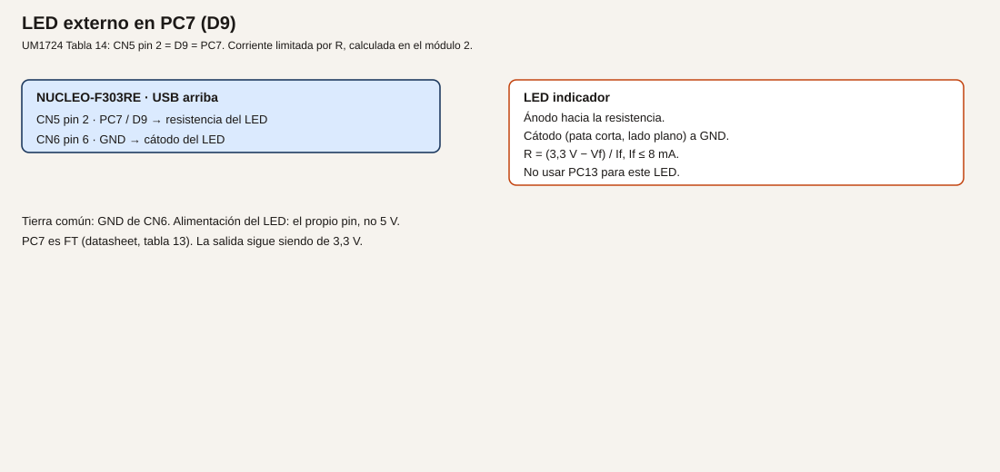
- Cableado.
| Origen |
Destino |
Notas |
| CN5 pin 2, PC7 / D9 |
Resistencia, y de ahí al ánodo |
Pata larga del LED típico |
| Cátodo |
CN6 pin 6 o pin 7, GND |
Pata corta, lado plano |
| CN1 |
PC |
USB, como hasta ahora |
- Cálculos. R = (3,3 − 2,0) / 0,005 = 260 Ω. El valor E12 siguiente es 270 Ω. If = 1,3 / 270 = 4,8 mA. Cabe en 8 mA por pin y, con LD2, la suma queda muy por debajo de 80 mA (datasheet, tabla 17, máximos absolutos). Convención de este curso si no tienes aún la hoja: 270 Ω. Con tu Vf, repite la cuenta.
- CubeMX. PC7 como
GPIO_Output, push-pull, sin pull, velocidad baja, etiqueta LED_EXT. PA5 sigue como LD2. Genera el código.
- Código.
/* USER CODE BEGIN WHILE */
while (1)
{
HAL_GPIO_TogglePin(GPIOA, GPIO_PIN_5);
HAL_GPIO_TogglePin(GPIOC, GPIO_PIN_7);
HAL_Delay(300);
/* USER CODE END WHILE */
- Dónde. Bucle de
Core/Src/main.c.
- Compilar y probar. Build, ST-LINK, reanudar. No dejes el programa parado si quieres ver el parpadeo.
- Esperado, no medido. LD2 y el LED externo cambian a la vez. La corriente real se mide, si quieres, como caída en la resistencia dividida por 270 Ω. Esa medida es tuya.
- Fallos. Solo LD2 parpadea: PC7 no está como salida, o el cátodo no va a GND. El LED externo siempre encendido: ánodo y cátodo al revés no enciende; si enciende fijo, el pin se quedó a 1 porque el programa no corre. PC13 con un LED: no lo hagas.
- Variación. Apaga PC7 con
HAL_GPIO_WritePin(GPIOC, GPIO_PIN_7, GPIO_PIN_RESET) y deja solo PA5. Así compruebas que son dos salidas.
- Criterio. Los dos LED cambian, y puedes señalar la resistencia y el valor de If que usaste.
Ejemplo 2. B1 enciende LD2 mientras se mantiene
- Problema. Leer un mando de la propia placa sin soldar nada.
- Objetivo. LD2 encendido solo mientras B1 está pulsado.
- Material. La placa. B1 es el pulsador azul, no el negro de reset.
- Funcionamiento. PC13 tiene pull-up en la placa (R30 = 4,7 kΩ en el esquema C05) y el pulsador lo lleva a GND. Pulsado = nivel bajo. El programa lee y copia el estado invertido a PA5.
- Dibujo. No hay cableado externo. B1 está en la tarjeta, junto al microcontrolador.
- Cableado. Ninguno nuevo. Puedes dejar el LED de PC7 montado; este ejemplo no lo usa.
| Señal |
Conector |
Uso |
| PC13 |
CN7 pin 23, con SB17 cerrado |
Entrada, activa a bajo |
| PA5 |
LD2 |
Salida |
- Cálculos. No hay corriente de salida por PC13. Solo se lee.
- CubeMX. PC13 como
GPIO_Input, sin pull interno si ya confías en R30, o con pull-up. No lo pongas como salida. En la inicialización de la placa suele estar ya como B1. Compruébalo.
- Código.
/* USER CODE BEGIN WHILE */
while (1)
{
if (HAL_GPIO_ReadPin(GPIOC, GPIO_PIN_13) == GPIO_PIN_RESET)
{
HAL_GPIO_WritePin(GPIOA, GPIO_PIN_5, GPIO_PIN_SET);
}
else
{
HAL_GPIO_WritePin(GPIOA, GPIO_PIN_5, GPIO_PIN_RESET);
}
/* USER CODE END WHILE */
- Dónde. Sustituye el bucle del ejemplo 1. El LED de PC7 puede quedarse apagado.
- Compilar y probar. Build, reanudar, pulsar B1 y soltarlo.
- Esperado, no medido. LD2 sigue al pulsador azul, encendido con el dedo encima. Al soltar, se apaga. Puede haber un rebote breve al pulsar: en este ejemplo se acepta porque solo copia el nivel. El ejemplo 3 lo filtra.
- Fallos. LD2 no reacciona: estás leyendo otro pin, o SB17 está abierto, o confundes B1 con B2 (B2 es NRST y reinicia). LD2 siempre encendido: la condición está al revés (
GPIO_PIN_SET interpretado como pulsado).
- Variación. Copia el mismo nivel a PC7. Sigue sin usar PC13 como salida.
- Criterio. Pulsado enciende, suelto apaga, y PC13 no alimenta nada.
Ejemplo 3. Pulsador externo en PA8, con antirrebote
- Problema. Un contacto mecánico no hace un solo flanco. Durante unos milisegundos rebota, y un contador ingenuo contaría varias veces.
- Objetivo. Contar una pulsación de un pulsador externo solo cuando el nivel bajo se mantiene 20 ms.
- Material. Pulsador de protoboard, 4,7 kΩ, 100 nF, cables.
- Funcionamiento. En reposo, 4,7 kΩ deja PA8 a 3,3 V. Al pulsar, PA8 va a GND. El condensador de 100 nF frena el flanco. El programa solo acepta el estado nuevo si lleva al menos 20 ms estable. Esos 20 ms son convención de este curso para un pulsador de protoboard, no una norma. El tiempo lo lleva
HAL_GetTick, que avanza con el SysTick del HAL.
- Dibujo.
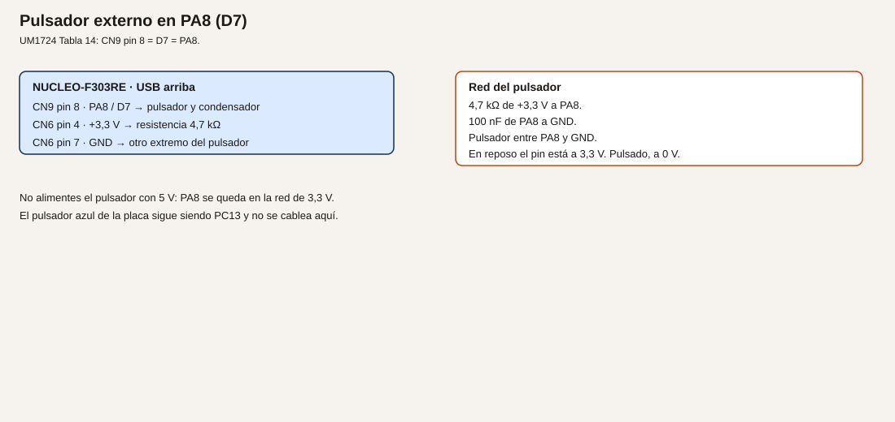
- Cableado.
| Origen |
Destino |
| CN6 pin 4, +3,3 V |
Un extremo de 4,7 kΩ |
| El otro extremo de 4,7 kΩ |
CN9 pin 8, PA8 / D7, y un lado del pulsador |
| El otro lado del pulsador |
CN6 pin 6 o 7, GND |
| 100 nF |
Entre PA8 y GND |
No uses CN6 pin 5 (+5 V). PA8 no se alimenta a 5 V en esta práctica. PA8 es FTf y la tabla 19 admite hasta 5,5 V en un pin FT, pero el pulsador de este módulo es de 3,3 V a propósito.
- Cálculos. 4,7 kΩ a 3,3 V, con el pulsador cerrado, pide 3,3 / 4700 ≈ 0,7 mA a la fuente, no al pin: el pin solo lee. El pull interno, si lo dejas activo, queda en paralelo y la corriente sube un poco. Puedes desactivar el pull interno en CubeMX porque el externo ya está.
- CubeMX. PA8 como
GPIO_Input, sin pull, etiqueta BTN_EXT. PC13 puede seguir como entrada.
- Código.
/* USER CODE BEGIN PV */
static uint32_t pulsaciones;
/* USER CODE END PV */
/* USER CODE BEGIN 0 */
static uint8_t pulsado_estable(void)
{
static uint8_t aceptado = 1U;
static uint32_t desde = 0U;
uint8_t ahora = (HAL_GPIO_ReadPin(GPIOA, GPIO_PIN_8) == GPIO_PIN_RESET) ? 0U : 1U;
if (ahora == aceptado)
{
desde = 0U;
return aceptado;
}
if (desde == 0U)
{
desde = HAL_GetTick();
return aceptado;
}
if ((HAL_GetTick() - desde) >= 20U)
{
aceptado = ahora;
desde = 0U;
}
return aceptado;
}
/* USER CODE END 0 */
/* USER CODE BEGIN WHILE */
while (1)
{
static uint8_t anterior = 1U;
uint8_t estable = pulsado_estable();
if ((anterior == 1U) && (estable == 0U))
{
pulsaciones++;
HAL_GPIO_TogglePin(GPIOA, GPIO_PIN_5);
}
anterior = estable;
/* USER CODE END WHILE */
- Dónde. La función en
USER CODE BEGIN 0. El contador en PV. El bucle en main.c.
- Compilar y probar. Punto de ruptura en
pulsaciones++, con la condición de que pare solo ahí. Pulsa una vez, con el dedo quieto un instante.
- Esperado, no medido. Cada pulsación aceptada suma 1 y conmuta LD2. Un roce muy breve, menor de 20 ms, no cuenta. No hay una medida de rebote en este texto: el filtro es de diseño.
- Fallos. Cuenta solo: el pulsador va a 5 V, o falta el GND, o PA8 no es el pin del cable. Cuenta de tres en tres: los 20 ms no se están aplicando y estás contando en otro sitio, o el condensador no está. No enciende: la detección mira el flanco de suelto en vez del de pulsado. Aquí el flanco válido es de 1 a 0.
- Variación. Sube el filtro a 50 ms. Hace falta pulsar más tiempo. Es el mismo algoritmo.
- Criterio. Una pulsación deliberada, una cuenta. PC13 sigue sin usarse como salida.
Resumen
PC7 enciende un LED con resistencia calculada. PC13 solo se lee. PA8, con 4,7 kΩ y 100 nF, cuenta pulsaciones estables de 20 ms.
Glosario
| Término |
Definición |
| Push-pull |
La salida empuja a alto y a bajo |
| Pull-up |
Resistencia a 3,3 V que define el reposo |
| Activo a bajo |
Pulsado cuando el pin lee 0 |
| Antirrebote |
Ignorar los cambios más cortos que un tiempo elegido |
HAL_GetTick |
Milisegundos desde el arranque, llevados por el SysTick |
Preguntas
1. ¿Por qué el LED externo no va en PC13?
Respuesta. La nota 2 del datasheet: ese pin no debe usarse como fuente de corriente.
2. ¿220 Ω vale para cualquier LED?
Respuesta. No. R = (3,3 − Vf) / If, con If en la zona de 8 mA o menos, y el valor comercial hacia arriba.
3. ¿El antirrebote de 20 ms está medido en esta placa?
Respuesta. No. Es la convención del curso para un pulsador de protoboard. El ejemplo 3 del módulo 9 comprueba que no cuenta de más.
Lista de comprobación
- [ ] El LED externo tiene su resistencia, y anoté Vf, If y el valor comercial.
- [ ] B1 enciende LD2 solo mientras está pulsado.
- [ ] El pulsador de PA8 va a 3,3 V, no a 5 V, y una pulsación suma uno.
Siguiente
Módulo 6: cuando el LED no coincida con lo que crees, mirar el registro y el fallo.
Módulo 6. Depuración y diagnóstico
El LED del módulo 5 puede no coincidir con lo que crees. Este módulo separa tres causas: el pin no es el que miras, el programa que corre no es el que acabas de compilar, y una variable no vale lo que imaginas. Al final se provoca un fallo a propósito, en un ensayo, y se quita.
No comprobado en hardware. Los nombres de vistas son los de STM32CubeIDE for Visual Studio Code 3.x. No se ejecutó este ensayo al redactarlo.
Objetivos
- Parar en el bucle y ver el registro de salida de PA5.
- Cambiar una variable con el programa parado y ver el efecto al reanudar.
- Leer un fallo provocado y dejar el proyecto otra vez sano.
Prerrequisitos
El proyecto del módulo 5, preset Debug. La live watch con el programa corriendo no forma parte de este módulo: la pregunta frecuente de la extensión 3.x decía que no estaba en la versión inicial. Lo que se usa es la vista con la ejecución parada.
Qué está pasando cuando paras
Analogía. Parar el depurador es como pulsar la seta y que el operario se quede con la mano donde estaba, para que puedas leer el parte. No es lo mismo que mirar la máquina en marcha con una cámara. Si el parte está en otro idioma (preset Release, sin símbolos), no lees la línea de C.
Técnico. El ST-LINK habla con PA13 (SWDIO) y PA14 (SWCLK). Esos pines no se usan como GPIO. El .elf de Debug lleva la relación entre la línea de C y la instrucción. La vista de periféricos lee registros del chip con el núcleo parado. El registro de datos de salida del GPIO se llama ODR en el manual de referencia RM0316, capítulo de GPIO. El bit 5 de GPIOA es PA5. Un 1 en ese bit es nivel alto.
Ejemplo 1. El registro de PA5 y el LED
- Problema. LD2 no hace lo que el
if parece decir, y no sabes si el pin llegó a ponerse a 1.
- Objetivo. Parar y comprobar que el bit de PA5 coincide con LD2.
- Material. El proyecto del módulo 5, ejemplo 2 o 3. LD2 visible.
- Funcionamiento.
HAL_GPIO_WritePin acaba escribiendo el registro de set/reset, y el nivel queda reflejado en ODR. Con el núcleo parado, el pin mantiene el último nivel.
- Dibujo. No hay cableado nuevo.
- Cableado. El del módulo 5, si sigue montado. No hace falta tocarlo.
- Cálculos. No hay.
- CubeMX. Sin cambios. Sigue en Debug, no en Release.
- Código. Sirve el bucle del ejemplo 2 del módulo 5. Añade una variable para tener un sitio claro donde parar:
/* USER CODE BEGIN PV */
static uint8_t nivel_pa5;
/* USER CODE END PV */
/* USER CODE BEGIN WHILE */
while (1)
{
if (HAL_GPIO_ReadPin(GPIOC, GPIO_PIN_13) == GPIO_PIN_RESET)
{
HAL_GPIO_WritePin(GPIOA, GPIO_PIN_5, GPIO_PIN_SET);
}
else
{
HAL_GPIO_WritePin(GPIOA, GPIO_PIN_5, GPIO_PIN_RESET);
}
nivel_pa5 = (HAL_GPIO_ReadPin(GPIOA, GPIO_PIN_5) == GPIO_PIN_SET) ? 1U : 0U;
/* USER CODE END WHILE */
- Dónde.
main.c, zonas USER CODE.
- Compilar y probar. Punto de ruptura en la línea de
nivel_pa5. Pulsa B1, reanuda hasta parar, mira el LED y la vista de periféricos del GPIOA, registro ODR, bit 5. Suelta B1 y repite.
- Esperado, no medido. Con B1 pulsado, LD2 encendido,
nivel_pa5 a 1 y el bit 5 de ODR a 1. Con B1 suelto, los tres a 0. Si el LED y el bit no coinciden, el fallo es de cable o de puente SB21, no del if.
- Fallos. No hay vista de periféricos: el programa no está parado, o la extensión no ha cargado los periféricos de este chip. ODR no cambia y el LED tampoco: no se grabó el
.elf nuevo. Comprueba la fecha del build.
- Variación. Pon el punto de ruptura antes del
WritePin y mira que ODR todavía tiene el valor de la vuelta anterior. Das un paso y cambia.
- Criterio. Puedes decir si el desacuerdo está en el programa o en el pin físico.
Ejemplo 2. Editar el periodo con el programa parado
- Problema. Quieres probar dos ritmos sin recompilar cada vez.
- Objetivo. Cambiar
periodo_ms en Variables y ver LD2 al reanudar.
- Material. El mismo proyecto.
- Funcionamiento. Con la ejecución parada escribes la RAM. Al reanudar, el programa usa ese valor. No es una watch en marcha.
- Dibujo. No hay.
- Cableado. Ninguno nuevo.
- Cálculos. 100 ms y 1000 ms son los dos ensayos. No son medidas de un cronómetro de laboratorio.
- CubeMX. Sin cambios.
- Código.
/* USER CODE BEGIN PV */
static volatile uint32_t periodo_ms = 300;
/* USER CODE END PV */
/* USER CODE BEGIN WHILE */
while (1)
{
HAL_GPIO_TogglePin(GPIOA, GPIO_PIN_5);
HAL_Delay(periodo_ms);
/* USER CODE END WHILE */
- Dónde.
PV y el bucle.
- Compilar y probar. Punto de ruptura en
HAL_Delay. En la parada, escribe 1000 en periodo_ms. Reanuda unos segundos y vuelve a parar. Escribe 100.
- Esperado, no medido. El ritmo sigue el valor que dejaste.
volatile evita que el compilador deje el 300 fijo en la llamada.
- Fallos. El valor vuelve a 300 solo: la edición no se aplicó al proceso parado, o estás mirando una copia. La variable no aparece: Release, o el compilador la eliminó. Vuelve a Debug.
- Variación. Pon 0.
HAL_Delay(0) vuelve enseguida y el LED parece fijo, encendido a medias. No es un PWM: es un bucle demasiado rápido. El PWM es el módulo 10.
- Criterio. Distingues «editar parado» de «ver el valor en marcha».
Ejemplo 3. Un acceso inválido, y cómo se quita
- Problema. Cuando el núcleo se cae, la pantalla del depurador no es un fallo del cable. Hay que saber leerla y hay que dejar el proyecto sano.
- Objetivo. Provocar un acceso a una dirección prohibida, ver el fallo y borrar esa línea.
- Material. Este ejemplo es un ensayo. No se deja en los módulos siguientes.
- Funcionamiento. El Cortex-M4 separa la memoria. Escribir en la dirección 0 no es escribir en RAM de datos. El núcleo entra en una falta. El analizador de fallos de la extensión muestra esa excepción con el programa detenido.
- Dibujo. No hay.
- Cableado. Ninguno.
- Cálculos. No hay.
- CubeMX. Sin cambios. Sigue pudiendo depurar por SWD: el fallo no desconecta PA13 y PA14.
- Código. Añádelo solo para este ensayo, al principio del bucle:
/* USER CODE BEGIN WHILE */
while (1)
{
volatile uint32_t *prohibido = (uint32_t *)0x00000000U;
*prohibido = 0x12345678U;
HAL_GPIO_TogglePin(GPIOA, GPIO_PIN_5);
HAL_Delay(periodo_ms);
/* USER CODE END WHILE */
La dirección 0 en este mapa no es una RAM de programa que puedas usar. Por eso la falta es el resultado previsto del ensayo.
- Dónde. El bucle de
main.c. En cuanto lo hayas visto, borra las dos líneas del puntero y la escritura.
- Compilar y probar. Build y depurar. La ejecución no debe seguir parpadeando. Abre el analizador de fallos. Anota el tipo de falta que te muestre. Para, quita las dos líneas, vuelve a compilar y graba.
- Esperado, no medido. El depurador se detiene en la falta en vez de conmutar LD2. Después de borrar el ensayo y grabar de nuevo, LD2 vuelve a conmutar. El texto exacto de la ventana depende de la versión de la extensión: anótalo como lo que tú viste.
- Fallos. El LED sigue parpadeando: no grabaste este
.elf, o el optimizador eliminó la escritura. volatile en el puntero está para que no la elimine. El depurador no conecta: eso es el cable o el controlador, no esta falta. Si ya no depura después del ensayo, pulsa reset (B2) y vuelve a Run and Debug.
- Variación. No hagas una segunda falta «más interesante». Este ensayo basta, y se quita.
- Criterio. El proyecto que pasas al módulo 7 no contiene la escritura a
0x00000000.
Resumen
Parado, el bit de ODR de PA5 se compara con LD2. Una variable volatile se edita en esa parada. Un acceso inválido se provoca una vez, se lee y se borra.
Glosario
| Término |
Definición |
| Punto de ruptura |
Parada pedida en una línea |
| ODR |
Registro de datos de salida del GPIO, RM0316 |
| Falta |
Excepción del núcleo por un acceso que el mapa no permite |
| Release |
Preset que estorba para seguir una línea de C |
| SWD |
Depuración por PA13 y PA14, a través del ST-LINK |
Preguntas
1. ¿LD1 apagado demuestra que el programa se cayó?
Respuesta. No. LD1 lo gobierna el ST-LINK. La falta se ve en el depurador.
2. ¿Por qué el ensayo escribe en la dirección 0?
Respuesta. Para provocar una falta conocida y aprender a quitarla. No es una técnica de trabajo.
3. ¿Editar periodo_ms mientras el programa corre es lo que acabas de practicar?
Respuesta. No. Has editado con la ejecución parada.
Lista de comprobación
- [ ] He visto el bit 5 de ODR coincidir con LD2.
- [ ] He cambiado
periodo_ms parado y el ritmo ha seguido ese valor.
- [ ] He quitado el acceso inválido y el proyecto vuelve a parpadear.
Siguiente
Módulo 7: ver números en el PC sin dejar el programa parado.
Módulo 7. UART y terminal serie
Hasta aquí los números se leían con el programa parado. Un UART envía y recibe bytes mientras el programa sigue. En la placa hay dos caminos distintos: USART2 hacia el PC por el ST-LINK, y USART1 hacia otra placa de 3,3 V.
No comprobado en hardware. Las velocidades y el formato son los que configuras. No se midió el enlace al redactar esto.
Objetivos
- Enviar una línea por el puerto COM virtual al arrancar.
- Recibir un carácter y devolverlo, y usar otro carácter para conmutar LD2.
- Cruzar TX y RX con un ESP32 a 3,3 V, con GND común, sin soldar SB62 ni SB63.
Prerrequisitos
Módulos 3 a 6. Para el ejemplo 3, un ESP32 u otra placa cuya UART sea de 3,3 V, alimentada por su propio USB.
Dos UART, dos destinos
Analogía. El puerto serie es un tubo de mensajes de texto entre dos puestos. Si los dos hablan a la vez por el mismo tubo, no se entiende. Por eso el aviso al PC y el aviso a la otra placa van por tubos distintos. Los hilos se cruzan: lo que uno transmite, el otro lo recibe. La masa tiene que ser la misma, como la referencia de un lazo de corriente.
Técnico. Verificado en UM1724.
- USART2 usa PA2 (TX) y PA3 (RX). Con SB13 y SB14 cerrados, que es el defecto de la tabla 10, esos pines van al ST-LINK y aparecen en el PC como un puerto COM virtual. SB62 y SB63 abiertos: PA2 y PA3 no están en D1 ni en D0. No los sueldes en este módulo.
- USART1 usa PA9 (TX, D8, CN5 pin 1) y PA10 (RX, D2, CN9 pin 3). Los dos son FTf. La tabla 19 admite en un pin FT hasta 5,5 V en la entrada. La salida del STM32 sigue siendo 3,3 V.
- El formato de este curso es 8N1: 8 bits de dato, sin paridad, 1 bit de parada. La velocidad del ejemplo es 115200 bit/s. Tiene que ser la misma en CubeMX y en el monitor.
El monitor serie integrado de la extensión sirve. Cualquier otro monitor a 115200 8N1 también, si no está abierto a la vez que el depurador se queda el puerto: ciérralo antes de grabar si el sistema se queja de que el COM está ocupado.
Ejemplo 1. Una línea al arrancar, por USART2
- Problema. Saber que el programa llegó al bucle sin parar el depurador.
- Objetivo. Escribir
nucleo lista una vez, por el puerto virtual.
- Material. La placa y el PC. Nada en D0 ni en D1.
- Funcionamiento.
HAL_UART_Transmit manda los bytes por PA2 hacia el ST-LINK, que los convierte en USB. El PC los muestra como texto.
- Dibujo. No hay cableado externo. El camino PA2/PA3 está en la tarjeta, por SB13 y SB14.
- Cableado. Solo CN1 al PC.
| Señal |
¿Sale al Arduino? |
Uso |
| PA2 USART2_TX |
No, mientras SB62 esté abierto |
Hacia el ST-LINK |
| PA3 USART2_RX |
No, mientras SB63 esté abierto |
Desde el ST-LINK |
- Cálculos. 115200 bit/s, 8N1, son 10 símbolos por byte si cuentas el bit de arranque. Un byte tarda unos 87 µs. No hace falta medirlo para este ejemplo.
- CubeMX. Activa USART2 en modo asíncrono si la placa no lo dejó ya así. 115200, 8 bits, sin paridad, 1 bit de parada. Pines PA2 y PA3. No actives el puerto en D0/D1. Genera.
- Código.
/* USER CODE BEGIN 2 */
static const uint8_t aviso[] = "nucleo lista\r\n";
HAL_UART_Transmit(&huart2, (uint8_t *)aviso, sizeof(aviso) - 1U, 100);
/* USER CODE END 2 */
USER CODE BEGIN 2 está después de la inicialización y antes del bucle. sizeof cuenta el cero final de la cadena: se resta 1 para no enviarlo.
- Dónde.
Core/Src/main.c, zona 2. La variable huart2 la declara CubeMX.
- Compilar y probar. Build, graba, abre el monitor serie a 115200 8N1 en el COM del ST-LINK. Pulsa reset (B2) para ver la línea otra vez.
- Esperado, no medido. Aparece
nucleo lista una vez por cada arranque. LD2 puede quedar como lo dejara el módulo anterior.
- Fallos. Ningún COM: controlador ST-LINK, o el cable no tiene datos. Texto ilegible: la velocidad o el 8N1 no coinciden. Nada en pantalla y el COM existe: estás en otro puerto, o SB13/SB14 están abiertos. No sueldes SB62 para «arreglarlo».
- Variación. Manda la misma línea también dentro del
while, cada segundo, con HAL_Delay(1000). Verás que el retardo bloquea. Se quitará en el módulo 8.
- Criterio. La línea coincide con el texto del programa y con la velocidad del monitor.
Ejemplo 2. Eco y un carácter que conmuta LD2
- Problema. El enlace de ida no demuestra que la placa reciba.
- Objetivo. Cada carácter recibido se devuelve. La letra
l conmuta LD2.
- Material. El mismo puerto virtual.
- Funcionamiento.
HAL_UART_Receive espera un byte en PA3, con un tiempo máximo. Si llega, se reenvía por PA2. Si es l, se cambia PA5.
- Dibujo. No hay cableado nuevo.
- Cableado. El del ejemplo 1.
- Cálculos. El tiempo de espera de 20 ms es de diseño, para no quedarse bloqueado del todo si no llega nada. Sigue siendo una espera corta dentro del bucle.
- CubeMX. El mismo USART2.
- Código.
/* USER CODE BEGIN WHILE */
while (1)
{
uint8_t letra = 0U;
if (HAL_UART_Receive(&huart2, &letra, 1U, 20) == HAL_OK)
{
HAL_UART_Transmit(&huart2, &letra, 1U, 20);
if (letra == (uint8_t)'l')
{
HAL_GPIO_TogglePin(GPIOA, GPIO_PIN_5);
}
}
/* USER CODE END WHILE */
- Dónde. El bucle. Puedes dejar el aviso del ejemplo 1 en la zona 2.
- Compilar y probar. Monitor a 115200 8N1. Escribe
hola y después l.
- Esperado, no medido. El monitor muestra lo que escribes. Cada
l cambia LD2. Otras letras solo se devuelven.
- Fallos. No vuelve el eco: el monitor no envía al pulsar la tecla, o el RX del ST-LINK no está en SB14.
l no cambia el LED: el programa compara otra letra, o PA5 no es salida. Caracteres doblados: el monitor hace eco local y además la placa devuelve el byte. Desactiva el eco local.
- Variación. Usa
e para encender y a para apagar, con HAL_GPIO_WritePin, en vez de conmutar.
- Criterio. Distingues el eco de la orden del LED, y no has movido SB62 ni SB63.
Ejemplo 3. USART1 hacia un ESP32 a 3,3 V
- Problema. Hablar con otra placa sin ocupar el puerto del PC.
- Objetivo. El STM32 envía
ping por USART1 y muestra por USART2 lo que el ESP32 conteste.
- Material. ESP32 alimentado por su USB. Cables de señal y un GND común. Los dos lados a 3,3 V.
- Funcionamiento. TX de uno va a RX del otro. USART2 sigue siendo el informe hacia el PC. Si el otro UART fuera de 5 V, la entrada FT del STM32 lo admitiría como máximo absoluto, pero la salida de 3,3 V puede no ser un «uno» válido para un receptor alimentado a 5 V. Este ejemplo no usa desplazador porque los dos lados son 3,3 V. Si tu módulo no lo es, no lo conectes: hace falta un desplazador, y esta lección no lo cablea.
- Dibujo.
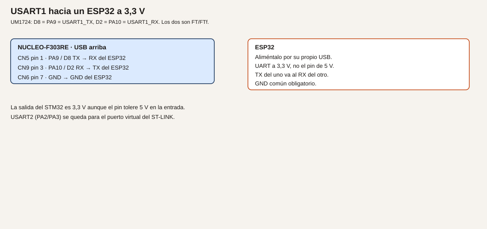
- Cableado.
| Origen en la Nucleo |
Destino |
| CN5 pin 1, PA9 / D8, TX |
RX del ESP32 |
| CN9 pin 3, PA10 / D2, RX |
TX del ESP32 |
| CN6 pin 6 o 7, GND |
GND del ESP32 |
El ESP32 no se alimenta desde un GPIO ni hace falta tomarlo de CN6 pin 4. Usa su propio USB. No conectes el pin de 5 V del ESP32 a PA9 ni a PA10.
- Cálculos. La misma velocidad en los dos programas: 115200 8N1.
- CubeMX. Añade USART1 asíncrono en PA9 y PA10, 115200 8N1. Deja USART2 como estaba. Genera.
- Código. En el STM32:
/* USER CODE BEGIN 2 */
static const uint8_t ping[] = "ping\r\n";
HAL_UART_Transmit(&huart1, (uint8_t *)ping, sizeof(ping) - 1U, 100);
/* USER CODE END 2 */
/* USER CODE BEGIN WHILE */
while (1)
{
uint8_t byte = 0U;
if (HAL_UART_Receive(&huart1, &byte, 1U, 20) == HAL_OK)
{
HAL_UART_Transmit(&huart2, &byte, 1U, 20);
}
/* USER CODE END WHILE */
En el ESP32, un programa que escuche el UART a 115200 y responda pong basta. El texto del ESP32 no forma parte de este repositorio: escríbelo en el entorno de esa placa y confirma que su UART de 3,3 V es el que cableaste.
- Dónde.
huart1 lo crea CubeMX. El STM32 se programa en main.c. El informe al PC sigue saliendo por huart2.
- Compilar y probar. Graba el STM32. Abre el monitor del COM virtual. Alimenta el ESP32. Pulsa reset en la Nucleo para repetir el
ping.
- Esperado, no medido. Lo que el ESP32 envíe aparece en el monitor del PC. Si todavía no hay programa en el ESP32, no aparecerá
pong: eso no es un fallo del cable hasta que el otro lado transmita.
- Fallos. Nada, con el ESP32 ya transmitiendo: TX y RX no están cruzados, o falta el GND. Caracteres basura: velocidades distintas. La placa del STM32 se calienta o el pin no responde: había 5 V en el cable de señal. Quita esa conexión.
- Variación. No dejes el ESP32 conectado cuando llegues al módulo 21. PA9 y PA10 pasan a ser el Modbus. Son usos alternativos, no simultáneos.
- Criterio. USART2 sigue libre para el PC y USART1 es el enlace externo, a 3,3 V, con GND común.
Resumen
115200 8N1 en los dos extremos. USART2 es el COM del ST-LINK y no se mueve a D0/D1. USART1 cruza TX/RX con otra placa de 3,3 V.
Glosario
| Término |
Definición |
| UART |
Envío y recepción de bytes sin reloj compartido |
| 8N1 |
8 bits, sin paridad, un bit de parada |
| Puerto virtual |
El COM que el ST-LINK crea en el PC a partir de USART2 |
| Tierra común |
El GND de las dos placas unido |
| Bit de arranque |
El símbolo que precede a cada byte en el UART |
Preguntas
1. ¿PA9 a 3,3 V garantiza que un receptor de 5 V lo entienda?
Respuesta. No. La entrada FT admite 5 V. La salida no se convierte en 5 V.
2. ¿Por qué no se cierran SB62 y SB63?
Respuesta. Porque entonces PA2 y PA3 también aparecerían en D1 y D0, y este curso los reserva al ST-LINK.
3. ¿Puedo usar PA9 a la vez para el ESP32 y para el Modbus del módulo 21?
Respuesta. No. Hay que desconectar el ESP32 antes de ese módulo.
Lista de comprobación
- [ ]
nucleo lista sale a 115200 8N1 por el COM virtual.
- [ ] El eco funciona y
l cambia LD2.
- [ ] El ESP32, si lo monté, está a 3,3 V, con TX/RX cruzados y GND común.
Siguiente
Módulo 8: dejar de usar HAL_Delay como forma de llevar el tiempo.
Módulo 8. Temporizadores y programas que no se bloquean
HAL_Delay deja el procesador quieto. Un semáforo que además tiene que atender un pulsador no puede vivir dentro de esa espera. El tiempo pasa en un temporizador y el bucle solo pregunta si ya toca cambiar.
No comprobado en hardware. El reloj de 72 MHz es el que debes ver en CubeMX al elegir esta placa, no una medida de frecuencia.
Objetivos
- Conmutar LD2 sin
HAL_Delay en el lazo.
- Montar un semáforo de tres LED con tiempos en milisegundos.
- Medir el intervalo entre dos pulsaciones de B1 y escribirlo por USART2.
Prerrequisitos
Módulos 5 y 7. Tres LED con su resistencia cada uno, si haces el ejemplo 2. Esos tres LED no conviven con el relé del módulo 10: PB5 es el ámbar aquí y la base del transistor allí. Son montajes alternativos.
El tiempo en el chip
Analogía. HAL_Delay es mirar el reloj de pared sin hacer otra cosa hasta que pase el minuto. Un temporizador es el reloj que sigue andando mientras atiendes el teléfono. El programa mira el reloj cuando puede.
Técnico. HAL_GetTick cuenta milisegundos con el SysTick. Para este módulo basta, y es un temporizador del núcleo, no un retardo vacío escrito a mano. TIM2 es el temporizador de 32 bits de este chip (datasheet, tabla 2). TIM3 tiene el canal 2 en PC7 (datasheet, tabla 13, y UM1724 tabla 14: D9). Ese canal se usará en el módulo 10 para PWM. Aquí PC7 es todavía GPIO.
En la placa C-02 o posterior, el reloj de sistema previsto es HSE de 8 MHz por el MCO del ST-LINK en PF0, PLL a 72 MHz, APB1 a 36 MHz y APB2 a 72 MHz. Confírmalo en la pestaña Clock. Si APB1 está dividido, el reloj de un temporizador de APB1 queda al doble de PCLK1: a 72 MHz. Es la regla del reloj de timers del manual de referencia; confírmala en RM0316 y en la pantalla de CubeMX. No está medida en esta redacción.
Ejemplo 1. Parpadeo sin bloquear el bucle
- Problema. Mientras
HAL_Delay espera, el programa no puede leer un pulsador ni atender el UART.
- Objetivo. Conmutar PA5 cada 500 ms y, en el mismo bucle, seguir recibiendo por USART2.
- Material. La placa y el monitor serie del módulo 7.
- Funcionamiento. Se guarda el milisegundo de la última conmutación. Cuando la diferencia llega a 500, se conmuta y se actualiza la marca. El restar dos
uint32_t de HAL_GetTick tolera el desbordamiento del contador.
- Dibujo. No hay cableado nuevo.
- Cableado. Solo USB.
- Cálculos. 500 ms es el semiperiodo elegido. En un minuto habría unas 60 conmutaciones de encendido. No se ha cronometrado.
- CubeMX. PA5 salida. USART2 a 115200 8N1, como en el módulo 7. SysTick como fuente de tiempo del HAL, que es lo habitual al generar el proyecto.
- Código.
/* USER CODE BEGIN WHILE */
while (1)
{
static uint32_t marca = 0U;
uint8_t letra = 0U;
if ((HAL_GetTick() - marca) >= 500U)
{
marca = HAL_GetTick();
HAL_GPIO_TogglePin(GPIOA, GPIO_PIN_5);
}
if (HAL_UART_Receive(&huart2, &letra, 1U, 0) == HAL_OK)
{
HAL_UART_Transmit(&huart2, &letra, 1U, 10);
}
/* USER CODE END WHILE */
El tiempo de espera 0 en Receive significa: si no hay byte, sigue. No llama a HAL_Delay.
- Dónde. El bucle de
main.c.
- Compilar y probar. Monitor a 115200. Escribe mientras LD2 cambia.
- Esperado, no medido. El eco responde también entre dos cambios del LED. El periodo visible es del orden de medio segundo por estado. No hay una captura de osciloscopio en este texto.
- Fallos. El LED no conmuta:
marca se actualiza siempre, no solo cuando vence el tiempo. Revisa el if. El eco tarda medio segundo: quedó un HAL_Delay o un Receive con espera larga.
- Variación. Cambia 500 por 100. El bucle no se reescribe: solo el umbral.
- Criterio. No hay
HAL_Delay en el while, y el UART sigue respondiendo.
Ejemplo 2. Semáforo de tres luces
- Problema. Tres pilotos con tiempos distintos no caben en una cadena de retardos si más adelante hay que leer un pulsador.
- Objetivo. Rojo, ámbar y verde, un solo encendido a la vez, con tiempos de un cruce de juguete.
- Material. Tres LED y tres resistencias, calculadas como en el módulo 5. Ejemplo si Vf = 2,0 V e If = 5 mA: 270 Ω cada una. Recalcula con tu hoja.
- Funcionamiento. Una fase tiene un pin encendido y una duración. Al vencer, se pasa a la fase siguiente. Solo hay un LED encendido, así que la corriente de salida es la de un pin, no la de tres.
- Dibujo.
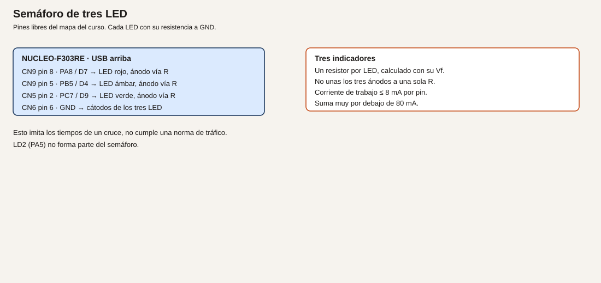
- Cableado.
| Luz |
Conector |
Señal |
Destino |
| Rojo |
CN9 pin 8 |
PA8 / D7 |
Resistencia y ánodo |
| Ámbar |
CN9 pin 5 |
PB5 / D4 |
Resistencia y ánodo |
| Verde |
CN5 pin 2 |
PC7 / D9 |
Resistencia y ánodo |
| Cátodos |
CN6 pin 6 o 7 |
GND |
Los tres |
PA8 aquí es salida. No dejes montado a la vez el pulsador externo del módulo 5, que usaba PA8 como entrada. PB5 no lleva a la vez la base del transistor del módulo 10.
- Cálculos. Tiempos de juguete, no una norma de tráfico: rojo 4000 ms, ámbar 1000 ms, verde 4000 ms. If de cada LED, con 270 Ω y el supuesto de arriba, unos 4,8 mA.
- CubeMX. PA8, PB5 y PC7 como
GPIO_Output, push-pull, sin pull, velocidad baja. Etiquetas ROJO, AMBAR, VERDE.
- Código.
/* USER CODE BEGIN 0 */
static void luces(uint8_t rojo, uint8_t ambar, uint8_t verde)
{
HAL_GPIO_WritePin(GPIOA, GPIO_PIN_8, rojo ? GPIO_PIN_SET : GPIO_PIN_RESET);
HAL_GPIO_WritePin(GPIOB, GPIO_PIN_5, ambar ? GPIO_PIN_SET : GPIO_PIN_RESET);
HAL_GPIO_WritePin(GPIOC, GPIO_PIN_7, verde ? GPIO_PIN_SET : GPIO_PIN_RESET);
}
/* USER CODE END 0 */
/* USER CODE BEGIN WHILE */
while (1)
{
static uint8_t fase = 0U;
static uint32_t marca = 0U;
static const uint32_t duracion[] = {4000U, 1000U, 4000U};
if ((HAL_GetTick() - marca) >= duracion[fase])
{
marca = HAL_GetTick();
fase++;
if (fase > 2U)
{
fase = 0U;
}
}
if (fase == 0U) { luces(1U, 0U, 0U); }
if (fase == 1U) { luces(0U, 1U, 0U); }
if (fase == 2U) { luces(0U, 0U, 1U); }
/* USER CODE END WHILE */
- Dónde.
luces en USER CODE BEGIN 0. El bucle en main.c.
- Compilar y probar. Graba y observa el orden rojo, ámbar, verde.
- Esperado, no medido. Nunca hay dos LED del semáforo encendidos. El orden se repite. LD2 no forma parte del semáforo.
- Fallos. Dos luces a la vez: un cátodo no va a GND y el LED encuentra otro camino, o
luces no apaga las otras. Ninguna luz: las tres resistencias no están, o los pines no son salidas. Ámbar en el pin del relé: desmonta uno de los dos antes de seguir.
- Variación. Añade una fase rojo+ámbar, de 1000 ms, como cuarto estado. El módulo 17 la escribirá como máquina de estados con nombre.
- Criterio. Los tiempos están en la tabla
duracion y el bucle no llama a HAL_Delay.
Ejemplo 3. Tiempo entre dos pulsaciones de B1
- Problema. Quieres medir un intervalo sin un cronómetro externo.
- Objetivo. Al soltar la segunda pulsación de B1, USART2 escribe los milisegundos desde la anterior.
- Material. B1 y el monitor serie. PC13 solo se lee.
- Funcionamiento. En cada flanco a pulsado (nivel bajo estable) se resta la marca anterior de
HAL_GetTick. TIM2 podría contar lo mismo en microsegundos; para un dedo, el milisegundo del SysTick sobra y el código se lee mejor. Se dice aquí para no presentar el SysTick como si fuera el único temporizador del chip.
- Dibujo. No hay cableado nuevo.
- Cableado. B1 interno. USART2 por el ST-LINK.
| Señal |
Uso |
| PC13 |
Entrada, activa a bajo |
| PA2/PA3 |
Texto hacia el PC |
- Cálculos. El filtro de 20 ms es el del módulo 5. Un intervalo de 1 s debe imprimirse cerca de 1000. La exactitud del SysTick depende del reloj de 72 MHz configurado, no de una calibración hecha en este texto.
- CubeMX. PC13 entrada. USART2 115200 8N1. Opcional: activa TIM2 como temporizador interno, sin pin, para verlo en el árbol. No es imprescindible para este listado.
- Código.
/* USER CODE BEGIN PV */
static uint32_t marca_b1;
static uint8_t hay_marca;
/* USER CODE END PV */
/* USER CODE BEGIN 0 */
static uint8_t b1_estable(void)
{
static uint8_t aceptado = 1U;
static uint32_t desde = 0U;
uint8_t ahora = (HAL_GPIO_ReadPin(GPIOC, GPIO_PIN_13) == GPIO_PIN_RESET) ? 0U : 1U;
if (ahora == aceptado)
{
desde = 0U;
return aceptado;
}
if (desde == 0U)
{
desde = HAL_GetTick();
return aceptado;
}
if ((HAL_GetTick() - desde) >= 20U)
{
aceptado = ahora;
desde = 0U;
}
return aceptado;
}
/* USER CODE END 0 */
/* USER CODE BEGIN WHILE */
while (1)
{
static uint8_t anterior = 1U;
uint8_t ahora = b1_estable();
if ((anterior == 1U) && (ahora == 0U))
{
uint32_t t = HAL_GetTick();
if (hay_marca)
{
char linea[40];
int n = snprintf(linea, sizeof(linea), "intervalo %lu ms\r\n",
(unsigned long)(t - marca_b1));
if (n > 0)
{
HAL_UART_Transmit(&huart2, (uint8_t *)linea, (uint16_t)n, 50);
}
}
marca_b1 = t;
hay_marca = 1U;
}
anterior = ahora;
/* USER CODE END WHILE */
Hace falta #include <stdio.h> en USER CODE BEGIN Includes.
- Dónde.
main.c, zonas Includes, PV, 0 y el bucle.
- Compilar y probar. Monitor serie. Pulsa B1 dos veces, con una pausa clara.
- Esperado, no medido. La primera pulsación no imprime intervalo. La segunda imprime la diferencia. El número debe parecerse al tiempo que contaste. Anota el tuyo: este texto no trae una medida.
- Fallos. Siempre 0: la marca se actualiza antes de restar. Revisa el orden. Números de unas decenas de ms al mantener pulsado: estás contando rebotes. El filtro de 20 ms tiene que seguir delante. Nada en el monitor: USART2 o la velocidad.
- Variación. Ignora intervalos menores de 100 ms además del filtro, por si el dedo rebota más que 20 ms.
- Criterio. El intervalo sale por USART2 y PC13 no se ha puesto como salida.
Resumen
El bucle mira HAL_GetTick y no se duerme en HAL_Delay. El semáforo es una fase y una tabla de tiempos. El intervalo entre pulsaciones se imprime.
Glosario
| Término |
Definición |
| SysTick |
Contador del núcleo que el HAL usa para los milisegundos |
| TIM2 |
Temporizador de 32 bits de este STM32 |
| Periodo |
Tiempo entre dos sucesos iguales |
| Fase |
Un estado del semáforo con una duración |
Preguntas
1. ¿Quitar HAL_Delay apaga el temporizador?
Respuesta. No. Deja de bloquear el bucle. El tiempo sigue en el SysTick.
2. ¿Puedo dejar el ámbar en PB5 y a la vez el transistor del módulo 10?
Respuesta. No. Es el mismo pin. Se monta uno u otro.
3. ¿Estos tiempos de semáforo cumplen una norma de tráfico?
Respuesta. No. Son un ejemplo de programa.
Lista de comprobación
- [ ] LD2 conmuta y el UART responde en el mismo bucle, sin
HAL_Delay.
- [ ] Hay una resistencia por LED del semáforo.
- [ ] He leído un intervalo entre dos pulsaciones de B1.
Siguiente
Módulo 9: atender el flanco cuando ocurre, no en la siguiente vuelta del bucle.
Módulo 9. Interrupciones y prioridades
Preguntar en cada vuelta del bucle si el pulsador cambió funciona, y es lo que hiciste en el módulo 8. Una interrupción es el aviso que llega en el momento del flanco, aunque el programa vaya por otra línea. La rutina que atiende ese aviso tiene que ser corta.
No comprobado en hardware.
Objetivos
- Atender B1 por una interrupción externa, con antirrebote fuera de un retardo largo.
- Ver que una prioridad decide quién espera cuando coinciden el pulsador y el UART.
- Comprobar que dos flancos más rápidos que el filtro no cuentan dos veces.
Prerrequisitos
Módulos 7 y 8. El pulsador de la placa, B1, y el monitor serie.
La idea, antes del NVIC
Analogía. El bucle del módulo 8 es mirar el teléfono cada cierto tiempo por si alguien llamó. La interrupción es el timbre: dejas un momento lo que tenías en la mano, apuntas quién llamó y vuelves. Si te quedas hablando media hora en el pasillo, el trabajo de la mesa no avanza. Por eso dentro de la interrupción no se pone un HAL_Delay largo.
Técnico. Una línea GPIO puede pedir una interrupción al flanco. En este chip, PC13 entra por la línea EXTI13 y comparte el canal de interrupción EXTI15_10. El NVIC es quien ordena las peticiones del núcleo. Un número de prioridad más bajo se atiende antes. Los nombres exactos de la prioridad los ves en la pestaña NVIC de CubeMX; no los copies de otro STM32.
ES0261 Rev 5, de diciembre de 2018, aplica al silicio Y de esta familia. Antes de usar este módulo para despertar de un modo de bajo consumo, abre la sección de sistema de esa errata. El ejemplo de aquí no entra en Sleep ni en Stop: eso es el módulo 25. Si tu revisión de ES0261 describe un límite al despertar por EXTI, anótalo en el margen y no des por bueno un consumo de sueño que esta lección no mide.
Ejemplo 1. B1 por interrupción
- Problema. El flanco no debe esperar a que el bucle acabe un trabajo largo.
- Objetivo. Cada pulsación aceptada de B1 conmuta LD2, y la interrupción solo anota el evento.
- Material. La placa. PC13 no se cablea fuera.
- Funcionamiento. CubeMX activa EXTI en el flanco de bajada de PC13. La función
HAL_GPIO_EXTI_Callback pone un aviso si han pasado al menos 20 ms desde el último aviso aceptado. El bucle, fuera de la interrupción, mira el aviso y conmuta PA5. El filtro no es un HAL_Delay dentro de la callback.
- Dibujo. No hay cableado externo.
- Cableado. B1 interno, SB17 cerrado. PA5 es LD2.
| Señal |
Papel |
| PC13 |
EXTI, flanco a nivel bajo |
| PA5 |
LED, se toca en el bucle, no en la callback |
- Cálculos. 20 ms es la misma convención de antirrebote del módulo 5.
- CubeMX. PC13 como
GPIO_EXTI13, flanco de bajada, pull-up. NVIC: habilita EXTI line[15:10]. PA5 salida. Genera.
- Código.
/* USER CODE BEGIN PV */
static volatile uint8_t aviso_b1;
static volatile uint32_t ultimo_b1;
/* USER CODE END PV */
/* USER CODE BEGIN 0 */
void HAL_GPIO_EXTI_Callback(uint16_t GPIO_Pin)
{
if (GPIO_Pin == GPIO_PIN_13)
{
uint32_t ahora = HAL_GetTick();
if ((ahora - ultimo_b1) >= 20U)
{
ultimo_b1 = ahora;
aviso_b1 = 1U;
}
}
}
/* USER CODE END 0 */
/* USER CODE BEGIN WHILE */
while (1)
{
if (aviso_b1)
{
aviso_b1 = 0U;
HAL_GPIO_TogglePin(GPIOA, GPIO_PIN_5);
}
/* USER CODE END WHILE */
Si CubeMX ya generó HAL_GPIO_EXTI_Callback en stm32f3xx_it.c, no crees una segunda. Escribe el cuerpo en el USER CODE de esa función, o deja una sola definición en USER CODE BEGIN 0 y no dupliques el símbolo. Un error de «multiple definition» significa que hay dos.
- Dónde.
main.c si la callback no existe todavía. Si existe en el archivo de interrupciones, el cuerpo va allí, en su USER CODE, y las variables siguen en main.c con un extern en el otro archivo, dentro de USER CODE.
- Compilar y probar. Graba, pulsa B1, observa LD2.
- Esperado, no medido. Una pulsación, un cambio de LD2. Mantener el dedo no repite el cambio: el flanco de bajada ya pasó. El rebote corto no cuenta gracias a los 20 ms.
- Fallos. No ocurre nada: NVIC sin habilitar, o el flanco elegido es el de subida y sueltas demasiado rápido para notarlo. Cuenta dos: baja el trabajo del bucle y confirma que
ultimo_b1 es volatile. El enlace no compila: callback duplicada.
- Variación. Cambia el flanco a subida y comprueba que LD2 cambia al soltar. Vuelve a bajada para el resto del módulo.
- Criterio. La callback no llama a
HAL_Delay ni a HAL_UART_Transmit.
Ejemplo 2. La tecla y el UART, con prioridad
- Problema. Si la rutina del UART fuera lenta, el pulsador tendría que esperar, o al revés.
- Objetivo. Dejar la interrupción del UART más prioritaria que la de EXTI y ver el orden en el monitor.
- Material. Monitor serie a 115200 8N1. B1.
- Funcionamiento. USART2 en interrupción recibe un byte y anota un carácter. EXTI anota el pulsador. El bucle imprime qué aviso llegó. La prioridad se ve en CubeMX: un valor numérico menor se atiende primero. Para el ensayo, pon USART2 más prioritario que EXTI15_10.
- Dibujo. No hay cableado nuevo.
- Cableado. USART2 por el ST-LINK. PC13 es B1.
- Cálculos. No hay tiempos nuevos. El ensayo no mide microsegundos de latencia.
- CubeMX. USART2 con interrupción global habilitada en NVIC. En NVIC, la prioridad de USART2 más alta que la de EXTI (número más bajo). Anota los dos números que te muestre tu versión de CubeMX.
- Código. Además del ejemplo 1:
/* USER CODE BEGIN PV */
static volatile uint8_t aviso_uart;
static volatile uint8_t letra_uart;
/* USER CODE END PV */
/* USER CODE BEGIN 0 */
void HAL_UART_RxCpltCallback(UART_HandleTypeDef *huart)
{
if (huart == &huart2)
{
aviso_uart = 1U;
}
}
/* USER CODE END 0 */
/* USER CODE BEGIN 2 */
HAL_UART_Receive_IT(&huart2, (uint8_t *)&letra_uart, 1U);
/* USER CODE END 2 */
En el bucle, si aviso_uart está a 1, transmite la línea uart\r\n, lo pone a 0 y vuelve a llamar a HAL_UART_Receive_IT. Si aviso_b1 está a 1, transmite boton\r\n y conmuta LD2. letra_uart tiene que ser volatile y del tamaño de un byte; el cast del listado anterior exige que la variable sea uint8_t. Declárala static volatile uint8_t letra_uart;.
- Dónde. La callback de UART, igual que la de EXTI: una sola definición, en el USER CODE que CubeMX haya dejado.
- Compilar y probar. Escribe una letra en el monitor y pulsa B1, varias veces, también casi a la vez.
- Esperado, no medido. Aparecen las dos palabras. Con la prioridad del UART por delante, una recepción no se queda detrás de la callback del botón, porque la del botón solo pone un aviso. Este ensayo no demuestra la prioridad si las dos callbacks son igual de cortas: la prioridad se ve cuando alargas a propósito la del botón. No la alargues con
HAL_Delay. Si quieres verla, pon en la callback del botón un bucle vacío contado, de ensayo, y quítalo al acabar. Anota lo que observes.
- Fallos. Solo llega un carácter: falta volver a armar
HAL_UART_Receive_IT después de cada byte. Texto mezclado: estás transmitiendo desde las dos callbacks. Transmite solo en el bucle.
- Variación. Invierte las prioridades en CubeMX, regenera y repite el ensayo. Anota los números.
- Criterio. Puedes señalar qué interrupción tiene el número menor y qué trabajo no está dentro de la callback.
Ejemplo 3. Dos flancos más rápidos que el filtro
- Problema. Un rebote o dos clics muy seguidos no deben contar como dos órdenes.
- Objetivo. Demostrar que un segundo flanco antes de 20 ms no incrementa el contador.
- Material. B1. Para un flanco repetible, puedes puentear un momento PC13 a GND con un cable, dos veces seguidas. Hazlo solo a GND de la placa, nunca a 5 V. PC13 es tipo TC: no admite 5 V.
- Funcionamiento. El contador solo sube cuando la callback acepta el flanco. La propia callback rechaza el que llega antes de 20 ms.
- Dibujo. Si usas cable: CN7 pin 23 (PC13) a CN6 pin 6 (GND), un toque breve. Mejor usar el dedo en B1 si no quieres un cable en el Morpho.
- Cableado. Preferible B1, sin cable. Si puenteas, solo a GND y solo un instante.
- Cálculos. 20 ms de filtro. Dos toques separados menos de eso deben dejar el contador en 1.
- CubeMX. El del ejemplo 1.
- Código. En el bucle, donde se atiende
aviso_b1, incrementa pulsaciones y transmite el valor:
/* USER CODE BEGIN PV */
static volatile uint32_t pulsaciones;
/* USER CODE END PV */
if (aviso_b1)
{
aviso_b1 = 0U;
pulsaciones++;
HAL_GPIO_TogglePin(GPIOA, GPIO_PIN_5);
}
Mira pulsaciones con un punto de ruptura, o imprime el número por USART2 como en el módulo 8.
- Dónde. Junto al aviso del ejemplo 1.
- Compilar y probar. Un pulso limpio: el contador sube 1. Dos toques muy rápidos, casi un rebote: sigue subiendo solo 1. Dos toques separados por más de medio segundo: sube 2.
- Esperado, no medido. El filtro rechaza el segundo flanco cercano. No hay un generador calibrado en este texto; el criterio es el que tú observes con el depurador.
- Fallos. Siempre suma 2:
ultimo_b1 no se actualiza, o no es volatile. No suma: el flanco de CubeMX no es el de bajada, o NVIC está deshabilitado.
- Variación. Sube el filtro a 200 ms. Hace falta separar más los clics. Es el mismo programa.
- Criterio. Puedes explicar por qué la cuenta no sigue el número de rebotes del contacto.
Resumen
La interrupción anota y vuelve. El bucle hace el trabajo lento. La prioridad es un número del NVIC. El antirrebote no es un retardo dentro de la callback.
Glosario
| Término |
Definición |
| Interrupción |
Aviso que desvía el programa un momento |
| EXTI |
Línea que convierte un flanco de un pin en ese aviso |
| NVIC |
El árbitro de prioridades del Cortex-M4 |
| Callback |
La función del HAL que se ejecuta al atender el aviso |
| Prioridad |
Quién pasa delante. En este núcleo, el número menor va antes |
Preguntas
1. ¿Por qué no transmites el UART dentro de la callback?
Respuesta. Porque esa rutina debe terminar pronto. Transmitir espera, y bloquea a quien tenga menos prioridad.
2. ¿volatile en aviso_b1 es decoración?
Respuesta. No. El bucle y la interrupción comparten la variable. Sin volatile, el compilador puede no volver a leerla.
3. ¿Este módulo demuestra el despertar desde Stop?
Respuesta. No. ES0261 se consulta antes de afirmar eso, y el ensayo es el módulo 25.
Lista de comprobación
- [ ] La callback de B1 no tiene
HAL_Delay.
- [ ] He anotado las dos prioridades del NVIC.
- [ ] Un segundo flanco dentro del filtro no incrementa la cuenta.
- [ ] He quitado cualquier bucle de ensayo que hubiera metido en la callback.
Siguiente
Módulo 10: variar el brillo y mandar una carga con un transistor.
Módulo 10. PWM y cargas con etapa externa
Un pin a nivel alto fijo entrega o no entrega. Un PWM enciende y apaga tan rápido que el LED parece más o menos brillante. Una bobina o un servo no se cuelgan del pin: la corriente gorda va por otro camino.
No comprobado en hardware. Los tiempos de servo son los de una hoja típica de hobby. Confírmalos en la hoja del servo que compres.
Objetivos
- Generar un PWM en PC7 con TIM3 canal 2.
- Activar una bobina de baja tensión con transistor, resistencia de base y diodo.
- Mandar un servo educativo por PB10, con el motor alimentado aparte.
Prerrequisitos
Módulos 2, 5 y 8. LED y resistencia. Para el ejemplo 2, un NPN de pequeña señal (2N2222 o equivalente), 1 kΩ de base como punto de partida del cálculo, un 1N4007 y un zumbador o la bobina de un relé de 5 V. Para el ejemplo 3, un servo de hobby tipo SG90 y una fuente de 5 V externa.
El semáforo del módulo 8 usa PA8, PB5 y PC7. Este módulo usa PC7 para el PWM del LED y PB5 para la base del transistor. No montes el semáforo y el relé a la vez. El servo usa PB10, que en el mapa estaba libre.
PWM, transistor y servo
Analogía. El PWM es un interruptor que cicles tú muy deprisa. La fracción del tiempo encendido es el brillo, como un grifo que no se queda a medias: se abre y se cierra, y el vaso se llena más o menos según el tiempo abierto. El transistor es el contactor que aguanta la bobina. El diodo es el camino de la corriente cuando el contactor abre, para que esa corriente no busque el transistor. El servo de aeromodelismo no es un servo de máquina: es un motor pequeño con su propia electrónica, que obedece la anchura de un pulso.
Técnico.
- PC7, CN5 pin 2, D9, es TIM3_CH2 (datasheet, tabla 13; UM1724, tabla 14). Tipo FT. La salida sigue a 3,3 V.
- PB10, CN9 pin 7, D6, es TIM2_CH3 (UM1724, tabla 14).
- TIM3 y TIM2 cuelgan de APB1. Con el reloj de la placa a 72 MHz de sistema y APB1 a 36 MHz, el reloj del timer queda a 72 MHz si se cumple la regla del manual. Confírmalo en CubeMX. No está medido aquí.
- La bobina no se conecta a un GPIO. El máximo absoluto de un pin es 25 mA y la suma es 80 mA (datasheet, tabla 17). El diseño de este curso se queda en unos 8 mA por pin.
El servo es educativo. El pulso habitual de un SG90 está entre 1 ms y 2 ms, repetido cada 20 ms. Confírmalo en tu hoja. La alimentación del motor es de 5 V por un cable distinto. No sale de un GPIO ni del pin de 3,3 V. Confirma también que ese servo acepta una señal de 3,3 V. Si la hoja pide 5 V en la señal, hace falta un desplazador, y no se conecta PB10 directo.
Ejemplo 1. Brillo del LED en PC7
- Problema. Encendido y apagado no permiten un aviso «a medias».
- Objetivo. Tres brillos distintos en el LED externo, por PWM, a una frecuencia que no se vea parpadear.
- Material. El LED y su resistencia del módulo 5, en PC7. Ejemplo de cálculo: 270 Ω si Vf = 2,0 V e If = 5 mA.
- Funcionamiento. El timer repite un periodo. El canal mantiene la salida a nivel alto durante una fracción de ese periodo. El ojo integra el parpadeo si la frecuencia es alta. A 1 kHz el periodo es 1 ms, por encima de un parpadeo visible.
- Dibujo. El mismo que el LED del módulo 5: cable-led-pc7.svg.
- Cableado. CN5 pin 2 (PC7) a la resistencia y al ánodo. Cátodo a GND. No dejes PA8 y PB5 del semáforo montados si vas a reutilizar esos pines después.
- Cálculos. Reloj del timer 72 MHz. Periodo de 1 ms: hace falta contar 72000 ciclos. El contador es de 16 bits (hasta 65535), así que se preescala. Prescaler 72 − 1 = 71: el contador va a 1 MHz. Periodo 1000 − 1 = 999: 1 ms, o sea 1 kHz. Un pulso de 100 cuentas es el 10 % del periodo. Uno de 500 es el 50 %. Estos números son de diseño, con el reloj supuesto de CubeMX. Si tu reloj no es 72 MHz, no uses estas cuentas.
- CubeMX. TIM3, reloj interno, canal 2 en PWM generation CH2, pin PC7. Prescaler 71, counter period 999, pulse del canal 100 para empezar. No actives el canal en otro pin.
- Código.
/* USER CODE BEGIN 2 */
HAL_TIM_PWM_Start(&htim3, TIM_CHANNEL_2);
__HAL_TIM_SET_COMPARE(&htim3, TIM_CHANNEL_2, 100);
/* USER CODE END 2 */
/* USER CODE BEGIN WHILE */
while (1)
{
__HAL_TIM_SET_COMPARE(&htim3, TIM_CHANNEL_2, 100);
HAL_Delay(1000);
__HAL_TIM_SET_COMPARE(&htim3, TIM_CHANNEL_2, 500);
HAL_Delay(1000);
__HAL_TIM_SET_COMPARE(&htim3, TIM_CHANNEL_2, 900);
HAL_Delay(1000);
/* USER CODE END WHILE */
Aquí HAL_Delay solo separa los tres brillos para que los veas. No es quien genera el PWM.
- Dónde.
main.c. htim3 lo crea CubeMX.
- Compilar y probar. Graba y observa el LED externo. LD2 no tiene por qué cambiar.
- Esperado, no medido. Tres brillos crecientes, cambiando cada segundo. A 1 kHz no debes ver el parpadeo del PWM. Si tienes osciloscopio, en CN5 pin 2 verías un cuadrado de 1 kHz. Esa captura no está en este texto.
- Fallos. LED fijo: el canal no está arrancado, o el compare vale 0 o 999 todo el rato. Frecuencia rara: el prescaler no cuadra con tu reloj. LED en LD2 en vez del externo: el PWM se quedó en PA5. PA5 no es el canal de esta práctica.
- Variación. Periodo 100 (100 µs de cuenta a 1 MHz, 10 kHz) si quieres más margen sobre el parpadeo. Recalcula el compare para el mismo porcentaje.
- Criterio. Sabes qué cuentas son el 10 % y cuáles el periodo, y el LED no va sin resistencia.
Ejemplo 2. Transistor, diodo y bobina de 5 V
- Problema. Un relé o un zumbador de 5 V pide más corriente de la que conviene sacar de un pin, y además es una carga inductiva.
- Objetivo. Encender y apagar esa carga desde PB5, sin que la bobina toque el GPIO.
- Material. NPN, resistencia de base, 1N4007, zumbador o relé de 5 V cuya bobina quepa en el presupuesto. Si la bobina pide más de lo que el USB puede dar con JP1 abierto (la placa pide 300 mA, UM1724 §7.5), usa una fuente de 5 V aparte y une los GND.
- Funcionamiento. PB5, a través de la resistencia, mete corriente en la base. El transistor cierra el circuito de la bobina hacia GND. Al abrir, el diodo conduce la corriente de la bobina. El cátodo del diodo mira al positivo de la bobina.
- Dibujo.
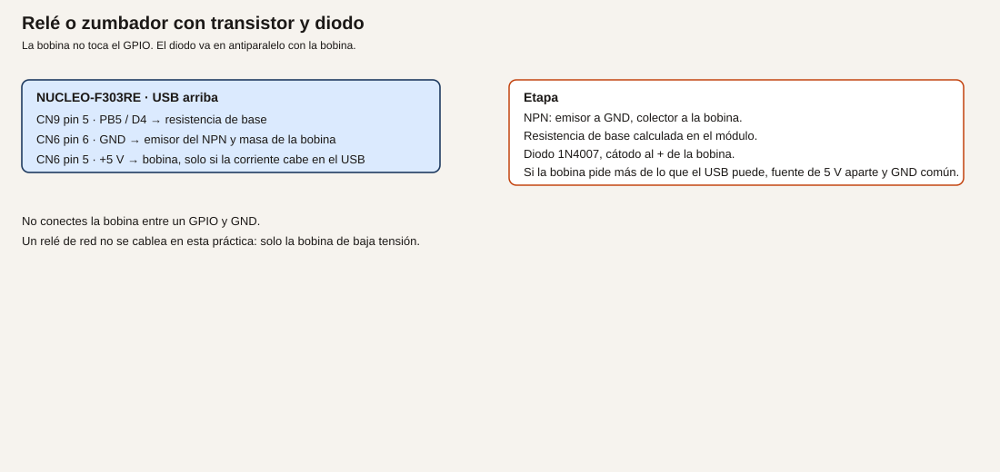
- Cableado.
| Origen |
Destino |
| CN9 pin 5, PB5 / D4 |
Resistencia de base, y de ahí a la base del NPN |
| Emisor del NPN |
CN6 pin 6, GND |
| Colector |
Un extremo de la bobina |
| El otro extremo de la bobina |
CN6 pin 5 (+5 V), solo si la corriente cabe; si no, +5 V externo |
| 1N4007 |
En paralelo con la bobina, cátodo al lado de +5 V |
| GND externo, si lo hay |
GND de la placa |
No montes el LED ámbar del semáforo en PB5 a la vez. No conectes la bobina entre PB5 y GND. No uses un relé de red: esta práctica es la bobina de baja tensión.
- Cálculos. Ejemplo de diseño, no una medida. Supón una bobina de 5 V y 40 mA, y un transistor con ganancia mínima 100. La base necesita 40 mA / 100 = 0,4 mA. Con el pin a 3,3 V y Vbe ≈ 0,7 V, Rbase = (3,3 − 0,7) / 0,0004 = 6500 Ω. Un valor más bajo asegura la saturación: 1 kΩ da (3,3 − 0,7) / 1000 = 2,6 mA de base, dentro de los 8 mA del pin. Usa la corriente de tu bobina y la ganancia de tu hoja. Si Ib sale por encima de 8 mA, el transistor no vale para gobernarlo así: hace falta otra etapa, y este módulo no la da. Potencia en 1 kΩ: muy por debajo de 1/4 W.
- CubeMX. PB5
GPIO_Output. El PWM de PC7 puede quedarse.
- Código.
/* USER CODE BEGIN WHILE */
while (1)
{
HAL_GPIO_WritePin(GPIOB, GPIO_PIN_5, GPIO_PIN_SET);
HAL_Delay(500);
HAL_GPIO_WritePin(GPIOB, GPIO_PIN_5, GPIO_PIN_RESET);
HAL_Delay(500);
/* USER CODE END WHILE */
- Dónde. El bucle. Quita este
HAL_Delay cuando vuelvas a un programa que no pueda bloquearse.
- Compilar y probar. Graba. La carga debe activarse y parar cada medio segundo.
- Esperado, no medido. El zumbador suena a rachas, o el relé de baja tensión cambia. El GPIO no se calienta. Si mides la base, la corriente debe parecerse a tu cálculo. Anótala como tuya.
- Fallos. No actúa y el transistor se calienta: emisor y colector cambiados, o no hay diodo y ya se dañó al cortar. Actúa siempre: PB5 está a 1 fijo, o el transistor está en corto. La placa se cae: la bobina supera el presupuesto del USB. Pásala a fuente externa.
- Variación. Gobierna la base con un PWM lento solo si la hoja de la carga lo permite. Un relé no se trocea a 1 kHz.
- Criterio. La bobina no tiene ningún hilo en el GPIO. El diodo está puesto. La corriente de base está calculada con tu hoja.
Ejemplo 3. Servo educativo en PB10
- Problema. Situar un mecanismo pequeño sin confundirlo con un servo industrial.
- Objetivo. Tres posiciones con pulsos de 1,0 ms, 1,5 ms y 2,0 ms, cada 20 ms, en PB10.
- Material. Servo tipo SG90 o el que indique tu hoja. Fuente de 5 V para el motor, externa. Cables.
- Funcionamiento. TIM2 canal 3 genera un periodo de 20 ms y un pulso de la anchura pedida. El servo lee esa anchura. El motor se alimenta de la fuente de 5 V, no de PB10 y no de 3,3 V.
- Dibujo.
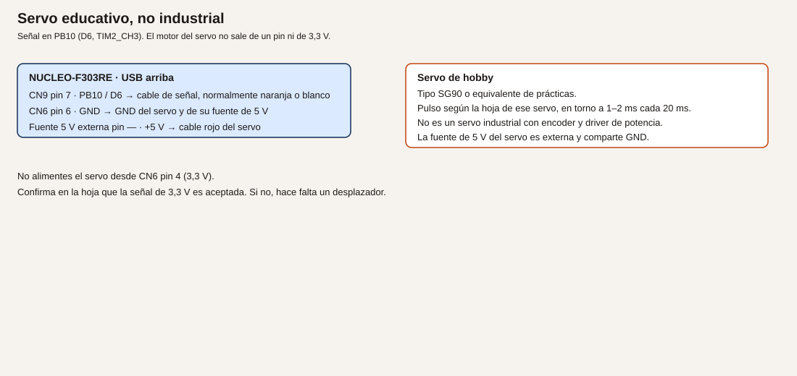
- Cableado.
| Hilo habitual |
Destino |
| Señal (a menudo naranja o blanco) |
CN9 pin 7, PB10 / D6 |
| Negativo (a menudo marrón o negro) |
GND de la fuente y GND de la placa (CN6 pin 6) |
| Positivo del motor (a menudo rojo) |
+5 V de la fuente externa, no CN6 pin 4 |
Confirma los colores en tu hoja. No son una norma.
- Cálculos. Periodo 20 ms con el timer a 1 MHz: 20000 cuentas, que no caben en 16 bits. Prescaler (72 − 1) = 71 deja 1 MHz. Sigue sin caber 20000. Prescaler 144 − 1 = 143 deja 0,5 MHz, y 20 ms son 10000 cuentas. Pulse de 1,0 ms = 500 cuentas; 1,5 ms = 750; 2,0 ms = 1000. Counter period = 10000 − 1 = 9999. Esto supone reloj de timer a 72 MHz. Confírmalo. Los milisegundos del pulso tienen que coincidir con tu hoja: si pide otro margen, cambia las cuentas, no el pin.
- CubeMX. TIM2, canal 3 PWM en PB10. Prescaler 143, counter period 9999, pulse inicial 750.
- Código.
/* USER CODE BEGIN 2 */
HAL_TIM_PWM_Start(&htim2, TIM_CHANNEL_3);
/* USER CODE END 2 */
/* USER CODE BEGIN WHILE */
while (1)
{
__HAL_TIM_SET_COMPARE(&htim2, TIM_CHANNEL_3, 500);
HAL_Delay(1000);
__HAL_TIM_SET_COMPARE(&htim2, TIM_CHANNEL_3, 750);
HAL_Delay(1000);
__HAL_TIM_SET_COMPARE(&htim2, TIM_CHANNEL_3, 1000);
HAL_Delay(1000);
/* USER CODE END WHILE */
- Dónde.
main.c. No reutilices TIM3 canal 2 para esto: ese canal es el LED.
- Compilar y probar. Alimenta primero la fuente de 5 V del servo, con GND ya común. Luego graba. El servo debe buscar tres posiciones.
- Esperado, no medido. Tres posiciones distintas, separadas un segundo. Si la hoja no acepta 3,3 V de señal, el servo puede zumbar sin moverse: no fuerces el pin a 5 V.
- Fallos. No se mueve y el 3,3 V de la placa cae: estás alimentando el motor desde CN6 pin 4. Pásalo a la fuente externa. Tiembla: el periodo no es 20 ms. Posiciones invertidas: tu hoja asigna al revés el pulso corto. Se calienta el regulador de la Nucleo: el positivo del servo está en el pin de 5 V de la placa y la corriente no cabe.
- Variación. Recorre el pulso de 500 a 1000 en pasos de 25, con 20 ms entre pasos, para un movimiento lento. Sigue siendo un hobby servo.
- Criterio. Puedes explicar por qué esto no es un servomotor industrial y dónde está la corriente del motor.
Resumen
TIM3 canal 2 regula el brillo en PC7 a 1 kHz. La bobina pasa por un NPN y un diodo. El servo educativo recibe el pulso en PB10 y los 5 V por otro camino.
Glosario
| Término |
Definición |
| PWM |
Señal que repite un pulso. La fracción alta es el mando |
| Ciclo de trabajo |
Esa fracción, en porcentaje o en cuentas |
| Flyback |
El diodo que da camino a la corriente de la bobina al cortar |
| Servo educativo |
Motor de hobby mandado por la anchura del pulso, no un eje industrial |
Preguntas
1. ¿El PWM de 1 kHz se ve parpadear?
Respuesta. No debería. Si lo ves, el periodo no es el que calculaste.
2. ¿Puedo ahorrarme el diodo si la bobina es pequeña?
Respuesta. No. Al cortar, la corriente tiene que ir a algún sitio. El diodo es ese camino.
3. ¿El SG90 demuestra un lazo de posición industrial?
Respuesta. No. No tiene el encoder, el driver ni la red de un servo de máquina. El curso no lo trata como tal.
Lista de comprobación
- [ ] El LED de PC7 cambia de brillo y sé el prescaler y el periodo.
- [ ] La bobina no toca el GPIO, y el diodo tiene el cátodo al positivo.
- [ ] El servo toma los 5 V de una fuente externa y comparte GND.
- [ ] He confirmado en la hoja del servo los tiempos y el nivel de la señal.
Siguiente
Módulo 11: leer una tensión entre 0 y 3,3 V.
Módulo 11. ADC
El ADC convierte una tensión en un número. En este chip es de 12 bits. En el encapsulado de 64 pines, VREF+ no sale a un pin: la nota 4 de la tabla de pines del datasheet lo une por dentro a VDDA. En la placa, VDDA llega de VDD por SB57, cerrado de fábrica. La referencia de trabajo es, por tanto, la de 3,3 V de la placa, no una referencia externa que puedas cablear en AREF esperando otro valor sin mirar el esquema.
No comprobado en hardware. Las conversiones de ejemplo no se midieron al redactarlas.
Objetivos
- Leer un potenciómetro en PA0 y pasarlo a voltios.
- Atenuar una tensión de laboratorio antes de entrar en PA1.
- Leer un TMP36 en PB0, con la fórmula de su hoja, o no usar esa fórmula si el sensor es otro.
Prerrequisitos
Módulos 2 y 7. Potenciómetro lineal de 10 kΩ. Para el ejemplo 2, una fuente SELV que no pases de 3,3 V en el pin, y dos resistencias. Para el ejemplo 3, un TMP36 o el sensor cuya hoja vayas a citar. PA0, PA1 y PB0 son TTa: de −0,3 V a VDDA + 0,3 V (datasheet, tabla 19). No son entradas de 5 V.
Número y voltios
Analogía. El conversor es una regla graduada. Doce bits son 4096 marcas. La marca 0 es 0 V. La última marca está un paso por debajo de la referencia. Medir 10 V con esa regla, sin reducirlos antes, es apoyar la regla en una tensión que la rompe. La resolución no compensa el daño.
Técnico. PA0 es ADC1_IN1, CN8 pin 1, A0 (UM1724, tabla 14). PA1 es ADC1_IN2, A1. PB0 es ADC3_IN12, A3. Este módulo usa ADC1 para PA0 y PA1. PB0 se lee con ADC3, que es la unidad que el mapa de la placa asocia a A3. No hace falta muestrear los tres a la vez.
La relación que usarás, y que debes confirmar en el capítulo del ADC de RM0316, es:
V = N * VDDA / 4096
con N el valor de 12 bits, de 0 a 4095. Convención de este curso, alineada con ese manual, no una calibración de tu placa. VDDA se toma como 3,3 V porque SB57 la une a VDD. Si mides otra tensión en CN6 pin 4, usa esa cifra en la fórmula y anótala como tuya.
ES0261 describe, entre otras limitaciones del ADC, un overrun de DMA en modo dual intercalado con un solo canal, el comportamiento de la bandera de overrun y el muestreo en modo JAUTO. Estas tres prácticas son una conversión sencilla, por encuesta, en un solo ADC cada vez, sin inyección y sin DMA. El DMA es el módulo 15. Aun así, abre esas secciones de ES0261 antes de dar por bueno un montaje más raro que este.
El tiempo de muestreo se elige largo para un potenciómetro de 10 kΩ: la fuente es lenta y la resistencia alta. En CubeMX, un muestreo de muchas ciclos (por ejemplo 601,5 ciclos, si tu lista lo ofrece) es una elección conservadora. No está optimizado ni medido.
Ejemplo 1. Potenciómetro en PA0
- Problema. Llevar una posición a un número.
- Objetivo. Imprimir por USART2 el código y la tensión mientras giras el potenciómetro.
- Material. Potenciómetro de 10 kΩ lineal.
- Funcionamiento. Los extremos ven 3,3 V y GND. El cursor es una fracción de 3,3 V y entra en PA0. El programa lanza una conversión, espera y transmite.
- Dibujo.
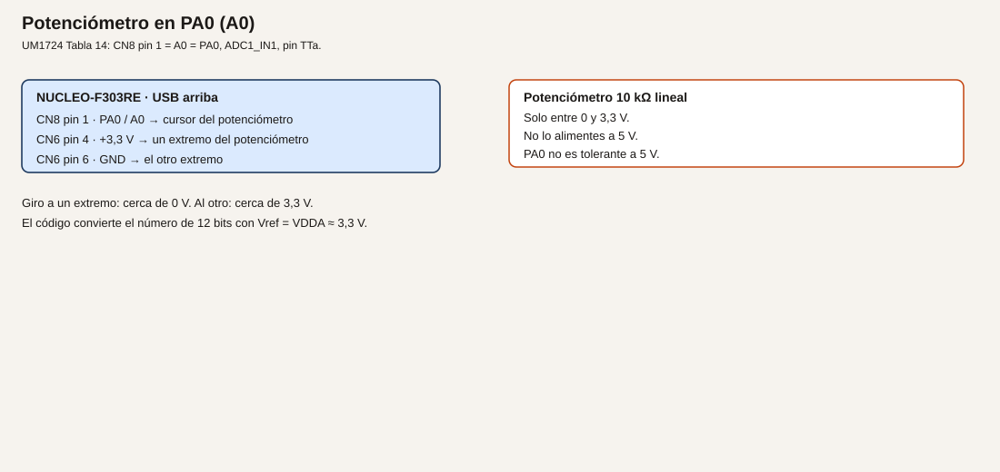
- Cableado.
| Origen |
Destino |
| CN6 pin 4, +3,3 V |
Un extremo del potenciómetro |
| CN6 pin 6, GND |
El otro extremo |
| CN8 pin 1, PA0 / A0 |
Cursor |
No alimentes el potenciómetro a 5 V.
- Cálculos. A mitad de giro, si es lineal y está bien a los extremos, N cerca de 2048 y V cerca de 1,65 V. Extremos: cerca de 0 y cerca de 3,3 V. La corriente por el potenciómetro es 3,3 / 10000 = 0,33 mA.
- CubeMX. ADC1, un solo canal IN1 (PA0), resolución 12 bits, conversión por software, muestreo largo. USART2 a 115200 8N1. No actives PA4: se reserva al DAC.
- Código.
/* USER CODE BEGIN 0 */
static void imprimir_pa0(void)
{
char linea[48];
HAL_ADC_Start(&hadc1);
if (HAL_ADC_PollForConversion(&hadc1, 10) == HAL_OK)
{
uint16_t n = (uint16_t)HAL_ADC_GetValue(&hadc1);
uint32_t mv = ((uint32_t)n * 3300U) / 4096U;
int k = snprintf(linea, sizeof(linea), "N=%u V=%lu.%03lu\r\n",
n, (unsigned long)(mv / 1000U), (unsigned long)(mv % 1000U));
if (k > 0)
{
HAL_UART_Transmit(&huart2, (uint8_t *)linea, (uint16_t)k, 50);
}
}
HAL_ADC_Stop(&hadc1);
}
/* USER CODE END 0 */
/* USER CODE BEGIN WHILE */
while (1)
{
imprimir_pa0();
HAL_Delay(200);
/* USER CODE END WHILE */
#include <stdio.h> en los includes de usuario.
- Dónde.
main.c. hadc1 lo genera CubeMX.
- Compilar y probar. Monitor a 115200. Gira el potenciómetro de extremo a extremo.
- Esperado, no medido. El número crece al acercar el cursor al extremo de 3,3 V y baja hacia el de GND. Compara un punto con el polímetro entre el cursor y GND. La diferencia es tu error de medida, no un dato de este texto.
- Fallos. Siempre 0: el cursor no es PA0, o el extremo «alto» está en GND. Siempre 4095: PA0 está en 3,3 V fijo, o el canal de CubeMX no es IN1. Números que saltan con el dedo cerca: falta un 100 nF del cursor a GND si el cable es largo. Puedes añadirlo.
- Variación. Imprime solo cuando N cambie más de 20 cuentas, para no llenar el monitor.
- Criterio. Sabes qué pin es TTa y qué cifra de 3300 estás usando como referencia.
Ejemplo 2. Una tensión externa, atenuada, en PA1
- Problema. Leer una tensión que puede ser mayor que 3,3 V sin llevarla al pin.
- Objetivo. Un divisor que deje en PA1 como máximo 2,5 V cuando la entrada prevista es 10 V, y leer ese valor.
- Material. Fuente SELV. R1 = 30 kΩ desde la señal hasta PA1. R2 = 10 kΩ de PA1 a GND. 100 nF de PA1 a GND.
- Funcionamiento. El divisor reduce. El ADC lee la tensión del punto medio, no la de la fuente. Si alguien aplica más de lo previsto, 12 V darían 3,0 V en el pin, todavía bajo 3,3 V. Por encima hace falta un límite (diodo a 3,3 V o similar) que esta práctica debe tener montado si la fuente puede pasarse. Las tierras se unen. Si no se pueden unir, el divisor no basta: hace falta aislamiento, y eso se discute en el módulo 27.
- Dibujo.
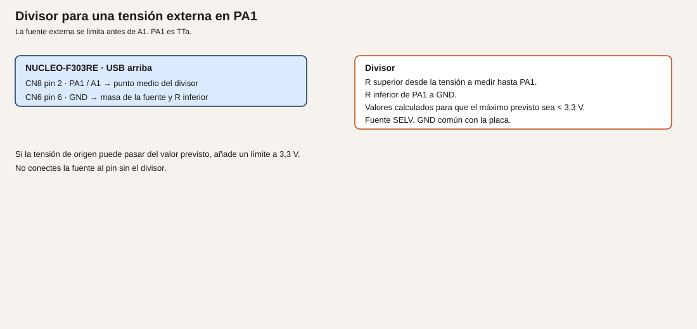
- Cableado.
| Origen |
Destino |
| Señal a medir, limitada |
R1 = 30 kΩ |
| R1 |
CN8 pin 2, PA1 / A1, y R2 |
| R2 = 10 kΩ |
CN6 pin 6, GND |
| GND de la fuente |
GND de la placa |
| 100 nF |
PA1 a GND |
No conectes la fuente al pin sin el divisor.
- Cálculos. Vpin = Vent * 10 / (30 + 10) = Vent / 4. A 10 V, Vpin = 2,5 V. A 0 V, 0 V. A 12 V, 3,0 V. Corriente a 10 V: 10 / 40000 = 0,25 mA. N esperado a 2,5 V: 2,5 / 3,3 * 4096 ≈ 3103. Ejemplo de diseño, no una medida.
- CubeMX. Añade ADC1 IN2 (PA1). Puedes dejar IN1 y cambiar de canal con
ADC_ChannelConfTypeDef, o hacer este ejemplo en un proyecto que solo tenga PA1. Lo más simple: una sola conversión de PA1 en este proyecto de práctica.
-
Código. El mismo imprimir_pa0, cambiando el arranque al ADC que tenga el canal de PA1. Si sigues en hadc1 reconfigurado a IN2, no hace falta otro handle. Imprime también la estimación de la tensión de origen: milivoltios del pin por 4.
-
Dónde. main.c.
- Compilar y probar. Sube la fuente desde 0 V, sin pasar de 10 V en este ensayo. Compara el polímetro en PA1 con el texto.
- Esperado, no medido. A 10 V de entrada, el pin está cerca de 2,5 V. Si tu polímetro en el pin no dice eso, para y revisa las resistencias antes de subir más.
- Fallos. El pin pasa de 3,3 V: el divisor está al revés o no está. Para la fuente. Lectura a 0 con la fuente alta: GND de la fuente no es el GND de la placa, o R2 está abierta y el pin flota. No «arregles» uniendo tierras si el lado de campo no puede compartirlas.
- Variación. Cambia la entrada a 5 V previstos. Vpin ≈ 1,25 V. El mismo divisor sirve, con más margen.
- Criterio. Puedes calcular Vpin antes de encender la fuente, y no aplicas la fuente si el cálculo pasa de 3,0 V sin límite.
Ejemplo 3. TMP36 en PB0
- Problema. Pasar la tensión de un sensor a grados, con la hoja delante.
- Objetivo. Imprimir la temperatura de un TMP36 alimentado a 3,3 V.
- Material. TMP36 de Analog Devices, o no uses esta fórmula. 100 nF entre Vs y GND, junto al sensor.
- Funcionamiento. La hoja del TMP36 da, en la revisión habitual, unos 750 mV a 25 °C y 10 mV/°C, con Vs de 2,7 V a 5,5 V. Aquí Vs es 3,3 V.
T = (V_mV − 750) / 10. Confírmalo en la hoja que acompaña al componente que compres. Si el sensor es otro, para y usa su fórmula. No reutilices esta.
- Dibujo.
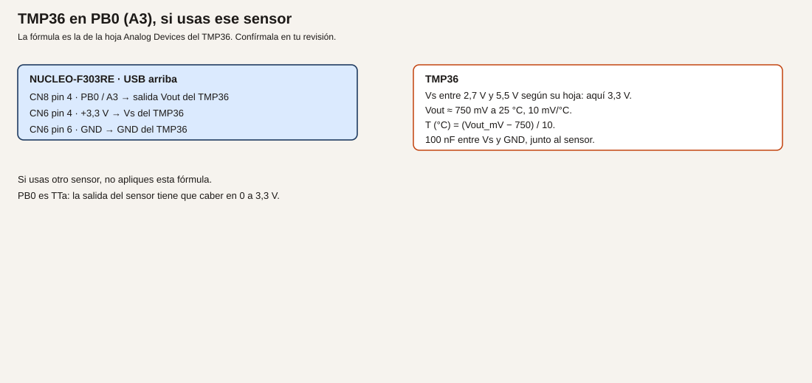
- Cableado.
| Patilla del TMP36 |
Destino |
| Vs |
CN6 pin 4, +3,3 V, y 100 nF a GND |
| Vout |
CN8 pin 4, PB0 / A3 |
| GND |
CN6 pin 6, GND |
Mira el orden de patillas en tu hoja. No lo des por el de otro transistor.
- Cálculos. A 25 °C, Vout ≈ 0,75 V. N ≈ 0,75 / 3,3 * 4096 ≈ 931. A 30 °C, 800 mV. Esto es la hoja, no una estufa calibrada.
- CubeMX. ADC3, canal IN12, pin PB0, 12 bits, encuesta. USART2 sigue para el texto. ADC1 puede quedarse si ya lo tenías; no conviertas PB0 con ADC1.
- Código. Tras leer N en
hadc3:
uint32_t mv = ((uint32_t)n * 3300U) / 4096U;
int32_t decimas = ((int32_t)mv - 750) * 10;
decimas son décimas de grado: a 750 mV sale 0, que no es 25 °C. La fórmula en décimas es (mv − 750). Imprime (mv - 750) / 10 como grados enteros y el resto como décimas. Ejemplo de impresión: grados = (int32_t)(mv - 750) / 10.
- Dónde.
main.c, con hadc3.
- Compilar y probar. A temperatura ambiente, compara con un termómetro de la sala. Calienta el sensor con el dedo: el número debe subir. No lo calientes con un soldador.
- Esperado, no medido. Cerca de la temperatura de la sala, con el error de la hoja y de tu referencia de 3,3 V. Anota la tuya.
- Fallos. Números negativos grandes: Vs y GND cambiados, o la fórmula aplicada a otro sensor. Siempre 0: Vout no es PB0. Más de 3,3 V en el pin: el sensor está alimentado a una tensión cuya salida no cabe, o no es un TMP36.
- Variación. Si no tienes TMP36, deja este ejemplo sin montar y escribe en el informe qué sensor usarías y qué fórmula cita su hoja. No inventes el factor.
- Criterio. La fórmula está copiada de la hoja que tienes en la mesa, o el ejemplo está sin montar a propósito.
Resumen
12 bits, referencia VDDA. PA0 es el potenciómetro a 3,3 V. PA1 entra por un divisor. PB0 solo lleva un sensor cuya salida quepa en 0 a 3,3 V.
Glosario
| Término |
Definición |
| ADC |
Conversor de tensión a número |
| LSB |
El escalón de esa regla. Aquí, VDDA/4096 |
| TTa |
Pin analógico que no admite más de VDDA + 0,3 V |
| Muestreo |
El tiempo que el conversor conecta el pin antes de medir |
Preguntas
1. ¿4095 cuentas son exactamente 3,3 V?
Respuesta. Con la fórmula de este módulo, 4095 * 3,3 / 4096 queda un escalón por debajo de 3,3 V. Confírmalo en RM0316.
2. ¿Puedo ganar resolución alimentando el potenciómetro a 5 V?
Respuesta. No. PA0 es TTa. La resolución no autoriza esa tensión.
3. ¿El TMP36 y un LM35 comparten fórmula?
Respuesta. No. Si cambias de sensor, cambias la fórmula. La de este módulo es la del TMP36.
Lista de comprobación
- [ ] El potenciómetro va de 3,3 V a GND, no a 5 V.
- [ ] He calculado la tensión del pin antes de aplicar la fuente del divisor.
- [ ] La fórmula de temperatura es la de la hoja que compré, o no he montado el sensor.
Siguiente
Módulo 12: generar una tensión en PA4.
Módulo 12. DAC
El STM32F303RET6 tiene dos salidas de DAC. PA4 es DAC1_OUT1 y está en A2, CN8 pin 3. PA5 es DAC1_OUT2 y también es el LED verde LD2. Este curso usa PA4. No usa PA5 como DAC.
Con el DAC o un operacional en uso, VDDA tiene que estar entre 2,4 V y 3,6 V (datasheet, tabla 19). En la placa lo está: 3,3 V por SB57. No comprobado en hardware.
Objetivos
- Sacar una tensión fija por PA4 y medirla con el polímetro.
- Recorrer una rampa e imprimir el código por USART2.
- Explicar por qué la tercera práctica no usa el comparador en el pin que ya está ocupado.
Prerrequisitos
Módulos 7 y 11. Polímetro. PA4 libre: si lo tenías como entrada analógica, deja de usarlo como ADC en este proyecto.
Generar, no leer
Analogía. El ADC era la regla que mide. El DAC es una fuente que tú mandas: eliges la marca y el pin se acerca a esa tensión. No es una fuente de potencia. No alimenta un relé ni un LED de potencia.
Técnico. El dato de 12 bits se escribe alineado a la derecha. La tensión de salida, que debes confirmar en RM0316, sigue la misma escala que el ADC:
V = código * VDDA / 4096
Código 0 acerca la salida a 0 V. Código 4095 se queda un escalón por debajo de VDDA. La corriente que puede salir del pin de DAC no es la de un GPIO de 8 mA: mira la característica eléctrica del DAC en el datasheet antes de colgarle una carga. Para este módulo, la carga es el polímetro, de impedancia alta.
PA4 es TTa. No apliques 5 V en A2 «para probar el fondo de escala».
Ejemplo 1. Tensión fija
- Problema. Necesitas una referencia lenta, sin potenciómetro.
- Objetivo. Dejar PA4 en un valor estable y leerlo con el polímetro entre PA4 y GND.
- Material. Polímetro. Ningún LED en PA4.
- Funcionamiento. El DAC convierte el código y mantiene la tensión hasta que escribas otro.
- Dibujo. No hay más que la punta del polímetro. CN8 pin 3 (PA4 / A2) y CN6 pin 6 (GND).
- Cableado. Solo esas dos puntas. No pongas un LED directo en PA4.
- Cálculos. Para 1,65 V con VDDA = 3,3 V: código = 1,65 / 3,3 * 4096 = 2048. Ejemplo de diseño.
- CubeMX. DAC1, OUT1 conectado a PA4, sin disparo externo o con disparo por software, el modo que ofrezca tu versión como salida normal. Buffer de salida activado si la opción está, para que el polímetro no cargue el nodo interno. VDDA queda en 3,3 V por la placa. No actives OUT2.
- Código.
/* USER CODE BEGIN 2 */
HAL_DAC_Start(&hdac, DAC_CHANNEL_1);
HAL_DAC_SetValue(&hdac, DAC_CHANNEL_1, DAC_ALIGN_12B_R, 2048);
/* USER CODE END 2 */
El nombre del handle puede ser hdac o hdac1 según la versión de CubeMX. Usa el que haya generado el proyecto.
- Dónde.
USER CODE BEGIN 2, después de la inicialización.
- Compilar y probar. Graba. Mide entre CN8 pin 3 y GND. No midas en PA5.
- Esperado, no medido. Cerca de 1,65 V. El error del buffer, de VDDA y del polímetro es tuyo. Anótalo. LD2 no es esta salida.
- Fallos. 0 V: canal no arrancado, o el polímetro está en PA5. Cerca de 3,3 V: el código escrito es 4095, o PA4 está como GPIO a 1. El chip no cumple VDDA mínima: no es el caso de esta placa si CN6 pin 4 está a 3,3 V.
- Variación. Escribe 0 y luego 4095. El polímetro debe ir de cerca de 0 V a cerca de 3,3 V.
- Criterio. La tensión leída corresponde al código, y PA5 sigue siendo el LED.
Ejemplo 2. Rampa
- Problema. Ver que el código y la tensión caminan juntos.
- Objetivo. Recorrer de 0 a 4095 en un tiempo conocido e imprimir el código.
- Material. Polímetro y monitor serie. Opcional: osciloscopio en PA4.
- Funcionamiento. Cada paso suma 64 al código, espera 20 ms y lo escribe. De 0 a 4095 hay 64 pasos de 64 cuentas: 64 * 20 ms = 1,28 s por recorrido. Es un tiempo de diseño para poder seguirlo con el polímetro en modo lento; si el polímetro no sigue, mira el monitor.
- Dibujo. El mismo punto de medida, más el USB para el texto.
- Cableado. PA4 y GND al polímetro. USART2 al PC por el ST-LINK.
- Cálculos. Paso 64 cuentas: 64 * 3,3 / 4096 ≈ 0,052 V. 1,28 s el recorrido completo. No medido.
- CubeMX. DAC1 OUT1 y USART2 a 115200 8N1.
- Código.
/* USER CODE BEGIN WHILE */
while (1)
{
static uint16_t codigo;
char linea[32];
HAL_DAC_SetValue(&hdac, DAC_CHANNEL_1, DAC_ALIGN_12B_R, codigo);
int n = snprintf(linea, sizeof(linea), "dac %u\r\n", codigo);
if (n > 0)
{
HAL_UART_Transmit(&huart2, (uint8_t *)linea, (uint16_t)n, 20);
}
codigo = (uint16_t)(codigo + 64U);
if (codigo >= 4096U)
{
codigo = 0U;
}
HAL_Delay(20);
/* USER CODE END WHILE */
codigo cabe en 16 bits. Al sumar 64 desde 4032 se pasa de 4095: el if lo devuelve a 0. Ajusta el último tramo si quieres parar en 4095 exacto.
- Dónde. El bucle. El
HAL_DAC_Start sigue en la zona 2, una sola vez.
- Compilar y probar. Monitor y polímetro a la vez.
- Esperado, no medido. El texto recorre los códigos de 64 en 64 y la tensión del polímetro sube y vuelve a empezar. No hay una captura guardada en el repositorio.
- Fallos. El texto avanza y la tensión no: estás midiendo otro pin. La tensión sube una vez y se queda: el código no vuelve a 0, o el DAC se paró. Texto ilegible: velocidad del monitor.
- Variación. Paso de 1 cuenta y sin
printf, con 1 ms entre pasos, si tienes osciloscopio y quieres una rampa más seguida. El tiempo de ese recorrido sería unos 4 s.
- Criterio. El código impreso y la tensión van en el mismo sentido.
Ejemplo 3. Por qué no hay comparador en este mapa
- Problema. El chip tiene comparadores. Usarlos parece el tercer ejemplo natural.
- Objetivo. Decidir si queda un pin libre para la entrada del comparador sin deshacer el mapa del curso.
- Material. Ninguno, si la conclusión es no montarlo.
- Funcionamiento. Un comparador necesita una entrada y una salida o una interrupción. PA4 ya es la salida del DAC. PA0, PA1 y PB0 son las entradas analógicas de los módulos 11, 19 y 20. PA5 es LD2 y el otro canal del DAC, que no usamos. Montar el comparador obligaría a quitar una de esas funciones o a elegir un pin analógico que el módulo siguiente también quiere.
- Dibujo. No se añade.
- Cableado. No se añade.
- Cálculos. No hay.
- CubeMX. No actives el comparador en este proyecto.
- Código. No hay código de comparador. El programa válido de este ejemplo es la rampa del ejemplo 2, que ya enseña a generar la tensión. Documenta en un comentario de USER CODE la razón:
/* USER CODE BEGIN 0 */
/* El comparador no se monta: sus pines de entrada coinciden con PA0, PA1 o PB0,
reservados a los módulos de medida. PA4 es el DAC. */
/* USER CODE END 0 */
- Dónde. Un comentario en
main.c basta. No es un periférico a medias.
- Compilar y probar. El ejemplo 2 sigue compilando. No hay un tercer cable.
- Esperado, no medido. La rampa continúa. No aparece un pin de comparador en el mapa.
- Fallos. Activar el comparador «para completar» y pisar PA0. No lo hagas en el proyecto que vas a reutilizar.
- Variación. Si más adelante un proyecto no usa PA1, se podrá estudiar el comparador ahí. No en este módulo.
- Criterio. Puedes explicar la omisión sin decir que el chip no tiene comparadores. Sí los tiene: siete, según la tabla 2 del datasheet. No se usan aquí por el mapa de pines.
Resumen
PA4 genera la tensión. PA5 no. VDDA está en el rango que el DAC exige en esta placa. El comparador se deja fuera para no ocupar las entradas de medida.
Glosario
| Término |
Definición |
| DAC |
Conversor de código a tensión |
| Buffer de salida |
Etapa que permite medir el pin sin cargar el nodo interno |
| VDDA |
Alimentación analógica. Aquí, unida a 3,3 V por SB57 |
Preguntas
1. ¿Por qué no se calibra el brillo de LD2 con el DAC de PA5?
Respuesta. Porque este curso reserva PA5 al LED como GPIO, y el canal de DAC que se enseña es PA4.
2. ¿El DAC puede mover el relé del módulo 10?
Respuesta. No. No es una salida de potencia.
3. ¿El chip no tiene comparadores?
Respuesta. Sí los tiene. Este módulo no los cablea.
Lista de comprobación
- [ ] He medido PA4, no PA5, con el código 2048.
- [ ] La rampa imprime el código que escribe.
- [ ] No he activado el comparador sobre PA0, PA1 o PB0.
Siguiente
Módulo 13: dos hilos compartidos, en PB8 y PB9.
Módulo 13. I2C
I2C lleva varios dispositivos en dos hilos: reloj y datos. Cada uno responde a una dirección. En esta placa el bus del curso es I2C1 en PB8 (SCL) y PB9 (SDA), que son D15 y D14. No son A4 ni A5. De fábrica A4 es PC1 y A5 es PC0 (UM1724, tabla 10, SB56 y SB51 cerrados; SB46 y SB52 abiertos).
No comprobado en hardware. Las direcciones hay que leerlas en el módulo que compres.
Objetivos
- Recorrer las direcciones de 7 bits y ver quién responde.
- Leer la temperatura de un MCP9808 a 3,3 V.
- Escribir en una pantalla OLED SSD1306 a 3,3 V, si el módulo es de ese controlador.
Prerrequisitos
Módulo 7 para el texto por USART2. Cables, 4,7 kΩ si el módulo no trae pull-up, alimentación a 3,3 V. Un módulo pensado solo para 5 V no se conecta directo.
PB8 y PB9 también pueden ser CAN. Este curso no los usa para CAN. El CAN va por PA11 y PA12.
El bus
Analogía. Es un pasillo con varios armarios. El reloj es el ritmo al que se habla. La dirección es el número del armario. El ACK es el «aquí estoy» del armario. Las resistencias de pull-up son el muelle que deja los dos hilos en reposo a 3,3 V: los dispositivos solo tiran a masa, no empujan a alto.
Técnico. HAL usa la dirección desplazada un bit a la izquierda: la de 7 bits 0x18 se pasa como 0x18 << 1. Velocidad de este módulo: 100 kHz, estándar, suficiente para un sensor y una pantalla pequeña. Pull-up externo de 4,7 kΩ a 3,3 V en SCL y en SDA si el módulo no los trae. El pull interno de 25 kΩ a 55 kΩ (datasheet, tabla 66) es demasiado alto para un bus con cable. No lo uses como único pull-up.
ES0261 menciona casos del I2C en direccionamiento de 10 bits. Estas prácticas son de 7 bits. Aun así, no actives el modo de 10 bits.
Ejemplo 1. Barrido de direcciones
- Problema. Antes de culpar al programa, saber si hay alguien en el bus.
- Objetivo. Imprimir por USART2 cada dirección de 7 bits que responda.
- Material. El módulo I2C ya cableado, aunque todavía no sepas su dirección. Puede ser el sensor, la pantalla o los dos.
- Funcionamiento. De la dirección 1 a la 127 se llama a
HAL_I2C_IsDeviceReady. Un ACK es un dispositivo. La dirección 0 no se usa.
- Dibujo.
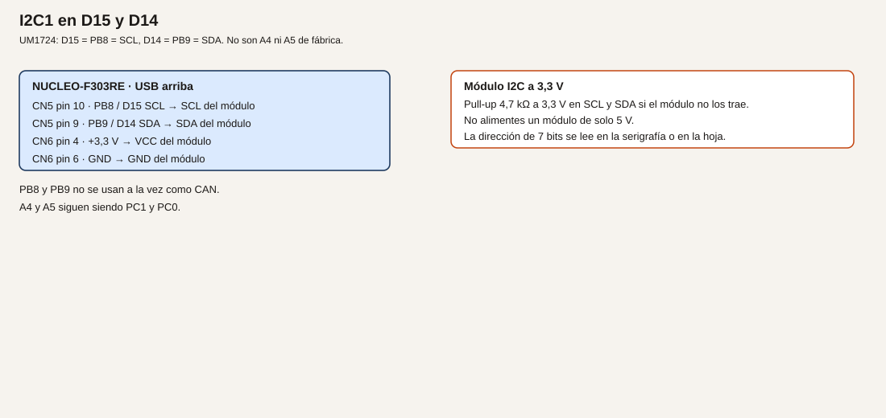
- Cableado.
| Nucleo |
Módulo |
| CN5 pin 10, PB8 / D15, SCL |
SCL |
| CN5 pin 9, PB9 / D14, SDA |
SDA |
| CN6 pin 4, +3,3 V |
VCC |
| CN6 pin 6, GND |
GND |
| 4,7 kΩ a 3,3 V |
En SCL y en SDA, si el módulo no los trae |
- Cálculos. No hay conversión todavía. 100 kHz es la velocidad del reloj del bus.
- CubeMX. I2C1, PB8 SCL, PB9 SDA, 100 kHz. USART2 115200 8N1. No asignes I2C a PB6/PB7: esos pines serán el encoder.
- Código.
/* USER CODE BEGIN 2 */
for (uint8_t dir = 1; dir < 128U; dir++)
{
if (HAL_I2C_IsDeviceReady(&hi2c1, (uint16_t)(dir << 1), 1U, 10U) == HAL_OK)
{
char linea[24];
int n = snprintf(linea, sizeof(linea), "ack 0x%02X\r\n", dir);
if (n > 0)
{
HAL_UART_Transmit(&huart2, (uint8_t *)linea, (uint16_t)n, 20);
}
}
}
/* USER CODE END 2 */
- Dónde.
USER CODE BEGIN 2 en main.c.
- Compilar y probar. Graba, abre el monitor, pulsa reset para repetir el barrido.
- Esperado, no medido. Una línea por cada dispositivo. Un MCP9808 con A0–A2 a GND responde en 0x18. Una OLED SSD1306 suele responder en 0x3C, a veces en 0x3D. La serigrafía manda, no este párrafo.
- Fallos. Ningún ACK: SDA y SCL cambiados, falta un pull-up, el módulo está a 5 V y no responde, o no hay GND. Todos los ACK: SDA está fija a masa. Direcciones que no coinciden con la serigrafía: estás leyendo el byte ya desplazado. El programa imprime la de 7 bits.
- Variación. Quita el módulo y confirma que el barrido queda en silencio. Así sabes que las respuestas eran suyas.
- Criterio. La lista de direcciones coincide con lo que hay enchufado.
Ejemplo 2. Temperatura con el MCP9808
- Problema. Leer un sensor ya digital, sin ADC.
- Objetivo. Imprimir grados a partir del registro de temperatura ambiente.
- Material. MCP9808 alimentado a 3,3 V. Hoja Microchip a mano.
- Funcionamiento. La dirección de 7 bits con los pines de dirección a GND es 0x18. El registro de temperatura ambiente es 0x05. Son 16 bits. En la revisión habitual de la hoja, el bit 12 es el signo y los bits 11 a 0 son la temperatura en pasos de 0,0625 °C. Si el signo es 0,
T = (valor & 0x0FFF) / 16. Si es 1, T = 256 − (valor & 0x0FFF) / 16. Confírmalo en tu revisión. Si no tienes este sensor, no adaptes la fórmula a otro: usa el barrido del ejemplo 1 y deja este ejemplo sin montar.
- Dibujo. El mismo cableado I2C. Un solo módulo, o compartido con la pantalla si las direcciones no coinciden.
- Cableado. El del ejemplo 1. A0, A1 y A2 del MCP9808 a GND para obtener 0x18, como diga la hoja.
- Cálculos. 25 °C serían 25 * 16 = 400 cuentas en los 12 bits, signo 0. No es una medida de este texto.
- CubeMX. El I2C1 del ejemplo 1.
- Código.
/* USER CODE BEGIN 0 */
static int leer_mcp9808(int32_t *centigrados)
{
uint8_t reg = 0x05U;
uint8_t dato[2];
if (HAL_I2C_Mem_Read(&hi2c1, (uint16_t)(0x18U << 1), reg,
I2C_MEMADD_SIZE_8BIT, dato, 2U, 50U) != HAL_OK)
{
return -1;
}
uint16_t valor = (uint16_t)((dato[0] << 8) | dato[1]);
uint16_t mag = (uint16_t)(valor & 0x0FFFU);
if ((valor & 0x1000U) != 0U)
{
*centigrados = 256 - (int32_t)(mag / 16U);
}
else
{
*centigrados = (int32_t)(mag / 16U);
}
return 0;
}
/* USER CODE END 0 */
En el bucle, llama a la función e imprime centigrados por USART2 cada medio segundo.
- Dónde.
main.c.
- Compilar y probar. Compara con la temperatura de la sala y con el dedo, sin soldador.
- Esperado, no medido. Un valor cercano a la sala si la hoja y la dirección son las de tu pieza. Si
Mem_Read falla, el barrido del ejemplo 1 dice si la dirección es otra.
- Fallos. Siempre error: dirección distinta por A0–A2, o registro distinto en tu revisión. Valor absurdo: el orden de los dos bytes está al revés. Comprueba que el primer byte recibido es el alto, como hace la hoja.
- Variación. Imprime también las décimas: el resto
mag % 16 vale 0,0625 °C cada una.
- Criterio. La dirección y la fórmula salen de la hoja, y el bus sigue a 3,3 V.
Ejemplo 3. OLED SSD1306
- Problema. Ver un texto sin depender del PC.
- Objetivo. Encender un panel de 128×64 con controlador SSD1306 y escribir una página de píxeles.
- Material. Módulo OLED I2C de 3,3 V. Si el tuyo es de 128×32, el comando de multiplex no es el mismo: usa el de tu hoja y no este listado a ciegas.
- Funcionamiento. Se envían comandos de inicio y después bytes de imagen. La dirección habitual es 0x3C. El byte de control 0x00 precede a un comando y 0x40 a datos de imagen, en el modo que describe la hoja del SSD1306. Confírmalo.
- Dibujo. El mismo bus. Dirección distinta de la del sensor.
- Cableado. El del ejemplo 1. Pull-up si el módulo no los trae. VCC a 3,3 V.
- Cálculos. No hay una corriente de LED que calcular en el GPIO: la pantalla se alimenta del pin de 3,3 V de la placa. Si el módulo pide más de lo que te queda de presupuesto, no lo alimentes de un GPIO.
- CubeMX. El mismo I2C1.
- Código. Secuencia mínima para un 128×64, tomada del procedimiento habitual del controlador. Comprueba cada comando en tu hoja antes de darla por buena.
/* USER CODE BEGIN 0 */
static void oled_cmd(uint8_t cmd)
{
uint8_t trama[2] = {0x00U, cmd};
HAL_I2C_Master_Transmit(&hi2c1, (uint16_t)(0x3CU << 1), trama, 2U, 50U);
}
static void oled_inicio(void)
{
const uint8_t seq[] = {
0xAE, 0xD5, 0x80, 0xA8, 0x3F, 0xD3, 0x00, 0x40,
0x8D, 0x14, 0x20, 0x00, 0xA1, 0xC8, 0xDA, 0x12,
0x81, 0xCF, 0xD9, 0xF1, 0xDB, 0x40, 0xA4, 0xA6, 0xAF
};
for (uint32_t i = 0; i < sizeof(seq); i++)
{
oled_cmd(seq[i]);
}
}
/* USER CODE END 0 */
Después de oled_inicio, pon el cursor en columna 0 y página 0 con los comandos 0x21, 0x00, 0x7F, 0x22, 0x00, 0x07, y envía 128 bytes 0xFF con el control 0x40. Verás una franja encendida. Un tipo de letra completo es un ejercicio: no hace falta una fuente entera para aceptar el ejemplo.
- Dónde.
main.c, llamada a oled_inicio en USER CODE BEGIN 2.
- Compilar y probar. Graba. Debe encenderse el panel y verse la franja.
- Esperado, no medido. El panel deja de estar en negro y muestra esa franja. Si la dirección es 0x3D, cámbiala. No hay una foto en el repositorio.
- Fallos. El barrido no ve 0x3C: alimentación, pull-up o dirección. El barrido lo ve y la pantalla sigue negra: secuencia de un tamaño distinto (128×32 usa otro multiplex), o el módulo no es SSD1306. No insistas con más tensión.
- Variación. Manda 128 bytes a 0x00 y la franja se apaga. Así compruebas que los datos, no solo el encendido, llegan.
- Criterio. Sensor y pantalla, si están los dos, conviven porque las direcciones son distintas, y ninguno está a 5 V.
Resumen
PB8 y PB9, 100 kHz, pull-up a 3,3 V. El barrido va antes que la hoja del sensor. La fórmula del MCP9808 no se reutiliza para otro componente. La OLED se inicia con la secuencia de su tamaño.
Glosario
| Término |
Definición |
| SCL |
Reloj del bus |
| SDA |
Datos del bus |
| ACK |
Respuesta de un dispositivo a su dirección |
| Dirección de 7 bits |
El número del dispositivo, antes de desplazarla para el HAL |
Preguntas
1. ¿Por qué I2C no va en A4 y A5?
Respuesta. En esta placa, de fábrica, A4 y A5 son PC1 y PC0. El I2C fijo del Arduino es D15 y D14.
2. ¿Sirve el pull interno solo?
Respuesta. No para este bus. Está entre 25 kΩ y 55 kΩ. Se ponen 4,7 kΩ si el módulo no los trae.
3. ¿PB8 puede ser CAN a la vez?
Respuesta. No en este curso. El CAN está en PA11 y PA12.
Lista de comprobación
- [ ] El barrido lista las direcciones que realmente he conectado.
- [ ] El sensor está a 3,3 V y la fórmula es la de su hoja.
- [ ] La pantalla, si la hay, no comparte dirección con el sensor.
Siguiente
Módulo 14: un reloj, un dato de ida, un dato de vuelta y un hilo de selección por dispositivo.
Módulo 14. SPI
SPI lleva reloj, dato de ida, dato de vuelta y una selección por cada dispositivo. El maestro es la Nucleo. Este curso usa SPI2 para no ocupar PA5, que es el LED y también sería SPI1_SCK.
No comprobado en hardware.
Objetivos
- Encender LED a través de un 74HC595 alimentado a 3,3 V.
- Leer el registro WHO_AM_I de un LIS3DH, si ese es el sensor que tienes.
- Hablar con los dos sin que se pisen, cada uno con su NSS.
Prerrequisitos
Módulo 13 no es obligatorio, pero el hábito de comprobar el cable antes que el programa sí. Un 74HC595. Para el ejemplo 2, un LIS3DH o un módulo equivalente a 3,3 V. Resistencias para los LED del 595, calculadas como en el módulo 5.
Pines
Verificado en el datasheet, tabla 14 de funciones alternativas, AF5, y en UM1724 tabla 26:
| Señal |
Pin del LQFP64 |
Morpho |
| PB13, SPI2_SCK |
— |
CN10 pin 30 |
| PB15, SPI2_MOSI |
— |
CN10 pin 26 |
| PB14, SPI2_MISO |
— |
CN10 pin 28 |
| PB12, SPI2_NSS |
— |
CN10 pin 16 |
El segundo NSS no es PB6. PB6 queda para el encoder del módulo 16, como TIM4_CH1. El segundo selector es PA6, D12, CN5 pin 5, como GPIO.
Analogía. El reloj es el ritmo. MOSI es lo que el maestro dice. MISO es lo que el esclavo contesta en el mismo ritmo. NSS es la mano en el hombro: solo habla el dispositivo al que has tocado. Si tocas a los dos, los dos contestan a la vez y el bus no sirve.
ES0261 describe fallos del CRC del SPI y del bit BSY en ciertos modos. Estas prácticas son maestro, sin CRC. No actives el CRC. Aun así, localiza esas secciones en la errata antes de copiar un ejemplo de otro curso que sí lo use.
Ejemplo 1. 74HC595 y una fila de LED
- Problema. Ocho LED y pocos pines.
- Objetivo. Sacar un byte por el 595 y ver el patrón en los LED.
- Material. 74HC595 a 3,3 V. Ocho LED, cada uno con su resistencia a GND, o los que quieras poblar. Hoja del 595 para confirmar los nombres SER, SRCLK y RCLK.
- Funcionamiento. SPI manda el byte por MOSI al ritmo de SCK. Un pulso en el latch (aquí PB12 como GPIO, no como NSS hardware) copia el registro de desplazamiento a las salidas. El 595 no devuelve datos útiles para este ejemplo: MISO puede quedar sin cable.
- Dibujo.
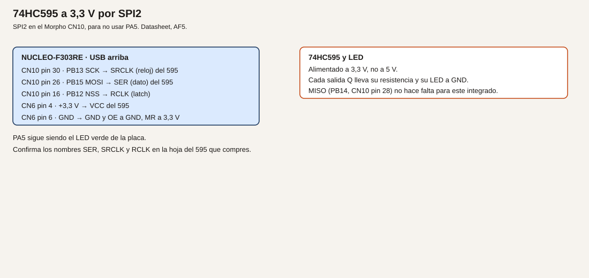
- Cableado.
| Nucleo |
74HC595, nombres habituales |
| CN10 pin 30, PB13, SCK |
SRCLK o SHCP, reloj |
| CN10 pin 26, PB15, MOSI |
SER o DS, dato |
| CN10 pin 16, PB12 |
RCLK o STCP, latch |
| CN6 pin 4, +3,3 V |
VCC |
| CN6 pin 6, GND |
GND, y OE a GND |
| +3,3 V |
MR, reset de maestro, para no dejarlo en reset |
Confirma los nombres en tu hoja. Cada Q lleva su resistencia y su LED al cátodo en GND. No alimentes el 595 a 5 V: sus salidas irían a 5 V y, si alguna volviera a un pin TTa, no sería válida. Aunque las salidas solo vayan a LED, este curso lo alimenta a 3,3 V.
- Cálculos. Cada LED, con el ejemplo de 270 Ω y 4,8 mA, sale del 595, no del STM32. La suma la aguanta el 595 según su hoja, no según la tabla 17 del STM32. El pin PB12 solo da un pulso de latch, despreciable frente a 8 mA.
- CubeMX. SPI2 solo maestro, PB13 SCK, PB15 MOSI, PB14 MISO aunque no se cablee. Prescaler para quedar muy por debajo de lo que pida el 595; a 72 MHz, un prescaler de 64 deja cerca de 1 MHz. Modo 0: CPOL bajo, CPHA primer flanco, que es el habitual del 595. Confírmalo. PB12 como
GPIO_Output, nivel alto en reposo. NSS hardware desactivado: el latch lo haces tú.
- Código.
/* USER CODE BEGIN 0 */
static void sacar_595(uint8_t patron)
{
HAL_GPIO_WritePin(GPIOB, GPIO_PIN_12, GPIO_PIN_RESET);
HAL_SPI_Transmit(&hspi2, &patron, 1U, 20);
HAL_GPIO_WritePin(GPIOB, GPIO_PIN_12, GPIO_PIN_SET);
}
/* USER CODE END 0 */
En el bucle, llama con 0x01, espera, 0x80, espera, 0xFF, espera. HAL_Delay aquí solo deja ver el patrón.
- Dónde.
main.c.
- Compilar y probar. Graba. Los LED deben cambiar de patrón.
- Esperado, no medido.
0x01 enciende un extremo y 0x80 el otro. Si están al revés, el bit de menos peso no es el Q que creías. No es un fallo del SPI si el patrón cambia.
- Fallos. Todos apagados: OE no está a GND, o MR está a GND y el registro vive en reset. Nada cambia: SCK y MOSI cambiados, o el latch no da el pulso. LED muy brillantes y calientes: falta la resistencia. No los dejes así.
- Variación. Desplaza un único 1 por el byte en cada vuelta:
patron = (patron << 1) | (patron >> 7).
- Criterio. El patrón que escribes es el que ves, y el 595 está a 3,3 V.
Ejemplo 2. WHO_AM_I de un LIS3DH
- Problema. Comprobar un sensor SPI leyendo un registro que la hoja fija.
- Objetivo. Leer el registro 0x0F y obtener 0x33, que es el valor que la hoja del LIS3DH asigna a WHO_AM_I. Confírmalo en tu revisión. Si el sensor es otro, usa su registro y su valor, no el 0x33.
- Material. LIS3DH a 3,3 V, con SDO cableado a MISO.
- Funcionamiento. Para leer, el LIS3DH pide el bit de lectura en la dirección del registro. En la hoja de ST, ese bit es el bit 7. Se envían dos bytes:
0x0F | 0x80 y un byte de relleno. El segundo byte que vuelve por MISO es el identificador. El modo SPI que indica la revisión habitual es CPOL = 1 y CPHA = 1. Confírmalo. CS del sensor es activo a bajo.
- Dibujo. Añade el sensor al bus del ejemplo 1. Su CS no es PB12.
- Cableado. SCK, MOSI y MISO compartidos con el 595. CS del LIS3DH a PA6, CN5 pin 5, D12. VCC 3,3 V. GND común. El 595 puede seguir en PB12.
- Cálculos. No hay una conversión física: el resultado esperado del registro es 0x33 o no lo es.
- CubeMX. SPI2 en el modo que pida el LIS3DH. Si ese modo no coincide con el del 595, no los dejes en el mismo proyecto a la vez: haz este ejemplo con el 595 desconectado, o cambia el modo solo mientras hablas con el sensor y documéntalo. PA6
GPIO_Output, reposo a 1.
- Código.
/* USER CODE BEGIN 0 */
static uint8_t lis3dh_whoami(void)
{
uint8_t tx[2] = { (uint8_t)(0x0FU | 0x80U), 0x00U };
uint8_t rx[2] = {0U, 0U};
HAL_GPIO_WritePin(GPIOA, GPIO_PIN_6, GPIO_PIN_RESET);
HAL_SPI_TransmitReceive(&hspi2, tx, rx, 2U, 20);
HAL_GPIO_WritePin(GPIOA, GPIO_PIN_6, GPIO_PIN_SET);
return rx[1];
}
/* USER CODE END 0 */
Imprime el byte por USART2.
- Dónde.
main.c. Mantén PB12 a 1 para que el 595 no escuche, si sigue conectado y el modo SPI coincide.
- Compilar y probar. Graba y mira el monitor.
- Esperado, no medido.
0x33 si el dispositivo es un LIS3DH y el modo es el de su hoja. Otro valor estable puede ser otro sensor: no lo fuerces.
- Fallos. 0x00 o 0xFF: MISO sin cable, CS que no baja, o modo SPI distinto. El 595 cambia de patrón mientras lees: su latch está bajando. Déjalo a 1.
- Variación. Lee dos veces seguidas. El valor tiene que repetirse.
- Criterio. El número que imprimes es el de la hoja, o has anotado que el sensor no es un LIS3DH.
Ejemplo 3. Dos NSS
- Problema. Dos dispositivos en los mismos SCK, MOSI y MISO.
- Objetivo. Escribir el 595 y leer el LIS3DH en el mismo bucle, cada uno con su selector en alto mientras habla el otro.
- Material. Los dos, si el modo SPI puede ser el mismo. Si no puede, el segundo dispositivo de este ejemplo puede ser otro 595 con su latch en PA6, y el criterio pasa a ser «cada chip muestra un patrón distinto».
- Funcionamiento. Antes de hablar, el selector del otro está a 1. Se baja solo el del destinatario. Al terminar, se sube.
- Dibujo. El del 595, más PA6 al segundo CS.
- Cableado. PB12 solo al primer latch o CS. PA6 solo al segundo. MISO únicamente al dispositivo que tenga que responder.
- Cálculos. No hay.
- CubeMX. PB12 y PA6 como GPIO de salida, ambos a 1 en reposo.
- Código. En el bucle:
sacar_595(0x0F) con PA6 a 1, y después lis3dh_whoami() con PB12 a 1. Esas dos funciones ya suben y bajan su propio selector si las escribiste así. No llames a HAL_SPI_Transmit con los dos selectores a 0.
- Dónde. El bucle de
main.c.
- Compilar y probar. El patrón del 595 no debe cambiar cuando lees el sensor, y el identificador no debe cambiar cuando escribes el 595.
- Esperado, no medido. Las dos operaciones se alternan sin pisarse.
- Fallos. El identificador se corrompe al escribir el 595: los dos CS bajan juntos, o el modo SPI no vale para los dos y hay que separarlos en proyectos. Documenta cuál de las dos cosas era.
- Variación. Intercambia los patrones
0x0F y 0xF0 cada segundo y confirma que el WHO_AM_I sigue igual.
- Criterio. Puedes señalar qué hilo es de quién, y PB6 no está usado como selector.
Resumen
SPI2 en el Morpho. El 595 a 3,3 V enseña el byte. El segundo selector es PA6, no PB6. Sin CRC.
Glosario
| Término |
Definición |
| SCK |
Reloj que genera el maestro |
| MOSI |
Dato del maestro al esclavo |
| MISO |
Dato del esclavo al maestro |
| NSS |
Selección de un esclavo, activa a bajo en estos dispositivos |
Preguntas
1. ¿Por qué no se usa SPI1?
Respuesta. Porque SPI1_SCK es PA5, y PA5 es LD2.
2. ¿El 595 a 5 V es un problema si solo enciende LED?
Respuesta. Este curso lo alimenta a 3,3 V para no tener salidas de 5 V junto a pines que no las admiten.
3. ¿PB6 puede ser el segundo NSS?
Respuesta. No en el mapa de este curso. PB6 es el canal A del encoder.
Lista de comprobación
- [ ] Cada LED del 595 tiene su resistencia.
- [ ] He confirmado el modo SPI en la hoja del dispositivo que lee.
- [ ] Los dos selectores no están bajos a la vez.
- [ ] No he activado el CRC.
Siguiente
Módulo 15: llenar una tabla de medidas sin copiar cada muestra a mano.
Módulo 15. DMA
El DMA copia del ADC a la memoria sin que el núcleo mueva cada muestra. El núcleo se entera cuando el bloque está listo, o cuando él decide mirarlo. Es la diferencia entre apuntar cada lectura y dejar un registrador llenando la hoja.
No comprobado en hardware.
Objetivos
- Leer PA0 muestra a muestra, como referencia.
- Llenar un búfer por DMA a un ritmo elegido.
- Seguir parpadeando LD2 mientras el búfer se llena.
Prerrequisitos
El potenciómetro del módulo 11 en PA0. USART2 para volcar. PA5 para el LED.
Un solo ADC
Analogía. La encuesta del módulo 11 es ir al instrumento, esperar y anotar. El DMA es un ayudante que anota las siguientes N lecturas en una tabla mientras tú haces otra cosa. Si le pides un modo que la errata no soporta bien, el ayudante puede perder una línea.
Técnico. Se usa un solo ADC, ADC1, canal PA0, no el modo dual intercalado. ES0261 avisa de un overrun de DMA en modo dual intercalado con un solo canal, y de que la bandera de overrun puede no activarse si no se lee el dato. Esta práctica no entra en ese modo. Aun así, al terminar un bloque se mira el error del handle (hadc1.ErrorCode) y, si no es cero, se imprime. No se da el bloque por bueno en silencio.
El ritmo se fija con el muestreo y con un disparo periódico, o con conversiones continuas. Para poder seguir el volcado por el UART, el bloque es de 32 muestras y se pide despacio: un disparo desde TIM6 cada 10 ms, por ejemplo, deja el bloque en unos 320 ms. Es una elección de diseño para ver el texto, no la velocidad máxima del ADC. El datasheet habla de hasta 5 Msps en la familia; este ejercicio no pretende alcanzarlos.
Ejemplo 1. Muestra a muestra
- Problema. Tener la referencia lenta antes de cambiar de método.
- Objetivo. Imprimir una muestra de PA0 cada 200 ms, por encuesta, como en el módulo 11.
- Material. Potenciómetro de 10 kΩ entre 3,3 V y GND, cursor a PA0.
- Funcionamiento.
HAL_ADC_Start, espera, HAL_ADC_GetValue, HAL_ADC_Stop.
- Dibujo. Potenciómetro.
- Cableado. El del módulo 11, ejemplo 1. CN8 pin 1, CN6 pin 4 y CN6 pin 6.
- Cálculos. V = N * 3300 / 4096 milivoltios, con la misma convención del módulo 11.
- CubeMX. ADC1 IN1, sin DMA todavía, resolución 12 bits. USART2 115200.
- Código. Reutiliza
imprimir_pa0 del módulo 11, llamada cada 200 ms con HAL_GetTick o, en este ejemplo de referencia, con HAL_Delay(200).
- Dónde.
main.c.
- Compilar y probar. Gira el potenciómetro y mira el monitor.
- Esperado, no medido. El número sigue al cursor. Esta es la línea de base del ejemplo 2.
- Fallos. Los del módulo 11: pin, 5 V, canal equivocado.
- Variación. Anota diez valores con el cursor quieto. La dispersión es el ruido de tu montaje.
- Criterio. Tienes una lectura por encuesta antes de activar el DMA.
Ejemplo 2. El mismo pin, por DMA
- Problema. Copiar 32 muestras sin un
GetValue por muestra.
- Objetivo. Llenar
muestras[32] y volcar el primer y el último valor.
- Material. El mismo potenciómetro.
- Funcionamiento. El ADC avisa al DMA al terminar cada conversión. El DMA escribe la siguiente posición del array. Al completar 32, una callback pone un aviso y el bucle imprime.
- Dibujo. El mismo cable.
- Cableado. El mismo.
- Cálculos. 32 muestras cada 10 ms ocupan 320 ms. Durante ese tiempo el cursor puede moverse: el primer y el último valor no tienen por qué coincidir. Si el cursor está quieto, se parecen, dentro del ruido que anotaste.
- CubeMX. ADC1 en conversión continua o disparado por TIM6 cada 10 ms. DMA en modo normal o circular, periférico a memoria, half word, incremento solo en memoria. NVIC del DMA habilitado. Si TIM6 no está en tu árbol, la conversión continua también sirve para este ejemplo: el bloque se llena a la velocidad del muestreo, que puede ser alta. En ese caso no imprimas muestra a muestra; imprime solo al acabar el bloque. Documenta cuál de los dos ritmos dejaste.
- Código.
/* USER CODE BEGIN PV */
static uint16_t muestras[32];
static volatile uint8_t bloque_listo;
/* USER CODE END PV */
/* USER CODE BEGIN 0 */
void HAL_ADC_ConvCpltCallback(ADC_HandleTypeDef *hadc)
{
if (hadc == &hadc1)
{
bloque_listo = 1U;
}
}
/* USER CODE END 0 */
/* USER CODE BEGIN 2 */
HAL_ADC_Start_DMA(&hadc1, (uint32_t *)muestras, 32);
/* USER CODE END 2 */
En el bucle, si bloque_listo está a 1, imprimes muestras[0] y muestras[31], miras hadc1.ErrorCode, pones el aviso a 0 y, si el DMA estaba en modo normal, vuelves a llamar a HAL_ADC_Start_DMA. En modo circular no hace falta rearrancarlo; sí hace falta copiar el bloque antes de que se sobrescriba, o imprimir sabiendo que el búfer sigue vivo.
- Dónde. La callback, una sola vez, en el archivo donde CubeMX la haya dejado o en
USER CODE BEGIN 0 si no existe. El array en PV.
- Compilar y probar. Con el cursor quieto y luego girándolo durante el bloque.
- Esperado, no medido. Quieto: los dos extremos del array se parecen. En movimiento: se separan.
ErrorCode distinto de cero se imprime, no se ignora.
- Fallos. Callback que no llega: NVIC del DMA apagado, o la conversión no está en curso. Valores siempre 0: el array no es el destino del DMA, o el ancho es word y estás mirando mal los 16 bits. Overrun: bajaste a leer demasiado tarde en modo circular, o activaste un modo dual. Vuelve a un solo ADC.
- Variación. Imprime las 32 muestras en hexadecimal, una línea, para ver la forma del giro.
- Criterio. No hay un
HAL_ADC_GetValue dentro del bucle de las 32 muestras.
Ejemplo 3. El LED no se detiene
- Problema. Demostrar que el núcleo sigue haciendo otra cosa.
- Objetivo. LD2 conmuta cada 200 ms de
HAL_GetTick mientras llegan bloques.
- Material. PA5 y el potenciómetro.
- Funcionamiento. El bucle no espera al ADC. Mira el aviso del DMA y mira el reloj del LED. Son independientes.
- Dibujo. No hay cable nuevo.
- Cableado. PA5 es LD2, ya en la placa.
- Cálculos. 200 ms del LED frente a 320 ms del bloque, si usaste el disparo de 10 ms. Los dos ritmos no tienen por qué coincidir.
- CubeMX. El del ejemplo 2, más PA5 como salida si no lo estaba.
- Código. En el mismo
while, añade la conmutación del módulo 8:
static uint32_t marca;
if ((HAL_GetTick() - marca) >= 200U)
{
marca = HAL_GetTick();
HAL_GPIO_TogglePin(GPIOA, GPIO_PIN_5);
}
No pongas HAL_Delay esperando al bloque.
- Dónde. El bucle, junto al tratamiento de
bloque_listo.
- Compilar y probar. Observa LD2 y el monitor a la vez. Gira el potenciómetro.
- Esperado, no medido. El LED no se queda fijo mientras salen líneas de muestras. Si se queda fijo, el bucle está bloqueado en un
Receive o en un Delay.
- Fallos. El LED se para durante el
printf de 32 líneas largas: el UART bloqueante frena el bucle, no el DMA. Acorta el texto al primer y último valor. El LED no arranca: PA5 no es salida en este proyecto.
- Variación. Cuenta cuántos bloques llegan en diez parpadeos. Es una comprobación grosera del ritmo, no una calibración.
- Criterio. Puedes señalar qué parte hace el DMA y qué parte hace el
while.
Resumen
La encuesta sigue siendo válida. El DMA llena la tabla. Un solo ADC, y el código de error se mira. LD2 demuestra que el bucle no espera muestra a muestra.
Glosario
| Término |
Definición |
| DMA |
Copia entre periférico y memoria sin un bucle de CPU por dato |
| Bloque |
Las N muestras pedidas |
| Overrun |
Una muestra nueva pisa a una que no se leyó |
| Modo circular |
Al llenar la tabla, el DMA vuelve al principio |
Preguntas
1. ¿El DMA sustituye al ADC?
Respuesta. No. El ADC convierte. El DMA transporta el resultado.
2. ¿Por qué no se usa el modo dual intercalado?
Respuesta. Porque ES0261 describe un fallo de overrun de DMA en ese caso, y esta práctica no lo necesita.
3. ¿Un printf largo demuestra que el DMA se paró?
Respuesta. No. Demuestra que el bucle tardó en volver a mirar el LED. El bloque puede haberse llenado igual.
Lista de comprobación
- [ ] He visto la lectura por encuesta y la del bloque.
- [ ] He mirado
ErrorCode al menos una vez.
- [ ] LD2 sigue conmutando mientras llegan muestras.
- [ ] El proyecto usa un solo ADC, no el modo dual.
Siguiente
Módulo 16: contar pulsos y pasarlos a RPM.
Módulo 16. Encoder, pulsos y velocidad
Contar pulsos es contar piezas o marcas. Pasar a RPM exige saber cuántos pulsos trae una vuelta y durante cuánto tiempo has contado. El encoder de verdad tiene dos canales en cuadratura, para saber también el sentido.
No comprobado en hardware. El número de pulsos por vuelta sale de la hoja del encoder que compres, no de este texto.
Objetivos
- Contar pulsos de un contacto a 3,3 V.
- Calcular RPM con un número conocido de marcas.
- Leer un encoder incremental en TIM4, canales PB6 y PB7.
Prerrequisitos
Módulos 8 y 9. Para el ejemplo 3, un encoder o un módulo de cuadratura de 3,3 V. No se conecta un encoder industrial de 24 V.
Pines que este módulo fija
La ficha dejaba el pin para cuando la lección se escribiera. Queda así:
| Canal |
Señal |
Conector |
Función |
| A |
PB6 |
CN5 pin 3, D10 |
TIM4_CH1 |
| B |
PB7 |
CN7 pin 21 |
TIM4_CH2 |
El datasheet, tabla 13, lista TIM4_CH1 en PB6 y TIM4_CH2 en PB7. TIM3 no se usa: el PWM del LED sigue en TIM3 canal 2, PC7. PB6 no es el selector SPI. PB8 y PB9 siguen siendo I2C. PA2 y PA3 siguen siendo el puerto virtual.
PB6 y PB7 son FTf. La salida del encoder tiene que ser de 3,3 V, o colector abierto con pull-up a 3,3 V. Tolerar 5 V en la entrada no autoriza un encoder de 24 V.
Analogía. Un pulso es una muesca que pasa delante de un sensor. Contar muescas no dice la velocidad hasta que divides por el tiempo. Dos sensores desfasados, como dos finales de carrera un poco corridos, dicen si la rueda va adelante o atrás según cuál se active primero.
Ejemplo 1. Contar pulsos
- Problema. Ver la cuenta antes de hablar de velocidad.
- Objetivo. Incrementar un contador en cada flanco aceptado y mostrarlo.
- Material. B1, o un generador de 3,3 V. No un generador de 5 V sobre un pin TTa. B1 está en PC13, que es TC: el generador, si lo usas, va a un pin preparado. Para no abrir otro pin, este ejemplo cuenta B1.
- Funcionamiento. La interrupción del módulo 9, con filtro de 20 ms, incrementa
pulsos. El bucle imprime el valor cuando cambia.
- Dibujo. No hay cable si usas B1.
- Cableado. PC13 interno. USART2 al PC.
| Señal |
Papel |
| PC13 |
Flanco a contar |
| PA2/PA3 |
Texto |
- Cálculos. No hay RPM todavía. Cada clic aceptado es +1.
- CubeMX. El EXTI de PC13 del módulo 9 y USART2.
- Código. El
aviso_b1 del módulo 9. En el bucle:
if (aviso_b1)
{
aviso_b1 = 0U;
pulsos++;
}
Imprime pulsos por USART2 cuando el valor cambie.
- Dónde.
main.c.
- Compilar y probar. Diez pulsaciones deliberadas, separadas.
- Esperado, no medido. El número termina en 10. Si termina en más, el filtro no está.
- Fallos. Los del módulo 9. Cuenta al soltar y al pulsar: has habilitado los dos flancos. Deja solo la bajada.
- Variación. Resetea la cuenta con la letra
z recibida por USART2.
- Criterio. La cuenta coincide con los clics que has dado.
Ejemplo 2. RPM con marcas conocidas
- Problema. La cuenta crece siempre. La velocidad es pulsos por tiempo.
- Objetivo. Calcular RPM en una ventana de un segundo, con N marcas por vuelta escritas en el programa.
- Material. El contador del ejemplo 1. Una rueda de prueba de la que conozcas las marcas, o el propio dedo si fijas N = 1 y aceptas que es un ensayo, no un eje.
- Funcionamiento. Cada 1000 ms se mira cuántos pulsos nuevos hubo.
vueltas = pulsos / marcas_por_vuelta. RPM = vueltas * 60 / 1 s. En una ventana de un segundo, RPM = pulsos * 60 / marcas_por_vuelta.
- Dibujo. No hay uno nuevo si sigues en B1.
- Cableado. El del ejemplo 1.
- Cálculos. Ejemplo: 1 marca por vuelta y 2 pulsos en un segundo → 120 RPM. Con 20 marcas por vuelta y 20 pulsos en un segundo → 60 RPM. La división entera trunca. Si quieres décimas, calcula
pulsos * 600 / marcas y separa la parte entera. El número de marcas es el de tu hoja o el que pintaste en la rueda. No se inventa aquí un encoder concreto.
- CubeMX. Sin pines nuevos.
- Código.
/* USER CODE BEGIN PV */
static volatile uint32_t pulsos;
static const uint32_t marcas_por_vuelta = 1U;
/* USER CODE END PV */
/* USER CODE BEGIN WHILE */
while (1)
{
static uint32_t marca = 0U;
static uint32_t pulsos_antes;
if ((HAL_GetTick() - marca) >= 1000U)
{
uint32_t ahora = pulsos;
uint32_t delta = ahora - pulsos_antes;
pulsos_antes = ahora;
marca = HAL_GetTick();
if (marcas_por_vuelta != 0U)
{
uint32_t rpm = (delta * 60U) / marcas_por_vuelta;
char linea[40];
int n = snprintf(linea, sizeof(linea), "rpm %lu\r\n", (unsigned long)rpm);
if (n > 0)
{
HAL_UART_Transmit(&huart2, (uint8_t *)linea, (uint16_t)n, 20);
}
}
}
/* USER CODE END WHILE */
pulsos lo incrementa la interrupción. Tiene que ser volatile.
- Dónde.
main.c.
- Compilar y probar. Con N = 1, pulsa dos veces dentro de un segundo y lee la línea.
- Esperado, no medido. Cerca de 120 si los dos pulsos cayeron en esa ventana. Si cayeron entre dos ventanas, se reparten. Es el método, no un error de la fórmula.
- Fallos. Siempre 0: la interrupción no incrementa, o
marcas_por_vuelta se quedó en 0 y el if no divide. Números enormes: N está a 1 y el rebote cuenta decenas. Vuelve al filtro.
- Variación. Cambia la ventana a 500 ms. La fórmula pasa a
RPM = delta * 120 / marcas_por_vuelta, porque 60 / 0,5 = 120. Escribe la unidad al lado.
- Criterio. Puedes rehacer la cuenta a mano con los pulsos que imprime el programa.
Ejemplo 3. Cuadratura en TIM4
- Problema. Un solo canal no dice el sentido, y contar por interrupción cada flanco de un encoder rápido carga al núcleo.
- Objetivo. Dejar que TIM4 cuente en modo encoder y leer el contador.
- Material. Encoder de 3,3 V, o dos salidas en cuadratura. Si son colector abierto, 4,7 kΩ a 3,3 V en cada canal. No un encoder de 24 V.
- Funcionamiento. En modo encoder TI12, el timer cuenta y descuenta según el desfase de los dos canales. El programa lee el contador en la ventana de un segundo y aplica la misma fórmula. Las marcas por vuelta son las que la hoja llama pulsos por revolución en ese modo, o cuatro veces las cuentas del disco si el timer cuenta todos los flancos. Lee esa frase en la hoja y en el capítulo de timers de RM0316 antes de fiarte del número. Anota cuál usaste.
- Dibujo.
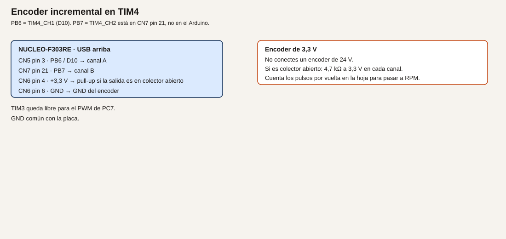
- Cableado.
| Encoder |
Nucleo |
| Canal A |
CN5 pin 3, PB6 / D10 |
| Canal B |
CN7 pin 21, PB7 |
| VCC, si el encoder lo necesita a 3,3 V |
CN6 pin 4 |
| GND |
CN6 pin 6 |
| Pull-up 4,7 kΩ |
De 3,3 V a A y de 3,3 V a B, solo si la salida es abierta |
- Cálculos. Los de la fórmula del ejemplo 2, con el N de la hoja. No hay un N universal.
- CubeMX. TIM4 en modo encoder, CH1 en PB6, CH2 en PB7. Filtro de entrada del timer en un valor bajo para un encoder lento de prácticas; si el datasheet del encoder trae ruido, sube el filtro y anótalo. No reasignes TIM3.
- Código.
/* USER CODE BEGIN 2 */
HAL_TIM_Encoder_Start(&htim4, TIM_CHANNEL_ALL);
/* USER CODE END 2 */
Cada segundo:
uint16_t cuenta = (uint16_t)__HAL_TIM_GET_COUNTER(&htim4);
Guarda la cuenta anterior y usa la diferencia con signo de 16 bits si quieres ver el sentido: un incremento es un sentido y un decremento el otro. Pasa el valor absoluto a la fórmula de RPM e imprime también el signo.
- Dónde.
main.c.
- Compilar y probar. Gira despacio en los dos sentidos. Mira si el contador sube y baja.
- Esperado, no medido. El sentido cambia con el giro. La RPM es coherente con tu N y con lo rápido que giras, a ojo. No hay un tacómetro de referencia en este texto.
- Fallos. Solo cuenta en un sentido: un canal no está cableado o no tiene pull-up. No cuenta: los pines no son PB6 y PB7, o el encoder está a 24 V y no debiste conectarlo. Si ya lo conectaste, quítalo y revisa si el pin sigue respondiendo como GPIO antes de seguir. Cuenta al revés: cambia A y B, o invierte el signo en el programa y dilo.
- Variación. Vuelve al ejemplo 2 con un solo canal si el encoder se estropea, y deja escrito que has perdido el sentido.
- Criterio. Sabes de qué hoja sale N, y TIM3 sigue libre para el PWM.
Resumen
La cuenta es un número. La RPM divide por el tiempo y por las marcas. TIM4 en PB6 y PB7 lee la cuadratura. Nada de 24 V.
Glosario
| Término |
Definición |
| Pulso |
Un flanco que decides contar |
| RPM |
Vueltas por minuto |
| Cuadratura |
Dos señales desfasadas que indican el sentido |
| Marcas por vuelta |
El dato de la hoja, sin el cual la fórmula no tiene unidad |
Preguntas
1. ¿Diez pulsos son diez RPM?
Respuesta. No. Falta el tiempo y faltan las marcas de una vuelta.
2. ¿Por qué el encoder no usa TIM3?
Respuesta. Porque TIM3 canal 2 es el PWM de PC7. TIM4 está libre para esto.
3. ¿Un pin FT justifica un encoder de 24 V?
Respuesta. No. FT admite hasta 5,5 V como máximo absoluto en la entrada. 24 V no entran en esa frase.
Lista de comprobación
- [ ] He contado pulsos antes de calcular RPM.
- [ ] La fórmula tiene unidades y el N está escrito.
- [ ] El encoder, si lo hay, es de 3,3 V, con pull-up solo si hace falta.
- [ ] PB6 no está usado como NSS del SPI.
Siguiente
Módulo 17: ponerle nombre a cada situación del programa.
Módulo 17. Máquinas de estados
Una cadena de HAL_Delay no dice en qué situación está el programa. Una máquina de estados le pone nombre a cada situación y escribe qué la hace cambiar. El main solo pide «da un paso».
No comprobado en hardware.
Objetivos
- Reescribir el semáforo como estados con nombre.
- Añadir una alarma con reposo, prealarma y alarma.
- Partir el programa en archivos que CubeMX no borre.
Prerrequisitos
El semáforo del módulo 8: PA8 rojo, PB5 ámbar, PC7 verde, cada uno con su resistencia. B1 en PC13. El tiempo con HAL_GetTick, no con un retardo que tape el resto.
La idea
Analogía. Un parte de averías no dice «espera 4 segundos y luego haz lo otro». Dice: en reposo, en prealarma o en alarma, y qué evento cambia de hoja. El semáforo es el mismo tipo de parte: rojo, rojo y ámbar, verde, ámbar.
Técnico. Cada estado es un valor de un enum. Cada paso mira el tiempo que lleva en ese estado y, si toca, pasa al siguiente. El trabajo de encender pines está en una función. main llama a semaforo_paso y a alarma_paso. No hay otro hilo: sigue siendo el bucle único. FreeRTOS llega en el módulo 18.
Ejemplo 1. Semáforo con estados
- Problema. La tabla de fases del módulo 8 no tiene nombre, y cuesta añadir rojo+ámbar.
- Objetivo. Cuatro estados: rojo, rojo-ámbar, verde, ámbar.
- Material. Los tres LED del módulo 8. No el transistor en PB5 a la vez.
- Funcionamiento. Tiempos de juguete: rojo 4000 ms, rojo-ámbar 1000 ms, verde 4000 ms, ámbar 1000 ms. Al vencer, el estado cambia. Cada paso escribe las tres luces.
- Dibujo. Semáforo.
- Cableado. El del módulo 8.
| Estado |
PA8 |
PB5 |
PC7 |
| Rojo |
1 |
0 |
0 |
| Rojo-ámbar |
1 |
1 |
0 |
| Verde |
0 |
0 |
1 |
| Ámbar |
0 |
1 |
0 |
- Cálculos. Los tiempos de arriba. En rojo-ámbar hay dos LED: calcula las dos corrientes y súmalas. Con 4,8 mA cada una, son unos 10 mA, dentro de la suma de 80 mA y con cada pin en su zona de diseño.
- CubeMX. PA8, PB5 y PC7 salidas, como en el módulo 8.
- Código.
/* USER CODE BEGIN 0 */
typedef enum
{
ST_ROJO = 0,
ST_ROJO_AMBAR,
ST_VERDE,
ST_AMBAR
} estado_semaforo_t;
static estado_semaforo_t estado_sem;
static uint32_t marca_sem;
static void aplicar_luces(uint8_t r, uint8_t a, uint8_t v)
{
HAL_GPIO_WritePin(GPIOA, GPIO_PIN_8, r ? GPIO_PIN_SET : GPIO_PIN_RESET);
HAL_GPIO_WritePin(GPIOB, GPIO_PIN_5, a ? GPIO_PIN_SET : GPIO_PIN_RESET);
HAL_GPIO_WritePin(GPIOC, GPIO_PIN_7, v ? GPIO_PIN_SET : GPIO_PIN_RESET);
}
static void semaforo_paso(void)
{
static const uint32_t duracion[] = {4000U, 1000U, 4000U, 1000U};
if ((HAL_GetTick() - marca_sem) < duracion[estado_sem])
{
return;
}
marca_sem = HAL_GetTick();
estado_sem = (estado_semaforo_t)((estado_sem + 1) % 4);
if (estado_sem == ST_ROJO) { aplicar_luces(1, 0, 0); }
if (estado_sem == ST_ROJO_AMBAR) { aplicar_luces(1, 1, 0); }
if (estado_sem == ST_VERDE) { aplicar_luces(0, 0, 1); }
if (estado_sem == ST_AMBAR) { aplicar_luces(0, 1, 0); }
}
/* USER CODE END 0 */
En USER CODE BEGIN 2, enciende el rojo y guarda marca_sem = HAL_GetTick(). En el bucle, solo semaforo_paso();.
- Dónde. Todavía en
main.c. El ejemplo 3 lo saca a otro archivo.
- Compilar y probar. Observa el orden, incluido el momento con rojo y ámbar juntos.
- Esperado, no medido. El ciclo tiene cuatro fases y el verde no coincide con el rojo.
- Fallos. Se salta una fase:
duracion no tiene cuatro elementos. Dos luces que no tocan: aplicar_luces no se llama al cambiar. PB5 ocupado por el relé: desmonta el relé.
- Variación. Alarga el verde a 6000 ms cambiando solo esa casilla.
- Criterio. Puedes decir el nombre del estado mirando las luces.
Ejemplo 2. Alarma de tres estados
- Problema. Un umbral que solo enciende un LED no distingue «acaba de pasar» de «lleva un rato mal».
- Objetivo. Reposo, prealarma y alarma. El umbral, en este ejemplo, es una constante que simulas con B1: pulsado significa «la medida está fuera».
- Material. B1 y LD2. LD2 indica la alarma. El semáforo puede seguir en sus pines.
- Funcionamiento. En reposo, si B1 se pulsa, se pasa a prealarma y se anota el tiempo. Si se suelta, se vuelve a reposo. Si la prealarma dura 2000 ms con B1 aún pulsado, se pasa a alarma y LD2 se enciende. En alarma, soltar B1 vuelve a reposo y apaga LD2. 2000 ms es de diseño.
- Dibujo. No hay cable nuevo.
- Cableado. PC13 y PA5 de la placa.
- Cálculos. 2000 ms de confirmación. No es un tiempo de proceso industrial.
- CubeMX. PC13 entrada. PA5 salida.
- Código.
typedef enum { AL_REPOSO = 0, AL_PRE, AL_ALARMA } estado_alarma_t;
static estado_alarma_t estado_al;
static uint32_t marca_al;
static void alarma_paso(void)
{
uint8_t fuera = (HAL_GPIO_ReadPin(GPIOC, GPIO_PIN_13) == GPIO_PIN_RESET) ? 1U : 0U;
uint32_t ahora = HAL_GetTick();
if (estado_al == AL_REPOSO && fuera)
{
estado_al = AL_PRE;
marca_al = ahora;
}
else if (estado_al == AL_PRE && !fuera)
{
estado_al = AL_REPOSO;
}
else if (estado_al == AL_PRE && (ahora - marca_al) >= 2000U)
{
estado_al = AL_ALARMA;
HAL_GPIO_WritePin(GPIOA, GPIO_PIN_5, GPIO_PIN_SET);
}
else if (estado_al == AL_ALARMA && !fuera)
{
estado_al = AL_REPOSO;
HAL_GPIO_WritePin(GPIOA, GPIO_PIN_5, GPIO_PIN_RESET);
}
}
El bucle llama a semaforo_paso y a alarma_paso.
- Dónde.
main.c, hasta el ejemplo 3.
- Compilar y probar. Pulsación corta: LD2 no se enciende. Pulsación de más de dos segundos: LD2 se enciende hasta que sueltas.
- Esperado, no medido. Ese comportamiento. El semáforo no se detiene durante la pulsación, porque ningún paso llama a
HAL_Delay.
- Fallos. El semáforo se congela: volviste a meter un retardo. LD2 enciende al momento: la prealarma no está en el camino. B1 al revés: comprueba el nivel bajo.
- Variación. Sustituye B1 por
N > umbral cuando unas el ADC. La máquina no cambia de forma; cambia la expresión de fuera.
- Criterio. Hay tres nombres y LD2 solo está encendido en alarma.
Ejemplo 3. Tres archivos
- Problema.
main.c ya mezcla dos máquinas.
- Objetivo. Dejar
semaforo.c, alarma.c y las llamadas en main.c.
- Material. El mismo.
- Funcionamiento. CubeMX regenera
main.c y conserva el USER CODE. Un .c nuevo no lo borra, pero CMake tiene que compilarlo. En un proyecto CMake de CubeMX, el sitio seguro es añadir el archivo donde el CMakeLists.txt ya recoge los fuentes de Core/Src, o en la zona que el propio fichero marque como mantenida por el usuario. Si tu versión no tiene esa zona, crea Core/Src/semaforo.c y comprueba que el globo de fuentes de CMakeLists.txt incluye Core/Src/*.c. Si no lo incluye, añade una línea en el bloque que CubeMX indique como editable, no fuera de él a ciegas: al regenerar, lo de fuera de ese bloque puede perderse.
- Dibujo. No hay.
- Cableado. El mismo.
- Cálculos. No hay.
- CubeMX. Genera una vez y mira
CMakeLists.txt antes de dar por hecho el globo.
- Código.
semaforo.h declara void semaforo_inicia(void); y void semaforo_paso(void);. Lo mismo para la alarma. Los .c contienen lo que estaba en main.c. main incluye los dos .h dentro de USER CODE BEGIN Includes y llama a los paso en el bucle.
- Dónde.
Core/Inc y Core/Src, más el USER CODE de main.c.
- Compilar y probar. Build. Si el enlazador dice que
semaforo_paso no existe, el .c no entró en CMake. Corrígelo antes de seguir. Regenera el código desde CubeMX una vez y comprueba que los .c nuevos siguen en el disco y que el proyecto aún enlaza.
- Esperado, no medido. El comportamiento es el de los ejemplos 1 y 2. Regenerar no borra esos archivos.
- Fallos. «undefined reference»: el fuente no está en el target. «multiple definition»: dejaste el cuerpo también en
main.c. El archivo desaparece al generar: lo habías puesto en una carpeta que CubeMX limpia. Muévelo a Core/Src y versiona el cambio.
- Variación. Añade
const char *semaforo_nombre(void); que devuelva el nombre del estado, e imprímelo por USART2 cuando cambie.
- Criterio.
main no enciende pines del semáforo. Solo llama a los pasos.
Resumen
Cada situación tiene un nombre y una transición. El bucle llama a los pasos. Los archivos nuevos tienen que entrar en CMake sin quedar a merced de una regeneración ciega.
Glosario
| Término |
Definición |
| Estado |
Una situación con nombre |
| Transición |
El paso de una situación a otra cuando se cumple una condición |
| Paso |
La función que se llama muchas veces y hace como mucho una transición |
Preguntas
1. ¿Por qué el semáforo no se para mientras mantienes B1?
Respuesta. Porque alarma_paso no espera los 2000 ms dentro de un retardo. Mira el reloj y vuelve.
2. ¿CubeMX borra semaforo.c?
Respuesta. No, si está en Core/Src y no es un archivo que CubeMX considere generado. El riesgo está en CMakeLists.txt si lo editaste fuera de la zona que el generador conserva.
3. ¿Esto ya es FreeRTOS?
Respuesta. No. Sigue habiendo un solo bucle.
Lista de comprobación
- [ ] Veo las cuatro fases, incluida rojo-ámbar.
- [ ] Una pulsación corta no deja LD2 encendido.
- [ ] Tras regenerar, el proyecto sigue enlazando los dos archivos nuevos.
Siguiente
Módulo 18: dos tareas de verdad, cuando un solo bucle ya no se quiere estirar más.
Módulo 18. FreeRTOS
Hasta aquí un solo bucle llama a todos los pasos. Una tarea es un bucle con vida propia. El sistema operativo les reparte el procesador. Una cola pasa un aviso de una tarea a otra. Un semáforo evita que dos tareas hablen a la vez por el mismo UART.
No comprobado en hardware. La versión del middleware es la que CubeMX descargue para tu proyecto. No se fija aquí un número de versión.
Objetivos
- Crear dos tareas: una parpadea y otra mira el pulsador.
- Pasar el aviso del pulsador por una cola.
- Impedir que dos textos se mezclen en USART2.
Prerrequisitos
Módulos 7 y 17. Ganas con haber visto el bucle único, para notar qué cambia.
Qué es una tarea
Analogía. El bucle único es un solo operario que recorre todas las máquinas. Dos tareas son dos operarios. La cola es la bandeja donde uno deja un parte y el otro lo recoge. El semáforo del UART es el turno de palabra: si los dos hablan, el papel sale con las frases cruzadas.
Técnico. CubeMX puede generar CMSIS-RTOS v2. Los nombres de esa versión son osThreadNew, osMessageQueueNew, osSemaphoreNew, osSemaphoreAcquire y osSemaphoreRelease. La versión 1 usaba osThreadCreate y otros nombres. Usa los que aparezcan en el cmsis_os.h que tu proyecto haya generado. Si no coinciden con este listado, manda el de tu cabecera: no mezcles las dos APIs.
Anota en un comentario el nombre del paquete que CubeMX muestre, por ejemplo el componente FreeRTOS del STM32CubeF3 que haya resuelto, y su versión. «El que se descargó en esta generación» es la frase correcta si no copias el número de la pantalla.
La extensión 3.x documenta vistas de depuración para FreeRTOS. Con el programa parado puedes mirar las tareas. Sigue sin ser una watch en marcha.
El proyecto con RTOS ya no debe usar HAL_Delay creyendo que es la única forma de esperar: osDelay cede el procesador. HAL_Delay dentro de una tarea puede bloquear el tick si la prioridad y el SysTick no están como CubeMX los dejó. Prefiere osDelay.
Ejemplo 1. Dos tareas
- Problema. El parpadeo y la lectura del pulsador no tienen por qué ser el mismo bucle.
- Objetivo. Una tarea conmuta LD2 cada 300 ms. Otra lee B1 y enciende o apaga el LED de PC7, si sigue montado, o solo cuenta.
- Material. La placa. PC7 opcional, con su resistencia.
- Funcionamiento. CubeMX crea
osThreadNew por cada tarea que definas en el árbol. Cada función es un for (;;) con un osDelay. Ninguna vuelve.
- Dibujo. No hay cable obligatorio. Si usas PC7, el del LED externo.
- Cableado. PA5 interno. PC13 interno.
- Cálculos. 300 ms de la tarea del LED. La otra puede despertar cada 20 ms para muestrear B1, que es el antirrebote por muestreo.
- CubeMX. Middleware FreeRTOS, interfaz CMSIS-RTOS v2 si está ofrecida. Dos tareas,
led y boton, ambas de prioridad normal. Reloj del sistema como lo deje el generador. No borres la tarea por defecto hasta ver que la tuya arranca: puedes dejar la tarea por defecto vacía con un osDelay.
- Código. Dentro de la función que CubeMX haya generado para la tarea, en su USER CODE:
for (;;)
{
HAL_GPIO_TogglePin(GPIOA, GPIO_PIN_5);
osDelay(300);
}
Y en la otra:
for (;;)
{
if (HAL_GPIO_ReadPin(GPIOC, GPIO_PIN_13) == GPIO_PIN_RESET)
{
HAL_GPIO_WritePin(GPIOC, GPIO_PIN_7, GPIO_PIN_SET);
}
else
{
HAL_GPIO_WritePin(GPIOC, GPIO_PIN_7, GPIO_PIN_RESET);
}
osDelay(20);
}
Si tu cabecera es v1, el retardo se llamará como indique esa cabecera. No copies osDelay si no compila.
- Dónde. Los archivos que CubeMX cree para las tareas, normalmente separados de
main.c, en el USER CODE de cada una. main solo inicializa el núcleo y arranca el planificador, como haya generado CubeMX.
- Compilar y probar. Graba. LD2 parpadea. B1 enciende el LED de PC7 mientras se mantiene, si lo montaste.
- Esperado, no medido. Los dos comportamientos a la vez. Parar el depurador muestra dos tareas en la vista de RTOS, si tu versión de la extensión la tiene.
- Fallos. Solo arranca una: la otra no está creada en el árbol, o su función vuelve. Nada arranca:
osKernelStart no se ha llamado, o hay un error de heap. CubeMX suele reservar el heap en su configuración; si una creación devuelve NULL, anótalo y sube el heap en la configuración del middleware, no a ciegas en un mapa de memoria.
- Variación. Cambia el periodo de LD2 a 100 ms. La tarea del botón no se recompila en espíritu: no debería cambiar su lectura.
- Criterio. Puedes señalar qué
for (;;) es de quién.
Ejemplo 2. Una cola
- Problema. La tarea del botón no debería tocar el LED si otra tarea es la dueña de ese LED.
- Objetivo. El botón deja un 0 o un 1 en una cola. La tarea del LED lo aplica a PA5, además de su parpadeo o en su lugar.
- Material. B1 y LD2.
- Funcionamiento.
osMessageQueueNew(4, sizeof(uint32_t), NULL) crea una bandeja de cuatro avisos. osMessageQueuePut deja el valor. osMessageQueueGet lo recoge con un tiempo de espera corto para no tapar el parpadeo, o la tarea del LED solo atiende la cola y otra tercera parpadea. Para no multiplicar tareas, la del LED mira la cola con espera 0 y luego hace osDelay(300) y conmuta. Verás el parpadeo y, además, puedes usar el valor para otra salida.
- Dibujo. No hay.
- Cableado. El de la placa.
- Cálculos. Cuatro huecos en la cola. Si nadie lee, los siguientes
Put fallan. Hay que mirar el código de retorno.
- CubeMX. La cola puede crearse en el árbol o en código, en
USER CODE BEGIN 2, antes de arrancar el núcleo. Si la creas en código, hazlo donde las tareas ya puedan ver el identificador: un osMessageQueueId_t global en un .c de usuario.
- Código.
static osMessageQueueId_t cola_boton;
/* tras osKernelInitialize, o donde tu main de usuario pueda, antes de las tareas */
cola_boton = osMessageQueueNew(4, sizeof(uint32_t), NULL);
En la tarea del botón, cuando el nivel estable cambie, osMessageQueuePut(cola_boton, &valor, 0, 0). En la tarea del LED:
uint32_t valor = 0U;
if (osMessageQueueGet(cola_boton, &valor, NULL, 0U) == osOK)
{
HAL_GPIO_WritePin(GPIOC, GPIO_PIN_7, valor ? GPIO_PIN_SET : GPIO_PIN_RESET);
}
Los nombres osOK y el tipo del identificador tienen que existir en tu cmsis_os.h.
- Dónde. Un
.c de usuario más las tareas generadas. Si CubeMX ya crea la cola en el árbol, no la crees otra vez.
- Compilar y probar. Pulsa B1. PC7 debe seguir el aviso, y LD2 debe seguir parpadeando.
- Esperado, no medido. El LED de PC7 cambia por la cola, no porque la tarea del botón escriba el pin.
- Fallos.
Put falla siempre: la cola es NULL porque se creó después de arrancar, o el heap no alcanzó. PC7 no cambia y LD2 sí: la tarea del LED no mira la cola. No vuelvas a escribir PC7 desde las dos tareas.
- Variación. Manda el número de pulsaciones en vez de 0 y 1, e imprímelo en el ejemplo 3.
- Criterio. Un solo sitio escribe PC7.
Ejemplo 3. El UART con turno
- Problema. Dos
HAL_UART_Transmit a la vez mezclan las letras.
- Objetivo. Una función
imprimir que toma un semáforo, transmite y lo suelta. Las dos tareas la usan.
- Material. Monitor serie.
- Funcionamiento.
osSemaphoreNew(1, 1, NULL) es un turno de una ficha, y esa ficha está disponible. osSemaphoreAcquire espera la ficha. osSemaphoreRelease la devuelve. Sin la ficha, la otra tarea espera en el acquire, no en medio de un byte.
- Dibujo. No hay.
- Cableado. USART2 por el ST-LINK.
- Cálculos. Un solo dueño. Tiempo de espera del acquire: 100 ms. Si no hay ficha, se descarta el mensaje y se cuenta el descarte. No se bloquea para siempre.
- CubeMX. USART2 115200, como siempre.
- Código.
static osSemaphoreId_t turno_uart;
static void imprimir(const char *texto)
{
if (osSemaphoreAcquire(turno_uart, 100U) != osOK)
{
return;
}
HAL_UART_Transmit(&huart2, (uint8_t *)texto, (uint16_t)strlen(texto), 50);
osSemaphoreRelease(turno_uart);
}
Hace falta string.h. Crea el semáforo junto a la cola. La tarea del LED imprime led\r\n cada varios parpadeos. La del botón imprime boton\r\n al cambiar. No llames a HAL_UART_Transmit fuera de imprimir.
- Dónde. El mismo
.c de usuario, con prototipo en un .h si las tareas están en otros archivos.
- Compilar y probar. Pulsa B1 mientras LD2 vive. Mira el monitor.
- Esperado, no medido. Las palabras salen enteras, una por línea, sin letras intercaladas. Puede haber ráfagas. No hay una traza guardada.
- Fallos. Sigue mezclado: una tarea transmite por su cuenta. Bloqueo total:
Acquire sin tiempo y el Release no se alcanza porque el transmit se quedó. Por eso el acquire tiene 100 ms y el transmit tiene su propio timeout.
- Variación. Quita el semáforo un momento, a propósito, y observa la mezcla. Vuelve a ponerlo. Ese ensayo se deshace.
- Criterio. El único
HAL_UART_Transmit del proyecto está dentro de imprimir.
Resumen
Dos tareas, una cola y un turno del UART. Los nombres de función son los de la cabecera que CubeMX generó. La versión del middleware se anota desde esa generación, no de memoria.
Glosario
| Término |
Definición |
| Tarea |
Un bucle que el planificador ejecuta junto a otros |
| Cola |
Bandeja de avisos entre tareas |
| Semáforo |
Ficha de turno para un recurso que no se puede compartir a medias |
osDelay |
Espera que deja correr a las demás tareas |
Preguntas
1. ¿Puedo copiar osThreadCreate de un ejemplo viejo?
Respuesta. Solo si tu cmsis_os.h es el de la versión 1. Si CubeMX generó la versión 2, la función es osThreadNew.
2. ¿Por qué el semáforo no es el del semáforo de luces?
Respuesta. Es la misma palabra para otra cosa: una ficha de acceso, no un cruce.
3. ¿Dos tareas pueden escribir PA5?
Respuesta. No conviene. Un recurso, un dueño. El otro manda un aviso.
Lista de comprobación
- [ ] He anotado la versión de FreeRTOS que generó CubeMX.
- [ ] El código usa la API de esa cabecera.
- [ ] La cola es el único camino desde el botón hasta el LED que no es suyo.
- [ ] El UART se transmite en un solo sitio, con el turno tomado.
Siguiente
Módulo 19: que un pico de una sola muestra no dispare una alarma.
Módulo 19. Filtrado digital
Un umbral sobre la muestra cruda dispara una alarma por un pico. Un filtro reparte ese pico con las muestras vecinas. El precio es el retraso: la salida va por detrás de la entrada.
No comprobado en hardware.
Objetivos
- Hacer una media de ocho muestras del potenciómetro.
- Hacer un filtro de primer orden y explicar el coeficiente.
- Imprimir a la vez la señal cruda y la filtrada, y contar el retraso en muestras.
Prerrequisitos
PA0 con el potenciómetro del módulo 11. USART2. El periodo de muestreo fijo: una muestra cada 20 ms, con HAL_GetTick, no «cuando el bucle pueda».
Qué hace un filtro
Analogía. La media es preguntar a ocho compañeros y quedarte con el promedio, no con el grito de uno. El filtro recursivo es acordarte del promedio anterior y mezclarlo con la medida nueva. Si te acuerdas demasiado, tardas en aceptar que la mano ha movido el potenciómetro.
Técnico. Media móvil de N = 8: y = (x0 + … + x7) / 8. El retraso de grupo, para una señal que cambia despacio respecto a la ventana, es del orden de (N − 1) / 2 muestras, aquí 3,5. Se dirá «unas 4 muestras», no un tiempo escondido.
Filtro de primer orden: y = y + (x − y) / 8. El coeficiente 1/8 es «la muestra nueva pesa un octavo; el resto es memoria». También se escribe y = y − y/8 + x/8. Con enteros, el orden de las restas importa para no quedar en cero. Se usa un acumulado más fino o se acepta el truncado y se dice.
No es un filtro de un instrumento homologado. Es una práctica de programa.
- Problema. Una cuenta suelta del ADC salta con el ruido del cable.
- Objetivo. Imprimir la media de las últimas 8 muestras.
- Material. Potenciómetro en PA0.
- Funcionamiento. Un array circular guarda 8 lecturas. Cada 20 ms entra una y sale la más vieja. Se imprime la suma dividida por 8.
- Dibujo. Potenciómetro.
- Cableado. El del módulo 11.
- Cálculos. N = 8 porque cabe en la cabeza y la división es un desplazamiento, y porque 8 * 20 ms = 160 ms de ventana. Un pico de una muestra se diluye a un octavo. No está elegido por una norma de ruido.
- CubeMX. ADC1 IN1 y USART2, como en el módulo 11.
- Código.
/* USER CODE BEGIN PV */
static uint16_t ventana[8];
static uint32_t indice;
static uint32_t suma;
/* USER CODE END PV */
/* USER CODE BEGIN 0 */
static uint16_t media_nueva(uint16_t x)
{
suma -= ventana[indice];
ventana[indice] = x;
suma += x;
indice = (indice + 1U) % 8U;
return (uint16_t)(suma / 8U);
}
/* USER CODE END 0 */
Cada 20 ms lees el ADC, llamas a media_nueva e imprimes cruda y media.
- Dónde.
main.c.
- Compilar y probar. Quieto: las dos columnas se parecen. Un golpe seco al cursor: la cruda salta y la media se mueve menos, durante varias líneas.
- Esperado, no medido. La media llega al nuevo valor en unas 8 muestras. No hay una captura guardada.
- Fallos. La media se queda en 0:
suma no arranca bien si el array no está a cero. Al principio, las casillas vacías cuentan como 0 y la media está baja hasta llenar las 8. Dilo en el informe. Desbordamiento: 8 * 4095 cabe en un uint32_t. No uses un uint16_t para suma.
- Variación. N = 4 y N = 16, cambiando el array y el divisor. Con 16, el retraso se nota más.
- Criterio. Puedes señalar cuántas muestras tarda la media en enterarse.
Ejemplo 2. Filtro de primer orden
- Problema. La media guarda ocho muestras. A veces basta un recuerdo del valor anterior.
- Objetivo. Implementar
y = y + (x − y) / 8 y explicar el 8.
- Material. El mismo potenciómetro.
- Funcionamiento.
y es la salida anterior. Cada muestra nueva la corrige un octavo del error. Si x se queda fijo, y acaba en x, salvo truncado entero.
- Dibujo. El mismo.
- Cableado. El mismo.
- Cálculos. El 8 es el peso. Un escalón tarda varias muestras en acercarse. Después de una muestra, se ha cubierto 1/8 del escalón. Después de k muestras, queda
(7/8)^k del escalón. Para bajar del 37 %, k es del orden de 8 muestras. Es una cuenta de diseño, no una medida.
- CubeMX. El mismo.
- Código.
static uint16_t iir(uint16_t x)
{
static uint32_t y;
y = y + (((uint32_t)x - y) / 8U);
return (uint16_t)y;
}
Cuidado: si x es menor que y, la resta de uint32_t no debe envolver. Mejor:
if (x > y) { y += (x - y) / 8U; }
else { y -= (y - x) / 8U; }
Si la diferencia es menor que 8, el entero no se mueve. Es el truncado. Se acepta en esta práctica y se dice.
- Dónde.
main.c.
- Compilar y probar. Un escalón con el potenciómetro, del mínimo al máximo, y cuenta líneas hasta que la salida se acerca.
- Esperado, no medido. La salida va detrás y no copia el primer pico entero. El truncado puede dejarla a unas cuentas del final.
- Fallos. No se mueve nunca: siempre divides una diferencia pequeña, o
y no es static. Se pega a 4095: el tipo se desbordó. Revisa que la rama sea la de arriba.
- Variación. Cambia el divisor a 2 y a 32. Con 2 responde antes y filtra menos. Con 32 al revés.
- Criterio. Puedes decir qué pesa más, si la memoria o la muestra nueva.
Ejemplo 3. Cruda y filtrada, y el retraso
- Problema. Ver el retraso, no solo la curva más bonita.
- Objetivo. Imprimir
n, cruda, media y iir en cada muestra, y un contador de muestras desde el escalón.
- Material. El mismo.
- Funcionamiento. Cuando la cruda pase de 3000 por primera vez en el ensayo, pones
muestra_escalon a 0. En cada línea siguiente lo incrementas. Miras en qué número la media ha subido la mitad del escalón, y en cuál el IIR.
- Dibujo. El mismo.
- Cableado. El mismo.
- Cálculos. Media: el retraso hasta incorporar el escalón del todo es 8 muestras, 160 ms a 20 ms. Hasta el 50 % del escalón, unas 4 muestras. IIR con /8: varias muestras, del orden de 8 para acercarse, como en el ejemplo 2. Compara con lo que cuentes. Si no coincide, manda tu conteo: la teoría de este apartado es orientativa.
- CubeMX. Sin cambios. El periodo de 20 ms tiene que ser estable. Usa
HAL_GetTick, no un bucle vacío.
- Código. Una línea:
snprintf(linea, sizeof(linea), "%lu %u %u %u\r\n",
(unsigned long)muestra_escalon, cruda, media, filtrada);
Solo después de haber visto el escalón. Antes, imprime igual con el contador a 0.
- Dónde. El bucle.
- Compilar y probar. Deja el cursor abajo, empieza a grabar el monitor, súbelo de golpe y para a las dos segundos.
- Esperado, no medido. La columna cruda cambia en una línea. Las otras tardan varias. Anota esas líneas. Son tu medida.
- Fallos. Las tres columnas cambian en la misma línea: estás imprimiendo la cruda tres veces. El periodo no es 20 ms: hay un
Delay distinto o el printf tarda más que 20 ms a 115200. Una línea de 24 caracteres tarda unos 2 ms. Cabe. Si alargas la línea, súbela de periodo.
- Variación. Repite con el filtro /32 y anota que el retraso crece. Ese crecimiento es el criterio de que entendiste el coeficiente.
- Criterio. El informe dice el retraso en muestras, no solo que «se ve más suave».
Resumen
Ocho muestras de media, un IIR con memoria de 7/8, y las dos salidas al lado de la cruda. El retraso se cuenta.
Glosario
| Término |
Definición |
| Media móvil |
Promedio de las últimas N muestras |
| IIR |
Filtro que usa su propia salida anterior |
| Coeficiente |
Cuánto pesa la muestra nueva frente a la memoria |
| Retraso |
Cuántas muestras tarda la salida en seguir a la entrada |
Preguntas
1. ¿Un filtro quita la necesidad de mirar el cableado?
Respuesta. No. Un divisor mal puesto no se arregla promediando.
2. ¿Por qué N = 8?
Respuesta. Porque la ventana dura 160 ms a 20 ms y la división es sencilla. No es un valor de norma.
3. ¿El retraso puede ser cero si el filtro trabaja bien?
Respuesta. No en estos dos. Suavizar un escalón implica tardar más de una muestra.
Lista de comprobación
- [ ] La media y la cruda salen en la misma línea.
- [ ] He contado muestras de retraso en un escalón.
- [ ] El periodo entre muestras está escrito (20 ms) y no depende de un bucle vacío.
Siguiente
Módulo 20: acercar una medida a una consigna, primero en un modelo.
Módulo 20. PID
Un PID acerca una medida a una consigna. Primero se prueba sobre una fórmula, para ver cada término sin quemar nada. Después, sobre un LED y una fotorresistencia: una planta de juguete, no un horno ni un motor.
No comprobado en hardware. Las ganancias de ejemplo no son una sintonía medida.
Objetivos
- Escribir un PID discreto con periodo fijo y salida limitada.
- Ver el efecto de cada término en un modelo que vive en el programa.
- Repetirlo con el brillo de PC7 y la luz leída en PA1, y decir qué no se puede concluir.
Prerrequisitos
Módulos 10, 11 y 19. LED con resistencia en PC7. Fotorresistencia (LDR) para el ejemplo 2, con un divisor.
El regulador
Analogía. La consigna es la temperatura que pides. La medida es el termómetro. P empuja más cuanto mayor es el error, como abrir más el grifo si el vaso está más vacío. I acumula el error que no se acaba de ir, como recordar que llevas un rato por debajo. D mira si el error está creciendo, y frena. Sin un límite, I sigue acumulando mientras la salida ya está al máximo: es el windup, y la salida no vuelve cuando ya debería.
Técnico. Periodo fijo dt en segundos. En el ejemplo, 50 ms.
error = consigna - medida
integral = integral + error * dt
derivada = (error - error_anterior) / dt
salida = Kp*error + Ki*integral + Kd*derivada
Después se recorta salida entre 0 y 1000, que son las cuentas del PWM del módulo 10. Si la salida recortada no es la que el PID pidió, no se sigue integrando. Eso es un anti-windup simple. Las ganancias del modelo de juguete son un punto de partida para ver el signo, no una sintonía: Kp = 2, Ki = 0,5, Kd = 0 en el primer ensayo. Se cambian de una en una.
Unidades: si la medida y la consigna están en las mismas cuentas de ADC, la salida hay que escalarla al PWM. En el modelo, medida y salida son «unidades de juguete» de 0 a 1000. Se dice en el printf.
Ejemplo 1. Planta de mentira
- Problema. Entender P, I y D sin cablear.
- Objetivo. Una planta
medida = medida + (salida − medida) / 16 cada 50 ms, y un PID que la lleve a 600.
- Material. Solo el programa y USART2.
- Funcionamiento. La planta es un filtro lento hacia la salida del PID. No es un proceso real. Sirve para ver si el número se acerca a la consigna y si se pasa.
- Dibujo. No hay.
- Cableado. USB y el monitor.
- Cálculos. Con Kp = 2, Ki = 0, Kd = 0, error inicial 600, salida pedida 1200, recortada a 1000. La planta camina hacia 1000 y se queda por encima o cerca de 600 según el recorte y P. Con P solo y sin recorte, una planta de ganancia 1 se estabiliza cuando
Kp * error = medida y medida = salida, es decir el error no se anula. Por eso hace falta I para error nulo en este modelo. Esa frase es el objetivo del ensayo.
- CubeMX. USART2. No hace falta ADC todavía.
- Código.
/* USER CODE BEGIN 0 */
static int32_t planta;
static int32_t integral;
static int32_t error_ant;
static const int32_t KP = 2;
static const int32_t KI = 1; /* por segundo, aplicado como Ki * error * dt */
static const int32_t KD = 0;
static int32_t pid_paso(int32_t consigna, int32_t medida)
{
int32_t error = consigna - medida;
int32_t derivada = (error - error_ant) * 20; /* /0,05 s = *20 */
int32_t propuesta_i = integral + error / 20; /* dt = 0,05; 1/20 para enteros */
int32_t salida = KP * error + KI * propuesta_i + KD * derivada;
if (salida > 1000) { salida = 1000; }
else if (salida < 0) { salida = 0; }
else { integral = propuesta_i; }
error_ant = error;
return salida;
}
/* USER CODE END 0 */
Cada 50 ms: salida = pid_paso(600, planta); y planta = planta + (salida - planta) / 16;. Imprime consigna, planta y salida. El entero trunca. Es parte del ejemplo.
Revisa el signo de la integral: error / 20 es error * dt con dt = 0,05 solo si aceptas la división entera. Para no perder el error pequeño, acumula en milésimas: integral_m += error * 50 (50 ms) y usa integral_m / 1000 como integral en segundos. El listado de arriba es el esquema; si la integral no se mueve con errores pequeños, pasa a milésimas. Documenta cuál dejaste.
- Dónde.
main.c.
- Compilar y probar. Graba y mira si
planta se acerca a 600.
- Esperado, no medido. Con P solo, puede quedarse con error. Con I, el error baja y la salida deja de estar pegada al máximo si la consigna es alcanzable. Si oscila, baja Kp o Ki. No hay una curva guardada en el repositorio.
- Fallos. Se va a 0 y se queda: el signo del error está al revés. No se mueve:
dt entero se comió la integral y Kp es 0. Oscila sin parar: ganancias altas para esta planta de juguete. Bájalas de una en una.
- Variación. Escalón de consigna de 600 a 200. La salida tiene que bajar, no solo subir.
- Criterio. Has visto, en el texto, un caso con error permanente sin I y un caso que se acerca con I.
Ejemplo 2. LED y fotorresistencia
- Problema. Salir del modelo sin fingir un proceso industrial.
- Objetivo. La consigna es un número de ADC. El PWM de PC7 ilumina. PA1 lee el divisor de la LDR.
- Material. LED y resistencia en PC7, como en el módulo 10. LDR en serie con 10 kΩ. Punto medio a PA1. La LDR puede ir a 3,3 V y la resistencia a GND, o al revés: el signo del proceso cambia, y el PID tiene que saberlo. Elige la que sube el ADC cuando sube el brillo, para que el proceso tenga ganancia positiva. Si sale al revés, invierte el error y escríbelo.
- Funcionamiento. Cada 50 ms se lee PA1, se calcula el PID y se escribe el compare de TIM3 canal 2. El LED y la LDR tienen que verse: un tubo opaco o cinta, para que la luz de la sala no mande más que el LED. Sigue siendo un juguete.
- Dibujo. LED como cable-led-pc7.svg. LDR: CN6 pin 4 a la LDR, la LDR a PA1 (CN8 pin 2), 10 kΩ de PA1 a GND. 100 nF de PA1 a GND.
- Cableado. Esos puntos. Nada de red eléctrica. La LDR no se calienta a propósito con otra fuente.
- Cálculos. A oscuras, según el montaje, PA1 está cerca de 0 si la LDR está arriba y vale mucho. Con el LED encima, la LDR baja y PA1 sube. Confírmalo con una lectura cruda antes de cerrar el lazo. Si no sube al encender el LED a mano (
compare 900), no cierres el PID.
- CubeMX. TIM3 PWM en PC7, como en el módulo 10. ADC1 en PA1. Quita el DAC de PA4 si estorba en el mismo proyecto.
- Código. El
pid_paso del ejemplo 1. salida va a __HAL_TIM_SET_COMPARE(&htim3, TIM_CHANNEL_2, (uint32_t)salida). La medida es el ADC, así que la consigna tiene que estar en cuentas de ADC, no en 600 de juguete, salvo que escales. Empieza con una consigna que hayas visto al poner el PWM a mitad, por ejemplo el N que imprimiste.
- Dónde.
main.c.
- Compilar y probar. Primero lazo abierto: tres brillos, anota N. Luego cierra el lazo con Kp pequeño, Ki 0, Kd 0. Tapa la LDR con el dedo.
- Esperado, no medido. Al tapar, el LED debe pedir más luz si la ganancia del montaje es la que crees. Al destapar, debe bajar. Si hace lo contrario, para y cambia el signo. No es un ensayo de estabilidad de un proceso.
- Fallos. El LED se queda al máximo: windup, o la LDR no ve el LED y el error no baja. Acerca el LED a la LDR. La lectura no cambia: PA1 no es el punto medio. Se calienta el LED: falta la resistencia.
- Variación. Luz de la sala encendida y apagada. Verás que la consigna deja de significar lo mismo. Escríbelo: la planta no está aislada.
- Criterio. Has comprobado el signo en lazo abierto antes de cerrar el lazo.
Ejemplo 3. Límite que no se queda pegado
- Problema. Un cambio de consigna grande satura la salida y la integral no perdona.
- Objetivo. El mismo regulador, con el anti-windup del ejemplo 1, y un escalón que no deje la salida en el máximo para siempre.
- Material. El modelo del ejemplo 1, que es más limpio para ver esto. Puedes repetirlo en la LDR si el ejemplo 2 ya funciona.
- Funcionamiento. Consigna 200 durante un segundo, luego 900. La salida puede pegarse a 1000 un momento. Tiene que volver cuando la medida llegue. Si la integral siguiera creciendo durante la saturación, tardaría de más.
- Dibujo. No hay.
- Cableado. No hay, si es el modelo.
- Cálculos. Tope 0 a 1000. El código solo integra cuando
salida no se ha recortado. Compara mentalmente con la versión que integra siempre: esa tarda más en soltar. Puedes simular las dos en el mismo programa, una cada vez.
- CubeMX. El del ejemplo 1.
- Código. El
pid_paso ya recorta y solo guarda integral cuando no recorta. Añade un cambio de consigna a los 2 s de HAL_GetTick: de 200 a 900.
- Dónde. El bucle.
- Compilar y probar. Mira
salida y planta en el monitor.
- Esperado, no medido.
salida toca 1000 y luego baja cuando planta se acerca a 900. Si no baja, la integral se está guardando también en saturación.
- Fallos. No llega a 900 porque la planta y el tope no dan para más. Entonces la consigna no es alcanzable: bájala. El ensayo no vale si pides por encima de lo que la planta puede.
- Variación. Quita el anti-windup a propósito, observa la cola de saturación y vuelve a ponerlo.
- Criterio. Puedes explicar el windup con la columna de
salida que acabas de ver, y no llamas a esto un lazo de temperatura industrial.
Resumen
Periodo fijo, salida limitada, integral que no crece en el tope. Primero un modelo. Después un LED y una LDR, con el signo comprobado en abierto. De esa mesa no sale un ajuste para una máquina.
Glosario
| Término |
Definición |
| Consigna |
El valor que quieres |
| Error |
Consigna menos medida, con el signo del proceso ya acordado |
| Windup |
La integral que sigue creciendo cuando la salida ya no puede más |
| Lazo abierto |
El mando se pone a mano, sin regulador |
Preguntas
1. ¿Un PID de esta práctica sirve para un horno?
Respuesta. No. Ni la planta, ni la medida, ni la sintonía son las de un horno.
2. ¿Por qué el periodo tiene que ser fijo?
Respuesta. Porque Ki y Kd están definidos por segundo. Si el bucle a veces tarda 50 ms y a veces 500, las ganancias ya no son esas.
3. ¿Kd es obligatorio?
Respuesta. No. El primer ensayo va con Kd = 0 para ver P e I.
Lista de comprobación
- [ ] He visto error permanente con P solo en el modelo, o he anotado por qué mi planta no lo muestra.
- [ ] He comprobado el signo de la LDR en lazo abierto.
- [ ] La salida está limitada y la integral no crece mientras está en el tope.
- [ ] No he descrito este montaje como un lazo industrial.
Siguiente
Módulo 21: publicar un registro a un maestro, por RS-485.
Módulo 21. Modbus RTU
Modbus RTU publica registros a un maestro por un par de hilos diferenciales. La placa no trae ese par: hace falta un transceptor RS-485 de 3,3 V. USART2 se queda para los mensajes al PC. El enlace de campo es USART1.
No comprobado en hardware. El CRC de abajo es el algoritmo publicado del Modbus, no una trama capturada en esta redacción.
Objetivos
- Construir una trama a mano y comprobar su CRC.
- Responder a una lectura de un registro de retención.
- Aceptar una escritura solo si el valor cabe en el rango.
Prerrequisitos
Módulo 7. Desconecta el ESP32 de PA9 y PA10: esos pines pasan a ser el UART del transceptor. Un transceptor de 3,3 V, por ejemplo un MAX3485 o equivalente. No un MAX485 alimentado a 5 V con las patillas lógicas pegadas al STM32. Par trenzado. Resistencia de 120 Ω en cada extremo del bus de prueba. Un maestro: un adaptador USB-RS485 o una segunda placa con el mismo transceptor.
Pines
| Señal |
Conector |
Destino en el transceptor |
| PA9, USART1_TX |
CN5 pin 1, D8 |
DI |
| PA10, USART1_RX |
CN9 pin 3, D2 |
RO |
| PC6 |
CN10 pin 4 |
DE y /RE unidos |
| +3,3 V |
CN6 pin 4 |
VCC del transceptor |
| GND |
CN6 pin 6 |
GND |
PC6 es FT (datasheet, tabla 13). La salida sigue a 3,3 V, que es lo que un transceptor de 3,3 V espera. A y B van al par. La hoja del transceptor dice cuál es A y cuál es B. Si el maestro no ve nada, invertir A y B es la primera prueba, no subir la tensión.
Analogía. El maestro pregunta por un número de cajón. El esclavo contesta con el contenido, o se niega si el número no existe o el valor no cabe. DE es el pulsador de «ahora hablo yo» del transceptor. Si se queda pulsado, nadie más puede hablar. El CRC es la suma de comprobación del sobre: si no cuadra, se tira el sobre.
Ejemplo 1. La trama, todavía por UART
- Problema. Separar un error de CRC de un error de cable.
- Objetivo. Construir la petición «leer un registro de retención» y comprobar los dos bytes de CRC.
- Material. Solo el programa. Puedes imprimir la trama por USART2 en hexadecimal. Todavía no hace falta el transceptor.
- Funcionamiento. Función 0x03, esclavo 0x01, registro 0x0000, cantidad 0x0001. El CRC-16 del Modbus usa el polinomio 0xA001, valor inicial 0xFFFF, y en la trama va el byte bajo primero.
- Dibujo. No hay.
- Cableado. No hay todavía.
- Cálculos. La trama sin CRC es
01 03 00 00 00 01. El CRC que tiene que salirte con el algoritmo de abajo se imprime en el ensayo. No se da aquí un valor memorizado de otra web: calcúlalo con esta función y, si tienes una hoja de ejemplo oficial de Modbus, compáralo. Si no coincide con un ejemplo impreso de la especificación, el algoritmo está mal copiado y no sigas al bus.
- CubeMX. USART2 para el informe. USART1 puede esperar al ejemplo 2.
- Código.
/* USER CODE BEGIN 0 */
static uint16_t modbus_crc(const uint8_t *buf, uint16_t len)
{
uint16_t crc = 0xFFFFU;
for (uint16_t i = 0; i < len; i++)
{
crc ^= buf[i];
for (uint8_t b = 0; b < 8U; b++)
{
if ((crc & 1U) != 0U)
{
crc = (uint16_t)((crc >> 1) ^ 0xA001U);
}
else
{
crc = (uint16_t)(crc >> 1);
}
}
}
return crc;
}
/* USER CODE END 0 */
Imprime los bytes 01 03 00 00 00 01 y después crc & 0xFF y crc >> 8.
- Dónde.
main.c.
- Compilar y probar. Mira el monitor. Anota los dos bytes.
- Esperado, no medido. Los mismos dos bytes cada vez que arrancas. Si los comparas con un ejemplo de la especificación Modbus y no coinciden, corrige la función antes del ejemplo 2.
- Fallos. Un byte distinto en cada arranque: estás metiendo basura no inicializada en el buffer. CRC que no coincide con la especificación: el polinomio o el orden de los bytes está mal. No lo «arregles» en el maestro desactivando el CRC.
- Variación. Cambia la cantidad de registros a 2 y observa que el CRC cambia.
- Criterio. Puedes rehacer el CRC a mano para un buffer de un byte y seguir el bucle, aunque sea tedioso, en el primer bit.
Ejemplo 2. Esclavo que responde a una lectura
- Problema. Un maestro quiere leer un registro.
- Objetivo. El esclavo 1 responde a la función 0x03, registro 0, con un valor fijo de prueba, 0x1234.
- Material. El transceptor y el maestro. 120 Ω entre A y B en los dos extremos de este bus corto. En un banco de dos metros, dos resistencias. No pongas una tercera en medio.
- Funcionamiento. Se recibe por USART1 hasta un silencio. Con 115200 bit/s, un silencio de unos 2 ms se da por fin de trama en esta práctica (más que 3,5 caracteres). Es una simplificación de diseño, no un analizador con marca de tiempo certificada. Se comprueba el CRC. Si la función es 0x03, la dirección es 1 y el registro es 0, se contesta. Para contestar, PC6 se pone a 1, se transmite, se espera a que el UART termine (
HAL_UART_Transmit bloqueante en esta práctica) y PC6 vuelve a 0.
- Dibujo.
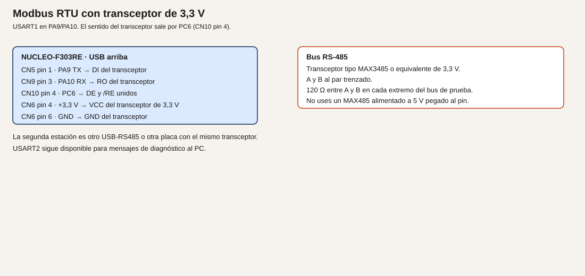
- Cableado. La tabla de pines de arriba. A con A y B con B entre esclavo y maestro, salvo que la hoja nombre los bornes al revés: entonces pruébalo y déjalo escrito. GND del transceptor con GND de la placa. El maestro USB-RS485 tiene su propia alimentación. No unas 5 V del adaptador a un pin del STM32.
- Cálculos. Valor 0x1234. La respuesta, antes del CRC, es
01 03 02 12 34. Longitud del dato: 2 bytes. El CRC se añade con la misma función.
- CubeMX. USART1 115200 8N1 en PA9 y PA10. Puedes bajar a 9600 si tu adaptador viene así: la velocidad tiene que coincidir en los dos extremos. PC6 salida, reposo a 0 (recepción).
- Código. Un buffer de 64 bytes. En el bucle, lee con timeout corto y rearma un silencio con
HAL_GetTick. Cuando el silencio cierre la trama, comprueba que haya al menos 4 bytes y que el CRC de todos menos los dos últimos coincida. Si cuadra y es la lectura esperada:
uint8_t resp[7] = {0x01, 0x03, 0x02, 0x12, 0x34, 0x00, 0x00};
uint16_t c = modbus_crc(resp, 5);
resp[5] = (uint8_t)(c & 0xFFU);
resp[6] = (uint8_t)(c >> 8);
HAL_GPIO_WritePin(GPIOC, GPIO_PIN_6, GPIO_PIN_SET);
HAL_UART_Transmit(&huart1, resp, 7, 20);
HAL_GPIO_WritePin(GPIOC, GPIO_PIN_6, GPIO_PIN_RESET);
Imprime por USART2 lectura ok para saber que entró, sin mezclar esos bytes en USART1.
- Dónde.
main.c.
- Compilar y probar. Desde el maestro, lee el holding register 0 del esclavo 1. En muchos programas el registro se numera desde 40001 o desde 0: usa la numeración que tu maestro documente, que para la función 0x03 y dirección 0 es el primero.
- Esperado, no medido. El maestro muestra 0x1234. USART2 dice que la trama entró. Si el maestro no muestra nada, mira A/B y DE antes de tocar el CRC, que ya comprobaste.
- Fallos. El maestro ve basura: DE se quedó a 1, o las velocidades no coinciden. No hay respuesta: PC6 no sube, o /RE no está unido a DE y el receptor del transceptor sigue deshabilitado según la hoja. CRC malo en el maestro: el orden de los bytes del CRC está al revés.
- Variación. Cambia el valor fijo a 0x0007 y comprueba que el maestro lo ve sin cambiar el CRC a mano: lo recalcula el programa.
- Criterio. El registro leído es el que el programa metió en la respuesta.
Ejemplo 3. Escribir un registro, con rango
- Problema. El maestro también quiere dejar una consigna.
- Objetivo. La función 0x06 escribe el registro 1. Si el valor es mayor que 1000, se responde con una excepción y no se guarda.
- Material. El mismo bus.
- Funcionamiento. La petición 0x06 trae el valor en dos bytes. Si es mayor que 1000, la respuesta de excepción es dirección,
0x06 | 0x80, código 0x03 (valor ilegal, en la convención habitual de Modbus), más CRC. Si cabe, se guarda en RAM y se hace eco de la petición, que es lo que la función 0x06 espera. El registro 0 sigue siendo la lectura de prueba; puedes hacer que la lectura del registro 1 devuelva lo guardado. Amplía el if del ejemplo 2.
- Dibujo. El mismo.
- Cableado. El mismo.
- Cálculos. Rango permitido: 0 a 1000 inclusive. 1001 se rechaza. El límite es de esta práctica, no de la especificación.
- CubeMX. Sin pines nuevos.
- Código. Una variable
static uint16_t consigna;. En el tratamiento de la trama, si función 0x06, registro 1:
uint16_t valor = (uint16_t)((buf[4] << 8) | buf[5]);
if (valor > 1000U)
{
uint8_t ex[5] = {0x01, 0x86, 0x03, 0x00, 0x00};
uint16_t c = modbus_crc(ex, 3);
ex[3] = (uint8_t)(c & 0xFFU);
ex[4] = (uint8_t)(c >> 8);
/* transmitir ex con DE, igual que la respuesta buena */
}
else
{
consigna = valor;
/* eco de los 8 bytes recibidos, que ya traen su CRC */
}
La lectura 0x03 del registro 1 debe devolver consigna.
- Dónde. El mismo parser del bucle.
- Compilar y probar. Escribe 100. Lee el registro 1. Escribe 1001. La lectura debe seguir en 100 y el maestro debe indicar excepción.
- Esperado, no medido. 100 se guarda. 1001 no. Si quitas la alimentación, se pierde: la Flash es el módulo 24.
- Fallos. 1001 se guarda: el
if está al revés. La excepción no llega: DE no envuelve esa respuesta corta. El maestro no entiende la excepción: el código no es 0x03 o falta el bit 0x80 de la función.
- Variación. Rechaza también el registro distinto de 0 y de 1, con código de excepción 0x02 (dirección ilegal).
- Criterio. Puedes enseñar una escritura aceptada y una rechazada, y USART2 no se ha usado como bus de campo.
Resumen
CRC con 0xA001. Transceptor de 3,3 V. DE en PC6, en bajo mientras se escucha. El rango se rechaza con excepción. El ESP32 no puede seguir conectado a PA9 y PA10.
Glosario
| Término |
Definición |
| RTU |
Modbus en binario, con CRC, sobre un enlace serie |
| Registro de retención |
Un entero de 16 bits que el maestro puede leer o escribir |
| DE |
Habilitación del driver del transceptor |
| Excepción |
Respuesta que niega la petición, con la función marcada |
Preguntas
1. ¿Por qué no un MAX485 a 5 V?
Respuesta. Porque sus entradas y salidas lógicas irían a 5 V. Aunque PA9 y PA10 toleren 5 V en la entrada, este curso no alimenta el transceptor a 5 V pegado al pin. Se usa uno de 3,3 V.
2. ¿USART2 puede ser el Modbus?
Respuesta. No en este curso. USART2 es el informe al PC por el ST-LINK.
3. ¿Una sola resistencia de 120 Ω en un extremo basta en esta mesa?
Respuesta. En un cable corto a veces hay enlace, y aun así la práctica pone 120 Ω en los dos extremos para no aprender un bus a medias.
Lista de comprobación
- [ ] El CRC del ejemplo 1 es repetible y, si lo comparé con la especificación, coincide.
- [ ] El transceptor es de 3,3 V y el ESP32 está desconectado.
- [ ] DE vuelve a 0 después de cada respuesta.
- [ ] El valor 1001 no se queda guardado.
Siguiente
Módulo 22: dos nodos, un identificador, sin maestro único.
Módulo 22. CAN
El STM32F303RET6 tiene un controlador CAN 2.0B. En el HAL de esta familia el tipo es CAN_HandleTypeDef, no el FDCAN de otras series. La placa no tiene transceptor ni conector. Hacen falta dos nodos: uno solo no demuestra el bus.
No comprobado en hardware. El bit timing de abajo es una cuenta con el reloj de 36 MHz de APB1. Confírmalo en tu pestaña de reloj. No se ha medido con un analizador.
Objetivos
- Transmitir un identificador y recibirlo en otro nodo.
- Filtrar un identificador y descartar otro.
- Repetir el intercambio con un adaptador o con una segunda Nucleo.
Prerrequisitos
Dos transceptores con E/S de 3,3 V, de la familia TJA1051T/3 o equivalente. La alimentación del lado del bus, si la hoja pide 5 V, sale de una fuente de 5 V, no de un GPIO. Cable entre CANH y CANL. La terminación se copia de la hoja del transceptor y de la longitud del cable. No se da aquí una cifra distinta de la de esa hoja. En muchos módulos didácticos la resistencia ya está montada y se activa con un puente: usa ese puente una vez por extremo, no además una resistencia suelta si el módulo ya la tiene.
Pines
PA11 es CAN_RX, CN10 pin 14. PA12 es CAN_TX, CN10 pin 12. El datasheet los lista como funciones alternativas, y también como USB_DM y USB_DP. Este curso no los usa como USB. No se usan PB8 y PB9: son el I2C.
| Nucleo |
Transceptor |
| PA11, CN10 pin 14 |
RXD |
| PA12, CN10 pin 12 |
TXD |
| CN6 pin 4, +3,3 V |
VIO o el pin de alimentación lógica que la hoja diga |
| CN6 pin 6, GND |
GND lógico |
| CANH, CANL |
Al otro nodo |
| 5 V, si la hoja los pide en VCC del bus |
Fuente aparte, no un GPIO |
Analogía. A diferencia de Modbus, no hay un maestro que pregunte por turnos. Cada nodo suelta un mensaje con un identificador, como un aviso por megafonía con un número. Quien tenga ese número en su filtro lo escucha. Los demás lo dejan pasar. Los dos hilos son un par: no es un UART con TX y RX cruzados.
Bit timing
Con PCLK1 = 36 MHz y 500 kbit/s: el tiempo de bit se parte en cuantos. Prescaler 8, segmento de sincronización 1 tq, BS1 = 6 tq, BS2 = 2 tq, SJW = 1 tq. Suma 1 + 6 + 2 = 9 tq. 36e6 / (8 * 9) = 500000 bit/s. En el HAL:
hcan.Init.Prescaler = 8;
hcan.Init.SyncJumpWidth = CAN_SJW_1TQ;
hcan.Init.TimeSeg1 = CAN_BS1_6TQ;
hcan.Init.TimeSeg2 = CAN_BS2_2TQ;
El punto de muestreo queda al final de BS1. Si tu reloj no es 36 MHz en APB1, no uses estos números: recalcula y escribe la cuenta al lado. Modo normal, no loopback, cuando haya dos nodos. El loopback sirve para ver que el controlador acepta un mensaje, y se dice que no prueba el transceptor.
Ejemplo 1. Un identificador de un nodo a otro
- Problema. Ver un mensaje en el otro extremo.
- Objetivo. El nodo A envía el identificador estándar 0x123 con un byte 0x42. El nodo B lo imprime por su USART2.
- Material. Dos placas, o una placa y un adaptador que pueda quedar en silencio y solo recibir. Para este ejemplo, receptor en la segunda Nucleo.
- Funcionamiento. Cada placa inicializa el CAN, arranca el periférico y, en A, llama a
HAL_CAN_AddTxMessage una vez por segundo. En B, HAL_CAN_GetRxMessage si hay un mensaje en el FIFO.
- Dibujo.
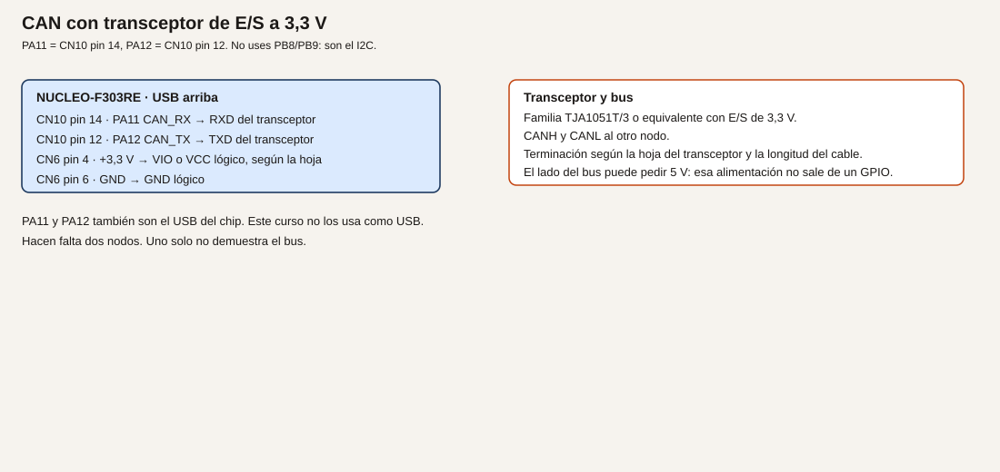
- Cableado. El de la tabla, repetido en los dos nodos. CANH con CANH, CANL con CANL. GND lógico común si los transceptores lo necesitan para la referencia de las E/S; el par diferencial no sustituye un error de alimentación. Sigue la hoja.
- Cálculos. 500 kbit/s con la cuenta de arriba. DLC = 1. Identificador 0x123.
- CubeMX. CAN en PA11 y PA12, 500 kbit/s con esos segmentos, modo normal. Habilita la interrupción de FIFO0 o haz encuesta del FIFO. USART2 para el texto en el nodo B.
- Código. En el transmisor, después de
HAL_CAN_Start y de configurar un filtro que deje pasar (en el ejemplo 2 se afina):
CAN_TxHeaderTypeDef tx = {0};
uint8_t dato = 0x42U;
uint32_t buzon;
tx.StdId = 0x123U;
tx.IDE = CAN_ID_STD;
tx.RTR = CAN_RTR_DATA;
tx.DLC = 1;
HAL_CAN_AddTxMessage(&hcan, &tx, &dato, &buzon);
En el receptor:
CAN_RxHeaderTypeDef rx = {0};
uint8_t dato = 0U;
if (HAL_CAN_GetRxFifoFillLevel(&hcan, CAN_RX_FIFO0) > 0U)
{
HAL_CAN_GetRxMessage(&hcan, CAN_RX_FIFO0, &rx, &dato);
}
Imprime rx.StdId y dato por USART2.
- Dónde.
main.c de cada nodo. Son dos proyectos, o el mismo con un #if que no vas a dejar a medias: mejor dos carpetas, nodo_a y nodo_b, si las creas. Esta lección no exige el árbol de carpetas; sí exige que sepas cuál placa transmite.
- Compilar y probar. Alimenta los dos transceptores. Graba las dos placas. Mira el monitor del receptor.
- Esperado, no medido. Aparece el identificador 0x123 y el byte 0x42 cada segundo. El LED de error del transceptor, si el módulo lo tiene, no debe quedarse en fallo de bus. Si se queda, la terminación o los hilos están mal, y el controlador verá errores. Puedes leer el contador de errores que el HAL exponga y imprimirlo.
- Fallos. Loopback activado en los dos: cada uno se oye a sí mismo y el cable no se ha probado. Quítalo. Nada en el receptor: CANH y CANL cambiados, terminación duplicada o ausente según la hoja, o el filtro por defecto descarta. Velocidad distinta en los dos nodos. Un solo nodo encendido: el transmisor acumula errores porque nadie da el ACK del bus. Eso es normal en CAN. Hace falta el segundo nodo.
- Variación. Cambia el byte a un contador. El receptor debe verlo crecer.
- Criterio. El mensaje cruzó el cable. No vale el modo loopback como prueba final.
Ejemplo 2. Un filtro
- Problema. El nodo no tiene por qué leer todos los identificadores.
- Objetivo. Aceptar 0x123 y no aceptar 0x321.
- Material. Los dos nodos. El transmisor envía los dos identificadores, alternados.
- Funcionamiento. Un filtro de máscara en 32 bits, identificador estándar. La máscara a unos en los bits del identificador exige coincidencia. Se configura antes de
HAL_CAN_Start, como pide el HAL.
- Dibujo. El mismo.
- Cableado. El mismo.
- Cálculos. Id 0x123, máscara 0x7FF para un estándar de 11 bits: solo pasa ese. El HAL desplaza el identificador estándar; usa los campos
FilterIdHigh y FilterMaskIdHigh como indique el comentario del propio HAL de tu versión, que suele colocar el ID estándar en los bits altos. Mira CAN_FilterTypeDef en la cabecera generada y copia el desplazamiento que use un ejemplo de esa misma versión del paquete, no el de un chip FDCAN. Anota los valores que dejes.
- CubeMX. El filtro puede ir en código. Modo de filtro: máscara, FIFO0, filtro activado.
- Código. Esquema, a completar con el desplazamiento de tu HAL:
CAN_FilterTypeDef filtro = {0};
filtro.FilterBank = 0;
filtro.FilterMode = CAN_FILTERMODE_IDMASK;
filtro.FilterScale = CAN_FILTERSCALE_32BIT;
filtro.FilterFIFOAssignment = CAN_RX_FIFO0;
filtro.FilterActivation = ENABLE;
/* FilterIdHigh y FilterMaskIdHigh: según la cabecera de esta versión */
HAL_CAN_ConfigFilter(&hcan, &filtro);
El transmisor alterna StdId 0x123 y 0x321.
- Dónde. Inicialización del receptor.
- Compilar y probar. Mira qué identificadores imprime el receptor.
- Esperado, no medido. Solo 0x123. Si pasan los dos, la máscara está a cero, que es «pasa todo».
- Fallos. No pasa ninguno: el desplazamiento del ID dentro de
FilterIdHigh no es el de tu HAL. Compara con la estructura generada. Pasan todos: máscara nula.
- Variación. Abre la máscara un bit y observa qué identificador vecino empezaría a pasar. Vuelve a dejarla estricta.
- Criterio. En el monitor del receptor no aparece 0x321.
Ejemplo 3. Una segunda estación distinta
- Problema. Dos programas gemelos no demuestran que el mensaje sea entendible fuera de tu código.
- Objetivo. Sustituir el nodo B por un adaptador CAN-USB, o dejar el adaptador como tercer observador, y ver 0x123.
- Material. El adaptador, con su velocidad a 500 kbit/s y el mismo bit timing si el programa lo pide. Si el adaptador solo pide la velocidad, pon 500 kbit/s.
- Funcionamiento. El nodo A sigue transmitiendo. El programa del fabricante del adaptador muestra el identificador. No hace falta un driver propio en esta lección.
- Dibujo. El mismo par, ahora hasta el adaptador. Terminación en los dos extremos reales del cable, no en los tres sitios si hay tres conectores en el medio: los extremos físicos del bus.
- Cableado. CANH, CANL y la referencia que pida el adaptador. Muchos adaptadores no deben recibir 5 V desde la Nucleo. Lee su hoja.
- Cálculos. La misma velocidad. Si el adaptador no ve nada y las dos Nucleo sí se veían, el adaptador está a otra velocidad o el pinout del conector DB9 no es el que creías. El DB9 de CAN no está normalizado en una sola frase universal: mira la serigrafía del adaptador.
- CubeMX. El del nodo A.
- Código. El transmisor del ejemplo 1, sin cambio si ya alternaba identificadores. Deja solo 0x123 para no confundir el primer pantallazo.
- Dónde. Proyecto del nodo A.
- Compilar y probar. Abre el programa del adaptador. Debes ver 0x123 y el byte.
- Esperado, no medido. El identificador y el dato coinciden con el código. El nodo B puede estar apagado si el adaptador da el ACK. Si ni el adaptador ni otra placa escuchan, el transmisor entrará en error por falta de ACK.
- Fallos. El adaptador alimentado desde el pin de 5 V de la placa y la placa se cae: usa el USB del adaptador. Identificador desplazado 3 bits: estás mirando el campo crudo del registro. Quédate con el
StdId que muestra el programa del adaptador y compáralo con 0x123.
- Variación. Envía desde el adaptador un 0x123 y recíbelo en la Nucleo con el filtro del ejemplo 2. Así los dos sentidos quedan vistos.
- Criterio. Un programa que no compilaste tú muestra el mismo identificador que escribes en
StdId.
Resumen
PA11 y PA12, transceptor de E/S a 3,3 V, 500 kbit/s con la cuenta del reloj de 36 MHz, dos nodos, filtro de máscara. USB del chip no se usa. PB8 y PB9 no se tocan.
Glosario
| Término |
Definición |
| Identificador |
El número del mensaje, no una dirección de esclavo al estilo Modbus |
| Transceptor |
El chip que pasa de TXD/RXD al par CANH/CANL |
| ACK |
El bit con el que otro nodo dice que oyó el mensaje |
| Filtro |
La regla que decide qué mensaje entra en el FIFO |
Preguntas
1. ¿Por qué un solo nodo no basta?
Respuesta. Porque en CAN alguien tiene que reconocer el mensaje. Sin segundo nodo, el transmisor acumula error.
2. ¿PB8 sirve como CAN_RX en este curso?
Respuesta. El chip lo permite. El curso no: PB8 es el reloj I2C.
3. ¿Estos pines pueden ser el USB de dispositivo a la vez?
Respuesta. No. Son los mismos pines. Este curso los deja en CAN.
Lista de comprobación
- [ ] He anotado el reloj de APB1 con el que calculé el bit timing.
- [ ] Hay dos nodos, o un nodo y un adaptador, en los extremos del par.
- [ ] El filtro deja pasar 0x123 y no 0x321.
- [ ] No he cableado CAN en PB8/PB9 ni USB en PA11/PA12.
Siguiente
Módulo 23: volver a arrancar si el programa se queda colgado.
Módulo 23. Watchdog y fallos
Un watchdog es un temporizador que reinicia el chip si el programa no lo atiende a tiempo. Sirve para salir de un bucle que se quedó colgado. Al volver, hay que saber que el arranque no fue un encendido normal.
No comprobado en hardware. Los tiempos dependen del LSI. El datasheet da fLSI de 30 kHz, 40 kHz típico y 50 kHz. No se ha medido el de tu placa.
Objetivos
- Mantener el watchdog alimentado y no reiniciar.
- Dejar de alimentarlo y ver un reinicio, con un patrón de LD2 distinto.
- Imprimir la causa del reset en el arranque siguiente.
Prerrequisitos
PA5 y USART2. El IWDG usa el oscilador interno de baja frecuencia, no un pin. Este módulo usa el watchdog independiente, no el de ventana. El de ventana (WWDG) existe en el chip; se cita para no confundir los nombres, y no se configura aquí.
El perro guardián
Analogía. Es un temporizador de «sigue ahí» que un vigilante carga. Si el operario no lo recarga, el vigilante pulsa el reset. No arregla el fallo: solo impide quedarse colgado para siempre. Al volver, el parte tiene que decir «me reinició el vigilante», no «me acaban de enchufar».
Técnico. El IWDG cuenta con el LSI. Tiempo aproximado, con prescaler 32 y recarga 4095: (32 * 4096) / fLSI. Con 40 kHz, unos 3,3 s. Con 30 kHz, unos 4,4 s. Con 50 kHz, unos 2,6 s. El programa tiene que recargar bastante antes del mínimo, por ejemplo cada 500 ms. Esos números son cuentas con la tabla del datasheet, no una medida. Confirma en RM0316 la fórmula del IWDG por si el recuento del reload incluye el +1, que es lo que la fórmula de arriba ya supone al usar 4096 para un reload de 4095.
Las banderas de reset están en RCC->CSR. Los nombres CMSIS de esta familia incluyen RCC_CSR_IWDGRSTF, RCC_CSR_PORRSTF y RCC_CSR_PINRSTF. Se borran escribiendo RCC_CSR_RMVF. Léelas al arrancar, antes de borrarlas. Cítalas desde el capítulo RCC de RM0316 si tu cabecera usa el mismo registro.
Ejemplo 1. Recargar a tiempo
- Problema. Activar el watchdog sin que la placa se reinicie sola.
- Objetivo. LD2 conmuta cada 500 ms y el IWDG se recarga en ese mismo ritmo.
- Material. La placa.
- Funcionamiento. El prescaler y la recarga dejan un margen de más de 2 s incluso con el LSI rápido. Recargar cada 500 ms entra en ese margen.
- Dibujo. No hay.
- Cableado. No hay.
- Cálculos. Los del apartado técnico. 500 ms es holgado frente a 2,6 s.
- CubeMX. IWDG activado. Prescaler 32, reload 4095, o los valores que CubeMX nombre así. PA5 salida. No actives el WWDG a la vez en este ejemplo.
- Código.
/* USER CODE BEGIN WHILE */
while (1)
{
HAL_GPIO_TogglePin(GPIOA, GPIO_PIN_5);
HAL_IWDG_Refresh(&hiwdg);
HAL_Delay(500);
/* USER CODE END WHILE */
HAL_Delay aquí es aceptable porque el único trabajo es demostrar que se recarga. En un programa con más tareas, la recarga tiene que estar en un sitio que deje de ejecutarse si el programa se cuelga de verdad. No la pongas en una interrupción que siga viva cuando el bucle ya esté muerto: entonces el watchdog no se entera.
- Dónde. El bucle. El arranque del IWDG lo genera CubeMX.
- Compilar y probar. Graba y espera al menos medio minuto.
- Esperado, no medido. LD2 sigue conmutando. La placa no se reinicia. Si se reinicia, el reload no es el que crees o
Refresh no se está llamando.
- Fallos. Reinicios periódicos: el tiempo real es más corto que 500 ms. Abre la configuración y la fórmula. No se puede depurar con un punto de ruptura largo: parado, dejas de recargar y el IWDG reinicia. Para mirar variables, desactiva el IWDG en un ensayo o recarga en un sitio que siga corriendo. Dilo, no lo dejes desactivado sin querer.
- Variación. Recarga cada 100 ms. Sigue sin reiniciar.
- Criterio. Medio minuto sin reinicio, con el refresh en el bucle.
Ejemplo 2. Dejar de recargar
- Problema. Comprobar que el reinicio ocurre, y verlo en el LED.
- Objetivo. Tras unos segundos sanos, entrar en un bucle que no recarga. LD2, al volver, parpadea deprisa durante un segundo para marcar que la causa fue el IWDG.
- Material. La placa y, en el ejemplo 3, el monitor.
- Funcionamiento. Un contador llega a 10 vueltas de 500 ms y entonces entra en
while (1) { } sin refresh. El IWDG expira. Al arrancar, si la bandera está puesta, se hacen diez conmutaciones rápidas de LD2 antes del ritmo normal.
- Dibujo. No hay.
- Cableado. No hay.
- Cálculos. Unos 5 s de trabajo sano más el tiempo del LSI hasta el reset. Verás un hueco del orden de los segundos calculados arriba. Mide el tuyo con un reloj de pared y anótalo como tuyo. No está en este texto.
- CubeMX. El del ejemplo 1.
- Código.
/* USER CODE BEGIN 2 */
if ((RCC->CSR & RCC_CSR_IWDGRSTF) != 0U)
{
for (uint32_t i = 0; i < 10U; i++)
{
HAL_GPIO_TogglePin(GPIOA, GPIO_PIN_5);
HAL_Delay(80);
HAL_IWDG_Refresh(&hiwdg);
}
}
/* USER CODE END 2 */
Hay que recargar también durante el aviso, o el watchdog vencerá otra vez a mitad de los parpadeos. En el bucle principal, deja de llamar a Refresh cuando vueltas pase de 10. No pongas ese while (1) vacío hasta haber visto el ejemplo 1.
- Dónde. Zona 2 y el bucle.
- Compilar y probar. Graba. LD2 lento, luego se para, luego ráfaga rápida, y se repite.
- Esperado, no medido. Ese patrón. El hueco entre la parada y la ráfaga es tu medida del timeout.
- Fallos. Ráfaga también al pulsar B2 (reset): la bandera de pin puede estar puesta y estás mirando la bandera equivocada. El ejemplo 3 separa las causas. No hay ráfaga nunca: no estás leyendo
IWDGRSTF, o la borras antes. Bucle infinito que el depurador no suelta: es el ensayo. El reset tiene que sacarte.
- Variación. Quita el cuelgue y confirma que la ráfaga desaparece en el siguiente encendido por corriente, no solo en el siguiente reset. Un power-on limpia la causa de IWDG.
- Criterio. Distingues el ritmo sano del ritmo de «vuelvo de un cuelgue».
Ejemplo 3. Imprimir la causa
- Problema. El LED no dice si fue el watchdog, el pulsador de reset o quitar el USB.
- Objetivo. Una línea por USART2 al arrancar, y luego borrar las banderas.
- Material. El monitor serie.
- Funcionamiento. Se lee
RCC->CSR una vez. Se imprime qué bits están. Se escribe RMVF para no repetir la misma causa en el siguiente arranque sano.
- Dibujo. No hay.
- Cableado. USART2 por el ST-LINK.
- Cálculos. No hay.
- CubeMX. USART2 115200 8N1.
- Código.
/* USER CODE BEGIN 2 */
uint32_t causa = RCC->CSR;
char linea[80];
int n = snprintf(linea, sizeof(linea),
"csr 0x%08lX iwdg %u pin %u por %u\r\n",
(unsigned long)causa,
(causa & RCC_CSR_IWDGRSTF) ? 1 : 0,
(causa & RCC_CSR_PINRSTF) ? 1 : 0,
(causa & RCC_CSR_PORRSTF) ? 1 : 0);
if (n > 0)
{
HAL_UART_Transmit(&huart2, (uint8_t *)linea, (uint16_t)n, 50);
}
__HAL_RCC_CLEAR_RESET_FLAGS();
/* USER CODE END 2 */
__HAL_RCC_CLEAR_RESET_FLAGS es la macro del HAL que pone RMVF. Si tu versión no la tiene, escribe el bit que nombre RM0316.
- Dónde. Zona 2, antes de borrar y antes del bucle que se cuelga.
- Compilar y probar. Tres arranques: quita y pon el USB; pulsa B2; deja que venza el IWDG. Anota las tres líneas.
- Esperado, no medido. El cuelgue marca
iwdg 1. El pulsador negro marca el reset de pin. Quitar el USB marca power-on. Puede haber más de un bit a la vez; anótalo en vez de forzar una sola causa.
- Fallos. Siempre los mismos bits: no estás borrando las banderas. Línea vacía: USART2 no está listo antes de transmitir. La zona 2 ya tiene el UART inicializado si CubeMX generó el orden habitual. Texto cortado: el watchdog reinicia durante el
printf porque el ejemplo 2 ya no recarga. Recarga una vez justo antes de imprimir si hace falta.
- Variación. Guarda el último código en una variable y compáralo con la línea. En el módulo 24 esa causa se podrá guardar en Flash; aquí vive solo hasta el próximo apagado si no la imprimes.
- Criterio. Las tres causas que provocaste se distinguen en el cuaderno.
Resumen
El IWDG se recarga en el bucle que demuestra que el programa sigue vivo. Si ese bucle muere, hay reinicio. La bandera se imprime y se borra. El tiempo es aproximado porque el LSI lo es.
Glosario
| Término |
Definición |
| IWDG |
Watchdog independiente, con reloj LSI |
| LSI |
Oscilador interno lento, 30/40/50 kHz en el datasheet |
| Bandera de reset |
Bit que recuerda la causa del último arranque |
| WWDG |
Watchdog de ventana. No se usa en este módulo |
Preguntas
1. ¿Por qué no recargar el IWDG dentro de un temporizador que sigue corriendo aunque el bucle esté muerto?
Respuesta. Porque entonces el cuelgue del bucle no se vería. La recarga tiene que vivir en el camino que quieres vigilar.
2. ¿El timeout es exactamente 3,3 s?
Respuesta. No. Esa cifra es con 40 kHz. El datasheet admite de 30 kHz a 50 kHz.
3. ¿Un punto de ruptura largo es compatible con el IWDG activo?
Respuesta. No, si durante la parada nadie recarga. El chip se reinicia. Es una limitación del ensayo, no un fallo del depurador.
Lista de comprobación
- [ ] Con la recarga en el bucle, la placa no se reinicia sola.
- [ ] Sin la recarga, vuelve y LD2 lo marca.
- [ ] He anotado las banderas de tres causas distintas.
- [ ] He medido el hueco del timeout en mi mesa y no lo he copiado de los 3,3 s.
Siguiente
Módulo 24: guardar un número que sobreviva a quitar el USB.
Módulo 24. Memoria no volátil
Quitar el USB borra la RAM. Este chip no trae una EEPROM aparte descrita como tal en el datasheet: el sitio para guardar un umbral es la Flash de programa. Hay que escribir poco, en un sitio que no sea el programa, y asumir que un corte a mitad de la escritura puede dejar esa copia a medias.
No comprobado en hardware. El tamaño de página no se copia de memoria en esta lección. Se usa el símbolo FLASH_PAGE_SIZE de la cabecera CMSIS que CubeMX haya puesto en el proyecto. Si ese símbolo no existe, ábrelo en el paquete y usa el que la cabecera defina. No escribas 2048 a mano.
Objetivos
- Guardar un número, quitar alimentación y volver a leerlo.
- Guardar solo cuando se pide por el puerto serie, no en cada vuelta.
- Arrancar con la última copia íntegra, o con el valor de fábrica, si la escritura quedó a medias.
Prerrequisitos
USART2. El mapa de memoria del STM32F303RET6: 512 KB de Flash desde 0x08000000 (datasheet, tabla 2 y línea de pedido E). La última página es la que se usa para no pisar el programa, siempre que el programa no haya crecido hasta el final. Comprueba el tamaño del .elf antes de elegir la dirección. Si el binario ocupa hasta el final, no hay sitio: hay que reservar la página en el enlazado, y esta lección te avisa de ese caso en vez de inventar un linker script completo.
Escribir Flash no es escribir RAM
Analogía. La RAM es un encerado. La Flash es un cuaderno que solo se puede borrar por hojas enteras. Borrar la hoja donde está el programa la deja en blanco. Por eso se usa la última hoja, y no se escribe en cada paso del bucle: cada escritura gasta la hoja y, si se va la luz a mitad, la hoja puede quedar ilegible.
Técnico. En esta familia el HAL programa medias palabras. El procedimiento de referencia es el capítulo de Flash de RM0316: desbloquear, borrar la página, programar, bloquear. El código de abajo usa el HAL. Si tu versión nombra los campos de FLASH_EraseInitTypeDef de otra forma, manda la estructura generada en tu proyecto.
Dirección prevista:
#define PARAM_ADDR (FLASH_BASE + (512U * 1024U) - FLASH_PAGE_SIZE)
512 KB está verificado para el STM32F303RET6. FLASH_PAGE_SIZE no se sustituye por un número en este texto.
Se guardan dos copias dentro de la página si cabe, o una marca de validez de 16 bits 0xA55A seguida del valor. Si la marca no está, el valor es el de fábrica, 500. Un corte durante el borrado deja la marca ausente: se vuelve a fábrica. Eso es el criterio de esta práctica, y se escribe antes de probarlo. No es una EEPROM con nivelación de desgaste. No escribas en cada tecla.
Ejemplo 1. Guardar y quitar el USB
- Problema. Un umbral en RAM no sobrevive al apagado.
- Objetivo. Escribir 500, quitar el cable, volver y leer 500.
- Material. La placa y el monitor.
- Funcionamiento. Al arrancar se lee la media palabra de la marca y la siguiente del valor. Si la marca no es
0xA55A, se ofrece el valor de fábrica y, la primera vez, se graba. En los arranques siguientes no se graba si la marca está.
- Dibujo. No hay.
- Cableado. No hay.
- Cálculos. Valor de fábrica 500. Marca
0xA55A. Dirección PARAM_ADDR.
- CubeMX. USART2. Nada de DMA sobre la Flash. No actives una protección de lectura que luego te impida borrar: déjala como viene el proyecto de prácticas.
- Código.
/* USER CODE BEGIN 0 */
#define MARCA_OK 0xA55AU
static uint16_t flash_leer(void)
{
uint16_t marca = *(__IO uint16_t *)PARAM_ADDR;
uint16_t valor = *(__IO uint16_t *)(PARAM_ADDR + 2U);
if (marca != MARCA_OK)
{
return 500U;
}
return valor;
}
static int flash_guardar(uint16_t valor)
{
FLASH_EraseInitTypeDef borrar = {0};
uint32_t error = 0U;
if (HAL_FLASH_Unlock() != HAL_OK)
{
return -1;
}
borrar.TypeErase = FLASH_TYPEERASE_PAGES;
borrar.PageAddress = PARAM_ADDR;
borrar.NbPages = 1;
if (HAL_FLASHEx_Erase(&borrar, &error) != HAL_OK)
{
HAL_FLASH_Lock();
return -1;
}
if (HAL_FLASH_Program(FLASH_TYPEPROGRAM_HALFWORD, PARAM_ADDR, MARCA_OK) != HAL_OK)
{
HAL_FLASH_Lock();
return -1;
}
if (HAL_FLASH_Program(FLASH_TYPEPROGRAM_HALFWORD, PARAM_ADDR + 2U, valor) != HAL_OK)
{
HAL_FLASH_Lock();
return -1;
}
HAL_FLASH_Lock();
return 0;
}
/* USER CODE END 0 */
En la zona 2, lee e imprime. Si la marca no está, llama a flash_guardar(500) una vez.
Los campos PageAddress y NbPages son los del HAL F3 habitual. Si tu estructura trae Banks o Page en otro sentido, adapta el campo y no este párrafo.
- Dónde.
main.c. El #define de PARAM_ADDR puede ir en el mismo USER CODE.
- Compilar y probar. Primera grabación: debe imprimir 500 y haber escrito. Quita el USB cinco segundos. Vuelve a abrir el monitor. Debe imprimir 500 sin depender de que el programa vuelva a inventarlo en RAM: desconecta de verdad.
- Esperado, no medido. El valor se mantiene. Si el programa no arranca, la dirección pisó el código. Recupera la placa borrando toda la Flash desde el depurador y elige otra página, o reduce el programa. No des ese fallo por un misterio del USB.
- Fallos. Siempre 500 recién calculado y la marca nunca cuadra: la escritura falla y no miras el
-1. Imprímelo. Valor que cambia solo: estás escribiendo en cada bucle. El ejemplo 2 lo prohíbe. Dirección impar: la media palabra tiene que estar alineada. PARAM_ADDR lo está si la página lo está.
- Variación. Guarda 501 a mano en una llamada, apaga y confirma 501. Luego vuelve a 500.
- Criterio. El número sobrevive a quitar el cable, y sabes en qué dirección está.
Ejemplo 2. Guardar solo cuando se pide
- Problema. Escribir en cada vuelta gasta la Flash y no aporta.
- Objetivo. La letra
g guarda la consigna actual. Cualquier otro texto no la guarda. La consigna en RAM puede cambiar con + y - sin tocar la Flash.
- Material. El monitor.
- Funcionamiento.
+ suma 10 en RAM, hasta 1000. - resta 10, sin bajar de 0. g llama a flash_guardar. Al arrancar, RAM copia la Flash.
- Dibujo. No hay.
- Cableado. USART2.
- Cálculos. Tope 0 a 1000, de acuerdo con el rechazo del módulo 21. Paso 10.
- CubeMX. El mismo.
- Código. En el bucle, lee un byte. Si es
+ o -, modifica una variable consigna e imprime ram. Si es g, guarda e imprime flash. No llames a flash_guardar en otro sitio.
- Dónde. El bucle.
- Compilar y probar. Sube la consigna con varios
+. Quita el USB sin pulsar g. Al volver, tiene que estar el valor antiguo. Repite, pulsa g, quita el USB. Al volver, está el nuevo.
- Esperado, no medido. Ese par de ensayos. La Flash no cambia en los
+.
- Fallos. Cambia sin
g: hay una llamada de más. No cambia con g: miras el valor de RAM al arrancar y no el de flash_leer. Imprime los dos.
- Variación.
p imprime marca y valor en hexadecimal, leídos otra vez de la dirección, para no fiarte de la variable.
- Criterio. Puedes decir cuántas veces se borró la página en el ensayo: una por cada
g, no una por cada +.
Ejemplo 3. Corte a mitad
- Problema. Si se va la alimentación mientras se borra, la marca puede desaparecer.
- Objetivo. Definir el criterio y provocarlo: o queda el valor anterior íntegro, o se vuelve a 500. No se acepta un valor «a medias» sin marca.
- Material. El cable USB, que vas a quitar en el momento de la escritura.
- Funcionamiento. El criterio, escrito antes de la prueba: si la marca no es
0xA55A, el valor de trabajo es 500. Un corte durante el borrado cae en ese caso. Un corte antes de empezar deja la copia anterior, porque no se ha borrado. No hay una tercera copia en este módulo. El ensayo es quitar el USB justo después de pedir g, varias veces, hasta observar uno de los dos resultados. No se garantiza cuál de los dos verás en un intento concreto.
- Dibujo. No hay.
- Cableado. No hay.
- Cálculos. No hay un instante exacto. Por eso se repite el ensayo.
- CubeMX. Sin cambios.
- Código. El de los ejemplos 1 y 2 ya cumple el criterio si
flash_leer rechaza una marca mala. Añade un retardo de 50 ms entre el borrado y la programación, solo en este ensayo, para tener más probabilidad de cortar en medio. Quítalo al acabar: no forma parte del producto.
HAL_Delay(50); /* solo el ensayo del corte; quitar después */
- Dónde. Dentro de
flash_guardar, entre el erase y el program, y luego fuera.
- Compilar y probar. Anota el valor, pulsa
g y quita el USB enseguida. Restaura. Apunta si volvió el valor previo, el nuevo o 500.
- Esperado, no medido. Uno de esos tres, y nunca un número con la marca mal leída tratada como válida. 500 es el resultado aceptable del corte durante el borrado. El valor previo es el resultado aceptable si no llegó a borrar.
- Fallos. Un valor distinto de los tres: la marca coincidió por casualidad con basura. Amplía la comprobación con una segunda marca al final del registro y exige las dos. Si no quieres ampliarla, repite el ensayo y no des por bueno un valor fuera de rango:
flash_leer puede rechazar también valores mayores que 1000.
- Variación. Quita el
HAL_Delay del ensayo y deja el módulo listo para el proyecto.
- Criterio. El informe dice qué hiciste al cortar y qué valor salió, y el
Delay de ensayo ya no está.
Resumen
La última página, el símbolo de tamaño de página de la cabecera, una marca de validez y escritura solo bajo demanda. Un corte vuelve a fábrica o deja la copia que aún no se borró.
Glosario
| Término |
Definición |
| Flash |
Memoria que conserva el dato sin alimentación y se borra por páginas |
| Página |
El bloque mínimo que el borrado limpia |
| Marca |
Un valor conocido que dice que lo que sigue es válido |
| Valor de fábrica |
El que se usa cuando la marca no está. Aquí, 500 |
Preguntas
1. ¿Por qué no 2 KB escritos a mano?
Respuesta. Porque esta lección no da por verificado el tamaño de página. Lo dice la cabecera del paquete que generaste.
2. ¿Puedo guardar en cada muestra del ADC?
Respuesta. No. La Flash no es un registro continuo, y un corte te dejaría sin la última copia buena.
3. ¿Dónde miro el procedimiento si el HAL no coincide?
Respuesta. En el capítulo de Flash de RM0316 y en la estructura que tenga tu proyecto, no en un ejemplo de otra familia.
Lista de comprobación
- [ ] El valor sobrevive a quitar el USB después de
g.
- [ ] Los
+ no escriben en la Flash.
- [ ] He anotado el resultado de al menos un corte durante
g.
- [ ] He quitado el retardo que solo servía para ese corte.
- [ ] La dirección usa
FLASH_PAGE_SIZE.
Siguiente
Módulo 25: medir la corriente y bajarla cuando no hay nada que hacer.
Módulo 25. Bajo consumo
Medir cuánto entra al microcontrolador, y bajar ese gasto cuando no hay trabajo. Sigue siendo un prototipo de mesa. No es un diseño de pila ni un número para un catálogo.
No comprobado en hardware. Este texto no trae una corriente de ejemplo. La que anotes es la tuya.
Objetivos
- Medir la corriente de Run con el polímetro en JP6, como dice UM1724 §7.8.
- Entrar en Sleep, y anotar la corriente.
- Despertar con B1, y saber qué impide bajar más.
Prerrequisitos
Polímetro que mida miliamperios. JP6 accesible. El módulo 23 puede estar en el mismo programa solo si recuerdas que un IWDG activo despierta o reinicia: para este ensayo, deja el IWDG desactivado. No quieres un reinicio a mitad de la medida.
JP6
Analogía. JP6 es el único hilo por el que la corriente del microcontrolador pasa cuando quieres contarla. Abrirlo es cortar ese hilo. Sin el amperímetro en su lugar, el chip se queda sin alimentación. El ST-LINK puede seguir encendido: no es la corriente que estás midiendo.
Técnico. Verificado en UM1724 §7.8. JP6 une la red de 3,3 V con VDD del MCU. Con el puente puesto, el chip se alimenta. Para medir, se quita el puente y se pone el amperímetro en serie, en la escala de miliamperios, y solo entonces se interpreta la lectura. Si el puente está quitado y no hay amperímetro, el MCU está apagado. LD3 puede seguir indicando 5 V. No confundas las dos cosas.
El modo de esta lección es Sleep: el núcleo se para y los periféricos que tengan reloj pueden seguir. Stop apaga más relojes y exige mirar cómo se despierta y cómo se rearma el reloj de sistema. El capítulo de potencia de RM0316 es la referencia antes de cambiar Sleep por Stop. Si tu lectura de ese capítulo te lleva a Stop, anota el modo y no mezcles los dos procedimientos. El código de abajo es Sleep.
En placas C-02 o posteriores, el MCO de 8 MHz del ST-LINK entra por PF0 (SB16 y SB50 cerrados, SB55 abierto, UM1724 tabla 10). Ese reloj sigue presente. No esperes la corriente de un chip con todos los relojes externos apagados. El depurador, si está conectado, también impide el mínimo. Para anotar la corriente, sal del modo depuración y deja el programa corriendo, o la lectura será la del chip con el SWD activo. Dilo en el cuaderno.
ES0261, sección de sistema, se consulta antes de afirmar que un modo de bajo consumo despierta como dice el manual. Si tu revisión describe un límite, anótalo y no publiques la corriente como si el modo hubiera sido el ideal.
Ejemplo 1. Corriente en Run
- Problema. No saber cuánto entra antes de hablar de «bajo consumo».
- Objetivo. Medir la corriente con el programa en el bucle, LD2 conmutando, sin depurador conectado en el momento de la lectura.
- Material. Polímetro en miliamperios. Cables cortos en JP6.
- Funcionamiento. El programa no entra en Sleep. Solo vive, para tener la referencia.
- Dibujo. No hay un SVG: JP6 está en la placa. Mira la serigrafía y la figura de UM1724 §7.8 antes de quitar el puente.
- Cableado.
| Paso |
Acción |
| 1 |
Programa grabado y depurador cerrado |
| 2 |
Polímetro en mA, puntas listas |
| 3 |
Quitar JP6 y, en el acto, poner el amperímetro en su lugar |
| 4 |
Leer y anotar |
| 5 |
Volver a poner el puente al terminar |
No dejes JP6 abierto al guardar la placa.
- Cálculos. No hay un valor previsto en este texto. Anota el rango del polímetro que usaste.
- CubeMX. Reloj de 72 MHz como el resto del curso. PA5 salida. Sin IWDG.
- Código. El parpadeo con
HAL_Delay(500) basta como carga conocida.
- Dónde.
main.c.
- Compilar y probar. Graba, desconecta la sesión de depuración, mide.
- Esperado, no medido. Una corriente estable en la escala de miliamperios, que tú anotas. No la copies de otro modelo de Nucleo.
- Fallos. Lectura cero y el chip muerto: JP6 está abierto sin el amperímetro, o el polímetro está en la escala equivocada y su fusible se abrió. LD3 apagado: eso es el 5 V, no JP6. Corriente que cambia con el LED: normal, es PA5. Anota con el LED apagado y con el LED encendido si quieres separarlas.
- Variación. Para el bucle en un
while(1) vacío, sin conmutar, y anota la diferencia. Sigue siendo Run.
- Criterio. Tienes un número tuyo, con el puente repuesto al acabar.
Ejemplo 2. Sleep
- Problema. El núcleo no tiene nada que hacer entre dos despertares.
- Objetivo. Entrar en Sleep y anotar la corriente en las mismas condiciones que el ejemplo 1.
- Material. El mismo amperímetro.
- Funcionamiento.
HAL_PWR_EnterSLEEPMode con el regulador principal encendido y WFI. El núcleo espera una interrupción. Sin una interrupción, se queda ahí: por eso el ejemplo 3 añade B1. Para este ejemplo puedes despertar con el SysTick si sigue activo: entonces Sleep dura poco entre ticks y la corriente media no es la de un Sleep profundo. Para ver el efecto, desactiva la interrupción del SysTick antes de dormir y acepta que HAL_GetTick se congela. Al despertar, la vuelves a activar. Documenta esa elección.
- Dibujo. No hay.
- Cableado. El de JP6, igual que el ejemplo 1.
- Cálculos. No hay un objetivo numérico. La comparación es «menor que mi medida de Run», no «igual a la del datasheet», porque la placa tiene ST-LINK, LED y el MCO.
- CubeMX. Sin periféricos de más. No inicies el USB de dispositivo ni el CAN.
- Código.
/* USER CODE BEGIN WHILE */
while (1)
{
HAL_SuspendTick();
HAL_PWR_EnterSLEEPMode(PWR_MAINREGULATOR_ON, PWR_SLEEPENTRY_WFI);
HAL_ResumeTick();
HAL_GPIO_TogglePin(GPIOA, GPIO_PIN_5);
HAL_Delay(200);
/* USER CODE END WHILE */
Sin el ejemplo 3, el WFI puede no volver si no queda ninguna interrupción. No dejes el programa así sin una fuente de despertar. Pasa al ejemplo 3 antes de dar la medida por hecha, o añade un temporizador que ya sepas que interrumpe.
- Dónde. El bucle.
- Compilar y probar. Mide otra vez en JP6, sin depurador.
- Esperado, no medido. Una corriente que tú anotas al lado de la de Run. Si no baja, el núcleo no está durmiendo: el SysTick lo despierta al momento o no llegaste a
EnterSLEEPMode.
- Fallos. Corriente igual a Run: no duerme. Placa que no vuelve: no hay interrupción. JP6 abierto al desconectar el polímetro: el chip se apaga y creerás que el modo es «corriente cero». No cuentes esa lectura.
- Variación. Si tras leer RM0316 prefieres Stop, sustituye la llamada por
HAL_PWR_EnterSTOPMode y, al volver, reconfigura el reloj de sistema como indique el ejemplo que CubeMX o el manual den para salir de Stop. No des por hecho que sigue a 72 MHz. Anota el modo real.
- Criterio. Dos números en el cuaderno, Run y Sleep, medidos por ti.
Ejemplo 3. Despertar con B1
- Problema. Salir del sueño con el pulsador, no con un reset.
- Objetivo. Dormir hasta que B1 baje, conmutar LD2 y volver a dormir.
- Material. B1. El amperímetro, si sigues midiendo.
- Funcionamiento. EXTI en PC13, flanco de bajada, como en el módulo 9. Esa interrupción es la que cumple el
WFI. La callback puede estar vacía: basta con que exista la interrupción. Al volver, se conmuta LD2.
- Dibujo. No hay cable nuevo.
- Cableado. PC13 interno, SB17 cerrado.
- Cálculos. No hay.
- CubeMX. PC13 como EXTI, NVIC habilitado. Sin IWDG.
- Código. La callback vacía de usuario, sin
HAL_Delay. El bucle del ejemplo 2, que ahora sí tiene quién lo despierte. Quita el HAL_Delay(200) si quieres pasar casi todo el tiempo dormido; deja una conmutación al despertar para ver que volviste.
- Dónde.
main.c y la callback de EXTI, una sola definición.
- Compilar y probar. Sin depurador. LD2 cambia al pulsar B1. Mide la corriente entre pulsaciones.
- Esperado, no medido. Quieto, duerme. Al pulsar, un cambio de LED y otra vez a dormir. La corriente es la tuya.
- Fallos. No despierta: NVIC o el flanco. Despierta solo: el pin flota. El pull de la placa debería impedirlo si SB17 está cerrado. Corriente que no baja: el depurador sigue conectado, o el MCO y el ST-LINK dominan la lectura porque estás midiendo en otro sitio que no es JP6. Confirma que las puntas están en JP6 y no en el USB.
- Variación. Anota qué quitaste (depurador, IWDG, periféricos) y qué no puedes quitar en esta placa (MCO en PF0 mientras los puentes de reloj sigan como de fábrica). No abras esos puentes en este módulo.
- Criterio. El despertar es B1, y el cuaderno dice qué se dejó encendido a propósito.
Resumen
JP6 en serie con el amperímetro, puente repuesto al terminar. Sleep con despertar por B1. Sin una corriente de ejemplo publicada. El MCO de la placa C-02 en adelante sigue ahí.
Glosario
| Término |
Definición |
| Run |
El núcleo ejecuta instrucciones |
| Sleep |
El núcleo parado, a la espera de una interrupción |
| JP6 |
El puente de VDD del MCU. Abierto y sin amperímetro, el MCU se apaga |
| WFI |
Instrucción de esperar a una interrupción |
Preguntas
1. ¿Una lectura de 0 mA con JP6 vacío demuestra un buen modo de bajo consumo?
Respuesta. No. Demuestra que el chip no está alimentado.
2. ¿Por qué no publico una corriente típica?
Respuesta. Porque depende de tu placa, del depurador y del MCO, y esta redacción no la midió.
3. ¿Stop y Sleep son la misma llamada?
Respuesta. No. Si cambias a Stop, el reloj de sistema al volver forma parte del procedimiento.
Lista de comprobación
- [ ] He anotado la corriente de Run y la de Sleep, medidas en JP6.
- [ ] He vuelto a colocar el puente.
- [ ] B1 despierta el programa.
- [ ] He escrito qué relojes dejé activos, entre ellos el MCO si la placa es C-02 o posterior.
Siguiente
Módulo 26: la misma salida de PA5 en tres niveles de acceso.
Módulo 26. HAL, LL y registros
El curso ha usado el HAL. A veces hace falta ver el bit, o una función que no esconda el registro. Este módulo enciende el mismo LED de tres maneras y dice qué se rompe al regenerar el proyecto.
No comprobado en hardware.
Objetivos
- Conmutar PA5 con HAL, como hasta ahora.
- Conmutarlo con las funciones LL en un proyecto generado con esa opción.
- Conmutarlo escribiendo BSRR, con el nombre sacado del capítulo GPIO de RM0316.
Prerrequisitos
PA5 como LD2. El manual de referencia RM0316 abierto por el GPIO. No hace falta cable nuevo.
Tres distancias al registro
Analogía. El HAL es un parte de trabajo ya impreso: «conmuta el piloto». LL es el mismo parte, pero tú rellenas cada casilla del formulario. El registro es ir al armario y mover el interruptor con el número de borne delante. Los tres pueden encender LD2. No cuestan lo mismo cuando CubeMX vuelve a generar el código, ni cuando cambias de chip.
Técnico. HAL_GPIO_TogglePin(GPIOA, GPIO_PIN_5) es la forma del curso. LL, si el proyecto se generó con driver LL para el GPIO, ofrece LL_GPIO_TogglePin(GPIOA, LL_GPIO_PIN_5). El registro de puesta a uno y a cero se llama BSRR en RM0316. Escribir el bit en la mitad baja pone el pin a 1. Escribirlo en la mitad alta lo pone a 0. ODR también refleja el nivel, pero BSRR evita leer-modificar-escribir el puerto entero. No copies un fragmento de otro manual si el nombre no aparece en el capítulo GPIO de RM0316 de esta familia.
Regenerar desde CubeMX reescribe lo que está fuera de USER CODE. Una llamada HAL dentro de USER CODE sobrevive. Una inicialización LL que CubeMX hubiera escrito fuera, no. Un proyecto pasado de HAL a LL no es un cambio de una línea: es otra generación. Por eso el ejemplo 2 es un proyecto distinto, o el mismo regenerado a conciencia, no un parche.
Ejemplo 1. HAL
- Problema. Tener la referencia conocida.
- Objetivo. Conmutar LD2 cada 300 ms con HAL.
- Material. La placa.
- Funcionamiento. El HAL mira el ODR y escribe BSRR por ti. No necesitas nombrar el registro.
- Dibujo. No hay.
- Cableado. PA5 interno, SB21 cerrado.
- Cálculos. No hay.
- CubeMX. Proyecto de la placa, PA5
GPIO_Output, driver HAL.
- Código.
HAL_GPIO_TogglePin(GPIOA, GPIO_PIN_5);
HAL_Delay(300);
- Dónde. El bucle, USER CODE.
- Compilar y probar. LD2 conmuta. Regenera el proyecto desde CubeMX sin cambiar pines y vuelve a compilar. El USER CODE tiene que seguir ahí.
- Esperado, no medido. El parpadeo continúa después de regenerar.
- Fallos. El código desaparece: lo escribiste fuera de las marcas. SB21 abierto: el pin conmuta y el LED de la placa no. Puedes medirlo en CN5 pin 6.
- Variación.
HAL_GPIO_WritePin a 1 y a 0 en vez de toggle. El efecto es el mismo si los tiempos son iguales.
- Criterio. Sabes qué líneas son tuyas y cuáles son del generador.
Ejemplo 2. LL
- Problema. Ver la misma acción con las funciones que no empaquetan tanto.
- Objetivo. Conmutar PA5 con
LL_GPIO_TogglePin en un proyecto donde CubeMX haya incluido el driver LL del GPIO.
- Material. La placa. Puede ser una copia del proyecto, para no romper el de HAL.
- Funcionamiento. LL exige que el reloj del puerto esté dado y el pin configurado. CubeMX lo hace en
MX_GPIO_Init si pediste LL. No llames a LL sobre un pin que nadie configuró.
- Dibujo. No hay.
- Cableado. El mismo PA5.
- Cálculos. No hay.
- CubeMX. En el proyecto, elige el driver LL para GPIO, o el modo mixto que tu versión ofrezca, y genera. Si la opción no aparece con ese nombre, usa la que la pantalla llame «LL» en el GPIO y anota el texto. No inventes una ruta de menú si la tuya dice otra cosa.
- Código.
LL_GPIO_TogglePin(GPIOA, LL_GPIO_PIN_5);
LL_mDelay(300);
LL_mDelay es un retardo ocupado, del mismo estilo que HAL_Delay. Si no está en tu cabecera, usa un bucle contado y dilo, o conserva HAL_Delay solo para el tiempo. La línea que importa es la del pin.
- Dónde. El bucle del proyecto LL. Incluye el encabezado que CubeMX haya añadido, normalmente a través de
main.h.
- Compilar y probar. LD2 tiene que conmutar igual que en el ejemplo 1.
- Esperado, no medido. El mismo ritmo, a ojo. No es una comparación de microsegundos.
- Fallos.
LL_GPIO_TogglePin no existe: el proyecto sigue en HAL y no has generado LL. El pin no cambia: MX_GPIO_Init no se llama, o el reloj de GPIOA está apagado. Regenerar un proyecto HAL encima de este borra la configuración LL. No mezcles los dos proyectos en la misma carpeta sin querer.
- Variación. Pon el pin a 1 con
LL_GPIO_SetOutputPin y a 0 con LL_GPIO_ResetOutputPin.
- Criterio. Puedes decir qué tuviste que regenerar para que LL existiera.
Ejemplo 3. BSRR
- Problema. Saber qué bit se mueve cuando el HAL y el LL ya no hacen falta, o cuando quieres verlos por dentro.
- Objetivo. Poner PA5 a 1 y a 0 escribiendo
GPIOA->BSRR, y señalar el bit en RM0316.
- Material. RM0316, capítulo GPIO, registro BSRR. La placa.
- Funcionamiento. El bit 5 corresponde a PA5. La mitad baja del registro pone a 1. La mitad alta pone a 0.
GPIO_PIN_5 en la cabecera CMSIS vale (1 << 5), así que sirve como máscara si compruebas que es así en tu stm32f303xe.h. Compruébalo. No lo des por bueno solo porque aquí se diga.
- Dibujo. No hay.
- Cableado. PA5.
- Cálculos. Bit 5. Desplazamiento 16 para la mitad alta:
GPIO_PIN_5 << 16 pone PA5 a 0 sin tocar los demás bits en esa escritura.
- CubeMX. El pin tiene que seguir configurado como salida. El registro no configura el modo. Puedes dejar el proyecto HAL del ejemplo 1 y escribir el registro dentro del USER CODE. No hace falta quitar el HAL del resto.
- Código.
/* USER CODE BEGIN WHILE */
while (1)
{
GPIOA->BSRR = GPIO_PIN_5; /* PA5 a 1. RM0316, BSRR bits bajos */
HAL_Delay(300);
GPIOA->BSRR = (uint32_t)GPIO_PIN_5 << 16; /* PA5 a 0. BSRR bits altos */
HAL_Delay(300);
/* USER CODE END WHILE */
- Dónde. El bucle. Un comentario con el nombre del registro y el capítulo, para que no parezca un número mágico.
- Compilar y probar. LD2 conmuta. Con el depurador parado, mira el periférico GPIOA, ODR bit 5, como en el módulo 6. Tiene que seguir a las escrituras.
- Esperado, no medido. El LED y el bit coinciden. Regenerar CubeMX no borra estas líneas si siguen en USER CODE, pero sí puede rehacer
MX_GPIO_Init. Si alguien cambia PA5 de modo en el .ioc, tu BSRR escribirá un pin que ya no es salida.
- Fallos. No se apaga: estás escribiendo ODR con una lectura antigua y pisas otros bits, o el desplazamiento está mal y pones a 1 otro pin. Mira ODR entero, no solo el LED. Otro pin se mueve: la máscara no es el bit 5. Vuelve a la cabecera.
- Variación. Lee
(GPIOA->IDR >> 5) & 1 y comprueba que la entrada lee el nivel que acabas de escribir, en un pin de salida. Es una comprobación, no un pulsador.
- Criterio. Puedes señalar BSRR en el manual y el bit 5 en el depurador.
Resumen
HAL para el día a día del curso. LL cuando generas el proyecto así y quieres ver los pasos. BSRR cuando el bit importa, dentro del USER CODE, con el pin ya configurado. Regenerar no perdona lo que esté fuera de las marcas, ni un cambio de modo del pin en el .ioc.
Glosario
| Término |
Definición |
| HAL |
La capa que ha usado el curso. Una llamada, varios registros por debajo |
| LL |
Funciones más cercanas al registro, generadas si el proyecto las incluye |
| BSRR |
Registro de puesta a 1 y a 0 de los pines, en RM0316 |
| USER CODE |
La zona que CubeMX conserva al regenerar |
Preguntas
1. ¿El registro configura solo el modo del pin?
Respuesta. No. BSRR escribe el nivel. El modo lo deja la inicialización, sea HAL o LL.
2. ¿Por qué no leer ODR, cambiar un bit y escribir ODR?
Respuesta. Porque entre la lectura y la escritura otra operación puede cambiar el puerto. BSRR escribe solo el bit que nombras.
3. ¿Conviene pasar todo el curso a registros?
Respuesta. No. El coste es el que acabas de ver: regenerar, el modo del pin y el manual abierto. Se baja de nivel cuando hace falta ver el bit.
Lista de comprobación
- [ ] LD2 ha conmutado con HAL.
- [ ] He generado un proyecto con LL, o he anotado cómo lo llama mi versión de CubeMX.
- [ ] He señalado BSRR en RM0316 y el bit 5 en el depurador.
- [ ] El código propio está en USER CODE.
Siguiente
Módulo 27: entrar 24 V, 0–10 V o 4–20 mA sin llevar esa señal al pin.
Módulo 27. Interfaces para señales industriales
La placa no tiene entradas de 24 V, ni de 0–10 V, ni de 4–20 mA. Este módulo dibuja la cadena: señal de campo, protección, aislamiento si las tierras no se pueden unir, y solo entonces un pin de 3,3 V. Lo que se monta en la mesa sigue siendo baja tensión en el lado de la Nucleo. El lado de 24 V, si se monta, queda del otro lado del aislamiento y con una fuente SELV. No se usa la red de 230 V.
No comprobado en hardware. Los números son de diseño. No son un ensayo de aislamiento ni un equipo de cuadro.
Objetivos
- Entrar un 24 V de continua a través de un optoacoplador, y leer un GPIO.
- Reducir 0–10 V con un divisor que deje el pin por debajo de 3,3 V, y decir cuándo eso no basta.
- Convertir 4–20 mA en una tensión que quepa en el ADC, si el retorno puede compartir GND.
Prerrequisitos
Módulos 2, 5 y 11. Para el ejemplo 1, un optoacoplador (el que tengas, con su hoja) y una fuente de 24 V de continua SELV. Para el ejemplo 2, resistencias de 30 kΩ y 10 kΩ. Para el ejemplo 3, 150 Ω de potencia adecuada y una fuente de lazo, o un módulo ya aislado cuya hoja cites. PA8 en el ejemplo 1 no puede llevar a la vez el LED rojo del semáforo ni el pulsador del módulo 5. PA1 es el 0–10 V. PA0 es el 4–20 mA. No los uses a la vez para el potenciómetro.
Qué no es
Un módulo de entradas de cuadro, un equipo con marcado, un ensayo de aislamiento o un bornero de potencia. Es un prototipo de mesa para entender la cadena.
Analogía. El pin del microcontrolador es un instrumento de panel. La señal de campo es la línea de fuerza o de proceso. No se empalman porque «las dos son cables». El optoacoplador es una ventana: pasa el aviso de luz y no pasa el cobre. El divisor es una reducción, y solo vale si las dos referencias de masa son la misma. Si no lo son, reducir no aísla.
Ejemplo 1. 24 V con optoacoplador
- Problema. Saber que un contacto de 24 V está cerrado, sin llevar 24 V a PA8.
- Objetivo. PA8 a nivel bajo cuando el lado de campo enciende el LED del opto.
- Material. Optoacoplador con su hoja. Fuente SELV de 24 V. Resistencia serie del LED calculada con el Vf y la If de esa hoja. En el lado de la placa, 4,7 kΩ de 3,3 V al colector, y el emisor a GND de la placa.
- Funcionamiento. El contacto o la fuente encienden el LED interno a través de su resistencia. El fototransistor acerca PA8 a GND. En reposo, el pull-up deja PA8 a 3,3 V. El GND de 24 V no se une al GND de la placa.
- Dibujo.
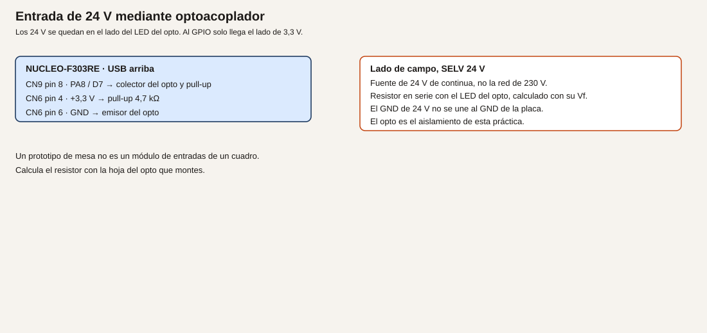
- Cableado.
| Lado |
Conexión |
| Campo |
Fuente 24 V SELV, resistencia calculada, LED del opto. GND de 24 V solo en ese lado |
| Placa |
Colector a CN9 pin 8, PA8 / D7, y a 4,7 kΩ hacia CN6 pin 4 |
| Placa |
Emisor del opto a CN6 pin 6, GND |
| Prohibido |
Unir los dos GND «para que funcione mejor» en esta práctica |
- Cálculos. Ejemplo de plantilla, no un opto concreto: If deseada 5 mA, Vf el de tu hoja.
R = (24 − Vf) / 0,005. Si Vf = 1,2 V, R = 4560 Ω, comercial 4,7 kΩ, e If queda un poco por debajo de 5 mA. Usa tu Vf. Potencia en la resistencia: cerca de 24 V * 5 mA = 0,12 W. Una resistencia de 1/4 W sirve en este ejemplo si la cuenta de tu If no la supera. El lado del GPIO no ve 24 V.
- CubeMX. PA8 entrada. Sin pull interno si el externo de 4,7 kΩ está montado.
- Código. El mismo esquema que B1: nivel bajo significa activo. Imprime
campo 1 o campo 0 por USART2 cuando cambie, con el antirrebote del módulo 5 si el contacto es mecánico.
- Dónde.
main.c.
- Compilar y probar. Con la fuente de 24 V apagada, PA8 debe leer 1. Enciende el lado de campo. PA8 debe leer 0. Mide que en el conector de la Nucleo no hay 24 V: mide PA8 respecto al GND de la placa antes de darlo por bueno.
- Esperado, no medido. El texto cambia con la fuente de campo. El polímetro en PA8 no pasa de 3,3 V. Si pasa, para y revisa el opto: no continúes.
- Fallos. PA8 siempre a 1: el LED del opto no enciende, la resistencia está mal calculada, o el transistor está en el pin que no es. PA8 siempre a 0: colector y emisor cambiados, o un puente entre los dos lados. Has unido los GND: esta práctica deja de ser el ejemplo de aislamiento. Deshaz esa unión.
- Variación. Invierte el sentido en el programa si quieres un 1 lógico cuando el campo está activo. El cable no cambia.
- Criterio. Has medido PA8 por debajo de 3,3 V con el campo encendido y apagado, y los GND no están unidos.
Ejemplo 2. 0–10 V con divisor
- Problema. Leer una señal de 0–10 V en un pin que no admite 10 V.
- Objetivo. A 10 V de entrada, PA1 cerca de 2,5 V. A 12 V, cerca de 3,0 V. Por encima, un límite que impida pasar de 3,3 V.
- Material. R1 = 30 kΩ desde la señal hasta PA1. R2 = 10 kΩ de PA1 a GND. 100 nF de PA1 a GND. Una forma de limitar: diodo Schottky del pin hacia 3,3 V, o no subir la fuente de ensayo por encima de 12 V. Fuente SELV.
- Funcionamiento. El divisor reduce. El ADC del módulo 11 lee PA1. Esto supone GND común. Si la masa de campo no puede unirse a la de la placa, el divisor no aísla: hace falta un módulo aislador, y este ejemplo no lo sustituye.
- Dibujo.
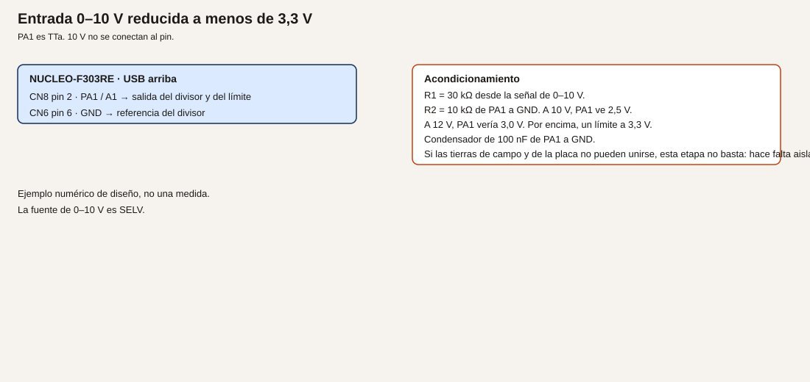
- Cableado.
| Punto |
Destino |
| Señal 0–10 V |
R1 = 30 kΩ |
| R1 y R2 |
CN8 pin 2, PA1 / A1 |
| R2 |
GND de la placa |
| GND de la fuente |
GND de la placa, solo si ese común está permitido |
| 100 nF |
PA1 a GND |
- Cálculos.
Vpin = Vent * 10 / 40. A 10 V, 2,5 V. A 0 V, 0 V. A 12 V, 3,0 V. N a 2,5 V, con la fórmula del módulo 11: 2,5 / 3,3 * 4096 ≈ 3103. Corriente a 10 V: 0,25 mA. Ejemplo de diseño.
- CubeMX. ADC en PA1, como en el módulo 11.
- Código. Imprime milivoltios del pin y la estimación
mv * 4, que es la tensión de origen si el divisor es exactamente 30 kΩ y 10 kΩ. Las tolerancias de las resistencias son el error de esa estimación. No lo llames exactitud de instrumento.
- Dónde.
main.c.
- Compilar y probar. Sube de 0 a 10 V. Mide el pin con el polímetro en cada paso antes de fiarte del número del UART.
- Esperado, no medido. A 10 V de fuente, el pin cerca de 2,5 V. Si no es así, para.
- Fallos. Pin por encima de 3,3 V: divisor al revés. Lectura 0: no hay GND común y lo necesitabas, o R2 abierta. Alguien te pide aislar y tú solo tienes el divisor: no sirve. Cambia de montaje.
- Variación. Entra 5 V. Vpin cerca de 1,25 V. La misma cadena.
- Criterio. El cálculo está hecho antes de aplicar la fuente, y has dicho por escrito si las tierras podían unirse.
Ejemplo 3. 4–20 mA
- Problema. Un lazo de corriente no se conecta a un pin como si fuera una tensión.
- Objetivo. Convertir 4–20 mA en 0,60–3,00 V sobre 150 Ω, y leerlo en PA0, solo si el retorno del lazo puede compartir el GND de la placa.
- Material. Resistencia de 150 Ω. El lazo, alimentado por su fuente, no por un GPIO. Un límite que impida que un fallo supere 3,3 V en el pin: un diodo a 3,3 V, o un módulo aislador si el retorno no puede compartir masa. Si usas un módulo comercial, manda su hoja y no este divisor.
- Funcionamiento. La corriente del lazo atraviesa los 150 Ω. La tensión es
I * 150. PA0 la lee. A 4 mA, 0,60 V. A 20 mA, 3,00 V. Potencia a 20 mA: 0,02^2 * 150 = 0,06 W. Cabe en 1/4 W. A 30 mA por error serían 4,5 V y 0,135 W: por eso hace falta el límite, no porque 20 mA exactos ya quemen la resistencia.
- Dibujo.
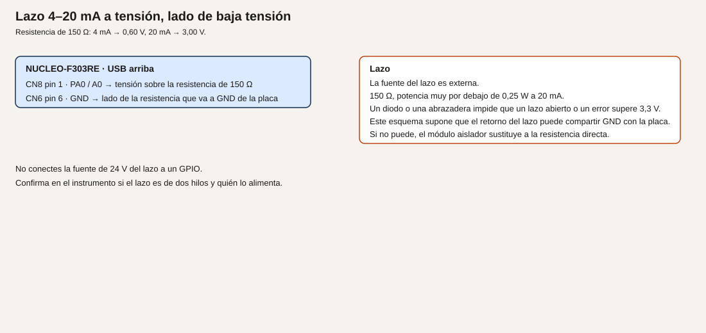
- Cableado.
| Punto |
Destino |
| Lazo, lado de la tensión sobre la resistencia |
CN8 pin 1, PA0 / A0 |
| El otro lado de los 150 Ω |
GND de la placa |
| Retorno del lazo |
Ese mismo GND, solo si el instrumento lo permite |
| Si no lo permite |
No montes esto. Usa un aislador y cita su hoja |
No conectes la fuente de 24 V del lazo a un GPIO.
- Cálculos. 4 mA → 600 mV → N ≈ 0,6 / 3,3 * 4096 ≈ 745. 20 mA → 3000 mV → N ≈ 3724. Inverso:
I_mA = mv / 150. Ejemplo de diseño.
- CubeMX. ADC en PA0. Quita el potenciómetro.
- Código. Imprime milivoltios y
mv * 10 / 15 como décimas de miliamperio, o mv / 150 como miliamperios enteros. Rechaza en el programa una lectura por encima de 3,2 V como fallo de lazo, sin llamarla 22 mA «válidos».
- Dónde.
main.c.
- Compilar y probar. Si tienes un calibrador de lazo, recorre 4, 12 y 20 mA. Si no lo tienes, no simules la corriente con 24 V directos. Puedes probar la resistencia con una corriente limitada de laboratorio que sí sepas acotar, y decir que no era un lazo de instrumento.
- Esperado, no medido. Las tensiones de la tabla, dentro de la tolerancia de la resistencia y de tu referencia. Anota las tuyas.
- Fallos. Más de 3,3 V en PA0: falta el límite o la corriente no es la que crees. Corta. Lectura que no escala: el lazo no cierra por la resistencia, porque el instrumento no comparte masa y lo has forzado. Para.
- Variación. Compara con un módulo aislado de 4–20 mA a 0–3,3 V, si lo tienes, y escribe qué problema de tierras desaparece.
- Criterio. Has dicho si el retorno podía compartir GND, y el pin no ha pasado de 3,3 V.
Resumen
24 V solo al otro lado del opto, masas separadas. 0–10 V por divisor, masas unidas, o si no un aislador. 4–20 mA sobre 150 Ω solo con el retorno permitido, y un límite por encima de 20 mA. Nada de 230 V. Esto no es un equipo de cuadro.
Glosario
| Término |
Definición |
| SELV |
Muy baja tensión de seguridad. La fuente de 24 V del ensayo tiene que serlo |
| Optoacoplador |
Pasa el estado por luz, no por un hilo común |
| Divisor |
Dos resistencias que reducen la tensión. No aíslan |
| Lazo 4–20 mA |
Una corriente que representa la medida. Hay que saber quién la alimenta |
Preguntas
1. ¿Un pin FT admite los 24 V, porque admite más de 3,3 V?
Respuesta. No. El máximo absoluto de un pin FT es 5,5 V en la entrada. 24 V no entran en esa frase.
2. ¿El divisor de 0–10 V aísla?
Respuesta. No. Exige referencia común. Si las tierras no se pueden unir, hace falta otra etapa.
3. ¿150 Ω a 20 mA es una potencia peligrosa para la resistencia?
Respuesta. 0,06 W. El peligro para el pin es una corriente mayor que la prevista, no esa potencia.
Lista de comprobación
- [ ] He medido el pin de 3,3 V con la señal de campo aplicada, antes de fiarme del UART.
- [ ] Los 24 V no tienen un hilo en el GPIO, y los GND del opto no están unidos.
- [ ] He escrito si el 0–10 V y el 4–20 mA podían compartir masa.
- [ ] No he conectado la red de 230 V a nada de este montaje.
Siguiente
Módulo 28: dejar escrito qué se probó, qué se midió y qué falta para salir del laboratorio.
Módulo 28. Pruebas, documentación y prototipo
El montaje que funciona en tu mesa todavía no es un prototipo que otra persona pueda repetir. Hace falta la lista de pruebas, escrita antes de ejecutarlas, el resultado que el diseño esperaba y el resultado que tú mediste, por separado.
No comprobado en hardware. Esta lección no trae medidas. Las columnas «medido» las rellena quien ejecuta.
Objetivos
- Escribir la lista de pruebas de uno de los proyectos P1 a P4 antes de lanzarlas.
- Ejecutarlas y no mezclar lo esperado con lo medido.
- Redactar qué faltaría para salir del laboratorio.
Prerrequisitos
Un proyecto elegido entre los cuatro integradores, o el último módulo que hayas montado de verdad. El cuaderno o un archivo en la carpeta del proyecto. No hace falta un pin nuevo.
Esperado y medido
Analogía. El parte de puesta en marcha de un cuadro tiene dos columnas: lo que el esquema dice y lo que el polímetro dice. Si se escribe solo «correcto», nadie puede repetir la prueba. Si se copia el valor del esquema en la columna del polímetro, la prueba no se ha hecho.
Técnico. Cada prueba tiene un identificador, el montaje, el estímulo, el resultado esperado por el diseño y el sitio donde se anotará la medida. Lo esperado sale de los cálculos de los módulos, marcados como diseño. Lo medido sale de tu mesa y se marca como medido. Lo que no se llegó a hacer se deja en blanco, no se rellena con el esperado. Este repositorio no afirma que el código se haya compilado ni grabado.
Ejemplo 1. La lista, antes de ejecutar
- Problema. Probar «a ver qué pasa» no deja un registro.
- Objetivo. Una tabla de al menos ocho pruebas del proyecto elegido, escrita antes de la primera de ellas.
- Material. El proyecto P1, P2, P3 o P4, aunque todavía no lo ejecutes en este ejemplo.
- Funcionamiento. Cada fila se puede fallar. Si no se puede fallar, no es una prueba. «El LED hace cosas» no sirve. «PA5 está a nivel alto cuando el estado es alarma» sí sirve.
- Dibujo. No hay.
- Cableado. El del proyecto elegido, citado con el nombre del SVG, no redibujado de memoria.
- Cálculos. Los umbrales numéricos se copian del proyecto: consigna, RPM, registro Modbus, corriente del LED. Si el proyecto no tiene el número, la prueba no se escribe todavía.
- CubeMX. No se cambia. Se anota la versión de la extensión, del paquete STM32CubeF3 que se haya descargado y el nombre del
.ioc.
- Código. No se añade lógica. Se añade un archivo
PRUEBAS.md en la carpeta del proyecto, fuera de Core si no quieres que nadie lo confunda con un fuente. Plantilla:
| Id | Estímulo | Esperado por diseño | Medido | Fecha |
| --- | --- | --- | --- | --- |
| T1 | | | | |
Ocho filas vacías en «Medido».
- Dónde. Junto al proyecto, no dentro de una zona que CubeMX borre.
- Compilar y probar. No se graba nada en este ejemplo. Se revisa que cada fila tenga un esperado comprobable.
- Esperado, no medido. La tabla existe y la columna medido está vacía. Ese vacío es el criterio de que no has copiado el diseño.
- Fallos. Filas que dicen «funciona». Umbrales que no están en el código. Pruebas de 230 V o de agua junto a la placa: no pertenecen a este curso.
- Variación. Añade una fila que deba fallar a propósito, como el registro Modbus 1001 rechazado, si ese es tu proyecto.
- Criterio. Otra persona puede ejecutar la tabla sin preguntarte qué querías decir.
Ejemplo 2. Ejecutar y separar columnas
- Problema. Rellenar la tabla sin maquillarla.
- Objetivo. Ejecutar las filas y escribir en «Medido» solo lo que hayas observado. Donde no haya instrumento, escribir «no medido».
- Material. El montaje real del proyecto, el polímetro y el monitor serie.
- Funcionamiento. Una fila, una acción, una anotación. Si el resultado no coincide con el esperado, la fila se queda en fallo y se anota la diferencia. No se edita el esperado para que coincida.
- Dibujo. El del proyecto.
- Cableado. El de la tabla de cableado del proyecto, comprobado pin a pin antes de la primera prueba de señal.
- Cálculos. No se rehacen durante la prueba, salvo para explicar un fallo después.
- CubeMX. El del proyecto. Anota si regeneraste a mitad del ensayo: esa regeneración puede cambiar el resultado.
- Código. El del proyecto. Si corriges un fallo, la fila se repite con un id nuevo (
T3b), no se borra la fila fallida.
- Dónde. El mismo
PRUEBAS.md.
- Compilar y probar. Graba y recorre la tabla. Esto sí es una ejecución tuya. Este texto sigue sin decir que se haya hecho.
- Esperado, no medido. La columna medido deja de estar vacía en las filas que hiciste, y sigue vacía o dice «no medido» en las que no.
- Fallos. Copiar 3,30 V porque «el regulador es de 3,3 V» sin poner la punta. Borrar un fallo. Medir 24 V en el GPIO y seguir: eso es un fallo de cableado, se corta y se anota.
- Variación. Pide a otra persona que ejecute una fila leyendo solo el archivo. Si necesita llamarte, la fila no estaba escrita.
- Criterio. Se distingue, en cada fila, el diseño de la medida.
Ejemplo 3. Qué falta para salir del laboratorio
- Problema. Un prototipo de mesa se parece poco a un equipo que se deja funcionando.
- Objetivo. Una lista de ausencias, honesta, al final de
PRUEBAS.md.
- Material. Ninguno nuevo.
- Funcionamiento. Recorre esta lista y marca qué tienes y qué no. No se compra nada en este ejemplo. Se escribe.
- Alimentación distinta del USB del PC, con el límite de corriente que ya calculaste.
- Conector distinto de los cables de protoboard.
- Aislamiento, si el módulo 27 dijo que las tierras no se podían unir y aún no hay aislador.
- Watchdog probado con la fila correspondiente, no solo activado en CubeMX.
- Versión del firmware identificable: un texto al arrancar con un número que tú cambias cuando cambias el programa.
- Lo que este curso no cubre y el equipo necesitaría: marcado, ensayo de aislamiento, bornero, temperatura ambiente, un lazo de verdad.
- Dibujo. No hay.
- Cableado. No se añade.
- Cálculos. No hay.
- CubeMX. Anota la versión. No hace falta cambiarla.
- Código. Si aún no hay un texto de versión, añádelo una vez en
USER CODE BEGIN 2:
static const uint8_t version[] = "firmware 0.1\r\n";
HAL_UART_Transmit(&huart2, (uint8_t *)version, sizeof(version) - 1U, 100);
Ese 0.1 es una etiqueta tuya. Súbela cuando cambies el comportamiento. No demuestra una validación.
- Dónde.
PRUEBAS.md y, si añades la línea, main.c.
- Compilar y probar. La línea de versión aparece al pulsar reset. El archivo de pruebas tiene la lista de ausencias.
- Esperado, no medido. Quien lea el archivo sabe qué no está demostrado. No hay una frase que diga que el prototipo está listo para una máquina.
- Fallos. Escribir «listo para producción» porque las ocho filas de mesa pasaron. Esas filas no cubren la lista de ausencias.
- Variación. Separa «lo cerraré en el laboratorio» de «esto ya no es una práctica de este curso».
- Criterio. La última página no promete un equipo de cuadro.
Resumen
La tabla se escribe antes, se mide después y no se maquilla. La versión se imprime al arrancar. Lo que falta para salir del laboratorio se enumera, incluido lo que este curso no pretende cubrir.
Glosario
| Término |
Definición |
| Esperado |
Lo que el diseño calcula o especifica |
| Medido |
Lo que el instrumento o el monitor mostraron en tu mesa |
| No medido |
La prueba que no se hizo. No se rellena con el esperado |
| Versión |
La etiqueta que tú cambias cuando cambia el programa |
Preguntas
1. ¿Una fila «correcto» vale?
Respuesta. No. Tiene que decir qué número o qué nivel se esperaba y cuál se vio.
2. ¿Puedo borrar la fila que falló si ya la corregí?
Respuesta. No. Se añade otra con el resultado nuevo. La fallida explica por qué cambiaste el programa.
3. ¿Ocho pruebas de mesa convierten el montaje en un producto?
Respuesta. No. La lista de ausencias del ejemplo 3 sigue siendo cierta.
Lista de comprobación
- [ ]
PRUEBAS.md existe y se escribió antes de ejecutar.
- [ ] La columna medido no copia el esperado en las filas que no hice.
- [ ] Hay un texto de versión al arrancar, o he anotado que aún no.
- [ ] La última sección dice qué falta, sin llamar a esto un equipo terminado.
Siguiente
Los cuatro proyectos integradores usan estos módulos. Empieza por el que tus materiales permitan: P1 temperatura, P2 tanque, P3 motor o P4 nodo Modbus.
Proyecto P1. Estación de temperatura
Una estación de mesa: un sensor de 3,3 V, el valor en una pantalla I2C y una alarma por umbral. No es un registro de temperatura de un proceso industrial. La exactitud es la de la hoja del sensor que montes.
No comprobado en hardware.
Qué reúne
Módulos 5, 11, 13 y 17. El umbral se puede guardar con el módulo 24 cuando quieras que sobreviva al USB. El módulo 28 deja la tabla de pruebas.
Material
- TMP36 en PB0, si usas la fórmula del módulo 11, o el MCP9808 en el I2C si prefieres el sensor digital. Elige uno y no mezcles las dos fórmulas.
- OLED SSD1306 a 3,3 V en PB8/PB9, si el barrido del módulo 13 la encontró.
- LED de alarma con su resistencia en PC7, o el transistor del módulo 10 si la alarma es un zumbador. No los dos en el mismo pin. PC7 aquí es el LED. El zumbador, si lo hay, va por el transistor en PB5 y no coincide con el ámbar del semáforo.
- USART2 para el diagnóstico, aunque haya pantalla.
Pines
| Función |
Pin |
Notas |
| Temperatura analógica |
PB0, A3 |
Solo si el sensor es el TMP36 u otro de 0 a 3,3 V |
| Temperatura I2C |
PB8, PB9 |
MCP9808, dirección según la hoja |
| Pantalla |
PB8, PB9 |
Otra dirección en el mismo bus |
| Alarma luminosa |
PC7 |
Resistencia calculada |
| Informe |
PA2, PA3 |
Puerto virtual |
PA0 queda libre. No pongas el potenciómetro a la vez que un 4–20 mA.
Ejemplo 1. Medir y mostrar el número
- Problema. Ver la temperatura sin el PC.
- Objetivo. Leer el sensor elegido y sacar el número por USART2 y, si la pantalla está, una franja o un texto mínimo.
- Material. El sensor y, si ya funciona, la OLED del módulo 13.
- Funcionamiento. Un paso cada 500 ms. La fórmula es la del módulo del sensor, no una media de las dos. La pantalla, si no tienes fuente de texto, puede mostrar la franja del módulo 13 como «vivo» y el número queda en el UART. Escribir dígitos en el SSD1306 es una ampliación: un mapa de 8×8 por dígito basta, y no se incluye aquí una fuente entera.
- Dibujo. TMP36 o I2C, el que corresponda. No los dos sensores a la vez salvo que documentes cuál manda.
- Cableado. El del módulo que elegiste. 3,3 V. GND común en el lado de la placa.
- Cálculos. Los de la hoja. Umbral todavía no.
- CubeMX. ADC3 en PB0 o I2C1 en PB8/PB9, USART2, PC7 salida.
- Código. Reúne
leer del módulo 11 o leer_mcp9808 del módulo 13. Imprime T cada medio segundo con HAL_GetTick. No bloquees 500 ms si más adelante la alarma tiene que ser ágil: espera con el tick.
- Dónde.
main.c o temperatura.c incluido en CMake, como en el módulo 17.
- Compilar y probar. Compara con un termómetro de la sala.
- Esperado, no medido. Un valor cercano a la sala. Anótalo en
PRUEBAS.md como medida tuya.
- Fallos. Los de los módulos 11 y 13. Pantalla negra con UART correcto: la alarma de datos puede esperar; no subas la alimentación de la OLED a 5 V para «arreglarla».
- Variación. Media de 8 muestras del módulo 19 si la lectura salta. El retraso de esa media se anota.
- Criterio. Sabes qué hoja justifica el número que imprimes.
Ejemplo 2. Umbral con estados
- Problema. Un LED que sigue a cada cuenta es un parpadeo, no una alarma.
- Objetivo. Reposo, prealarma y alarma, como en el módulo 17. El umbral de fábrica es 30 °C. Dos segundos por encima pasan a alarma y encienden PC7.
- Material. El del ejemplo 1. Puedes subir la temperatura con el dedo. No uses un soldador ni una llama.
- Funcionamiento.
fuera es «la temperatura es mayor que el umbral». El resto de la máquina no cambia.
- Dibujo. LED en PC7: cable-led-pc7.svg.
- Cableado. El LED con su resistencia. PC7 no es el sensor.
- Cálculos. 30 °C y 2000 ms son de diseño de esta práctica. Cámbialos en un solo sitio, una constante.
- CubeMX. Sin pines nuevos.
- Código.
alarma_paso del módulo 17, con fuera calculado desde la temperatura en décimas para no comparar flotantes a ciegas: fuera = (decimas > 300) ? 1U : 0U si la unidad es décimas de grado. Ajusta la escala a la función que ya tengas y documéntala.
- Dónde.
alarma.c y la lectura en otro archivo, o los dos pasos en main si aún no partes el proyecto.
- Compilar y probar. Por debajo del umbral, PC7 apagado. Mantén el sensor por encima dos segundos: PC7 encendido. Al bajar, se apaga al volver a reposo.
- Esperado, no medido. Ese comportamiento. El tiempo se puede contar con el reloj de pared. Anótalo.
- Fallos. Enciende al instante: no estás en prealarma. No apaga: la transición de vuelta no mira
fuera. Umbral en otra unidad: 30 cuentas de ADC no son 30 °C.
- Variación. Histéresis de 1 °C: se entra a 30 y se sale a 29, para no oscilar. Es un estado más, o una comparación distinta según el estado actual.
- Criterio. PC7 solo está encendido en el estado de alarma.
Ejemplo 3. Umbral que se guarda
- Problema. Al quitar el USB, el umbral vuelve al 30 de fábrica aunque lo hubieras cambiado.
- Objetivo.
+, - y g del módulo 24, aplicados al umbral en décimas o en grados enteros.
- Material. El monitor serie.
- Funcionamiento. La RAM tiene el umbral de trabajo.
g lo escribe en la última página. Al arrancar, si la marca es válida y el valor está entre 0 y 80 °C, se usa. Si no, 30 °C. El límite 0 a 80 es de esta práctica, para rechazar una Flash corrupta.
- Dibujo. No hay cable nuevo.
- Cableado. No hay.
- Cálculos. Fábrica 30. Rango 0 a 80. Dirección
PARAM_ADDR del módulo 24.
- CubeMX. Sin cambios. No actives una protección de la Flash.
- Código.
flash_leer y flash_guardar, y el parser de un carácter. El paso de la alarma usa la variable, no la constante.
- Dónde.
main.c, USER CODE.
- Compilar y probar. Cambia el umbral, no pulses
g, quita el USB: vuelve a 30 o al último guardado. Pulsa g, quita el USB: vuelve el nuevo, si estaba en rango.
- Esperado, no medido. Lo que anotes en la tabla del módulo 28.
- Fallos. Los del módulo 24, más un umbral de 30 cuentas interpretado como grados. Imprime la unidad en el texto.
- Variación. La pantalla muestra el umbral además de la medida, si ya tienes dígitos. Si no, el UART basta.
- Criterio. La alarma y la memoria no se pisan el pin, y el informe dice la exactitud que no tienes.
Pruebas mínimas
| Id |
Estímulo |
Esperado por diseño |
| T1 |
Sensor a temperatura de la sala |
Texto cercano al termómetro de la sala. La diferencia se anota, no se tapa |
| T2 |
Dedo sobre el sensor |
El número sube |
| T3 |
Por debajo del umbral |
PC7 apagado |
| T4 |
Por encima, menos de 2 s |
PC7 apagado |
| T5 |
Por encima, más de 2 s |
PC7 encendido |
| T6 |
g y quitar USB |
El umbral se conserva |
| T7 |
Valor fuera de 0 a 80 en la Flash |
Se usa 30 |
| T8 |
Pantalla, si está montada |
Sigue a 3,3 V y no bloquea el UART |
Qué no demuestra
No hay calibración, no hay registro continuo, no hay caja y no hay una exactitud mejor que la de la hoja. El módulo 28 pide escribirlo así.
Proyecto P2. Tanque simulado
El nivel es una tensión de 0 a 3,3 V, no un depósito con agua junto a la placa. La bomba es un LED o un relé de baja tensión que representa el contactor. Hay marcha, paro y fallo. El watchdog del módulo 23, si ya está dado, reinicia un cuelgue. No se bombea líquido.
No comprobado en hardware.
Qué reúne
Módulos 11, 17, 20 y 23. El PID es opcional: el ejemplo 1 es una marcha/paro con histéresis, que es el control que este tanque de juguete necesita. El ejemplo 3 muestra el PID del módulo 20 sobre el mismo modelo, no sobre agua.
Material
- Potenciómetro de 10 kΩ en PA0, como nivel de 0 a 100 %. O el divisor del módulo 11 si la tensión ya viene limitada.
- LED «bomba» en PC7 con su resistencia, o el transistor y un relé de baja tensión en PB5. No un contactor de red.
- B1 como paro de emergencia de la práctica: pulsado, la bomba se queda en fallo hasta un rearme que tú definas.
- USART2 para el estado.
Pines
| Función |
Pin |
| Nivel 0 a 3,3 V |
PA0, A0 |
| Bomba de juguete |
PC7 LED, o PB5 por transistor |
| Paro |
PC13, B1 |
| Informe |
USART2 |
PA0 no lleva a la vez el lazo de 4–20 mA del módulo 27.
Ejemplo 1. Marcha y paro por nivel
- Problema. Representar un tanque que pide llenado sin montar un tanque.
- Objetivo. Por debajo del 40 % la bomba se enciende. Por encima del 80 % se apaga. Entre medias, se queda como estaba.
- Material. El potenciómetro y el LED de PC7.
- Funcionamiento.
porcentaje = N * 100 / 4095, entero. Estados PARO, MARCHA, FALLO. De PARO se pasa a MARCHA si el nivel es menor que 40 y no hay paro de emergencia. De MARCHA se pasa a PARO si el nivel es mayor que 80. B1 pasa a FALLO desde cualquiera y apaga la bomba. Rearme: soltar B1 y recibir r por el UART, para que no rearranque solo al soltar. Esa elección se escribe para que no sea un rearme involuntario.
- Dibujo. Potenciómetro y LED. Si usas relé, transistor y no el LED de PC7 a la vez si decides que la bomba es solo el relé. Puedes dejar el LED como lámpara de marcha y el relé como «contactor» solo si los pines son distintos: LED en PC7 y bobina por PB5.
- Cableado. 3,3 V en el potenciómetro. Bobina, si la hay, como en el módulo 10, sin red eléctrica.
- Cálculos. 40 % de 4095 ≈ 1638. 80 % ≈ 3276. Histéresis de 40 puntos porcentuales, de diseño, para no oscilar en el umbral.
- CubeMX. ADC1 en PA0. PC7 salida. PC13 entrada. USART2.
- Código. Un
enum y tanque_paso(), llamado desde el bucle con el tiempo de HAL_GetTick. Imprime el estado cuando cambie, no cien veces por segundo.
- Dónde.
tanque.c si ya partes archivos. Si no, USER CODE de main.c, y el módulo 17 explica cómo sacarlo luego.
- Compilar y probar. Gira el potenciómetro despacio de abajo arriba y al revés.
- Esperado, no medido. El LED enciende por debajo de 40, sigue encendido hasta pasar de 80 y se apaga. No parpadea en el 40.
- Fallos. Oscila: no hay histéresis, los dos umbrales son iguales. No enciende: el porcentaje está al revés porque el potenciómetro está girado, y lo aceptas invirtiendo la escala en un solo sitio. B1 no lleva a fallo: lees el nivel alto como pulsado.
- Variación. Añade un tiempo máximo de marcha de 20 s. Si no se alcanza el 80, pasa a FALLO. Es un estado, no un
HAL_Delay de 20 s.
- Criterio. Puedes rellenar, con el potenciómetro, las filas de marcha, paro e histéresis sin agua y sin 230 V.
Ejemplo 2. Fallo y watchdog
- Problema. Un programa colgado dejaría la bomba de juguete en el estado que tuviera, para siempre.
- Objetivo. El IWDG se recarga solo en el paso del tanque. Un cuelgue provocado reinicia, y el arranque deja la bomba apagada hasta el rearme.
- Material. El del ejemplo 1.
- Funcionamiento. Al arrancar, el estado es FALLO si la bandera del IWDG está puesta, y PARO si no. La bomba se escribe apagada en
USER CODE BEGIN 2 antes de entrar al bucle. Recargar el IWDG dentro de tanque_paso vigila que ese paso siga llamándose. No lo recargues en un temporizador aparte.
- Dibujo. No hay cable nuevo.
- Cableado. El mismo.
- Cálculos. El timeout del módulo 23, aproximado por el LSI. El paso se llama mucho antes, cada vuelta del bucle.
- CubeMX. IWDG como en el módulo 23. Recuerda que un punto de ruptura largo reinicia.
- Código.
HAL_IWDG_Refresh al final de tanque_paso. Una letra c entra en while (1) {} para el ensayo de cuelgue. Quítela del uso normal o déjala documentada como ensayo.
- Dónde. El paso y la zona 2.
- Compilar y probar. Marcha normal: no se reinicia. Envía
c: hay reinicio y la bomba queda apagada, estado FALLO, hasta r.
- Esperado, no medido. La bomba no se queda encendida a través del reinicio. Compruébalo mirando el LED durante el hueco.
- Fallos. La bomba vuelve a marcha sola: el arranque no mira la bandera y el nivel sigue bajo. El
if inicial tiene que mandar más que el nivel, hasta el rearme.
- Variación. Imprime la causa, como en el módulo 23, además del estado.
- Criterio. Después de
c, hace falta r. El LED no queda encendido por un reset.
Ejemplo 3. PID sobre el modelo, no sobre el agua
- Problema. Querer «control continuo» sin fingir que el potenciómetro es un depósito.
- Objetivo. Aplicar el PID del módulo 20 a la planta de mentira, usando el potenciómetro solo como consigna de nivel, de 0 a 1000 unidades de juguete. La salida del PID se muestra en el ciclo de trabajo del LED, como esfuerzo de bomba, y el «nivel» que el PID ve es la planta interna, no PA0.
- Material. El LED en PC7 como PWM. El potenciómetro como consigna.
- Funcionamiento. Se explica en el informe: PA0 no es el nivel del proceso en este ejemplo. Es la orden del operario. El proceso es la fórmula del módulo 20. Así no se cierra un lazo mentiroso «potenciómetro que se lee a sí mismo».
- Dibujo. Los mismos cables. El significado cambia y se escribe al lado.
- Cableado. PWM del módulo 10 en PC7. El LED deja de ser marcha/paro digital. No uses el mismo pin como GPIO y como PWM sin cambiar el proyecto.
- Cálculos. Consigna = N del ADC escalado a 0–1000. Planta y PID como en el módulo 20, con límite y anti-windup. Periodo 50 ms.
- CubeMX. TIM3 canal 2 en PC7. ADC en PA0.
- Código.
pid_paso y la planta interna. Imprime consigna, planta y salida. El estado FALLO de B1 fuerza la salida a 0 y no integra.
- Dónde.
main.c o tanque.c.
- Compilar y probar. Mueve el potenciómetro. La planta del texto debe acercarse a la consigna y el brillo debe seguir a la salida, no al potenciómetro de forma instantánea.
- Esperado, no medido. Un acercamiento en el monitor. El brillo no es un nivel de líquido.
- Fallos. El lazo «controla» el propio ADC del potenciómetro: has usado PA0 como medida y como consigna. Sepáralos. Oscilación: baja Kp, como en el módulo 20.
- Variación. Vuelve al ejemplo 1, que es el que representa el tanque. Deja el PID como ensayo de regulador, no como el control del proyecto.
- Criterio. El informe dice que no hay depósito, que no hay agua y que el PID de este ejemplo no actúa sobre una planta física.
Pruebas mínimas
| Id |
Estímulo |
Esperado por diseño |
| T1 |
Nivel simulado 20 % |
Marcha, LED o bobina activos |
| T2 |
Subir del 40 al 70 |
Sigue en marcha |
| T3 |
Pasar de 80 |
Paro |
| T4 |
Bajar del 80 al 50 |
Sigue en paro |
| T5 |
B1 durante la marcha |
Fallo y bomba off |
| T6 |
Soltar B1 |
Sigue en fallo hasta r |
| T7 |
Letra c |
Reinicio por IWDG y bomba off |
| T8 |
Mirar la mesa |
No hay líquido ni red eléctrica |
Qué no demuestra
No hay tanque, no hay caudal y no hay contactor de máquina. El relé de baja tensión representa al contactor en el parte, no lo sustituye.
Proyecto P3. Monitor de motor
Cuenta de pulsos o encoder a RPM, una entrada analógica de 0 a 3,3 V que representa una corriente mediante un sensor de laboratorio, y alarmas por el puerto serie. El motor, si se usa el del módulo 10, es el servo educativo o un motor pequeño con driver externo. No se supervisa un motor de red.
No comprobado en hardware.
Qué reúne
Módulos 7, 11 y 16. El servo del módulo 10 es opcional y no es el motor vigilado: es una carga de juguete aparte. No lo alimentes desde un pin.
Material
- Encoder de 3,3 V en PB6 y PB7, o el contador de pulsos del módulo 16 si no hay encoder.
- Una tensión de 0 a 3,3 V en PA1 que represente la corriente. Puede ser el potenciómetro, y entonces el informe dice «corriente simulada». Si tienes un sensor de corriente de laboratorio cuya salida quepa en 0 a 3,3 V, usa su hoja y no la escala del potenciómetro.
- USART2 para las alarmas.
- Opcional: servo en PB10, con 5 V externos, solo como actuador de demostración. No es el eje que el encoder mide, salvo que mecánicamente lo acoples y lo escribas.
Pines
| Función |
Pin |
| Encoder A |
PB6, D10, TIM4_CH1 |
| Encoder B |
PB7, CN7 pin 21, TIM4_CH2 |
| Corriente simulada o sensor |
PA1, A1, TTa |
| Alarma luminosa |
PA5, LD2, o PC7 si quieres un LED propio |
| Texto |
USART2 |
| Servo opcional |
PB10, señal nada más |
PB6 no es el NSS del SPI. PA1 no es el 0–10 V del módulo 27 a la vez.
Ejemplo 1. RPM y una alarma de velocidad
- Problema. Ver la velocidad y un aviso si se pasa de un tope.
- Objetivo. Imprimir RPM cada segundo y encender LD2 si se superan 100 RPM de diseño.
- Material. El encoder o el pulsador de cuentas, con N escrito.
- Funcionamiento. La fórmula del módulo 16. Umbral 100 RPM, de juguete. LD2 se enciende por encima y se apaga por debajo de 90, para no parpadear en el borde.
- Dibujo. Encoder.
- Cableado. El del módulo 16. 3,3 V. Pull-up solo si la salida es abierta.
- Cálculos.
RPM = delta * 60 / marcas_por_vuelta en una ventana de 1 s. 100 RPM y 90 RPM son el umbral y la histéresis. N sale de la hoja.
- CubeMX. TIM4 encoder. PA5 salida. USART2.
- Código. El bucle de ventana del módulo 16, más:
if (rpm > 100U) { HAL_GPIO_WritePin(GPIOA, GPIO_PIN_5, GPIO_PIN_SET); }
if (rpm < 90U) { HAL_GPIO_WritePin(GPIOA, GPIO_PIN_5, GPIO_PIN_RESET); }
- Dónde.
main.c.
- Compilar y probar. Gira despacio y más deprisa. Mira el texto y LD2.
- Esperado, no medido. LD2 sigue el umbral. La RPM es coherente con N y con lo que haces a ojo. No hay tacómetro patrón en el texto.
- Fallos. RPM enormes: N = 1 con un encoder de muchas marcas, o rebotes. LD2 no se apaga: falta la histéresis y el ruido cruza 100. Encoder de 24 V: no se conecta.
- Variación. Imprime también el sentido, si usas la cuadratura.
- Criterio. El informe dice N, la ventana y el umbral.
Ejemplo 2. La entrada que representa la corriente
- Problema. Añadir una segunda magnitud sin llamarla corriente de un motor de red.
- Objetivo. Leer PA1 y imprimir «corriente simulada» en una escala que tú declares.
- Material. Potenciómetro de 10 kΩ entre 3,3 V y GND, cursor a PA1. Declara: 0 V representa 0 A y 3,3 V representa 5 A de un motor de juguete que no está ahí. Es una escala de pantalla, no un shunt.
- Funcionamiento.
cents = mv * 500 / 3300 son centésimas de amperio si 3,3 V son 5,00 A. Imprímelo con esa unidad en el texto: sim 1.25 A. Alarma si pasa de 4,00 A de esa escala, otro mensaje, sin apagar un motor que no existe.
- Dibujo. El del divisor no hace falta si es un potenciómetro: mismo esquema que PA0, pero en CN8 pin 2.
- Cableado. CN6 pin 4, CN6 pin 6, CN8 pin 2. Nada de shunt en un cable de red.
- Cálculos. 4,00 A de escala son 4/5 * 3,3 V = 2,64 V, N ≈ 2,64/3,3*4096 ≈ 3277. Por debajo de 3,50 A (histéresis) se retira el aviso.
- CubeMX. ADC en PA1. Puede ser el mismo ADC1 si no choca con otro canal, leyendo en la ventana de un segundo o cada 20 ms.
- Código. Una función
leer_pa1 como la del módulo 11. No uses la fórmula del TMP36.
- Dónde. El mismo bucle que ya imprime RPM, para que las dos líneas salgan juntas cada segundo.
- Compilar y probar. Gira el potenciómetro. El texto cambia. LD2 de velocidad no tiene por qué seguir a este potenciómetro.
- Esperado, no medido. 0 V cerca de 0 A de escala y 3,3 V cerca de 5 A de escala. Mide el pin si quieres comprobar el ADC. La corriente de un motor no se ha medido.
- Fallos. Llamar al valor «corriente del motor» en el informe. Corrígelo. Pin por encima de 3,3 V: el potenciómetro está a 5 V. Páralo.
- Variación. Si el sensor es real y de 3,3 V, sustituye la escala por la de su hoja y cambia el rótulo del texto.
- Criterio. El rótulo dice «simulada» mientras el sensor no esté.
Ejemplo 3. Las dos alarmas, y el servo aparte
- Problema. No mezclar el actuador con la medida.
- Objetivo. Si hay alarma de velocidad o de escala de corriente, el texto lo dice. El servo, si está montado, se queda en su posición media y no se usa como «el motor vigilado» salvo que el encoder esté en su eje y lo escribas.
- Material. Opcional, el servo del módulo 10.
- Funcionamiento. Una función
alarma_texto imprime vel, sim o ok. El servo recibe el pulso de 1,5 ms y no cambia en este proyecto. Así se ve que la señal de PB10 no es la medida.
- Dibujo. Servo, solo si lo montas. 5 V externos.
- Cableado. El del módulo 10 para el servo. GND común. Señal en PB10.
- Cálculos. Pulso medio del módulo 10: 750 cuentas con el prescaler que ya calculaste. No lo recalcules distinto sin decirlo.
- CubeMX. TIM2 canal 3 en PB10, además de TIM4. Comprueba que los dos timers caben en el proyecto. TIM3 no hace falta si el LED de alarma es PA5 por GPIO.
- Código.
HAL_TIM_PWM_Start y un compare fijo. Las alarmas no escriben ese compare.
- Dónde.
main.c.
- Compilar y probar. Provoca cada alarma por separado y las dos juntas. El servo no debe moverse.
- Esperado, no medido. El texto distingue las causas. El servo quieto demuestra que no está en el lazo.
- Fallos. El servo se alimenta del 3,3 V y la placa se cae. Pásalo a la fuente externa. El encoder cuenta el ruido del servo: sepáralos físicamente y, si el encoder no está acoplado, dilo.
- Variación. Quita el servo del todo. El monitor de RPM y de escala sigue siendo el proyecto.
- Criterio. El informe no habla de un motor de red ni de un variador.
Pruebas mínimas
| Id |
Estímulo |
Esperado por diseño |
| T1 |
Eje parado |
RPM 0, LD2 apagado |
| T2 |
Giro por encima de 100 RPM, con tu N |
LD2 encendido y texto de velocidad |
| T3 |
Bajar de 90 RPM |
LD2 apagado |
| T4 |
PA1 a 0 V |
Escala cerca de 0, rótulo «simulada» si es potenciómetro |
| T5 |
PA1 cerca de 3,3 V |
Escala cerca de 5 A de la convención, aviso por encima de 4 |
| T6 |
Las dos a la vez |
El texto cita las dos causas |
| T7 |
Servo, si está |
Quieto en el pulso medio, 5 V externos |
| T8 |
Inspección |
No hay motor de red |
Qué no demuestra
No hay par, no hay corriente real de un devanado y no hay protección de una máquina. El encoder de 24 V y el variador quedan fuera.
Proyecto P4. Nodo de adquisición
Varias medidas por el ADC, con DMA si el módulo 15 está en el proyecto, parámetros en la Flash y publicación por Modbus RTU. El maestro es la segunda estación del módulo 21. El nodo no incluye Ethernet ni Wi-Fi: esta placa no los tiene.
No comprobado en hardware.
Qué reúne
Módulos 15, 21 y 24. El módulo 28 es la tabla de pruebas del nodo.
Material
- Potenciómetro en PA0, como canal 0.
- Una segunda tensión de 0 a 3,3 V en PA1, canal 1. Puede ser otro potenciómetro o el divisor ya limitado.
- Transceptor RS-485 de 3,3 V, DE en PC6, USART1 en PA9 y PA10. El ESP32 desconectado.
- USART2 como consola local.
- El maestro Modbus del módulo 21.
Pines
| Función |
Pin |
| Canal 0 |
PA0 |
| Canal 1 |
PA1 |
| RS-485 |
PA9, PA10, PC6 |
| Consola |
USART2 |
| Parámetros |
Flash, sin pin |
PA9 y PA10 no llevan el ESP32 a la vez. PA0 no lleva el 4–20 mA a la vez que el potenciómetro.
Mapa de registros
Decisión de este proyecto, no de la especificación Modbus:
| Registro |
Acceso |
Contenido |
| 0 |
Lectura |
Media de 8 muestras de PA0, en cuentas de 0 a 4095 |
| 1 |
Lectura |
Media de 8 muestras de PA1 |
| 2 |
Lectura y escritura |
Umbral de PA0, de 0 a 4095. De fábrica 2000. Se guarda en Flash solo con la función de escritura, no en cada muestra |
| 3 |
Lectura |
1 si la media de PA0 supera el umbral, 0 si no |
Escribir un umbral mayor que 4095 se rechaza con excepción, como el 1001 del módulo 21.
- Problema. Tener las dos medidas antes de hablar con el maestro.
- Objetivo. Llenar dos medias de 8 muestras y imprimirlas por USART2.
- Material. Los dos potenciómetros o el que tengas en PA0 y una tensión limitada en PA1.
- Funcionamiento. Un solo ADC, dos canales en secuencia, o dos lecturas por encuesta una detrás de otra. El DMA del módulo 15 se usa si dejas un solo canal en el bloque; con dos canales, la encuesta es más clara y el DMA puede quedar para el canal 0 en un segundo paso. No actives el modo dual intercalado (ES0261). Periodo 20 ms.
- Dibujo. PA0. PA1 con el mismo tipo de potenciómetro a 3,3 V, en CN8 pin 2.
- Cableado. Extremos a 3,3 V y GND. Cursores a A0 y A1. Pins TTa.
- Cálculos. Media de 8, como en el módulo 19. Retraso de unas 4 muestras, que a 20 ms son unos 80 ms. Se dice en el informe.
- CubeMX. ADC1 con los dos canales en scan, o dos configuraciones que cambies en código. Lo que tu versión genere con menos sorpresas: encuesta de PA0 y luego de PA1. USART2.
- Código. Dos ventanas del módulo 19. Imprime
c0 y c1 cada 200 ms.
- Dónde.
main.c.
- Compilar y probar. Mueve cada potenciómetro y comprueba que la columna correcta cambia.
- Esperado, no medido. Los canales no se cruzan. Si se cruzan, el orden de muestreo no es el que crees.
- Fallos. Siempre el mismo valor en los dos: los dos cursores están en el mismo pin, o el ADC no cambia de canal. Revisa la configuración de rango y de canal en el HAL, que en esta familia pide
HAL_ADC_ConfigChannel antes de cada conversión si no estás en scan.
- Variación. DMA en PA0 únicamente, como en el módulo 15, y PA1 por encuesta. El LED de PA5 puede parpadear para repetir el criterio de que el bucle vive.
- Criterio. Puedes señalar qué registro será cada canal.
Ejemplo 2. Publicar por Modbus
- Problema. El PC de la consola no es el maestro de campo.
- Objetivo. El maestro lee los registros 0 y 1, y ve las medias.
- Material. El transceptor y el maestro del módulo 21. 120 Ω en los dos extremos.
- Funcionamiento. El parser del módulo 21, ampliado a dos registros de lectura. La consola sigue en USART2. DE en PC6 se pone a 1 solo durante la respuesta.
- Dibujo. RS-485.
- Cableado. El del módulo 21. Transceptor de 3,3 V. Sin MAX485 a 5 V en el pin.
- Cálculos. Función 0x03, esclavo 1, registros 0 y 1. CRC con la misma función ya comprobada.
- CubeMX. USART1 y PC6, además del ADC.
- Código. Al armar la respuesta de un registro, el valor es la media de 16 bits, byte alto primero. No envíes el float. No actualices la Flash aquí.
- Dónde. El parser, en
modbus.c si lo sacaste del main, con las medias en variables volatile si un día las escribe una interrupción. En encuesta, el bucle puede escribirlas él mismo.
- Compilar y probar. Lee desde el maestro mientras giras PA0. USART2 puede imprimir lo mismo para comparar.
- Esperado, no medido. El maestro y la consola se parecen, con el retraso de la media y el del maestro. Anota la diferencia, no la tapes.
- Fallos. Los del módulo 21: A/B, DE, velocidad, CRC. El ESP32 sigue pinchado: quítalo. El maestro lee 40001 y tu código contesta solo a la dirección 0: documenta la numeración.
- Variación. Una sola petición de dos registros (
cantidad = 2) y una respuesta con cuatro bytes de datos. El byte count es 4.
- Criterio. El maestro ve los dos canales sin usar el COM virtual como bus de campo.
Ejemplo 3. El umbral se escribe y se guarda
- Problema. El umbral no puede volver a 2000 cada vez que se va la luz, ni escribirse en cada muestra.
- Objetivo. La función 0x06 sobre el registro 2 guarda en RAM y en Flash si el valor es de 0 a 4095. El registro 3 refleja la comparación. Al arrancar, el umbral sale de la Flash o vale 2000.
- Material. El mismo bus.
- Funcionamiento.
flash_guardar del módulo 24, llamado solo desde el tratamiento de la escritura válida, no desde el muestreo. Si la marca no es válida, umbral 2000. Registro 3: 1 cuando media0 > umbral.
- Dibujo. No hay cable nuevo.
- Cableado. El mismo.
- Cálculos. Fábrica 2000. Máximo 4095. Una escritura de 4096 es excepción 0x03 y no toca la Flash.
- CubeMX. Sin pines nuevos. La Flash no se protege de lectura.
- Código. El parser llama a
flash_guardar y, si devuelve −1, responde excepción 0x04 (fallo del esclavo) y no da por escrito el valor. Si la Flash se escribió, el eco de la función 0x06 es la respuesta normal.
- Dónde. Parser y funciones de Flash en USER CODE o en archivos incluidos por CMake.
- Compilar y probar. Escribe 1000, lee el registro 2, quita el USB, vuelve, lee otra vez. Escribe 5000 y comprueba que sigue 1000. Pon PA0 por encima y por debajo, y lee el registro 3.
- Esperado, no medido. El umbral sobrevive. El ilegal no. El registro 3 cambia con el potenciómetro. Anótalo en
PRUEBAS.md.
- Fallos. La Flash se escribe en cada muestra: el módulo 24 ya explicó por qué no. Una excepción que no sale al bus: DE no envuelve esa respuesta. Dirección de página que pisa el programa: el nodo no arranca. Recupera y revisa
PARAM_ADDR.
- Variación. La consola local también puede cambiar el umbral con
g, pero entonces hay dos dueños. Elige uno: o el maestro, o la consola. Este proyecto elige el maestro. La consola solo lee.
- Criterio. Un solo camino escribe la Flash, el rango se rechaza y no hay ningún chip de red en el montaje.
Pruebas mínimas
| Id |
Estímulo |
Esperado por diseño |
| T1 |
Mover solo PA0 |
Cambia el registro 0, no el 1 |
| T2 |
Mover solo PA1 |
Cambia el registro 1, no el 0 |
| T3 |
Leer 0x03 desde el maestro |
Los valores se parecen a la consola |
| T4 |
Escribir umbral 1000 y quitar USB |
Al volver, el registro 2 vale 1000 |
| T5 |
Escribir 5000 |
Excepción, el umbral no cambia |
| T6 |
PA0 por encima del umbral |
Registro 3 igual a 1 |
| T7 |
PA0 por debajo |
Registro 3 igual a 0 |
| T8 |
Mirar el montaje |
No hay ESP32 en PA9/PA10 ni módulo de Ethernet |
Qué no demuestra
No hay red Ethernet, no hay Wi-Fi y no hay un SCADA. Hay un esclavo Modbus de cuatro registros en una mesa, con la Flash escrita solo al pedirla.